МИНИСТЕРСТВО
МОНТАЖНЫХ И СПЕЦИАЛЬНЫХ
СТРОИТЕЛЬНЫХ РАБОТ СССР
ТЕХНИЧЕСКИЕ
ПРАВИЛА
ВЕДЕНИЯ ВЗРЫВНЫХ РАБОТ
НА ДНЕВНОЙ ПОВЕРХНОСТИ
|
Утверждено |
Издание пятое,
переработанное и дополненное
ВСН 281-71
ММСС СССР
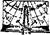
ИЗДАТЕЛЬСТВО
«НЕДРА»
Москва 1972
Технические правила ведения взрывных работ на дневной поверхности (пятое издание) разработаны Государственным трестом по производству буровзрывных работ «Союзвзрывпром» Министерства монтажных и специальных строительных работ СССР.
В них учтены изменения, происшедшие со времени выхода в свет четвертого издания, в технике и технологии ведения взрывных работ, систематизированы расчетные положения по определению параметров зарядов, обеспечивающих техническое решение поставленной задачи.
С введением в действие настоящего, пятого издания Правил утрачивает силу четвертое издание «Технических правил ведения взрывных работ на дневной поверхности».
Редакционная комиссия: канд. техн. наук Ф.А. Авдеев (председатель комиссии), канд. техн. наук В.Л. Барон, И.Л. Блейман (зам. председателя), Г.А. Васильев, И.Н. Гаглошвили, Е.М. Двоскин, П.П. Дульцев, В.М. Ручкин, Я.И. Цейтлин, М.Г. Шатаев.
ПРЕДИСЛОВИЕ
Технические правила ведения взрывных работ на дневной поверхности, разработанные трестом «Союзвзрывпром», вышли в свет в первом издании в 1945 г. В последующие годы Правила три раза переиздавались.
Настоящие Правила (пятое издание) являются переработанным и дополненным изданием «Технических правил ведения взрывных работ на дневной поверхности», утвержденных в 1956 г. В них отражены опыт специализированных управлений и лабораторий треста «Союзвзрывпром», а также прогрессивные достижения других производственных и научно-исследовательских организаций, работающих в области взрывного дела.
Правила составлены в соответствии с «Едиными правилами безопасности при взрывных работах» издания 1972 г. и с другими нормативными положениями техники безопасности.
Структура книги изменена по сравнению с четвертым изданием. Систематизирован расчет зарядов, для чего включен новый раздел «Основные положения к расчету зарядов». Приведенные в нем указания служат основой для расчета зарядов применительно ко всем основным видам взрывных работ. Введены новые разделы: «Взрывные работы в строительстве», «Контурное взрывание», «Подводные взрывные работы», «Сейсмическое действие взрыва» и др. Значительно расширены состав и содержание приложений.
Настоящие Правила обязательны для всех организаций и предприятий Министерства монтажных и специальных строительных работ СССР, выполняющих взрывные работы на дневной поверхности; они могут служить руководством для работников взрывного дела других министерств и ведомств, а также для студентов горных институтов, факультетов и техникумов, специализирующихся в области взрывных работ.
Переработка и подготовка Правил к изданию выполнена редакционной комиссией под общей редакцией канд. техн. наук Ф.А. Авдеева.
Разделы составили: 1 и 19 - И.Л. Блейман; 2 - 8, 12 - 14, 17 и 18 - Е.М. Двоскин; 9, 10 и 20 - В.Л Барон; 11 - В.X. Кантор; 15 - В.Л. Барон, И.Л. Блейман; 16 - П.П. Дульцев; 22 - И.Л. Блейман, П.П. Дульцев, Я.И. Цейтлин; 23 - Е.М. Двоскин, В.М. Ручкин, М.Г. Шатаев; 24 - В.М. Ручкин; 25 - Я.И. Цейтлин.
Трест «Союзвзрывпром» выражает благодарность докт. техн. наук, проф. Г.П. Демидюку и докт. техн. наук, проф. Г.И. Покровскому за ряд ценных предложений и замечаний, сделанных при рецензировании Правил, а также организациям и отдельным лицам, приславшим свои предложения и пожелания по содержанию текста настоящих Правил.
В связи с тем, что в пятом издании Технические правила были подвергнуты коренной переработке, трест «Союзвзрывпром» с признательностью примет все отзывы по данному изданию Правил, замечания и предложения, которые просит направлять по адресу: Москва, 105203, 14-я Парковая ул., д. 8/58, трест «Союзвзрывпром».
ПРИНЯТЫЕ СОКРАЩЕНИЯ
ВВ - взрывчатые вещества
СВ - средства взрывания
ВМ - взрывчатые материалы
КЗВ - короткозамедленное взрывание
ДШ - детонирующий шнур
ОШ - огнепроводный шнур
КД - капсюль-детонатор
ЭД - электродетонатор
ЭДКЗ - электродетонатор короткозамедленного действия
ЭДЗД - электродетонатор замедленного действия
КЗДШ - пиротехническое реле для короткозамедленного взрывания детонирующего шнура
КИШ - коэффициент использования шпура
ЛНС - линия наименьшего сопротивления
СПП - сопротивление по подошве уступа
ЕПБ - Единые правила безопасности при взрывных работах
|
Минмонтажспецстрой СССР |
Ведомственные строительные нормы |
ВСН 281-71 |
|
ММСС СССР |
||
|
Технические правила ведения взрывных работ на дневной поверхности |
Взамен
Технических правил ведения взрывных работ на дневной поверхности, |
|
Внесены трестом «Союзвзрывпром» |
Утверждены |
Срок введения |
1.1. Взрывные работы разрешается производить при наличии утвержденной в установленном порядке технической документации, составленной на основе настоящих Правил, «Положения о проектировании буровзрывных работ» (приложение 1) и в строгом соответствии с «Едиными правилами безопасности при взрывных работах» (ЕПБ) и «Едиными правилами безопасности при разработке месторождений полезных ископаемых открытым способом».
1.2. Опытные взрывы по установлению требуемых показателей для составления паспорта буровзрывных работ, а также взрывание зарядов в шпурах, предназначенных для доведения контура выработки до предусмотренного паспортом, для удаления навесов, для выравнивания забоя, для подрывки почвы выработки, для расширения выработки при перекреплении ее и для ликвидации отказавших зарядов разрешается производить без паспортов буровзрывных работ в строгом соответствии с требованиями ЕПБ.
1.3. Для размещения зарядов ВВ во взрываемой среде используются взрывные выработки: шпуры, скважины, рукава, камеры, траншеи и др.
1.4. При ведении взрывных работ разрешается применять взрывчатые вещества (ВВ) и средства взрывания (СВ), на которые имеются ГОСТы или утвержденные в установленном порядке технические условия, а также журнальные постановления Госгортехнадзора СССР.
Применение новых взрывчатых материалов (ВМ) допускается в порядке, предусмотренном ЕПБ. Использование отходов ВВ и боеприпасов, снятых с вооружения Советской Армии, осуществляется по специальным инструкциям или указаниям при наличии разрешения органов госгортехнадзора.
1.5. Взрывчатые вещества для производства работ следует принимать в соответствии с разделом 10 настоящих Правил и «Перечнем рекомендуемых промышленных взрывчатых веществ и их характеристиками» (приложение 2).
1.6. Скважины, шпуры, камеры, котлы могут заряжаться механизированно или вручную.
Технические характеристики некоторых устройств для механизированного заряжания приведены в приложении 3.
1.7. Заряжание вертикальных и наклонных (с углом наклона к горизонту более 65°) шпуров и скважин вручную порошкообразными и гранулированными ВВ должно производиться при помощи воронки. Это требование не распространяется на заряжание шпуров по негабариту и скважин диаметром более 200 мм. При заряжании скважин (шпуров) допускается применять забойники, изготовленные из дерева или других материалов, не дающих искры.
1.8. Для механизированного заряжания взрывных выработок разрешается применять ВВ II группы, не содержащие компонентов, чувствительных к механическим воздействиям, и устройства, допущенные Госгортехнадзором СССР к постоянному использованию или к промышленным испытаниям. Эксплуатация этих устройств должна производиться в строгом соответствии с инструкциями по их применению.
1.9. Для пневмозаряжания должны применяться металлические или полупроводящие пластмассовые трубы.
Запрещается применять трубопроводы из токонепроводящих материалов.
1.10. Установка боевиков с электродетонаторами в шпурах и скважинах разрешается только после окончания пневмозаряжания. Боевики с ДШ разрешается устанавливать до начала пневмозаряжания. При этом должны быть приняты меры для исключения возможности обрыва ДШ при пневмозаряжании.
1.11. При механизированном заряжании необходимо соблюдать следующие основные требования:
а) установка должна быть тщательно заземлена;
б) зарядные трубопроводы должны иметь отвод статического электричества;
в) заряжание камерных зарядов следует производить только при отсутствии токоведущих и токоприемных установок в штольнях, рассечках и камерах.
1.13. При изготовлении патронов-боевиков или подготовке зарядов капсюль-детонатор зажигательной трубки или электродетонатор должен быть полностью погружен в ВВ. Запрещается размещать в заряде капсюли-детонаторы россыпью или в коробках.
Проводники электродетонаторов, выведенные из боевика, должны прикрепляться к последнему шпагатом так, чтобы в случае натяжения проводников при заряжании электродетонаторы не были повреждены и не могли быть извлечены из боевиков. Так же поступают и при применении детонирующего шнура и зажигательных трубок.
Запрещается опускать боевики на огнепроводном шнуре зажигательных трубок, на проводах электродетонаторов или на детонирующем шнуре. Это требование не распространяется на заряжание шпуров глубиной до 2 м.
1.14. При заряжании шпуров глубиной более 2 м, а также скважин разрешается опускать патроны-боевики (весом до 0,5 кг) на концевых проводах, если последние прикреплены к патрону согласно п. 10.31 (см. рис. 20).
1.15. Боевики должны вводиться в заряды осторожно, без толчков. При заряжании запрещается уплотнять боевики, а также проталкивать их даже легкими ударами забойника.
1.16. Запрещается при забойке шпуров и скважин применять кусковатый и горючий материалы. При взрывных работах по торфу разрешается в качестве забоечного материала применять торфяную массу.
1.17. Забойка должна производиться с максимальной осторожностью. Запрещается уплотнять или бросать на боевик часть забоечного материала, непосредственно соприкасающегося с зарядом. При наклонных или вертикальных нисходящих шпурах и скважинах первые порции забойки должны быть небольшими.
1.18. Допустимость взрывания зарядов без забойки на открытых работах устанавливается главным инженером предприятия с учетом радиуса опасной зоны.
1.19. Перед началом взрывных работ должны быть установлены границы опасной зоны. Эти границы должны быть отмечены условными знаками на местности.
На время взрывных работ на границах опасной зоны должны быть выставлены посты охраны этой зоны.
1.20. Перед началом заряжания все лица, не связанные с этим процессом, должны быть удалены за пределы опасной зоны.
1.21. Безопасные расстояния для людей по поражающему действию осколков и обломков разрушаемых взрывами материалов должны устанавливаться проектом или паспортом и быть такими, чтобы исключались несчастные случаи с людьми.
1.22. При взрывных работах обязательно применение в светлое время суток и в подземных выработках звуковых, а в темное время суток звуковых и световых сигналов. Воспрещается подача сигналов голосом.
Звуковые сигналы должны быть хорошо слышны, а световые - хорошо видны на границах опасной зоны.
Способы, время подачи и назначение сигналов должны быть доведены до сведения всех рабочих и служащих данного предприятия, а также населения ближайшего района путем выставления щитов с описанием сигналов и их назначения.
1.23. Запрещается производить взрывные работы при недостаточном освещении и в темное время суток без достаточного освещения рабочего места и опасной зоны.
При сильном тумане или метели должны быть приняты дополнительные меры, обеспечивающие безопасность работ (усиление охраны, дополнительная связь и т.п.).
1.24. При взрывных работах в обводненных условиях следует применять водоустойчивые типы ВВ либо использовать заряды, покрытые влагоизолирующим составом или помещенные в водонепроницаемые оболочки.
1.25. При наличии в районе взрыва ответственных зданий и сооружений расчет зарядов должен производиться с учетом безопасных расстояний для этих сооружений по сейсмическому действию взрыва, по разлету кусков взорванной породы и действию воздушной ударной волны. При крупных массовых взрывах (при весе заряда более 100 т) должна учитываться также газоопасность продуктов взрыва для людей и животных.
1.26. При обнаружении отказа (или подозрении на него) на открытых работах взрывник должен немедленно выставить предупредительный знак у невзорвавшегося заряда, а в подземных условиях закрестить забой выработки и в обоих случаях уведомить об этом руководителя взрывных работ или заменяющее его лицо сменного технического надзора.
Работы, связанные непосредственно с ликвидацией отказов, должны производиться по указанию руководителя взрывных работ, начальника участка или лица сменного надзора.
В местах отказов запрещаются какие-либо работы, не связанные с их ликвидацией.
Отказавшие заряды должны ликвидироваться в соответствии с ЕПБ.
1.27. В зависимости от задач взрыва применяются заряды камуфлета, рыхления или выброса, которые по форме могут быть сосредоточенными, удлиненными или рассредоточенными.
Взрывание группы зарядов разрешается производить одновременно или с замедлениями (короткозамедленно, замедленно).
1.28. В процессе проведения взрывных работ расчетные параметры зарядов и их расположение следует при возможности уточнять опытным путем. Уточненные данные должны быть внесены в проектно-техническую документацию.
_____________________
1 Под расчетом зарядов понимают определение всех необходимых параметров (вес, форма, глубина заложения заряда, взаимное расположение зарядов, перебур, длина забойки, показатель действия взрыва, расчетный удельный расход ВВ и т.д.), обеспечивающих техническое решение задачи, поставленной перед взрывом.
2.1. Вес заряда, предназначенного для рыхления пород при одной обнаженной поверхности, определяется по формуле
Q = KW3, кг, (1)
где К - расчетный удельный расход ВВ (аммонита № 6-ЖВ), кг/м3 (табл. 1);
W - линия наименьшего сопротивления (ЛНС), м.
Примечания: 1. Если W меньше 1 м, вес заряда, согласно практическим данным, определяется по формуле
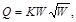
За ЛНС принимается кратчайшее расстояние от центра заряда до обнаженной поверхности.
2. Величина Q для часто встречающихся значений W приводится в приложении 4.
а = mW, м, (3)
где т - относительное расстояние между зарядами в ряду; принимается в пределах 1,0 - 1,4 в зависимости от взрываемости, характера напластования, требуемой степени дробления породы, последовательности взрывания зарядов и т.п. Нижний предел принимается для трудновзрываемых пород.
Если W соседних зарядов не равны между собой, для расчета величины а принимается их среднее значение.
При многорядном расположении зарядов в шахматном порядке и мгновенном взрывании расстояние между рядами зарядов b вычисляется по формуле
b = 0,85а, м. (4)
При разновременном (короткозамедленном или замедленном) взрывании рядов зарядов в зависимости от горнотехнических условий принимается
b = (0,9 ÷ 1,0)W, м. (5)
Таблица 1
Величина
расчетного удельного расхода взрывчатого вещества
(аммонит
№ 6-ЖВ)
|
Группа (категория) грунтов и пород по классификации СНиП |
Коэффициент крепости f по шкале проф. М.М. Протодьяконова |
Средний объемный вес породы, кг/м3 |
Расчетный удельный расход ВВ, кг/м3 |
||
|
для зарядов рыхления К |
для зарядов выброса Кв |
||||
|
Песок |
I |
- |
1500 |
- |
1,6 - 1,8 |
|
Песок плотный или влажный |
I - II |
- |
1650 |
- |
1,2 - 1,3 |
|
Суглинок тяжелый |
II |
- |
1750 |
0,35 - 0,4 |
1,2 - 1,5 |
|
Глина ломовая |
III |
- |
1950 |
0,35 - 0,45 |
1,0 - 1,4 |
|
Лёсс |
III - IV |
- |
1700 |
0,3 - 0,4 |
0,9 - 1,2 |
|
Мел, выщелоченный мергель |
IV - V |
0,8 - 1,0 |
1850 |
0,25 - 0,3 |
0,9 - 1,2 |
|
Гипс |
IV |
1,0 - 1,5 |
2250 |
0,35 - 0,45 |
1,1 - 1,5 |
|
Известняк-ракушечник |
V - VI |
1,5 - 2,0 |
2100 |
0,35 - 0,6 |
1,4 - 1,8 |
|
Опока, мергель |
IV - VI |
1,0 - 1,5 |
1900 |
0,3 - 0,4 |
1,0 - 1,3 |
|
Туфы трещиноватые, плотные, тяжелая пемза |
V |
1,5 - 2,0 |
1100 |
0,35 - 0,5 |
1,2 - 1,5 |
|
Конгломерат, брекчии на известковом и глинистом цементе |
IV - VI |
2,3 - 3,0 |
2200 |
0,35 - 0,45 |
1,1 - 1,4 |
|
Песчаник на глинистом цементе, сланец глинистый, слюдистый, серицитовый мергель |
VI - VII |
3,0 - 6,0 |
2200 |
0,4 - 0,5 |
1,2 - 1,6 |
|
Доломит, известняк, магнезит, песчаник на известковом цементе |
VII - VIII |
5,0 - 6,0 |
2700 |
0,4 - 0,5 |
1,2 - 1,8 |
|
Известняк, песчаник, мрамор |
VII - IX |
6,0 - 8,0 |
2800 |
0,45 - 0,7 |
1,2 - 2,1 |
|
Гранит, гранодиорит |
VII - X |
6 - 12 |
2800 |
0,5 - 0,7 |
1,7 - 2,1 |
|
Базальт, диабаз, андезит, габбро |
IX - XI |
6 - 18 |
3000 |
0,6 - 0,75 |
1,7 - 2,2 |
|
Кварцит |
X |
12 - 14 |
3000 |
0,5 - 0,6 |
1.6 - 1,9 |
|
Порфирит |
X |
16 - 20 |
2800 |
0,7 - 0 75 |
2,0 - 2,2 |
Примечания: 1. В случае применения других ВВ приведенные в табл. 1 значения К и Кв следует умножить на переводной коэффициент е, принимаемый по табл. 2.
2. Коэффициент К условно называют расчетным удельным расходом BB для зарядов нормального рыхления, его величина определена из выражения K = KвNq, коэффициент Кв условно называют расчетным удельным расходом BB для зарядов выброса. Величина Кв для данного ВВ зависит от свойств породы. Nq - относительный вес заряда, определяющий характер действия взрыва, равный отношению весов данного заряда и заряда нормального действия при одной и той же ЛНС. Для зарядов нормального рыхления Nq принят равным приблизительно 1/3. Для получения заданного характера действия взрыва заряда принимают следующие величины Nq;
- для наибольшего камуфлета Nq ≈ 0,2;
- для нормального рыхления Nq ≈ 0,33;
- для выброса Nq ≥ 1.
Таблица 2
Переводные
коэффициенты е для расчета эквивалентных зарядов ВВ по идеальной работе
взрыва
(эталон-аммонит
№ 6-ЖВ)1
______________
1 По данным Междуведомственной комиссии по взрывному делу.
|
e |
ВВ |
e |
|
|
Акватол М-15 |
0,76 |
Зерногранулит 79/21 |
1,00 |
|
Аммонал скальный № 3 |
0,80 |
Аммонит № 7-ЖВ |
1,04 |
|
Граммонал А-8 |
0,80 |
Динафталит |
1,08 |
|
Аммонит скальный № 1 |
0,81 |
Акватол 65/35 |
1,10 |
|
Детонит М |
0,82 |
Зерногранулит 50/50-В |
1,11 |
|
Алюмотол |
0,83 |
Гранулит С-2 |
1,13 |
|
Динамон АМ-10 |
0,84 |
Гранулит М |
1,13 |
|
Акватол МГ |
0,92 |
Игданит |
1,13 |
|
Гранулит АС-8 |
0,89 |
Зерногранулит 30/70-В |
1,13 |
|
Аммонал водоустойчивый |
0,91 |
Зерногранулит 30/70 |
1,14 |
|
Гранулит АС-4 |
0,98 |
Акванит 3Л |
1,16 |
|
Аммонит № 6-ЖВ |
1,00 |
Гранулотол |
1,20 |
Примечание. На основании практических данных треста «Союзвзрывпром» при взрывании гранулотола на рыхление следует принимать e = 1,0.
2.3. При заданном количестве ВВ, вмещающегося в 1 м выработки (вместимость), ЛНС удлиненного заряда W, расположенного параллельно обнаженной поверхности (рис. 1), определяется по формуле
где Р - вместимость 1 м выработки, кг (табл. 3);
К - расчетный удельный расход ВВ, кг/м3 (см. табл. 1).
Примечания: 1. При Р < К (W в этом случае меньше 1 м) ЛНС, согласно практическим данным, следует определять по формуле
2. Величина W может определяться также по формуле
где d - диаметр заряда, м;
Δ - плотность заряжания ВВ, т/м3 (приложение 2).
Формула (8) верна для величин W более 1 м.
3. Формулами (6), (7) и (8) следует пользоваться только при расчете зарядов, имеющих длину, равную или больше W.
Рис. 1. Удлиненный заряд, расположенный параллельно обнаженной поверхности
Таблица 3
Вес ВВ в 1 м
шпура, скважины (вместимость) в зависимости от диаметра
(плотность заряжания принята равной 0,9 т/м3)
|
Диаметр выработки d, мм |
Вес ВВ в 1 м выработки Р, кг |
Диаметр выработки d, мм |
Вес ВВ в 1 м выработки Р, кг |
Диаметр выработки d, мм |
Вес ВВ в 1 м выработки Р, кг |
|
25 |
0,44 |
62 |
2,7 |
195 |
27 |
|
26 |
0,48 |
63 |
2,8 |
200 |
28 |
|
27 |
0,51 |
64 |
2,9 |
205 |
30 |
|
28 |
0,55 |
65 |
3,0 |
210 |
31 |
|
29 |
0,59 |
66 |
3,1 |
215 |
33 |
|
30 |
0,64 |
67 |
3,2 |
220 |
34 |
|
31 |
0,67 |
68 |
3,3 |
225 |
36 |
|
32 |
0,72 |
69 |
3,4 |
230 |
37 |
|
33 |
0,78 |
70 |
3,5 |
235 |
39 |
|
34 |
0.82 |
71 |
3,6 |
240 |
41 |
|
35 |
0,87 |
72 |
3,7 |
245 |
42 |
|
36 |
0,92 |
73 |
3,8 |
250 |
44 |
|
37 |
0,97 |
74 |
3,9 |
255 |
46 |
|
38 |
1,0 |
75 |
4,0 |
260 |
48 |
|
39 |
1,1 |
80 |
4,5 |
265 |
50 |
|
40 |
1,1 |
85 |
5,1 |
270 |
51 |
|
41 |
1,2 |
90 |
5,7 |
275 |
53 |
|
42 |
1,2 |
95 |
6,4 |
280 |
55 |
|
43 |
1,3 |
100 |
7,1 |
285 |
57 |
|
44 |
1,4 |
105 |
7,8 |
290 |
59 |
|
45 |
1,4 |
110 |
8,6 |
295 |
61 |
|
46 |
1,5 |
115 |
9,4 |
300 |
64 |
|
47 |
1,6 |
120 |
10,0 |
310 |
68 |
|
48 |
1,6 |
125 |
11 |
320 |
72 |
|
49 |
1,7 |
130 |
12 |
330 |
77 |
|
50 |
1,8 |
135 |
13 |
340 |
82 |
|
51 |
1,8 |
140 |
14 |
350 |
87 |
|
52 |
1,9 |
145 |
15 |
360 |
92 |
|
53 |
2,0 |
150 |
16 |
370 |
97 |
|
54 |
2,1 |
155 |
17 |
380 |
102 |
|
55 |
2,1 |
160 |
18 |
390 |
107 |
|
56 |
2,2 |
165 |
19 |
400 |
ИЗ |
|
57 |
2,3 |
170 |
20 |
410 |
119 |
|
58 |
2,4 |
175 |
22 |
420 |
125 |
|
59 |
2,5 |
180 |
23 |
430 |
131 |
|
60 |
2,5 |
185 |
24 |
440 |
137 |
|
61 |
2,6 |
190 |
26 |
450 |
143 |
Примечание. При применении ВВ о плотностью Δ1, отличающейся от 0,9, необходимо произвести пересчет вместимости Р на соответствующую плотность по формуле
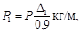
где P1 - вместимость 1 м выработки при плотности Δ1, кг;
Р - вместимость, указанная в табл. 3.
2.4. Если заданная длина заряда lзар меньше величины W, вычисленной по формулам (6), (7) или (8), необходимо определить новую (сокращенную) линию наименьшего сопротивления Wc по формуле
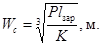
Примечание. Если подкоренное выражение меньше 1, то Wc, согласно практическим данным, определяется по формуле
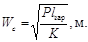
2.5. Вес удлиненного заряда, располагаемого параллельно обнаженной поверхности, длина которого равна или больше W (см. рис. 1), определяется по формуле
Q = Plзар, кг. (11)
Вес заряда, длина которого меньше W, определяется по формуле (1) или (2).
2.6. При взрывании серии параллельно расположенных зарядов, равноудаленных от обнаженной поверхности, расстояние между ними а принимается по формуле
a = mW, м,
где m = 0,9 ÷ 1,4.
2.7. Способ расчета удлиненных зарядов, взрываемых при одной обнаженной поверхности, когда оси зарядов перпендикулярны ей (рис. 2), зависит от того, меньше или больше мощность взрываемого слоя H величины Hпр, вычисляемой по формуле
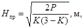
где Р - вместимость 1 м скважины (шпура), кг (см. табл. 3);
К - расчетный удельный расход ВВ, кг/м3 (см. табл. 1).
А-А
Рис. 2. Удлиненные заряды, расположенные перпендикулярно обнаженной поверхности
Если мощность взрываемого слоя Н меньше величины Hпр, заряды рассчитываются следующим образом.
а) Определяется вес заряда
Q = KH3, кг. (13)
б) Определяется длина заряда
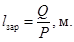
в) Устанавливается глубина скважины (шпура)
l = H + lпер, м, (14)
где lпер - глубина перебура, м.
Глубина перебура ориентировочно составляет
lпер = 0,5Klзар, м. (15)
Перебур не требуется, если скальная взрываемая порода подстилается нескальной. В этом случае допускается недобур величиной в 2 - 4 диаметра заряда.
г) Рассчитывается расстояние между зарядами в ряду
а = тН, (16)
где m - относительное расстояние между зарядами, принимаемое в пределах 0,7 - 1,2.
д) Определяется расстояние между рядами b. При многорядном расположении зарядов расстояние b при одновременном взрывании и расположении зарядов в шахматном порядке рассчитывается по формуле (4), а при порядном короткозамедленном взрывании зарядов принимается в пределах (0,7 ÷ 1,0)Н.
Если для заданных условий известен фактический удельный расход ВВ q, то вес заряда определяется по формуле
Q = qabH, кг, (17)
где q выражено в килограммах на кубический метр, а, b и Н - в метрах.
Величина забойки скважин (шпуров) должна быть не менее 1/3 глубины выработки.
2.8. Расчет удлиненных зарядов, взрываемых при одной обнаженной поверхности, когда ось заряда перпендикулярна ей (см. рис. 2), а мощность взрываемого слоя Н больше величины Нпр, производится следующим образом.
а) Определяется расстояние а между зарядами в ряду
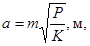
где m - принимается в пределах 0,7 ÷ 0,9.
б) Длина забойки lзаб выработок принимается равной 15 - 20 диаметрам заряда.
в) Определяется (ориентировочно) глубина перебура
lпер = 0,5Kа, м. (19)
При взрывании в условиях, оговоренных п. 2.7, перебур не следует делать.
г) Рассчитывается по формуле (14) глубина скважины (шпура) l, м.
д) Определяется вес заряда
Q = P(l - lзаб), кг. (20)
е) При многорядном расположении зарядов и порядном короткозамедленном взрывании расстояние между рядами принимается равным (0,9 ÷ 1,0)а.
2.9. Если для заданных условий известен фактический удельный расход ВВ q, параметры расположения зарядов, оси которых перпендикулярны обнаженной поверхности (см. рис. 2), определяется следующим образом.
В соответствии с пп. 2.7 и 2.8 определяют длину забойки и устанавливают ориентировочно величину перебура, после чего по формуле (20) вычисляют вес заряда Q и находят расстояние между зарядами:
при расположении зарядов в шахматном порядке
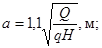
b = 0,87а, м; (21)
при расположении зарядов по квадратной сетке
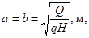
где Н выражается в метрах, q - в килограммах на кубический метр.
2.10. Выемки заданного профиля образуются взрыванием зарядов, рассчитанных на выброс породы.
2.11. Величина сосредоточенного заряда выброса определяется по формуле М.М. Борескова
Q = KвW3(0,4 + 0,6n3), кг, (23)
где Кв - расчетный удельный расход ВВ, кг/м3 (см. табл. 1);
W - линия наименьшего сопротивления, м;
n - показатель действия взрыва;
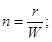
r - радиус воронки (рис. 3), м.
При величинах ЛНС свыше 25 м сосредоточенный заряд выброса рассчитывается по формуле
Q = BKвW3(0,4 + 0,6n3), кг, (24)
где поправочный коэффициент
B = W0,0032(W - 25). (25)
Значения поправочного коэффициента для величин ЛНС в пределах от 25 до 100 м приведены в табл. 4, а функции 0,4 + 0,6n3 для n в пределах от 1 до 3 - в табл. 5.
Таблица 4
Значения В для W = 25 ÷ 100 м
|
B |
W |
B |
|
|
25 |
1,00 |
65 |
1,70 |
|
30 |
1,06 |
70 |
1,84 |
|
35 |
1,12 |
75 |
2,00 |
|
40 |
1,19 |
80 |
2,16 |
|
45 |
1,28 |
85 |
2,30 |
|
50 |
1,37 |
90 |
2,55 |
|
55 |
1,47 |
100 |
3,00 |
|
60 |
1,58 |
Таблица 5
Значение 0,4 + 0,6n3 при п = 1 ÷ 3
|
0,4 + 0,6n3 |
n |
0,4 + 0,6n3 |
|
|
1,00 |
1,00 |
2,25 |
7,23 |
|
1,25 |
1.57 |
2,50 |
9,78 |
|
1,50 |
2,43 |
2,75 |
12,90 |
|
1,75 |
3,62 |
3,00 |
16,60 |
|
2,00 |
5,20 |
2.12. Для образования выемок взрывом на выброс заряды могут располагаться в один или несколько рядов.
Рис. 3. Схема действия заряда выброса
При однорядном расположении расстояние между зарядами а (при условии, что W больше 1,5 м) определяется по формуле
a = 0,5W(n + 1), м. (26)
Значение а для часто встречающихся величин n:
|
n |
|
|
|
|
|
|
|
|
|
|
а |
|
1,5 |
|
|
|
|
|
|
|
|
|
|
1,25W |
|
2,0 |
|
|
|
|
|
|
|
|
|
|
1,5W |
|
2,5 |
|
|
|
|
|
|
|
|
|
|
1,8W |
|
3,0 |
|
|
|
|
|
|
|
|
|
|
2,0W |
При двухрядном или многорядном расположении и одновременном взрывании зарядов расстояние между рядами b принимается равным расстоянию между зарядами в ряду.
Если расстояния между зарядами в соседних рядах не равны между собой, то b определяется по формуле
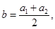
где a1 и а2 - расстояние между зарядами соответственно в первом и втором рядах.
2.13. При значении п от 1 до 2 видимую глубину воронки (траншеи) h (см. рис. 3) определяют по формуле
h = 0,33W(2n - 1), м. (28)
В глинистых и суглинистых грунтах
h = 0,45W(2n - 1), м. (29)
В скальных породах при значениях n более 2 видимая глубина воронки равна ЛНС, но разрушающее действие взрыва проявляется на глубину, равную радиусу сферы сжатия Rcж
где U - коэффициент пропорциональности, учитывающий свойства породы. Для скальных пород принимают U = 10.
Рис. 4. Односторонний направленный выброс
2.14. При проектировании выемок, каналов, траншей заданного профиля показатель действия взрыва n, число рядов зарядов и расстояние между рядами определяются графически с таким расчетом, чтобы проектируемая воронка соответствовала по возможности заданному профилю выемки.
2.15. При трехрядном расположении одновременно взрываемых зарядов значение n для зарядов среднего ряда принимается больше, чем для зарядов крайних рядов, на 0,5. В случае замедленного или короткозамедленного взрывания среднего ряда показатели n его зарядов увеличиваются на 0,2 - 0,3.
2.16. При взрывании на выброс в условиях горизонтального рельефа (см. рис. 3) ширина навала х и высота навала у ориентировочно определяются по формулам:
x = 5nW, м; (31)
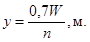
2.17. Направленный выброс грунта при горизонтальном рельефе достигается взрыванием не менее двух рядов зарядов I и II (рис. 4). При этом показатель действия взрыва зарядов того ряда, который наиболее удален от стороны направления выброса, должен быть больше на 0,5 показателя действия взрыва зарядов другого ряда.
Расстояние между рядами зарядов при направленном выбросе находят графически так, чтобы ЛНС каждого заряда, взрываемого с замедлением, была перпендикулярна обнаженной поверхности, образуемой зарядами, взрываемыми с опережением, а длина ее была не больше расстояния от центра заряда до свободной поверхности по вертикали.
2.19. Величина удлиненного заряда выброса Q, ось которого параллельна обнаженной поверхности (см. рис. 1), определяется по формуле
где W - ЛНС - расстояние от оси заряда до свободной поверхности (см. рис. 1), м.
Примечания. 1. Формула (33) справедлива, если lзар ≥ а, где а вычисляется по формуле (26).
2. Видимая глубина выемки рассчитывается по формуле (28) или (29).
В том случае, когда W больше 25 м, вес удлиненного заряда определяется по формуле
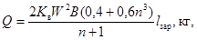
где В - поправочный коэффициент, принимаемый по табл. 4.
2.20. Для круглого сечения диаметр удлиненного заряда d, определяется по формуле
где Δ - плотность заряжания ВВ, т/м3;
Q - выражено в т, lзар - в м.
2.21. Если одним удлиненным зарядом не может быть получена выемка заданного профиля (недостаточная ширина понизу), располагают параллельно два или три заряда, удаленных один от другого на величину а, определяемую по формуле (26).
В зависимости от поставленной задачи заряды могут взрываться одновременно или с замедлением. При этом показатель действия взрыва n и последовательность взрывания зарядов принимаются аналогично тому, как это изложено в пп. 2.15, 2.17, 2.18.
2.22. Параметры удлиненных зарядов выброса в скважинах (шпурах), оси которых перпендикулярны обнаженной поверхности, рассчитываются таким же образом, как и параметры сосредоточенных зарядов, с учетом вместимости и расположения скважин. При этом принимается следующий порядок расчета.
а) В соответствии с заданными параметрами выемки вычисляется вес сосредоточенного заряда Q по формуле (23) и расстояние между зарядами в ряду а по формуле (26).
б) Устанавливается глубина скважин
lскв = (1,1 ÷ 1,2)W, м,
где W - ЛНС эквивалентного сосредоточенного заряда, м.
в) Определяется вместимость одной скважины Qскв при условии ее заполнения взрывчатым веществом на 2/3 глубины.
г) Вычисляется расстояние между скважинами:
если Q <Qскв, расстояние между скважинами аскв принимается равным значению а;
при Q > Qскв скважины сближают, определив расстояние между ними по формуле
Примечание. Формулу (36)
рекомендуется применять в том случае, когда 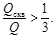
При 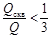
Таблица 6
Радиусы опасных зон по разлету кусков взорванного грунта в зависимости от показателя действия взрыва заряда n и ЛНС при производстве взрывов на выброс и сброс
|
Радиус опасной зоны (м) при значении показателя действия взрыва заряда n |
||||||||
|
для людей |
для механизмов (сооружений) |
|||||||
|
1,0 |
1,5 |
2,0 |
2,5 - 3,0 |
1,0 |
1,5 |
2,0 |
2,5 - 3,0 |
|
|
1,5 |
200 |
300 |
350 |
400 |
100 |
150 |
250 |
300 |
|
2,0 |
200 |
400 |
500 |
600 |
100 |
200 |
350 |
400 |
|
4,0 |
300 |
500 |
700 |
800 |
150 |
250 |
500 |
550 |
|
6,0 |
300 |
600 |
800 |
1000 |
150 |
300 |
550 |
650 |
|
8,0 |
400 |
600 |
800 |
1000 |
200 |
300 |
600 |
700 |
|
10,0 |
500 |
700 |
900 |
1000 |
250 |
400 |
600 |
700 |
|
12,0 |
500 |
700 |
900 |
1200 |
250 |
400 |
700 |
800 |
|
15,0 |
600 |
800 |
1000 |
1200 |
300 |
400 |
700 |
800 |
|
20,0 |
700 |
800 |
1200 |
1500 |
350 |
400 |
800 |
1000 |
|
25,0 |
800 |
1000 |
1500 |
1800 |
400 |
500 |
1000 |
1000 |
|
30,0 |
800 |
1000 |
1700 |
2000 |
400 |
500 |
1000 |
1200 |
Примечание. При производстве массовых взрывов на косогорах с уклоном местности от 30° и более, а также в случаях, когда место взрыва находится выше окружающей опасной зоны более чем на 30 м, радиус опасной зоны должен быть увеличен в 1,5 раза в сторону уклона косогора.
2.23. Величина радиуса опасной зоны (минимально безопасного расстояния) по разлету отдельных кусков породы для людей и механизмов (сооружений) при взрывании одиночного заряда определяется по табл. 6 в зависимости от показателя действия взрыва заряда и длины ЛНС.
Аналогично следует поступать и при определении радиуса опасной зоны при одновременном взрывании серии (группы) зарядов, расстояния между которыми соответствуют формуле (26), а также серии зарядов с различными величинами ЛНС, но с одинаковыми показателями n. При этом исходной для определения радиуса опасной зоны является наибольшая по величине ЛНС для данной серии зарядов.
При одновременном взрывании серии зарядов с различными по величине ЛНС и показателями n величина радиуса опасной зоны определяется расчетом. Для этого выбирается заряд с максимальной ЛНС и соответствующим ей максимальным значением n. По этим параметрам по табл. 6 определяются величины радиусов опасных зон для людей и механизмов. Затем по той же таблице определяются радиусы опасных зон при запроектированном максимальном значении n и соответствующей ему максимальной ЛНС (если максимальное значение n принято для расчета нескольких зарядов с различными ЛНС).
Наибольшие значения радиусов, полученных в результате таких предварительных расчетов, принимаются как окончательные.
Если взрывание на выброс предстоит провести на трассе значительной протяженности (от 0,5 км и больше), причем в различных местах трассы будут запроектированы заряды с резко различными значениями ЛНС и n, то целесообразно всю трассу разбить условно на несколько участков с более или менее одинаковыми величинами ЛНС. Для каждого такого участка следует определить свой радиус опасной зоны по разлету осколков породы.
Если проектом взрыва на выброс (сброс) в силу тех или иных причин производственного или экономического порядка предусмотрено и соответствующими органами утверждено производство взрыва с укороченной забойкой, то величины радиусов опасных зон (по разлету осколков) как для людей, так и для механизмов, рассчитанные по табл. 6, должны быть увеличены на 20 %.
2.24. Взрывы на сброс производятся при уклоне поверхности взрываемого массива более 20° к горизонту для вскрытия или разработки полезных ископаемых, образования профильных выемок (дорог, специальных площадок), плотин, насыпей разного назначения и т.п.
2.25. В зависимости от конфигурации взрываемого массива и требований, предъявляемых к взрыву (размеры выемок, угол образуемого откоса и т.п.), расположение зарядов может быть однорядным (рис. 5), двухрядным (рис. 6) и двухъярусным (рис. 7). В отдельных случаях допускается многорядное и многоярусное расположение зарядов.
2.26. Места заложения зарядов определяются графически таким образом, чтобы образующаяся выемка (с учетом действия заряда в глубь массива) вписывалась в проектный контур.
Рис. 5. Схема однорядного расположения зарядов сброса
2.27. Радиус действия взрыва сосредоточенного заряда R (см. рис. 5) определяется по формуле
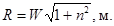
Радиус отрыва пород в нагорную сторону R1 за счет обрушения откоса может превышать величину R, достигая 2W, а на участках с падением пластов пород параллельно поверхности склона R может превышать 3W.
Процент сброса породы при образовании полувыемки имеет максимальное значение при R = R1. Под процентом сброса понимают отношение фактического объема образовавшейся взрывом выемки (в пределах проектного контура) к проектному объему, выраженное в процентах.
2.28. При двухрядном расположении заряды второго ряда помещаются в вершине угла, образуемого проектируемым откосом O2B и площадкой АO2 (см. рис. 6).
Местоположение заряда первого ряда находится из условия совмещения радиуса действия его взрыва R с проектным контуром площадки O1A. При этом расстояние между рядами зарядов во избежание оставления порогов должно быть не больше радиуса действия взрыва заряда второго рода.
За ЛНС заряда второго ряда принимается расстояние от его центра до проектируемой поверхности отрыва при взрыве зарядов первого ряда.
Если число рядов превышает два, графическое построение ЛНС первых рядов производится аналогичным способом с размещением зарядов от последнего ряда к первому.
2.29. Величина зарядов сброса определяется по формуле (23). Показатель действия взрыва зарядов n первого ряда принимается от 1 до 1,5. Значение n для зарядов второго ряда должно быть на 0,25 - 0,5 больше, чем для зарядов первого ряда. Как правило, заряды второго ряда взрывают с замедлением.
2.30. При устройстве профильных выемок месторасположение зарядов следует определять из условия сохранения при взрыве проектного основания выемки и получения заданных откосов. Для этого необходимо учитывать действие заряда в глубь массива, которое выражается в разрушении (рыхлении) дополнительного объема породы за пределами контура воронки (выемки).
Глубина интенсивного разрушения пород в глубь массива может быть ориентировочно определена по формуле (30).
2.31. Расстояние между зарядами а в рядах (ярусах) определяется по формуле (26). При различных величинах W соседних зарядов расстояние между зарядами находится по средней величине.
Рис. 6. Схема двухрядного расположения зарядов сброса
Рис. 7. Схема двухъярусного расположения зарядов сброса
2.32. При двухъярусном расположении зарядов (см. рис. 7) расстояние между ярусами bяр принимается в зависимости от устойчивости породы и величины n в пределах (1,3 ÷ 1,6)W зарядов нижнего яруса. При двухрядном расположении зарядов в нижнем ярусе за величину W принимается ЛНС заряда второго ряда.
Заряды разных ярусов могут взрываться одновременно или с замедлением в направлении сверху вниз.
2.33. При однорядном (и одноярусном) расположении зарядов сброса ширина развала породы L может быть ориентировочно определена по формуле
L = 5nW, м.
3.1. Метод скважинных зарядов состоит во взрывании удлиненных зарядов, помещенных в искусственные цилиндрические углубления (скважины) диаметром более 75 мм при глубине до 5 м или любого диаметра при глубине больше 5 м.
3.2. Метод скважинных зарядов применяется на открытых горных работах, строительстве котлованов, траншей, дорог и т.п.
Скважинные заряды могут размещаться в вертикальных, наклонных и горизонтальных скважинах. Способ расчета скважинных зарядов зависит от числа обнаженных поверхностей, в сторону которых проявляется действие взрыва.
3.3. Расчет скважинных зарядов, на рыхление, взрываемых при одной обнаженной поверхности, когда скважины ей перпендикулярны (см. рис. 2), производится по правилам расчета удлиненных зарядов, изложенным в пп. 2.7 и 2.8.
3.4. Для дробления породы уступа применяются главным образом вертикальные или наклонные скважины. Горизонтальные или пологие скважины применяют при подработке уступов, на строительстве дорог и т.п.
3.5. Расчет вертикальных скважинных зарядов, взрываемых в уступе (рис. 8), ведется в следующем порядке.
Рис. 8 Вертикальный скважинный заряд в уступе
а) Определяется диаметр скважин. Для заданной высоты уступа диаметр скважины d, при котором максимально используется ее объем (скважина заполняется ВВ на 2/3 длины и более), определяется по формуле
где Н - высота уступа, м;
К - расчетный удельный расход ВВ, кг/м3 (см. табл. 1);
Δ - плотность заряжания, т/м3.
В зависимости от требуемой степени дробления породы и наличия бурового инструмента диаметр скважины может быть уменьшен.
б) Определяется величина преодолеваемого сопротивления по подошве уступа (СПП) W (см. рис. 8) для одиночного скважинного (шпурового) заряда
где Р - вместимость 1 м скважины, кг (см. табл. 3).
Если известна величина фактического удельного расхода ВВ q на дробление 1 м3 породы в уступе для условий нормального рыхления, то W может определяться по формуле
Примечания. 1. Величина W может также определяться по формуле
2. Формулами (6), (39) и (40) следует пользоваться только в тех случаях, когда W меньше 0,8H. Если полученная величина W больше 0,8Н, СПП необходимо определять согласно указаниям п. 3.12.
в) Определяется ориентировочно величина перебура lпер. В зависимости от свойств и характера залегания взрываемой породы, а также величины СПП глубина скважины lскв должна превышать высоту уступа Н на величину перебура
Перебур не следует делать, если взрываемый уступ подстилается нескальной породой.
г) Определяется длина забойки. При этом учитывается, что она влияет на ширину развала. Наибольшая ширина развала получается при минимально допустимой величине забойки, которая принимается для этого случая равной (0,6 ÷ 0,8)W. При погрузке взорванной породы в железнодорожный транспорт, когда ширину развала требуется по возможности уменьшить, величину забойки принимают (0,8 ÷ 1)W.
Для преодоления СПП одиночным скважинным зарядом [при условии вычисления W по формулам (6), (39) или (40)] длина заряда должна быть не менее (1 ÷ 1,2)W. Нижний предел принимается в случае отсутствия перебура.
д) Рассчитывается по формуле (20) вес заряда Q в зависимости от вместимости заряжаемой части скважины.
Рис. 9. Скважинный рассредоточенный заряд
При решении вопроса о размещении заряда по длине скважины необходимо исходить из следующего.
При длине заряда (1 ÷ 1,2)W следует применять сплошные удлиненные заряды. При большей длине заряда целесообразно рассредоточить верхнюю его часть (рис. 9), длина нижней части I должна составлять при этом не менее 1,2W. При хорошо выраженном напластовании рассредоточенные части заряда располагают против наиболее трудно дробимых пластов. В других случаях порядок рассредоточения устанавливают опытным путем.
Пространство между частями рассредоточенного заряда в скважине заполняется забойкой. Вместо забойки можно оставлять воздушный промежуток. Суммарная длина воздушных промежутков должна составлять 0,17 - 0,35 длины всего заряда в скважине (меньшее значение относится к более крепким породам).
Оптимальная длина воздушного промежутка определяется опытным путем.
Инициирование всех частей заряда производится при помощи детонирующего шнура (ДШ), проложенного по скважине, или отдельных боевиков (при необходимости с промежуточным детонатором), введенных в каждую часть заряда.
е) Определяется расстояние между зарядами в ряду
а = mW, м,
где m = 0,8 ÷ 1,4.
Если для заданных условий известен фактический удельный расход ВВ q, расстояние между зарядами в ряду определяется по формуле
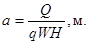
3.6. В зависимости от требований, предъявляемых к взрыву, скважины могут взрываться мгновенно или короткозамедленно. Применение короткозамедленного взрывания должно производиться в соответствии с указаниями раздела 24.
3.7. При многорядном расположении зарядов расстояние b между рядами принимается (0,9 ÷ 1)W при короткозамедленном взрывании и 0,85W при мгновенном взрывании. В последнем случае скважины располагают в шахматном порядке.
3.8. Если по горнотехническим условиям невозможно выдержать расчетную величину СПП (W), преодолеваемую одиночным зарядом, следует увеличить диаметр скважины.
В случае невозможности увеличения диаметра скважины производят одновременное взрывание сближенных скважинных зарядов. При этом вследствие взаимодействия взрывов преодолеваемая величина СПП увеличивается пропорционально коэффициенту взаимодействия
Квз = 1,6 - 0,5m,
где m - относительное расстояние между скважинами в ряду.
Величина СПП с учетом взаимодействия зарядов равна
Wвз = W(1,6 - 0,5m), м. (43)
Формула справедлива при m ≤ 1,2.
3.9. Если с уменьшением величины m до 0,6 СПП не может быть преодолено, а применение наклонных скважинных зарядов, увеличение диаметра заряда или использование котловых зарядов технически невозможно, применяют парно-сближенные скважинные заряды. Они позволяют увеличить СПП на 30 - 40 % по сравнению с сопротивлением, преодолеваемым одиночным зарядом.
Величина СПП парно-сближенных зарядов W2 определяется по формуле
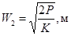
или
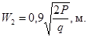
Парно-сближенные скважинные заряды располагают в массиве таким же образом, как одиночные скважинные заряды. При этом спаренная скважина рассматривается как одиночная с эквивалентной вместимостью 1 м скважины.
Длина забойки должна приниматься в соответствии с п. 3.5. Расстояние между скважинами в паре принимается в пределах 4 - 6 диаметров скважины.
3.10. Если для заданных условий известен фактический удельный расход ВВ q, величину скважинного заряда Q определяют по формуле
Q = qWaH, кг. (46)
По этой же формуле уточняют (корректируют) вес зарядов первого ряда после бурения.
В обоих случаях не допускается занижение установленной длины забойки.
3.11. После помещения заряда ВВ незаряженная часть скважины заполняется инертным сыпучим забоечным материалом мелких фракций.
3.12. Если вычисленное по формуле (6), (39) или (40) значение W получилось больше 0,8Н, то расчет зарядов производится следующим образом.
а) Принимается величина СПП в пределах (0,6 ÷ 0,8)Н. В тех случаях, когда заряд в скважине по форме близок к сосредоточенному, допускается увеличение СПП до (0,9 ÷ 1)H.
б) Вычисляется вес заряда
Q = KW3, кг,
где К - расчетный удельный расход ВВ, кг/м3 (см. табл. 1);
W - СПП, м.
Если для заданных условий известен фактический удельный расход ВВ q, вес заряда определяется по формуле (46).
в) Определяется длина заряда
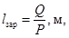
где Р - вместимость 1 м скважины, кг (см. табл. 3).
г) Вычисляется (ориентировочно) глубина перебура с учетом указаний п. 2.7.
д) Устанавливается сетка расположения скважин так же, как указано в п. 3.5.
Длина забойки должна быть не менее 1/3 глубины скважины.
3.13. Для серийного взрывания скважинных зарядов применяются детонирующий шнур и электродетонаторы.
При взрывании зарядов, помещаемых в одиночные скважины глубиной не более 10 м в виде сплошного удлиненного заряда, допускается, как исключение, огневое взрывание. Сращивание огнепроводного шнура запрещается.
3.14. При заряжании сырых и обводненных скважин должны использоваться водоустойчивые ВВ или комбинированные заряды из водоустойчивых и неводоустойчивых ВВ (в обводненной части скважины помещается водоустойчивое ВВ).
3.15. Если для заряжания используются различные виды ВВ, то каждый из них размещается в скважине отдельным слоем; перемешивание различных ВВ не допускается.
3.16. При заполнении скважин забоечным материалом необходимо следить, чтобы электропровода или шнур, выходящие из боевиков на поверхность, отводились к стенке скважины и не натягивались.
3.17. Метод наклонных скважинных зарядов заключается во взрывании удлиненных сплошных или рассредоточенных зарядов в скважинах, пробуренных параллельно откосу уступа.
Этот метод обеспечивает более равномерное дробление породы, чем при вертикальных зарядах. Как правило, наклонные заряды применяют при углах откоса 55 - 75° (рис. 10).
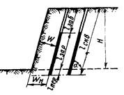
Рис. 10. Наклонный скважинный заряд
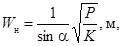
или
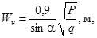
где Wн - СПП, измеряемое расстоянием по горизонтали от нижней бровки уступа до оси скважины, м;
Р - вместимость 1 м скважины, кг (см. табл. 3);
α - угол наклона скважины к горизонтальной плоскости, град;
К - расчетный удельный расход ВВ, кг/м3 (см. табл. 1);
q - фактический удельный расход ВВ, кг/м3.
Значения sinα для часто встречающихся углов:
|
α |
55 |
60 |
65 |
70 |
75 |
80 |
|
sinα |
0,82 |
0,87 |
0,91 |
0,94 |
0,97 |
0,98 |
Толщина взрываемого слоя W определяется по формуле (6) или (39.)
Длина скважины
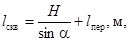
где Н - высота уступа, м;
lпер - глубина перебура, м.
Глубина перебура ориентировочно определяется по формуле
lпер = 0,5KW, м,
где W - толщина взрываемого слоя, м.
а = mW;
b = (0,85 ÷ 1)Wн,
где m = 0,9 ÷ 1,3.
Верхний предел величины b принимается для порядного короткозамедленного (замедленного) взрывания.
Параметры заряда определяются согласно п. 3.5.
3.20. Пологие или горизонтальные скважинные (шпуровые) заряды, применяемые для уширения дорог, образования полувыемок (полок) на косогоре, при подработке уступов на карьерах и т.п., рассчитываются аналогично расчету удлиненных зарядов, оси которых перпендикулярны обнаженной поверхности (пп. 2.7, 2.8).
За мощность взрываемого слоя W в этом случае принимается величина уширения дороги, ширина полки и т.п.
Метод шпуровых зарядов состоит во взрывании зарядов, размещенных в искусственных цилиндрических углублениях (шпурах) диаметром до 75 мм при глубине до 5 м.
Метод шпуровых зарядов, как правило, применяют на строительстве котлованов, траншей, канав, кюветов, при планировке площадок, подчистных работах; при проходке взрывных выработок (шурфов, штолен, камер и т.п.); при дроблении крупных кусков породы и валунов; на открытых горных разработках при небольшой мощности взрываемого слоя или при добыче штучного камня; при специальных видах работ - дроблении фундаментов, валке труб и т.п.
4.2. Расчет шпуровых зарядов, взрываемых при одной обнаженной поверхности и расположенных перпендикулярно этой поверхности (см. рис. 2), производится аналогично расчету удлиненных зарядов (в соответствии с пп. 2.7 и 2.8).
4.3. Для рыхления породы при двух обнаженных поверхностях (в уступе) заряды размещают в вертикальных (иногда наклонных) шпурах, буримых в один или несколько рядов параллельно бровке уступа.
4.4. Расчет параметров вертикальных шпуровых зарядов, взрываемых в уступе, аналогичен расчету вертикальных скважинных зарядов и производится следующим образом.
Определяется диаметр шпура. Для заданной высоты уступа диаметр шпура, при котором максимально используется его выбуренный объем, должен быть меньше величины d, вычисленной по формуле (38).
По заданному диаметру шпура вычисляется величина СПП для шпурового заряда по формуле (6) или (39).
В дальнейшем методика расчета зависит от соотношения между вычисленным СПП (W) и заданной высотой уступа (Н). Если вычисленная по формуле (6) или (39) величина W > 0,8H, то W принимается в пределах (0,6 ÷ 0,8)Н, а при шпуровом заряде, близком по форме к сосредоточенному, допускается увеличение СПП до (0,9 ÷ 1,0)Н.
Вес заряда при этом определяется по формуле
Q = KW3, кг,
где К - расчетный удельный расход ВВ, кг/м3 (см. табл. 1);
W - сопротивление по подошве уступа, м.
В том случае, когда W < 1 м, вес заряда определяется по формуле (2).
Длина заряда вычисляется по формуле
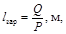
где Р - вместимость 1 м шпура, кг (см. табл. 3).
Глубина перебура lпер с учетом указаний п. 2.7 находится по формуле (15).
Длина забойки должна быть не меньше 1/3 глубины шпура.
Если для заданных условий известен фактический удельный расход ВВ q, вес заряда находится по формуле
Q = qWaH, кг,
где а - расстояние между зарядами в ряду, м.
4.5. Расчет шпуровых зарядов при вычисленной по формуле (6) или (39) величине W < 0,8Н производится аналогично расчету скважинных зарядов.
Величина перебура устанавливается по формуле (41).
Величина забойки принимается в пределах (0,6 ÷ 0,7)W.
При этом следует учитывать, что в рассматриваемом случае заряд преодолевает СПП, если длина его превышает (1,0 ÷ 1,2)W. Нижний предел принимается в случае отсутствия перебура.
Вес заряда, зависящий от вместимости заряжаемой части шпура, рассчитывается по формуле (20).
4.6. Расчет зарядов, расположенных в наклонных шпурах, производится аналогично расчету наклонных скважинных зарядов по указаниям пп. 3.18 и 3.19.
4.7. Расстояние между шпурами в ряду а принимается в пределах (0,8 ÷ 1,5)W:
при мгновенном взрывании а = (0,8 ÷ 1,1)W;
при короткозамедленном и замедленном взрывании а = (1,0 ÷ 1,4)W;
при огневом взрывании а = (1,2 ÷1,5)W.
В последнем случае принятая величина а должна исключить подбой одних зарядов другими.
4.8. Если шпуры имеют неодинаковые СПП, то при определении расстояния между ними берется среднеарифметическое из значений СПП для смежных шпуров.
4.9. При расположении шпуров в несколько рядов, взрываемых одновременно, расстояние между шпурами а и вес заряда Q во всех рядах принимаются одинаковыми и такими же, как в первом ряду.
4.10. Расстояние между рядами зарядов b устанавливается равным 0,85W, где W - СПП первого ряда шпуров; при замедленном и короткозамедленном порядном взрывании b = (0,9 ÷ 1,0)W.
При мгновенном взрывании шпуры располагаются в шахматном порядке; при порядном, короткозамедленном и замедленном взрывании - как по шахматной, так и по прямоугольной сетке.
4.11. При заряжании шпуров ВВ россыпью необходимое количество ВВ мерной кружкой или совком засыпают в шпур через воронку в несколько приемов и легко уплотняют забойником. Засыпав с уплотнением 80 - 85 % веса заряда, вводят инициатор (боевик, капсюль-детонатор, электродетонатор, ДШ с узлом) и досыпают оставшуюся часть заряда без уплотнения.
4.12. В случае предварительного монтажа электровзрывных сетей и использования порошкообразных ВВ при заряжании шпуров (глубиной до 1 м) разрешается опускать электродетонатор в шпур до засыпания ВВ.
4.13. Сырые и обводненные шпуры следует заряжать водоустойчивыми ВВ. При неводоустойчивых ВВ их помещают в патроны, покрытые влагоизолирующим составом, или во влагонепроницаемые оболочки.
4.14. Электродетонатор или капсюль-детонатор необходимо помещать в ближайший к устью шпура патрон так, чтобы дно гильзы детонатора было направлено ко дну шпура. При раздельном взрывании, чтобы избежать подбоя заряда, патрон-боевик следует помещать первым от дна шпура; при этом дно гильзы должно быть направлено к устью шпура. Возможность обратного инициирования устанавливается руководителем предприятия по согласованию с местными органами госгортехнадзора.
4.15. Порошкообразные аммиачноселитренные ВВ в патронах и в мягкой упаковке, а также слежавшиеся патроны с аммиачноселитренными ВВ необходимо предварительно, до заряжания шпуров, осторожно размять, без нарушения целостности оболочек. Эта операция производится до ввода в патроны капсюля-детонатора, электродетонатора, ДШ.
4.16. При проведении выработок категорически запрещается применять слежавшиеся (не поддающиеся размятию руками) и увлажненные свыше установленной нормы порошкообразные аммиачноселитренные ВВ.
4.17. После размещения заряда свободную часть шпура заполняют забоечным материалом. Забоечный материал должен засыпаться весьма осторожно, чтобы не был поврежден шнур или провод.
4.18. Для забойки шпуров должен применяться мелкий негорючий материал (песок, слегка увлажненная глина, смесь влажной глины с песком и т.п.).
4.19. Для забойки восстающих или горизонтальных шпуров песок или другой сыпучий материал может применяться в патронированном виде.
4.20. Заполнение шпура забоечным материалом производится на всю глубину, оставшуюся свободной после введения заряда, причем ближайшая к заряду часть забоечного материала не уплотняется, а остальная уплотняется легким нажимом забойника.
4.21. Если в опасной зоне находятся жилые помещения или инженерные сооружения (линии электропередач, наружные паропроводные и водопроводные магистрали, склады, баки и т.п.), то шпуры перед взрывом для предупреждения разлета породы должны прикрываться защитными приспособлениями - металлическими листами, матами из цепей, проволочной сеткой, щитами из досок или бревен, железобетонными плитами, укрытиями специальной конструкции (п. 15.31).
В отдельных случаях защитными приспособлениями укрывают защищаемые объекты или части их.
5.1. Котловыми называют заряды, размещенные в полости - котле, образованном расширением в определенных местах шпура или скважины путем простреливания малыми зарядами, прожигания и другими способами.
Шпуры и скважины, имеющие котлы, называют соответственно котловыми шпурами и котловыми скважинами.
5.2. Котловые заряды допускается применять в следующих случаях:
когда ими технологически возможно и экономически целесообразно заменить камерные, скважинные или шпуровые заряды;
когда сопротивление по подошве уступа настолько велико, что заряд, помещенный в скважину или шпур, не в состоянии его преодолеть.
5.3. Взрывным способом заданный объем котла получают одним или несколькими простреливаниями.
Вес прострелочного заряда Qп определяется по формуле
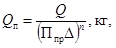
где Q - вес основного заряда, кг;
Ппр - показатель простреливаемости, дм3/кг (табл. 7);
Δ - плотность ВВ (насыпная), кг/дм3;
n - показатель степени, равный порядковому номеру простреливания; для последнего простреливания принимается n = 1, для предпоследнего n = 2 и т.д.
Таблица 7
Ориентировочные
значения показателя простреливаемости Ппр
(по данным ЦПЭС треста «Союзвзрывпром»)
|
Классификация грунтов и пород по СНиПу |
Пределы показателя простреливаемости Ппр |
|
|
Глина пластичная моренная |
II |
900 - 1400 |
|
Глина черная |
III |
400 - 600 |
|
Глина моренная |
III |
220 - 530 |
|
Глина желто-бурая жирная |
III |
220 - 270 |
|
Глина темно-красная -жирная |
III |
170 - 250 |
|
Мергель мягкий трещиноватый |
IV |
100 - 170 |
|
Мергель мягкий сильно трещиноватый |
IV |
180 - 280 |
|
Глина ломовая темно-синяя |
IV |
100 - 150 |
|
Суглинок тяжелый, глина песчанистая |
IV |
70 - 190 |
|
Мел мягкий, известняк-ракушечник |
V |
35 - 65 |
|
Мергель средней крепости, доломит мергелистый, известняк мягкий сильно трещиноватый |
V - VI |
Около 20, большое рассеивание значений |
|
Гипс плотный, мелкозернистый, сланцы глинистые крепкие, гранит сильно трещиноватый, фосфориты средней крепости, силициты, известняки средней трещиноватости |
VI - VIII |
3 - 15 |
|
Гранит средней трещиноватости, кварциты плотные железистые, кварциты плотные серые, апатито-нефелиновая руда, известняк плотный, змеевики с включением асбеста, песчаник, доломитломит |
VII - IX |
2 - 10 |
|
Роговики, скарны, мрамор, гранитоид, кремень пластовый, известняки крепкие, гранит крупнозернистый и среднезернистый, фосфориты крепкие, доломит крепкий |
VII - XI |
0,2 - 5 |
По этой формуле вес последнего прострелочного заряда составит
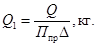
Вес предпоследнего прострелочного заряда
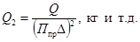
5.4. Чтобы определить необходимое число простреливаний, находят прежде всего предельно допустимый вес первого прострелочного заряда, который определяется по диаметру котла Dк, принимаемого шарообразным,
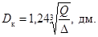
Длину первого прострелочного заряда lзар можно принять равной величине Dк. Если не предъявляется особых требований к степени сосредоточенности заряда, lзар увеличивается. При lзар = 2Dк отношение длины полученной полости к ее поперечному размеру равно примерно 4. При выборе lзар необходимо исходить из того, чтобы число простреливаний было минимальным.
Вес первого прострелочного заряда не должен превышать некоторой величины Qнач, определяемой по вместимости заряжаемой части скважины (шпура),
Qнач = Plзар, кг,
где Р - вместимость 1 м скважины (шпура), кг (см. табл. 3);
lзар = (1 ÷ 2)Dк, м.
Если Q1 по величине меньше Qнач, требуемый котел можно получить с одного простреливания. Если же Q1 больше Qнач, надо делать два простреливания или больше, вычисляя величины зарядов Q1, Q2 и т.д. до тех пор, пока последний из них не станет меньше Qнач. Его и следует принимать за первый прострелочный заряд.
5.5. При проведении работ по простреливанию необходимо контролировать объем котла и уточнять опытным путем показатель простреливаемости Ппр. Требуемый объем котла Vк вычисляется по формуле
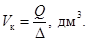
Объем котла может измеряться специальными приборами или определяться на опытной скважине (шпуре) путем засыпания в нее известного количества инертного сыпучего материала.
5.6. Параметры котловых зарядов для рыхления пород при двух обнаженных поверхностях (в уступе, рис. 11) определяются следующим образом.
а) Величина котлового заряда вычисляется по формуле
Q = KW3, кг,
где К - расчетный удельный расход ВВ, кг/м3 (см. табл. 1);
W - линия наименьшего сопротивления; принимается равной 0,6 - 0,9 высоты уступа.
Рис. 11. Котловой заряд
б) Расстояние между центрами зарядов в ряду принимается в пределах (1,0 ÷ 1,5)W.
в) При расположении зарядов в несколько рядов и в шахматном порядке расстояние между рядами b принимается: при одновременном взрывании рядов зарядов b = 0,85W, при разновременном порядном взрывании b = W.
Скважины (шпуры) в целях размещения центра заряда на уровне подошвы уступа (красной отметки котлована, траншеи) должны быть пробурены ниже подошвы уступа на величину, равную половине длины первого прострелочного заряда.
Для улучшения дробления породы верхней части уступа в скважину или шпур выше котла помещают удлиненный (дополнительный) заряд. При выборе длины дополнительного заряда исходят из того, что зона дробления породы котловым зарядом в направлении устья скважины составляет примерно (0,7 ÷ 0,8)W. За пределами этой зоны располагается дополнительный заряд, вес которого определяется по формуле
Qдоп = [lскв - (0,7W + lзаб)]Р, кг, (53)
где W - ЛНС котлового заряда, м;
lзаб - длина верхней забойки, м;
lскв - глубина скважины, м.
Свободная часть выработки между котловым и дополнительным зарядами заполняется забоечным материалом или между ними оставляется воздушный промежуток.
5.7. Длина верхней забойки выработок принимается в пределах 15 - 25 диаметров заряда. Для котловых скважин применение верхней забойки обязательно, независимо от наличия дополнительного заряда; забойка котловых шпуров необязательна.
5.8. При работах по простреливанию ВВ помещается в зарядные выработки в патронах или россыпью. Взрывание зарядов должно производиться с применением патронов-боевиков.
5.9. При заряжании котла боевики должны быть опущены в него после засыпки ВВ в количестве 50 % от веса заряда; при бескапсюльном способе взрывания боевик в котел может быть опущен после засыпки 10 % ВВ.
5.10. Сухие вертикальные выработки простреливают зарядами из порошкообразного ВВ.
5.11. Вертикальные и расположенные под большим углом наклона к горизонту обводненные выработки простреливаются зарядами патронированного, прессованного или гранулированного (тонущего в воде) водоустойчивого ВВ типа гранулотола, алюмотола и т.п.
5.12. Горизонтальные и пологие обводненные выработки простреливаются зарядами патронированного или прессованного водоустойчивого ВВ.
5.13. При простреливании порошкообразным ВВ в выработку следует засыпать часть прострелочного заряда, затем опустить патрон-боевик, засыпать оставшуюся часть заряда, на которую для предохранения скважины (шпура) от повреждения поместить забойку из сыпучего мелкого материала длиной (для первого простреливания) не менее длины заряда.
5.14. Для увеличения объема котла при простреливании скальных пород целесообразно вслед за простреливанием производить продувку выработки сжатым воздухом.
5.15. После простреливания скважины (шпура) новое заряжание разрешается не ранее чем через 15 мин при работе с ВВ II группы и не ранее чем через 30 мин при работе с другими ВВ.
5.16. Заряжать котлы в вертикальных, наклонных и горизонтальных выработках следует порошкообразными или гранулированными ВВ через воронку (из оцинкованного железа, алюминия и т.п.) или пневмозарядчиком.
6.1. Метод камерных зарядов состоит во взрывании зарядов ВВ, помещенных в специальных выработках - камерах. Для размещения камерных зарядов во взрываемом массиве проходят горизонтальные (штольни, рассечки, рис. 12,а), вертикальные (шурфы, рис. 12,б) или наклонные подготовительные выработки, из которых, в свою очередь, проводят зарядные камеры. Выбор типа подводящих выработок определяется технико-экономическими расчетами. Указания по проведению выработок при производстве взрывных работ методом камерных зарядов приведены в приложении 6. Камерные заряды применяют при взрывании на рыхление, на выброс и на сброс.
Рис. 12. Расположение выработок при работе методом камерных зарядов:
1 - штольня; 2 - рассечка; 3 - камера; 4 - шурф
6.2. Камерные заряды могут быть сосредоточенными и удлиненными.
6.3. Величина камерного заряда при взрывании на рыхление определяется по формуле (1) при сосредоточенном или удлиненном заряде, не превышающем по длине ЛНС (ось заряда при этом параллельна поверхности обнажения), и по формуле (11), если заряд удлиненный, а длина его превышает значение ЛНС, вычисленное по формуле (6).
За ЛНС камерного заряда принимается кратчайшее расстояние от центра заряда до обнаженной поверхности.
При взрывании сближенных сосредоточенных камерных зарядов (m < 1,25) их вес следует уменьшать пропорционально коэффициенту сближения Кm
где mф - фактическое относительное расстояние между зарядами;
mпр - проектное (расчетное) относительное расстояние между зарядами.
Величина камерного заряда рыхления с учетом взаимодействия двух смежных зарядов определяется по формуле
, кг, (55)
где К - расчетный удельный расход ВВ, кг/м3;
W - линия наименьшего сопротивления.
6.5. Величина сосредоточенного камерного заряда выброса рассчитывается согласно указаниям п. 2.11, а удлиненного - п. 2.19.
6.6. Объем зарядной камеры вчерне рассчитывается с учетом объема ВВ, тары, крепежного и изолирующего материала (толь, доски, мешковина и пр.).
Объем камеры для сосредоточенного заряда рассчитывается по формуле
(56)
где Q - вес заряда, т;
Δ - плотность заряжания, т/м3;
- коэффициент, зависящий от способа крепления камеры и наличия в камере труднодоступных для заряжания участков; принимается ориентировочно в пределах 1,1 - 1,8 (табл. 8).
Таблица 8
Значения коэффициента Кυ
|
Вид упаковки BB |
Значение Kυ |
|
|
Без крепления |
Гранулированные ВВ россыпью |
1,10 |
|
То же |
ВВ в мешках |
1,30 |
|
Вразбежку неполными крепежными рамами |
Порошкообразные ВВ россыпью |
1,30 |
|
Сплошное |
То же |
1,45 |
|
Вразбежку неполными крепежными рамами |
ВВ в мешках |
1,60 |
|
Сплошное |
То же |
1,80 |
Поперечное сечение камеры для зарядов удлиненной формы определяется по формуле
(57)
где Р - вес ВВ в 1 м выработки, т;
Δ - плотность ВВ (насыпная), т/м3.
6.7. Форма камер и размеры их поперечного сечения устанавливаются проектом. В зависимости от устойчивости пород кровли и стенок выработки камера в плане может иметь форму квадратную, удлиненную, крестообразную, Т-образную, кольцевую и др., в поперечном (вертикальном) сечении - прямоугольную, трапециевидную или сводчатую.
6.8. Подводящие выработки к зарядным камерам должны иметь сечение в свету не менее: для шурфов 1 м2 (1,0×1,0); для штолен 1,2 м2 (1,5×0,8) при длине штольни до 10 м и 1,8 м2 (1,8×1) при длине штольни более 10 м.
Сечения рассечек, связывающих зарядные камеры с шурфами или штольнями, принимаются такими же, как и сечения штолен.
6.9. Штольни и рассечки следует располагать исходя из условия наименьшего объема проходческих работ. Это условие при расположении выработок согласно рис. 13 соблюдается в том случае, когда α1 = α2 = 30°.
Рис. 13. Расположение штольни и рассечек
6.10. Устье шурфа должно быть закреплено сплошной венцовой крепью на глубину не менее 3 м. В устойчивых породах шурфы можно проходить без крепления (за исключением устья). Для облегчения последующего заряжания зарядные камеры должны непосредственно сопрягаться с шурфами. На участках с неустойчивыми породами допускается сопряжение шурфов с камерами посредством рассечек. Участок сопряжения шурфа с камерой должен быть закреплен полными или неполными крепежными рамами. При проходке шурфов в обводненных породах обязательно устройство зумпфов глубиной не менее 0,5 м ниже подошвы зарядной камеры. Зумпф должен быть перекрыт деревянным настилом на уровне подошвы камеры.
6.11. Устье штольни должно быть закреплено крепежными рамами на протяжении не менее 3 м. Над входом должен быть сделан надежный козырек, предохраняющий от падающих кусков породы. В устойчивых породах штольни можно проводить без крепления (за исключением устья). При проведении в обводненных породах штольня должна иметь продольный уклон к устью не менее 0,003 и поперечный к водоотливной канавке - 0,005.
6.12. У шурфов и штолен на расстоянии не менее 3 м от устья устраиваются специальные площадки для размещения ВМ, предназначенных для заряжания.
6.13. Заряжание камер, проведенных из шурфов, может производиться следующими способами:
а) пневмозарядчиками;
б) через скважину, пробуренную над камерой, ближе к выходу, с использованием воронки и веревки с узлами для ликвидации пробок, образуемых застрявшим ВВ;
в) засыпанием гранулированного (порошкообразного) ВВ через деревянные желоба, прикрепленные к стенке шурфа, или брезентовые трубы;
г) опусканием ВВ через шурф в бумажных мешках, ящиках или иной таре при помощи воротка, подъемного крана или другими механизмами, имеющими тормоза, или на веревках.
6.14. Заряжание камер, проведенных из штолен (рассечек), производится при помощи пневмозарядчиков или вручную. Доставка ВВ в камеры осуществляется пневмотранспортом, железнодорожными вагонетками, конвейерами и т.д.
6.15. Запрещается использовать для заряжания незакрепленные выработки, в которых возможно осыпание пород с боков и кровли или вывалы отдельных блоков пород.
6.16. Во время заряжания в камерах не должно быть электропроводки, освещаются зарядные камеры из примыкающих выработок.
Выработки разрешается освещать от сети напряжением до 220 В только до внесения в них боевиков с электродетонаторами. Перед внесением боевиков с электродетонаторами электропроводка должна быть снята и удалена из всех выработок. После снятия электропроводки выработки должны освещаться рудничными аккумуляторными или предохранительными бензиновыми лампами.
6.17. У каждого шурфа (штольни) должна быть установлена табличка с указанием номера выработки, веса зарядов, а при использовании нескольких видов ВВ - веса каждого ВВ в заряде.
6.18. Перед началом заряжания необходимо проверить прочность крепления устья подготовительных выработок.
Поверхность у устья подготовительных выработок должна быть очищена от обломков породы и посторонних предметов.
6.19. Если в шурфах находятся электрические насосы, то перед опусканием в зарядные камеры боевиков с электродетонаторами электродвигатели и подводящие ток провода должны быть удалены.
Если невозможно в данном шурфе обойтись без непрерывного откачивания воды и электродвигатели насосов нельзя заменить какими-либо другими двигателями, применение электродетонаторов для взрывания камерного заряда в этом шурфе не допускается.
6.20. Укладка ВВ в зарядные камеры должна производиться взрывниками или проинструктированными рабочими под наблюдением взрывников.
Схема расположения ВВ и боевиков в камерах вручается взрывникам перед заряжанием.
Рис. 14. Устройство штроб
6.21. При заряжании камер ВВ россыпью рабочие, занятые разравниванием ВВ, должны быть снабжены респираторами.
6.22. Если предполагается пребывание электродетонатора свыше суток в боевике, изготовленном из аммиачноселитренных ВВ, электродетонаторы в металлических и бумажных гильзах должны покрываться лаком или резиновым раствором во избежание окисления металлических или увлажнения бумажных гильз.
6.23. Спуск взрывников и подсобных рабочих в шурфы должен производиться при помощи воротков или других подъемных устройств, оборудованных тормозами; при шурфах глубиной до 5 м допускается спуск по веревочным или деревянным лестницам.
6.24. Взрывная сеть должна дублироваться; применение огневого способа взрывания для дублирования запрещается.
6.25. Проверка сопротивления электровзрывной сети должна производиться как по окончании заряжания, так и по окончании забойки выработок.
6.26. Инициирование камерного заряда производится не менее чем от двух боевиков, которые помещаются в заряд после загрузки 80 - 100 % заданного количества ВВ. Минимальный вес боевика 5 - 10 кг. ВВ, идущее на его изготовление, должно быть тщательно просеяно, просушено, скорость его детонации должна быть не ниже скорости детонации любого из ВВ камерного заряда.
6.27. Боевики могут помещаться как в жесткую, так и в мягкую оболочку, например в деревянную, жестяную или бумажную.
Для работ в обводненных условиях боевики помещают в металлические банки или в упаковку, покрытую гидроизолирующим материалом.
6.28. При электровзрывании в качестве инициатора в центре боевика помещают не менее двух электродетонаторов.
При бескапсюльном взрывании таким инициатором служит сложенный в несколько раз конец детонирующего шнура с завязанными узлами.
К проводам электродетонаторов или к нитям ДШ внутри боевика должны быть прикреплены планки, исключающие выдергивание проводов или ДШ из боевиков.
6.29. К каждому готовому боевику прикрепляется ярлык (бирка) с указанием номера заряда, для которого предназначен боевик, а при электровзрывании указывается также сопротивление электродетонаторов с концевиками.
6.30. Провода от боевиков и детонирующий шнур выводят на поверхность через деревянные желоба (штробы, рис. 14) или трубы.
6.31. Уложенные в заряде провода и детонирующий шнур на участке между боевиком и желобом должны быть обернуты несколькими слоями пергаментной бумаги или крафт-бумаги.
6.32. После заряжания выработки (загрузки ВВ и введения боевиков) производится ее забойка.
В горизонтальных выработках (штольнях, рассечках) сечением более 3 м2 разрешается производить частичную забойку до установки боевиков. При этом должны оставляться ходки сечением не менее 1,2 м2 для доставки боевиков и монтажа взрывной сети. Такие же ходки, ведущие к месту установки боевиков, устраивают в самой камере.
После установки боевиков ходки в камерах заполняют взрывчатым веществом, а в подводящих выработках - забоечным материалом.
6.33. При размещении зарядов в камерах, проведенных из рассечек, забоечный материал размещают только в самой рассечке и в месте ее сопряжения со штольней.
Шурфы заполняют забоечным материалом на всю глубину, причем первые 2 - 3 м от заряда - породой мелких фракций.
В шурфы забоечный материал может засыпаться бульдозером или другими механизмами; в горизонтальные выработки он подается при помощи вагонеток, конвейеров и т.п.
6.34. Тара, освобождающаяся от ВВ, должна тщательно очищаться от остатков ВВ и убираться на заранее отведенные места.
6.35. Радиусы опасных зон от разлета кусков породы при взрывании камерных зарядов на рыхление (с показателем действия взрыва n < 1) определяются расчетом. Для этого из всех зарядов, взрываемых в данной серии, выбирается заряд с наибольшей ЛНС - Wmax и для него определяется условная величина ЛНС - Wн.в, при которой он явился бы зарядом нормального выброса.
Для камерных зарядов Wн.в определяется по формуле
(58)
Радиус опасной зоны по разлету отдельных кусков породы находится по табл. 6 в тех графах, которые относятся к зарядам с n = 1, и показан на горизонтальной строке, соответствующей вычисленному значению Wн.в.
6.36. Взрывная станция должна находиться за пределами опасной зоны или помещаться в укрытии, которое гарантировало бы безопасное пребывание в нем людей.
У взрывной станции после подведения к ней магистральных проводов от источника тока выставляется охрана.
6.37. В помещении взрывной станции допускается только начальник взрывной станции. Другие лица могут быть допущены только по разрешению начальника взрыва.
6.38. При одновременном взрывании ВВ в количестве более 100 т должна быть учтена газоопасность взрыва. Величина газоопасной зоны определяется по формуле
где С - количество ядовитых газов в пересчете на СО, выделяющихся при взрыве, л/кг; С ≈ 200;
Q - количество взрываемого ВВ, кг.
Радиус опасной зоны в подветренную сторону должен увеличиваться по сравнению с вычисленным по формуле (59) с учетом скорости ветра.
6.39. Организационные указания по проведению взрывных работ методом камерных зарядов приведены в приложении 5.
7.1. Метод малокамерных зарядов состоит во взрывании зарядов, помещенных в горизонтальные или пологие выработки - рукава (рис. 15) сечением до 0,5×0,5 м.
Его применяют при относительно небольшом объеме взрывных работ в условиях, где использование других методов затруднено либо невозможно.
7.2. Длина рукавов должна составлять от 0,5 до 0,9 высоты взрываемого уступа, но не более 5 м, причем за высоту уступа, которая не должна превышать 8 м, принимается расстояние по вертикали от центра заряда до дневной поверхности.
7.3. Расстояние между центрами зарядов m в зависимости от требуемой степени дробления взрываемой горной породы принимают в пределах 1 - 1,4 длины рукава.
При мгновенном взрывании следует принимать m = 1,0 ÷ 1,3, при короткозамедленном или раздельном взрывании - т = 1,2 ÷ 1,4.
7.4. Величина заряда при взрывании рукавов рассчитывается по формуле
Q = KW3, кг,
где Q - вес заряда, кг;
К - расчетный удельный расход ВВ, кг/м3 (см. табл. 1);
W - линия наименьшего сопротивления (условно принимается равной длине рукава), м.
7.5. Рукава заряжают порошкообразным или гранулированным ВВ в патронах, пакетах или россыпью при помощи совка, имеющего длинную ручку, забойника, пневмозарядчика.
7.6. Длина заряда, включая патрон-боевик, не должна превышать 0,3 длины рукава. Оставшаяся свободной от заряда часть рукава заполняется на всю длину забоечным материалом.
7.7. Проходят рукава в зависимости от крепости пород с применением и без применения взрывных работ. В мягких породах рукава проходят ручным инструментом без применения взрывных работ, в скальных - путем прострелки предварительно пробуренного шпура по оси рукава. Диаметр шпурового заряда подбирают опытным путем.
Простреливание следует производить без забойки. Если после простреливания шпура не образуется рукав расчетного диаметра, производят повторное простреливание. При этом величина прострелочного заряда не должна превышать 20 % величины расчетного заряда рыхления.
После прострелки заряжание разрешается производить не ранее чем через 15 мин при работе с ВВ II группы и не ранее чем через 30 мин при работе с другими ВВ.
Рис. 15. Расположение малокамерного заряда в уступе
7.8. Ликвидацию отказавших зарядов в рукавах разрешается производить взрыванием зарядов во вспомогательном рукаве, проведенном на расстоянии не менее 1/3 длины рукава с отказавшим зарядом.
8.1. Метод наружных (накладных) зарядов состоит во взрывании зарядов, расположенных непосредственно на поверхности разрушаемого предмета.
8.2. Для повышения эффективности наружные заряды прикрывают забоечным материалом, слой которого должен быть не меньше одной - двух толщин заряда.
8.3. Наружные заряды применяют в тех случаях, когда невозможно или нецелесообразно производить бурение для размещения зарядов. Этот метод может применяться при дроблении негабаритных кусков породы, металла, железобетона или при перебивании удлиненных предметов и др.
8.4. При дроблении негабаритных кусков и валунов заряд помещают на поверхности взрываемого куска примерно над центром куска.
Вес наружного заряда Q определяется по формулам:
при дроблении негабаритных кусков
где Kн - удельный расход ВВ на дробление породы, материала, принимаемый для скальных пород в пределах 1,5 - 3 кг/м3;
V - объем куска, м3;
при взрывании предметов удлиненной формы (брус, рельс, бревно и т.п.).
Q = KsS, кг, (61)
где Ks - расчетный коэффициент, г/см2, принимаемый по табл. 9.
S - площадь поперечного сечения перебиваемого предмета, см2.
8.5. Для производства взрывных работ методом наружных зарядов необходимо применять мощные ВВ (тротил, аммонит № 6-ЖВ и т.п.)
Таблица 9
Расчетный коэффициент Ks для перебивания удлиненных предметов аммонитом № 6-ЖВ
|
Ks, г/см2 |
|
|
Мягкое дерево (осина, ольха): |
|
|
сухое |
1,0 - 1,2 |
|
сырое |
1,3 - 1,4 |
|
Дерево средней крепости (сосна, ель): |
|
|
сухое |
1,1 - 1,3 |
|
сырое |
1,6 - 1,8 |
|
Твердое дерево (дуб, ясень, береза, лиственница и др.): |
|
|
сухое |
1,7 - 1,2 |
|
сырое |
2,4 - 3,2 |
|
Вязкое дерево (вяз, карагач, берест): |
|
|
сухое |
1,9 - 2,4 |
|
сырое |
2,6 - 3,4 |
|
Сталь: |
|
|
хрупкая каленая |
18 - 20 |
|
вязкая |
22 - 25 |
|
Чугун: |
|
|
серый |
12 - 14 |
|
белый |
15 - 17 |
Форма наружного заряда должна быть по возможности плоской, толщина его должна быть не менее критического диаметра применяемого ВВ (приложение 2).
8.6. Для разрушения предметов сосредоточенной формы наружный заряд располагают против центра тяжести по возможности на плоских или вогнутых поверхностях. В некоторых случаях для облегчения работы зарядов следует искусственно создавать ослабленное сечение (затес дерева, подпиливание, подрезка огнем металлических конструкций и т.п.).
8.7. Заряд порошкообразного ВВ в случае привязки к предмету должен быть запатронирован в эластичную оболочку, которая при креплении к поверхности разрушаемого предмета легко повторяет ее форму и обеспечивает плотное прилегание заряда.
8.8. В качестве забойки следует применять материал, имеющийся на месте работ, удобный для равномерного расположения на заряде и не содержащий твердых тяжелых предметов (камней, кусков металла и т.п.). Хорошим забоечным материалом для наружного заряда служит слой песка, супеси и т.п.
Запрещается закрывать заряд или детонирующий шнур камнями, щебнем и другими тяжелыми предметами.
9.1. Контурное взрывание применяется для обработки бортов котлованов, откосов и т.п. с целью получения выемок (поверхностей) строго заданных очертаний без нарушения сохраняемого массива действием взрыва зарядов рыхления, а также без оставления и последующей разработки защитного слоя.
9.2. Скважины (шпуры) для размещения зарядов должны быть максимально приближены к проектному контуру.
В зависимости от поставленных задач контурное взрывание осуществляется методами предварительного щелеобразования или сближенных отбойных зарядов, расположенных по границам заданной поверхности.
9.3. Для получения открытых выемок, как правило, применяется метод предварительного щелеобразования, заключающийся во взрывании контурных зарядов с опережением во времени по отношению к взрыву зарядов рыхления (рис. 16).
9.4. Взрывать заряды предварительного щелеобразования желательно заблаговременно - до бурения скважин для зарядов рыхления. Если это сделать невозможно, следует применить короткозамедленное или замедленное взрывание скважинных зарядов рыхления по отношению к зарядам предварительного откола; при этом в слабых породах замедление должно быть не менее 100 мсек, а в крепких - не менее 75 м сек.
При методе предварительного щелеобразования и использовании зарядов из стандартных патронов аммонита № 6-ЖВ диаметром 32 мм расстояния между скважинами принимаются в пределах от 0,5 до 0,9 м. Ориентировочно расстояния между контурными скважинами для ряда горных пород приведены в табл. 10.
Если диаметр патрона не равен 32 мм, расстояние между скважинами принимают по четвертой графе табл. 10.
Таблица 10
Ориентировочные
данные о расстояниях между скважинами для метода предварительного
щелеобразования при диаметре заряда 32 мм
(аммонит № 6-ЖВ)
|
Направление щели по отношению к основной системе трещин |
Расстояния между скважинами |
||
|
см |
в диаметрах заряда |
||
|
Известняк VI и VII категорий горизонтального залегания с глинистыми пропластками и вертикальными трещинами, разбит на блоки размером 20 - 50 см в наибольшем ребре |
Параллельное |
90 |
28 |
|
То же |
Под углом 30 - 70° |
70 |
22 |
|
Известняк VII категории, пласты перемятые, сильно трещиноватые |
Параллельное |
80 |
25 |
|
То же |
Под углом 30 - 70° |
70 |
22 |
|
Песчаник тонкозернистый VI категории, крупноблочный |
Вертикальной трещиноватости нет |
60 - 70 |
19 - 22 |
|
Гранит мелкозернистый X категории, трещиноватый |
Господствующая система трещиноватости отсутствует |
60 |
19 |
|
Диабаз X категории, трещиноватый, крупноблочный |
Параллельное |
70 |
22 |
|
То же |
Под углом 30 - 70° |
50 |
16 |
Р1 ≈ (0,4 ÷ 0,6) кг/м,
для слабых разрушенных и выветренных пород
Р1 ≈ (0,2 ÷ 0,3) кг/м.
Если скважина пробурена по неоднородным породам, Р1 подбирается отдельно для каждой породы.
9.7. Расстояние b (см. рис. 16) между скважинами рыхления и контурными скважинами принимается в пределах 10 - 20 диаметров зарядов рыхления. Нижний предел рекомендуется для крутых пластов вязких пород.
Примечание. Принятые в соответствии с пп. 9.5 и 9.6 веса и расположение зарядов уточняются в процессе производства работ или опытными взрывами.
Рис. 16. Заряды:
1 - контурные; 2 - рыхления.
9.8. В породах, склонных к образованию заколов, и в тех случаях, когда к защите борта (стенки) от повреждения предъявляются высокие требования, контурные скважины следует бурить глубже скважин рыхления на 7 - 12 диаметров зарядов рыхления. В остальных случаях глубина контурных скважин принимается равной глубине скважин рыхления.
9.9. При использовании станков типа БМК-4 для обеспечения параллельности буримых скважин буровые машины снимают с салазок или шасси и устанавливают на раму, сваренную из угловой или швеллерной стали и закрепленную на почве анкерами.
9.10. В качестве ВВ при контурном взрывании целесообразно применять патронированное ВВ (аммонит № 6-ЖВ, № 7-ЖВ и т.п.).
9.11. Заряд для контурного взрывания представляет собой гирлянду из патронов ВВ, привязанных к ДШ (рис. 17).
В вертикальные или наклонные скважины с углом наклона более 55° гирлянду опускают на шпагате, конец которого привязывают к деревянной рейке, уложенной поперек скважины над устьем.
Рис. 17. Заряд-гирлянда:
1 - детонирующий шнур; 2 - патроны ВВ; 3 - шпагат
При заряжании скважин с углом наклона менее 55°, а также горизонтальных или восстающих скважин гирлянды привязывают к деревянным рейкам, которые одну за другой вводят в скважины с таким расчетом, чтобы рейка находилась между зарядами и оконтуриваемой поверхностью.
9.12. После опускания заряда скважину следует засыпать забоечным материалом на всю глубину.
Длина забойки между устьем скважины и ближайшим патроном должна быть в пределах 2 - 4 м.
Нижний предел принимается для ненарушенных, верхний - для выветренных и нарушенных пород и в случае нарушенной кровли отрабатываемого уступа (слоя) вследствие ее повреждения от взрывов, произведенных на вышележащем горизонте.
9.13. Если рыхление породы производится взрыванием зарядов в горизонтальных (или слабонаклонных) скважинах, располагаемых в подошве откоса (уступа), последние не добуривают до скважин предварительного откола примерно на 7 - 10 диаметров заряда.
10.1. Тип ВВ и СВ выбирают в зависимости от крепости пород, их обводненности, метода и условий ведения взрывных работ в соответствии с приложением 2. При этом в качестве основного фактора принимается экономическая эффективность.
10.2. Запрещается использовать на подземных горных работах ВВ, допущенные к применению только на открытых работах.
10.3. Ассортимент ВВ для предприятия (участка) должен включать по возможности минимум наименований.
10.4. Для заряжания сухих выработок на открытых горных работах (скважин, камер, рукавов, котлов) в породах различной крепости следует в качестве основных использовать дешевые гранулированные ВВ (гранулит АС-4, АС-8, М, С-2, зерногранулит 79/21, игданит и др.).
10.5. Для заряжания обводненной части скважин с проточной водой и при длительном нахождении зарядов в воде в качестве ВВ следует применять гранулотол, алюмотол, акватолы.
10.6. На карьерах для улучшения качества проработки подошвы уступов и ликвидации завышенных СПП в нижнюю часть скважин целесообразно помещать гранулотол, акватолы, алюмотол. Верхнюю часть скважин следует заряжать менее мощными гранулированными ВВ.
10.7. На открытых горных работах и при производстве взрывов на выброс и сброс допускается применение в слабых породах и породах средней крепости бездымных порохов, а в крепких и весьма крепких породах - изделий из тротила или сплавов тротила с гексогеном.
10.8. Операции по подготовке ВВ (сушка, измельчение, патронирование) разрешается производить как в здании подготовки ВМ, так и на открытых площадках с навесом, расположенных на территории склада или вне его. На открытом воздухе допускается сушить, измельчать и патронировать ВВ только в дневное время. При этом ВВ должны помещаться на подстилке.
10.9. Разрешается измельчать аммиачноселитренные ВВ деревянными молотками и трамбовками непосредственно у скважин. Капсюли-детонаторы и электродетонаторы при этом должны находиться не ближе 50 м от скважин.
10.10. Засыпание ВВ в патроны производится мерными кружками или совками, имеющими стандартную вместимость - 0,2; 0,3; 0,5; 1; 1,5 и 2 кг.
10.11. В процессе патронирования вес патронов должен проверяться на контрольных весах. Гири должны точно соответствовать обозначенному весу.
10.12. Перед началом патронирования бумагу нарезают по шаблону, определенному с учетом заданного веса заряда ВВ, его плотности, а также числа слоев бумаги и диаметра патрона.
10.13. Измельчать ВВ можно вручную или при помощи измельчающих аппаратов типа барабанов, бегунов, вальцов и др.
10.14. В процессе работ по подготовке ВВ необходимо периодически убирать просыпанное ВВ. Смётки ВВ подлежат уничтожению в соответствии с «Едиными правилами безопасности при взрывных работах».
10.15. Зажигательные и контрольные трубки должны изготовляться в отдельном помещении здания подготовки ВМ, отделенном от помещения подготовки ВВ стеной толщиной не менее 25 см из несгораемого материала, оштукатуренной или покрытой несгораемой краской, а в подземных складах - в камерах для изготовления зажигательных трубок.
Запрещается производить эту работу в помещениях для хранения или выдачи ВМ, в жилых помещениях и на месте взрывных работ.
При разовых и эпизодических работах продолжительностью не свыше 6 мес. изготовлять зажигательные и контрольные трубки разрешается в отдельных приспособленных помещениях, палатках или под навесом.
Операции по изготовлению трубок должны выполняться на столах, имеющих бортики и обитых брезентом по мягкой прокладке или резиной толщиной не менее 3 мм.
При работах передвижного характера (корчевка пней, дробление валунного камня, ледоходные работы и пр.) изготовлять зажигательные трубки разрешается под открытым небом за пределами опасной зоны и не ближе 25 м от места хранения ВМ.
10.16. При изготовлении зажигательных и контрольных трубок взрывник должен иметь острый нож, обжимы, цветную тесьму или ленту, шпагат или прочные нитки, рулетку, деревянную доску для резки шнура, а также инструмент для открывания ящиков с огнепроводным шнуром и капсюлями-детонаторами.
10.17. При изготовлении зажигательных или контрольных трубок от каждого круга огнепроводного шнура с обоих его концов должно быть отрезано по 5 см.
10.18. Резать огнепроводный шнур разрешается острым инструментом - ножом, бритвой и т.п. Допускается одновременная резка нескольких ниток огнепроводного шнура, сложенных в пучок. Шнур для введения в капсюль-детонатор должен отрезаться перпендикулярно своей оси.
При резке огнепроводного шнура на столе не должны находиться капсюли-детонаторы, а при соединении шнуров с капсюлями-детонаторами - режущие инструменты.
10.19. В процессе резания огнепроводный шнур необходимо тщательно осматривать; участки шнура, где замечены утолщения или утонения, нарушения целости оболочки, смятие и другие наружные недостатки, должны вырезаться.
10.20. Для удобства измерения заданного отрезка огнепроводного шнура на бортик стола, оборудованного для изготовления зажигательных трубок, следует наносить мерные деления.
10.21. Каждый капсюль-детонатор должен быть осмотрен на чистоту внутренней поверхности гильзы и отсутствие внутри нее каких-либо посторонних частиц; при наличии частиц последние удаляют путем осторожного постукивания открытым дульцем капсюля-детонатора о ноготь пальца.
Запрещается извлекать из гильзы капсюля-детонатора соринки введением в нее каких-либо приспособлений, а также выдуванием.
10.22. Огнепроводный шнур должен вводиться в капсюль-детонатор до соприкосновения с чашечкой последнего прямым движением, без вращения.
10.23. Закреплять капсюль-детонатор с огнепроводным шнуром разрешается:
а) путем обжатия края гильзы у дульца при помощи специального обжима, если гильза капсюля металлическая; при этом запрещается надавливать обжимом на то место капсюля-детонатора, где помещается взрывчатый состав;
б) при помощи специальных приборов, допущенных госгортехнадзорами союзных республик, или путем обматывания конца огнепроводного шнура прорезиненной лентой (ниткой или бумажной лентой) с последующим прямым (без вращения) вводом его в дульце капсюля или путем затягивания ниткой или шпагатом дульца гильзы детонатора, если гильза капсюля бумажная.
10.24. Место соединения капсюля-детонатора с огнепроводным шнуром при работах в сырых и обводненных условиях должно быть покрыто водоизолирующей мастикой, изоляционной лентой и т.п.
10.25. Проверяемые на сопротивление электродетонаторы должны помещаться в металлическую трубу или за деревянным щитом толщиной не менее 10 см. Провода электродетонаторов после проверки их сопротивления должны быть замкнуты накоротко и в таком положении должны находиться до момента присоединения их к взрывной сети.
10.26. При изготовлении зажигательных и контрольных трубок на столе у каждого взрывника должно находиться не более 100 капсюлей-детонаторов и соответствующее количество огнепроводного шнура; при проверке электродетонаторов на сопротивление на столе у каждого взрывника должно быть не более 100 электродетонаторов.
10.27. Изготовленные зажигательные трубки должны сортироваться по длине и сворачиваться в круг, а контрольные - связываться в пачки шпагатом и укладываться на полку шириной не менее 40 см, имеющую бортики и расположенную выше плоскости стола на 0,5 - 0,75 м, или размещаться в отдельном шкафу.
Контрольная трубка должна иметь отличительный знак (перевязка тесьмой, шпагатом и т.п.).
10.28. При изготовлении зажигательных и контрольных трубок одновременно несколькими взрывниками стол, на котором изготовляются трубки, должен быть по всей ширине разделен между взрывниками деревянными щитками толщиной не менее 10 см. Высота щитков должна быть не менее 0,7 м.
Расстояние между щитками или щитком и краем стола должно быть не менее 1,5 м.
10.29. При взрывных работах на дневной поверхности патроны- боевики должны изготовляться на месте работ или в специально отведенных местах и зарядных будках, расположенных не ближе 50 м от места взрывных работ; в зимнее время патроны-боевики могут изготовляться в отдельном помещении здания подготовки ВМ при условии расположения его вне территории склада ВМ, если при этом расстояние, на которое подносят боевики, не превышает 500 м.
10.30. Боевики весом свыше 300 г для скважинных и камерных зарядов должны изготовляться только в специально отведенном месте или в будке, расположенной не ближе 50 м от места заряжания.
Боевики для скважинных и камерных зарядов при бескапсюльном взрывании (кроме ВВ I группы) разрешается изготовлять непосредственно около скважин и камер.
10.31. При изготовлении патрона-боевика бумажная оболочка на торце патрона разворачивается, после чего в патроне делают углубление для детонатора или детонирующего шнура. Края оболочки затем должны быть собраны в складки и завязаны шпагатом вместе с огнепроводным шнуром, проводами электродетонатора или детонирующим шнуром (рис. 18, 19, 20). При этом детонатор необходимо вводить на его полную длину независимо от применяемого ВВ.
Рис. 18. Изготовление боевика:
а - с зажигательной трубкой; б - с детонирующим шнуром
10.32. При электрическом взрывании разрешается прокалывать торец патрона иглой из материалов, не дающих искр, не разворачивая бумажной оболочки, и осуществлять крепление электродетонатора накидыванием петли проводов на конец патрона-боевика.
10.33. При зарядах из ВВ, воспламеняющихся от искры, огнепроводный шнур зажигательной трубки не должен соприкасаться с ВВ боевика и заряда.
10.34. Патроны-боевики из прессованного аммонита разрешается изготовлять только из патронов с гнездами заводского изготовления; расширять и углублять гнезда категорически запрещается.
10.35. При работе в обводненных условиях необходимо применять двойной асфальтированный огнепроводный шнур или шнур в полихлорвиниловой оболочке. Место ввода детонатора или детонирующего шнура в патрон ВВ изолируется специальной мастикой или прорезиненной липкой лентой.
При электровзрывании в обводненных условиях для изготовления патронов-боевиков необходимо применять только специально предназначенные для этой цели водоустойчивые электродетонаторы.
Рис. 19. Изготовление боевика с электродетонатором. Завязывание патрона:
а - концевыми проводами; б - шпагатом
Рис. 20. Монтаж патрона-боевика для опускания его на проводах электровзрывной сети:
1 - провода взрывной сети; 2 - связывание проводов морским узлом; 3 - сращивание концевиков электродетонатора с проводами электровзрывной сети; 4 - провода или шпагат длиной 40 - 50 см; 5 - концевики электродетонатора; 6 - затяжная петля; 7 - патрон- боевик; 8 - электродетонатор
10.36. При изолировании боевиков не допускается соприкосновение горячего изолирующего состава с детонирующим или огнепроводным шнуром, выводимым из боевика. Место ввода шнура в боевик изолируется составом с температурой не выше 60 °С.
10.37. При бескапсюльном взрывании зарядов конец детонирующего шнура, вводимый в патрон, должен завязываться узлом (см. рис. 18) или складываться не менее чем вдвое.
При оболочке патрона из бумаги или хлопчатобумажной ткани разрешается обматывать детонирующий шнур вокруг боевика.
11.1. Буровзрывные работы при проведении выработок должны предусматривать:
максимальный коэффициент использования шпуров (КИШ) при минимальных трудовых затратах;
получение заданной формы и размеров выработки;
отсутствие или незначительное количество крупнокускового материала;
устойчивость кровли и боков выработки и сохранность крепи.
Чтобы удовлетворялись эти требования, необходимо в каждом отдельном случае устанавливать параметры буровзрывных работ и средства механизации, наиболее соответствующие данным горногеологическим условиям и обеспечивающие максимальную технико-экономическую эффективность проведения выработки. Рекомендации по погрузке породы, креплению, водоотливу и вентиляции при проведении выработок приведены в приложении 6.
11.2. По площади поперечного сечения все выработки разделяют на три вида: малого сечения - до 4 м2; среднего сечения - 4 - 12 м2; большого сечения - свыше 12 м2.
11.3. В зависимости от площади поперечного сечения, свойств пересекаемых пород и наличия горнопроходческого оборудования выработки проводят сплошным или сложным забоем (уступным или передовым забоем с последующим расширением до проектных размеров).
11.4. Выработки малого и среднего сечения проводят сплошным забоем. Выработки с большой площадью поперечного сечения проводят уступным или передовым забоем с последующим расширением до проектных размеров.
11.5. При проведении выработок сплошным забоем применяют следующие типы шпуров: в выработках малого сечения - врубовые и оконтуривающие, в выработках среднего сечения - врубовые, вспомогательные и оконтуривающие.
11.6. При проведении выработок сплошным забоем следует применять метод шпуровых зарядов, при проведении выработок сложным забоем в передовом забое - метод шпуровых зарядов, а при разработке уступов и расширении выработки до проектных размеров - метод шпуровых или скважинных зарядов.
11.7. Комплект шпуров при проведении выработок сплошным забоем должен состоять из:
врубовых шпуров, взрываемых в первую очередь и образующих вторую обнаженную поверхность (вруб), облегчающую действие остальных шпуров комплекта;
отбойных шпуров, взрываемых после врубовых, предназначенных для разрушения основной массы породы.
В числе отбойных шпуров применяются:
вспомогательные шпуры, служащие для расширения объема вруба;
оконтуривающие шпуры, обеспечивающие отрыв породы по проектному контуру.
11.8. Выбор типа вруба, определение числа и расположения врубовых шпуров должны производиться опытным путем в зависимости от характера породы (крепости, трещиноватости, слоистости), размеров выработки, конструкции и условий размещения бурового оборудования.
При проведении выработок рекомендуется применять следующие типы врубов: пирамидальный, клиновой, призматический, щелевой.
Пирамидальный вруб состоит из шпуров, сходящихся в одной точке и располагаемых в средней части забоя (рис. 21). Применяется в монолитных крепких и средней крепости породах. Пирамидальный вруб относится к числу наиболее эффективных, так как при нем создается наибольшая концентрация ВВ в одном месте (вершина пирамиды).
Клиновой вруб состоит из шпуров, располагаемых попарно в одной плоскости (рис. 22). В каждой паре шпуры бурятся под углом один к другому. После взрыва врубовых шпуров образуется клинообразная выемка. Ребро клина следует располагать вдоль меньшей оси поперечного сечения выработки. Различают клиновой вруб вертикальный и горизонтальный (ребро клина расположено горизонтально). Клиновые врубы применяются в крепких и средней крепости породах.
Разновидностью клинового вруба является клиновой вруб «ножницы» (рис. 23), применяемый при проведении горизонтальных или наклонных выработок в породах слабых и средней крепости.
Призматический вруб состоит из сближенных параллельных шпуров, располагаемых обычно в центре забоя (рис. 24). Часть шпуров оставляют незаряженными. Незаряженные шпуры создают дополнительные обнаженные поверхности, облегчающие работу соседним заряженным шпурам. Применяется такой вруб в выработках разнообразного сечения и породах любой крепости. Наилучшие результаты такой вруб дает в крепких породах при проведении выработок малого сечения.
Щелевой вруб состоит из ряда шпуров, располагаемых по вертикальной или горизонтальной оси поперечного сечения выработки (рис. 25). Шпуры заряжаются через один. Такой вруб применяется в крепких и средней крепости породах.
Допускается применение иных врубов, например односторонних (боковых, верхних, нижних), при которых вруб с одной стороны оконтурен шпурами, а с другой - естественной геологической плоскостью. Могут применяться также комбинированные врубы, образуемые сочетанием врубов различных типов.
11.9. Взрывание зарядов должно производиться в определенной очередности, обеспечивающей отрыв частей забоя от центра к периферии, что создает наиболее благоприятные условия для получения требуемых размеров и формы выработки при минимальном объеме переборов.
11.10. При проведении выработок сплошным забоем следует соблюдать следующую очередность взрывания: врубовые шпуры, вспомогательные шпуры, оконтуривающие шпуры.
Оконтуривающие шпуры в горизонтальных выработках взрывают в следующей последовательности: боковые оконтуривающие шпуры, верхние и нижние (почвенные).
При проходке вертикальных выработок с прямоугольной формой забоя последними взрывают угловые шпуры. При круглом сечении взрывание производят концентрическими окружностями от центра забоя к стенкам выработки.
|
|
|||||
|
Рис. 21. Пирамидальный вруб |
|
Рис. 22. Вертикальный клиновой вруб |
Рис. 23. Клиновой вруб «ножницы» (вертикальный) |
||
|
|
|||||
|
|
Рис. 24. Призматический вруб: 1 - заряжаемые шпуры; 2 - незаряжаемые шпуры |
Рис. 25. Щелевой вруб: 1 - заряжаемые шпуры; 2 - незаряжаемые шпуры |
|||
11.11. Заряды взрывают электрическим или огневым способом.
Очередность взрывания при электрическом способе достигается использованием электродетонаторов короткозамедленного или замедленного действия, при огневом - различной длиной отрезков огнепроводного шнура и разновременным их зажиганием. Для гарантирования последовательности взрывания шпуров разница в длине между соседними по времени зажигания отрезками огнепроводного шнура должна быть равна 4 - 5 см.
Огневое взрывание допускается только в горизонтальных выработках или в выработках с углом наклона до 30°.
11.12. При короткозамедленном взрывании время замедления между группами зарядов определяется по формуле
t = (1,5 ÷ 2,0)AW, мсек, (62)
где А - коэффициент, зависящий от свойств взрываемой породы (см. п. 24.5);
W - ЛНС в сторону обнаженной поверхности, образованной взрывом предыдущей группы зарядов, м.
11.13. Отбойные (вспомогательные и оконтуривающие) шпуры при проведении выработок с одной обнаженной поверхностью располагают следующим образом.
Оконтуривающие шпуры начинают бурить на расстоянии 10 - 15 см от проектного контура выработки и бурят с некоторым наклоном от устья в направлении контура выработки. Концы шпуров не должны заходить за пределы проектного контура поперечного сечения выработки, исключение допускается только для оконтуривающих шпуров в крепких породах и почвенных шпуров в породах любой крепости. В этих случаях концы шпуров могут заходить на 10 - 15 см за пределы проектного контура.
Концы отбойных шпуров комплекта должны заканчиваться в одной плоскости, соответствующей заданному подвиганию забоя за одно взрывание.
11.14. Показателем эффективности взрывных работ является коэффициент использования шпуров η. Он равен отношению подвигания забоя за один цикл к глубине шпуров. Коэффициент использования шпуров ориентировочно определяется по формуле
h =h1h2. (63)
Значения h1 в зависимости от коэффициента крепости пород по шкале М.М. Протодьяконова
|
Для пород: |
h1 |
|
крепких (f > 4) |
0,8 |
|
средней крепости (f = 3 ÷ 4) |
0,9 |
|
слабых (а ˂ 3) |
1,0 |
Значения h2 в зависимости от направления выработки
|
Для выработок, направленных: |
h2 |
|
вниз |
0,8 |
|
горизонтально |
0,9 |
|
вверх |
1,0 |
11.15. Средняя глубина1 комплекта шпуров может определяться по формуле
(64)
______________
1Под глубиной шпура при проведении подземных выработок подразумевается кратчайшее расстояние от конца шнура до поверхности забоя независимо от угла бурения.
где Тц - продолжительность проходческого цикла, ч; принимается кратной смене, т.е. один, два, три цикла в смену;
Кп - плановый коэффициент перевыполнения существующих технических норм выработки; Kп = 1,1 ÷ 1,2;
Тм - продолжительность рабочей смены, ч;
φ1 - коэффициент совмещения во времени бурения шпуров с погрузкой породы; при отсутствии совмещения φ1 = 1, при полном совмещении φ1 = 0, в среднем φ1 = 0,3 ÷ 0,6;
N - число шпуров в забое; принимается в соответствии с п. 11.20;
Нб, Нп, Нкр - существующие нормы выработки на бурение шпуров, погрузку породы и возведение крепи на одного рабочего в смену;
nб, nп, nкр - число рабочих, занятых на бурении шпуров, погрузке породы и возведении крепи;
Sпр - сечение выработки в проходке, м2;
η - коэффициент использования шпура;
φ2 - коэффициент совмещения во времени крепления выработок с погрузкой породы; принимается аналогично коэффициенту φ1;
Lp - расстояние между рамами крепи, возводимой в забое, м.
Подвигание забоя за цикл определяется по формуле
lц = lη, м. (65)
Длина наклонного шпура определяется по формуле
(66)
где α - угол наклона шпура к плоскости забоя, град.
11.16. Глубина клинового или пирамидального вруба зависит от ширины выработки и определяется из условия
lвр ≤ lпр,
где lпр - предельная глубина шпуров клинового вруба, м;
lпр = (0,25B ± 0,05)tgα, м, (67)
где В - наименьший размер выработки (высоты или ширины).
Знак «-» в формуле (67) принимается при клиновом и пирамидальном врубах, знак «+» при клиновом врубе «ножницы».
Величина lпр может ориентировочно приниматься по табл. 11.
Таблица 11
Предельная глубина клинового или пирамидального вруба
|
Глубина вруба (м) при коэффициенте крепости породы f по шкале М.М. Протодьяконова |
|||||||
|
2 - 6 |
6 - 8 |
8 - 10 |
10 - 13 |
13 - 16 |
16 - 18 |
18 - 20 |
|
|
2,0 |
1,3 |
1,2 |
1,1 |
1,0 |
0,9 |
0,8 |
0,7 |
|
2,5 |
1,7 |
1,6 |
1,4 |
1,3 |
1,2 |
1,1 |
1,0 |
|
3,0 |
2,1 |
1,9 |
1,7 |
1,6 |
1,4 |
1,3 |
1,2 |
|
35 |
2,4 |
2,2 |
1,9 |
17 |
1,6 |
1,5 |
1,4 |
|
4,0 |
2,8 |
2,6 |
2,2 |
2,1 |
1,9 |
1,8 |
1,7 |
|
4,5 |
3,2 |
2,9 |
2,5 |
2,4 |
2,3 |
2,0 |
1,9 |
|
5,0 |
35 |
3,2 |
2,9 |
2,7 |
2,4 |
2,2 |
2,1 |
Таблица 12
Расстояние между парами шпуров в клиновом врубе
|
Коэффициент крепости пород по шкале М.М. Протодьяконова |
Расстояние между парами шпуров a, м |
Угол при вершине вруба, град |
|
|
IV - VI |
1 - 4 |
0,5 |
40 |
|
VII - IX |
5 - 14 |
0,4 |
50 |
|
X - XI |
15 - 20 |
0,3 |
60 |
Таблица 13
Расстояние между врубовыми шпурами и углы наклона шпуров в пирамидальном врубе
|
Коэффициент крепости пород по шкале М.М. Протодьяконова |
Расстояние между соседними шпурами, м |
Углы наклона шпуров, град |
|
|
V - VIII |
2 - 6 |
1,0 |
70 |
|
VIII |
6 - 8 |
0,9 |
68 |
|
VIII - IX |
8 - 10 |
08 |
65 |
|
IX |
10 - 13 |
0,7 |
63 |
|
IX - X |
13 - 16 |
0,6 |
60 |
|
X - XI |
16 - 18 |
0,5 |
58 |
|
XI |
20 |
0,4 |
55 |
11.17. Число шпуров в клиновом врубе определяют графически с учетом табл. 11 и 12, в пирамидальном - с учетом табл. 13, а в призматическом ориентировочно принимают по табл. 14.
Таблица 14
Число шпуров в призматическом врубе
|
Коэффициент крепости по шкале M.М. Протодьяконова |
Число шпуров в призматическом врубе Nвр |
|
|
V - VI |
2 - 4 |
5 |
|
VI - IX |
6 - 10 |
6 |
|
IX - X |
10 - 16 |
7 |
|
X - XI |
16 - 20 |
8 |
Таблица 15
Коэффициент заполнения шпура
|
Коэффициент заполнения шпура и для группы пород |
||
|
V - VIII (f = 2 ÷ 6) |
X - XI (f = 10 ÷ 20) |
|
|
28 - 40 |
0,6 - 0,7 |
0,7 - 0,75 |
|
45 |
0,35 - 0,45 |
0,45 - 0,5 |
Примечание. Большее значение принимается для меньшего диаметра заряда.
11.18. Глубину врубовых шпуров следует принимать для всех выработок на 10 - 20 % больше глубины остальных шпуров.
11.19. Длина заряда в шпуре определяется по формуле
lзар = uL, (68)
где u - коэффициент заполнения шпура (табл. 15);
L - длина шпура.
11.20. Общее число шпуров на забой (комплект шпуров) определяется по формуле
(69)
где nотб - число отбойных шпуров;
nвр - число врубовых шпуров;
q - удельный расход ВВ на 1 м3 отбиваемой породы (отбойными шпурами), кг;
Sпр - сечение выработки в проходке, м2;
Sвр - площадь забоя, оконтуриваемая врубовыми шпурами, м2;
Р - вместимость 1 м шпура, кг (см. табл. 3);
n - коэффициент, учитывающий тип применяемого вруба,
(70)
Vвp - объем вруба, м3;
lвр - глубина вруба, м.
Для призматического и щелевого вруба n = 1. Для клинового вруба n = 0,5. Для пирамидального вруба n = 1/3.
Ориентировочные значения q принимаются по табл. 16 с введением приведенных ниже поправочных коэффициентов на глубину шпуров. Удельный расход ВВ уточняется в процессе проведения выработки.
Таблица 16
Расход ВВ q на 1 м3 отбиваемой породы отбойными шпурами
|
Расход ВВ (кг) на 1 м3 породы при сечении забоя, м2 |
|||
|
до 3 |
3 - 7 |
свыше 7 |
|
|
IV |
1,0 |
0,4 |
0,3 |
|
V |
1,3 |
0,7 |
0,4 |
|
VI |
2,3 |
1,3 |
0,9 |
|
VII - XI |
3,3 |
2,0 |
1,6 |
Найденное расчетом число шпуров корректируется графически путем размещения их по сечению забоя.
Поправочный коэффициент k, учитывающий удельный расход ВВ в зависимости от глубины шпуров:
Глубина шпуров, м 0,75 1,00 1,50 2,00 2,50 и более
Коэффициент k 1,10 1,00 0,90 0,85 0,80
11.21. Вес заряда отбойного шпура определяется вместимостью заряжаемой части шпура
Qотб = Plзар, кг.
Вес заряда врубового шпура Qвр принимается на 20 % больше расхода ВВ на один отбойный шпур.
11.22. Общий расход ВВ на весь комплект шпуров
Q = Qотбnотб + Qврnвр, кг. (71)
11.23. Рассчитанные по приведенным выше формулам параметры уточняются в процессе проходческих работ, и на основании полученных результатов составляется постоянный паспорт на проведение данной выработки.
11.24. Взрывчатые вещества для проведения подземных выработок следует выбирать в соответствии с «Перечнем рекомендуемых промышленных взрывчатых веществ и их характеристиками» (приложение 2).
11.25. При заряжании сухих горизонтальных шпуров для повышения плотности заряжания рекомендуется каждый патрон порошкообразного ВВ надрезать вдоль оси, чтобы при нажиме забойником ВВ заполнило все сечение шпура.
Для забойки горизонтальных шпуров применяют пыжи, изготовленные из глино-песчанистой смеси, или сыпучий материал в запатронированном виде. Запрещается уплотнять часть забойки, непосредственно соприкасающуюся с зарядом.
11.26. Выработки большого поперечного сечения могут проводиться с верхним или нижним уступом (рис. 26).
11.27. С верхним уступом выработки проводятся в породах, не требующих установки в кровле временной крепи.
Верхний уступ начинают разрабатывать после окончания работ в нижнем уступе на всю длину выработки.
11.28. При проведении выработок уступным забоем комплект шпуров в опережающем забое и параметры буровзрывных работ принимаются такими же, как и для выработок, проводимых сплошным забоем.
При высоте уступа менее 3 - 4 м можно применять вертикальные шпуровые или скважинные заряды, при большей высоте - только скважинные заряды.
Определение параметров расположения и расчет зарядов производятся в соответствии с разделами 3 - 5.
11.29. Проведение выработок передовым забоем осуществляется с направляющей выработкой, располагаемой в верхней или нижней (рис. 27) части сечения. Этот способ применяется при поперечном сечении выработок 20 - 30 м2.
11.30. Направляющая выработка расширяется или после ее проведения на полную длину (в выработках небольшой длины), или вслед за ее проведением.
|
Рис. 26. Проведение выработок уступным забоем: а - с верхним уступом; б - с нижним уступом |
Рис. 27. Проведение выработок передовым забоем с последующим расширением до проектных размеров |
Расширение направляющей выработки до проектного сечения производится буровзрывным способом при помощи веерных шпуров или скважин. Отбойку породы ведут в Т-образную рассечку, пройденную на полную ширину выработки (см. рис. 27).
11.31. Расчет скважинных зарядов следует производить в соответствии с разделом 3 настоящих Правил. При веерном расположении за расстояние между скважинами в ряду принимается расстояние между расходящимися концами соседних скважин.
11.32. Образование горных выработок в мягких сжимаемых пластичных грунтах основано на способности последних уплотняться под действием взрыва удлиненного заряда ВВ. При этом взрыв образует цилиндрическую полость диаметром, превышающим диаметр заряда ВВ в 13 - 22 раза. Этот способ следует применять при проходке вертикальных выработок (шурфы, водозаборные колодцы и т.п.) в глинах, суглинках и других хорошо уплотняющихся при взрыве грунтах.
11.33. Для образования выработки способом уплотнения грунтов энергией взрыва по ее оси пробуривается скважина, которая на всю длину заполняется ВВ без зазоров по сечению и взрывается.
11.34. Диаметр выработки D при заданном диаметре скважины определяется по формуле
, (72)
где d - диаметр скважины, м;
Δ - плотность заряжания, т/м3;
K1 - расход ВВ на 1 м3 проектируемой выработки, кг.
Значение K1 рассчитывается по формуле
К1 = 1,5еKгрγгр, кг/м3, (73)
где е - переводной коэффициент (см. табл. 2);
γгр - объемный вес грунта (см. табл. 1), т/м3;
Кгр - коэффициент, зависящий от свойств грунта.
Значения коэффициента Kгр для различных грунтов
|
Супесь..................................................................................... |
1,00 |
|
Вязкая глина........................................................................... |
1,15 |
|
Плотная глина........................................................................ |
1,18 |
|
Суглинок................................................................................. |
1,18 |
|
Лёсс.......................................................................................... |
1,18 |
|
Глина с супесью..................................................................... |
1,29 |
|
Синяя глина с голышами...................................................... |
1,41 |
|
Очень крепкая глина............................................................. |
1,64 |
Для большинства связных грунтов значение Кгр может быть принято равным 1,2.
11.35. Вес заряда для получения выработки требуемого размера определяется по вместимости пробуренной скважины по формуле (11). При этом длина скважины (заряда) должна быть не менее (140 ÷ 180)d.
11.36. Характерной особенностью проходки вертикальных выработок взрывом является образование в их верхней части воронок выброса, грунт из которых частично обваливается в выработки.
Для предотвращения образования воронки выброса у устья скважины и уменьшения засыпания нижней части выработки выброшенным из воронки грунтом следует перед началом бурения скважины проходить в устьевой части формируемой выработки шурф глубиной (22 ÷ 25)d с диаметром в его нижней части, равным D, и в верхней- (1,25 ÷ 1,5)D или же использовать наружный заряд, располагаемый над устьем скважины и подрываемый одновременно с инициированием основного (скважинного) заряда. Размер наружного заряда следует принимать по высоте равным (1,1 ÷ 1,4)d, по диаметру - 1,25D.
11.37. Для получения выработки заданной глубины скважину следует бурить и заряжать глубже проектной отметки на величину, равную примерно 2D. В этом случае обрушенная порода разместится ниже проектной отметки выработки.
11.38. Выработки, образованные взрывом удлиненного заряда, имеют переменное сечение по длине.
При инициировании заряда со стороны устья сечение выработки уменьшается в направлении забоя.
Для получения одинакового сечения по всей длине выработки боевик целесообразно размещать в донной части скважины.
11.39. Заряжание и взрывание скважин при проходке выработок в мягких сжимаемых грунтах уплотнением их энергией взрыва производится теми же приемами, что и при методе скважинных зарядов.
11.40. Доступ людей в выработку сразу же после взрыва заряда запрещается. Опускаться в выработку разрешается только после полного удаления ядовитых газов взрыва.
12.1. В зависимости от поставленных задач отбойка горной массы на карьерах производится методами шпуровых, скважинных, котловых, камерных, малокамерных и наружных зарядов. Методы могут применяться каждый в отдельности или комбинированно, например скважинные заряды совместно со шпуровыми для дробления породы в уступе. При этом шпуровые заряды располагают в верхнем крепком пласте, дающем повышенный процент выхода негабарита.
12.2. Основным методом взрывных работ на карьерах является метод вертикальных скважинных зарядов, который применяется при мощности взрываемого слоя более 2,5 - 3 м и наличии площадок для установки бурового станка. Однако при значительной высоте уступа наклонные скважинные заряды по сравнению с вертикальными обеспечивают более равномерное дробление породы, лучшую проработку подошвы уступа и уменьшение расхода ВВ.
12.3. Метод шпуровых зарядов применяется при:
небольшой мощности взрываемого слоя (до 2,5 - 3 м);
выборочной выемке пластов полезного ископаемого, когда не допускается смешивание отдельных маломощных пачек, а также при добыче особо ценных полезных ископаемых, которые требуют сохранения их структуры;
планировочных работах и проходке небольших выемок;
проведении выработок для массовых взрывов методом камерных зарядов;
дроблении негабаритных кусков породы, валунов;
дроблении мерзлых грунтов и т.п.
12.4. Метод малокамерных зарядов (рукавов) может применяться при отсутствии или недостатке буровых станков, а также в тех случаях, когда невозможно разместить станки в забое. Высота уступа при этом не должна превышать 8 м, а глубина рукава - 5 м.
12.5. При хорошей простреливаемости горной породы и относительно невысоких требованиях к степени ее измельчения может применяться метод котловых зарядов.
12.6. Метод камерных зарядов на карьерах имеет весьма ограниченное применение и может быть рекомендован в тех случаях, когда высота уступа превышает 12 - 15 м, а применять буровые станки невозможно.
12.7. Расчет зарядов для принятого метода взрывных работ производится в соответствии с разделами 3 - 8 настоящих Правил.
12.8. Способ бурения взрывных скважин выбирается в зависимости от крепости пород и производительности буровых механизмов. При преобладании пород с группой крепости по классификации СНиП не более VI - VII целесообразно применять станки вращательного бурения, в более крепких породах или при перемежающихся породах различной крепости целесообразен шарошечный способ бурения. В кварцесодержащих термобуримых породах (кварциты и т.п.) может применяться огневой способ бурения. По крепким породам на карьерах небольшой производственной мощности бурение может производиться станками пневмоударного бурения.
Механизмы для бурения скважин следует выбирать в соответствии с перечнем буровых машин, рекомендуемых к применению на объектах треста «Союзвзрывпром» (приложение 7) и видами работ на объектах треста «Союзвзрывпром» и рекомендуемыми машинами для их выполнения (приложение 9).
12.9. При выборе диаметра заряда необходимо учитывать взрываемость и трещиноватость, а также требуемую степень дробления породы. При легко- и средневзрываемых породах, а также трещиноватых, мелко- и среднеблочных породах («Временная классификация массивов скальных пород по степени трещиноватости и содержанию крупных кусков» приводится в приложении 8) диаметр заряда не оказывает существенного влияния на степень дробления породы и он должен приниматься возможно большим. В крупноблочных породах целесообразно применять скважины диаметром 150 - 200 мм, а в весьма крупноблочных и исключительно крупноблочных - 100 - 150 мм. Выбранный диаметр скважины не должен превышать значений, вычисленных по формуле (38).
12.10. Требуемая ширина развала и необходимая степень дробления породы достигается выбором соответствующих величин СПП, длины забойки, удельного расхода ВВ на отбойку 1 м3 породы, а также применением определенных схем короткозамедленного взрывания (см. раздел 24).
Ширина развала взорванной породы В, считая от линии скважин первого ряда, ориентировочно определяется по формуле
(74)
где q - фактический удельный расход ВВ, кг/м3;
W - сопротивление по подошве уступа, м;
Н - высота уступа, м.
Высота развала ориентировочно составляет (0,5 ÷ 0,6)Н.
12.11. Массовые взрывы при взрывании скважинными зарядами согласно ЕПБ должны выполняться в соответствии с «Временной инструкцией по организации и ведению массовых взрывов скважинных зарядов на открытых горных работах».
Работы по подготовке и проведению массового взрыва осуществляются в следующей очередности:
расчет величин и расположения зарядов (см. приложение 1, форму 1).
разметка скважин;
бурение скважин;
съемка фактического расположения и глубины скважин после бурения.
корректировка веса зарядов;
заряжание и забойка скважин;
производство взрыва;
фиксирование результатов взрыва, в том числе ширины и высоты развала.
В целях качественной подготовки взрыва фактическая величина СПП или ЛНС каждого заряда проверяется лицом, ответственным за взрыв.
Измерение этих величин эклиметром или определителем расчетных линий сопротивления должно производиться в соответствии с указаниями по определению СПП, ЛНС и высоты уступа прибором ИГП-БВР конструкции Е.М. Двоскина и эклиметром (приложение 10).
Примерная форма корректировочного расчета приведена в приложении 1 (форма 1).
Примечание. Указанная очередность работ по подготовке и проведению взрыва распространяется также на метод шпуровых и малокамерных зарядов.
12.12. Буровой станок следует устанавливать так, чтобы ось бурения проходила через заданную точку или на расстоянии не более одного - двух диаметров скважин от нее.
12.13. По фактической сетке расположения скважин корректируется вес зарядов. При этом необходимо учитывать, что вес скважинных зарядов, рассчитанный на оптимальные параметры в соответствии с п. 3.5, может корректироваться только в меньшую сторону (при заниженных W, а, b). В этом случае, когда расстояния между скважинами завышены, увеличивать вес заряда за счет сокращения установленной длины забойки не допускается.
12.14. При неоднородных породах, слагающих уступ, для дробления более крепких слоев рекомендуется применять более мощные ВВ.
12.15. К началу заряжания выработок на границах опасной зоны выставляются посты оцепления и доступ посторонних лиц в зону прекращается.
Разрешается не выводить всех не связанных с производством взрывных работ лиц из пределов опасной зоны до начала укладки боевиков в заряды, а при бескапсюльном взрывании - до начала монтажа взрывной сети при условии нахождения этих лиц в радиусе не менее 50 м от ближайшего заряда и применении только ВВ II группы.
Взрывники и другие рабочие перед заряжанием должны быть проинструктированы о порядке и особенностях предстоящей работы. Поверхность уступа в радиусе не менее 0,7 м от устья каждой скважины должна быть очищена от обломков породы, посторонних предметов, мусора и т.п.
12.16. Скважины, пробуренные станками огневого бурения, разрешается заряжать не ранее чем через 24 ч после окончания бурения.
12.17. Приступая к заряжанию скважины, взрывник должен измерить ее глубину, а впоследствии следить за заполнением скважины ВВ (длиной заряда), измерять оставшуюся свободной часть скважины и сообщать результаты замеров руководителю взрывных работ, который заносит их в корректировочный расчет.
12.18. При заряжании обводненных скважин вручную необходимо учитывать повышенную вероятность образования пробок при засыпании ВВ, поскольку последнее тонет с меньшей скоростью, чем поступает в сухую часть скважины. Заряжание обводненной части скважины должно производиться через воронку независимо от диаметра скважины, причем диаметр отверстия воронки подбирается опытным путем.
12.19. Патроны, опускаемые в скважины, должны иметь прочное веревочное ушко. Опускать такие патроны в скважины разрешается только при помощи прочного шпагата или веревки, снабженной крючком, легко освобождающимся от ушка патрона после его опускания. Сбрасывать патроны запрещается.
При заряжании патронированными ВВ обводненных скважин необходимо иметь в виду, что патроны, достигнув дна скважины, за счет илистого слоя продолжают медленно опускаться, в связи с чем детонирующий шнур или концевики проводов должны быть ослаблены.
12.20. Заряжание скважин (шпуров, рукавов) может производиться вручную или механизированно в соответствии с пп. 1.6 - 1.12.
12.21. По окончании заряжания приступают к забойке оставшейся свободной части скважины. Следует избегать взрывания без забойки, так как оно сопровождается повышенной интенсивностью воздушной ударной волны и увеличенным разлетом породы, недостаточным использованием энергии взрыва на дробление породы, на преодоление СПП.
Засыпка в скважины ВВ и забоечного материала должна производиться так, чтобы не повредить концевиков детонирующего, огнепроводного шнуров, электропроводов.
12.22. После массового взрыва до начала уборки породы все видимые на развале негабаритные куски должны быть взорваны. В дальнейшем с целью создания безопасных условий работ при бурении и взрывании негабаритные куски должны раскладываться не более чем в один слой.
12.23. Дробление негабаритных кусков породы следует производить в соответствии с разделом 13 настоящих Правил.
Допустимый размер крупных кусков (в мм) для дробилок различных типов и с различной величиной приемного отверстия (в мм) составляет:
Конусная ККД-500 400
Конусная ККД-900 750
Конусная ККД-1200 1000
Конусная ККД-1500 1200
Щековая 1200×900 700
Щековая 1500×1200 1000
Щековая 2100×1500 1200
Максимальный допустимый размер крупных кусков для экскаваторов при различной геометрической емкости ковша составляет:
Емкость ковша, м3 Размер куска, м
1 0,75
2 0,90
3 1,00
4 1,10
6 1,30
8 1,50
12.24. При огневом способе взрывания негабарита, расположенного на развале, зажигание шнуров должно производиться в направлении сверху вниз.
12.25. Если участок, производящий взрывные работы, расходует одновременно свыше 150 - 200 электродетонаторов на разделку негабарита, целесообразно организовать выдачу взрывникам со склада ВМ предварительно смонтированных сетей электродетонаторов. Хранить такие сети на складе ВМ разрешается только в устройствах, обеспечивающих безопасность хранения и перевозки, а также допускающих учет выдаваемых и возвращаемых электродетонаторов. Указания по применению коробки предварительного монтажа электровзрывной сети (конструкции Е.М. Двоскина) приведены в приложении 11.
13.1. Валуны и негабаритные куски породы дробятся взрыванием зарядов в шпурах или наружными зарядами. Величина заряда в шпуре принимается в соответствии с табл. 17.
Таблица 17
Вес зарядов и глубина бурения шпуров при дроблении негабаритных кусков породы
|
Глубина бурения, см |
Вес заряда, г |
Диаметр заряда, мм |
Длина ребра негабарита, м |
Глубина бурения, см |
Вес заряда, г |
Диаметр заряда, мм |
|
|
0,5 |
15 |
20 - 40 |
32 |
1,1 |
35 - 50 |
100 - 200 |
36 |
|
0,6 |
20 |
30 - 60 |
32 |
1,2 |
40 - 55 |
120 - 250 |
36 |
|
0,7 |
25 |
40 - 80 |
32 |
1.3 |
45 - 60 |
140 - 280 |
36 |
|
0,8 |
25 - 30 |
50 - 110 |
32 |
1,4 |
45 - 70 |
170 - 340 |
36 |
|
0,9 |
30 - 40 |
70 - 140 |
32 |
1,5 |
50 - 80 |
190 - 380 |
36 |
|
1,0 |
35 - 50 |
90 - 180 |
32 |
Примечание. Нижний и верхний предел глубины бурения и веса зарядов относятся к породам соответственно V и XI категории крепости.
Вес наружного заряда рассчитывается по формуле (60).
13.2. Заряды для дробления негабарита и валунов должны дозироваться небольшими мерными совками или заранее заготовленными патронами определенного веса.
13.3. Глубину шпуров для размещения в них заряда принимают из такого расчета, чтобы заряд по возможности располагался в центре взрываемого валуна или куска негабарита. При дроблении негабарита разрешается глубину шпура принимать в пределах 0,3 - 0,5 толщины куска.
Диаметр шпуров должен быть по возможности небольшим (до 36 мм).
13.4. Свободная от заряда часть шпура заполняется забоечным материалом. В отдельных случаях по усмотрению главного инженера предприятия допускается взрывание шпуров без забойки.
13.5. Если взрывом одного заряда кусок не может быть разрушен вследствие значительного объема или растянутости формы, необходимо пробурить несколько шпуров, равномерно распределенных по поверхности куска. Шпуровые заряды при этом должны взрываться одновременно.
13.6. Для инициирования шпуровых и наружных зарядов следует применять электрический способ взрывания или детонирующий шнур; разрешается также применение огневого способа взрывания.
Способ взрывания должен быть таким, чтобы взрыв одного заряда не приводил к отказам соседних зарядов. Взрывание нескольких наружных зарядов на одном куске породы надлежит производить в соответствии с п. 8.9.
13.7. При дроблении негабаритных кусков и валунов наружными зарядами для достижения наиболее плотного контакта ВВ следует располагать на ровной или вогнутой поверхности. В качестве забойки следует применять материал, имеющийся на месте работ, удобный для равномерного размещения на заряде и не содержащий твердых тяжелых предметов (камней, гальки и т.п.). Хорошей забойкой для наружного заряда является слой песка, супеси, суглинка и т.п.
13.8. При взрывании на открытых работах в грунтах и скальных породах суммарная величина одновременно взрываемых (детонирующим шнуром или электродетонаторами мгновенного действия) наружных зарядов не должна превышать 20 кг ВВ.
13.9. Если валун находится глубоко в земле и его надо лишь отбросить, то заряд помещается в подкопе под валуном, а его величина рассчитывается по формуле
Q = KV, кг,
где К - удельный расход ВВ, принимаемый для аммонита № 6-ЖВ равным 1,5 - 2 кг/м3 в зависимости от характера грунта, в котором находится валун; меньшее значение К принимается при расположении валуна на скальной породе, большее - при расположении в мягких грунтах;
V - объем валуна, м3.
13.10. Подкоп после размещения в нем заряда забивают до устья извлеченным из него материалом, который не должен содержать камней или корней. Материал забойки в верхней части должен быть уплотнен.
13.11. Для ликвидации отказавшего в подкопе заряда следует осторожно вынуть забоечный материал, не трогая заряда, положить новый боевик весом не менее 15 % веса отказавшего заряда, сделать вновь забойку и произвести взрывание.
13.12. В стесненных условиях для снижения радиуса разлета осколков дробление негабаритных кусков производится гидровзрывным способом, при котором используется эффект гидравлического удара, возникающего в шпуре, заполненном водой, при взрыве заряда ВВ небольшого веса или детонирующего шнура.
13.13. При использовании гидровзрывного способа шпуры для размещения зарядов бурят по центру негабаритного куска на глубину 0,3 - 0,7 его толщины, но не менее 30 - 35 см. На дно шпура опускают запатронированный заряд, состоящий из водоустойчивого ВВ с установленным в нем электродетонатором или зажигательной трубкой. Вес заряда принимается из расчета 25 - 50 г на 1 м3 негабарита.
После размещения заряда шпур заполняют водой до уровня, не достигающего 5 - 10 см до устья шпура.
13.14. Негабаритные куски слабых и средней крепости пород (например, известняки) могут дробиться детонирующим шнуром. В шпур в качестве заряда вводят ДШ, сложенный в одну - три нитки, или ДШ с узлами на конце, после чего шпур заполняют водой и взрывают.
В зимнее время для снижения температуры замерзания в воду добавляют поваренную соль или аммиачную селитру.
13.15. Для ускорения процесса заряжания шпуров при гидровзрывном способе целесообразно заблаговременно изготовлять заряды в патронированнном виде или в виде смонтированных отрезков ДШ. Изготовление и доставка к месту работ этих зарядов должны производиться по правилам изготовления и доставки боевиков, предусмотренным ЕПБ.
13.16. При дроблении негабаритных кусков и валунов сравнительно небольшого объема или в том случае, когда из-за малого количества негабарита организация бурового хозяйства нецелесообразна, применяют наружные заряды или выпускаемые промышленностью кумулятивные заряды.
13.17. При ликвидации отказавшего наружного заряда следует осторожно руками снять часть забоечного материала, поместить на отказавший заряд новый боевик или зажигательную трубку, восстановить забойку и произвести взрывание в обычном порядке.
14.1. При добыче штучного камня, предназначенного для изготовления тесаных и полированных изделий, не допускающих наличия волосяных трещин и ожогов, применяют дымный порох.
14.2. Отделение штучного камня от массива производится взрыванием шпуровых зарядов при трех обнаженных поверхностях.
При расположении шпуров следует учитывать заданные размеры отрываемого блока, крепость породы, наличие или отсутствие трещин, кливажа и контактов между естественными отдельностями. Расстояние между шпурами в ряду подбирается опытным путем, начиная с 0,2 - 0,3 м. Диаметр шпура следует принимать не более 35 мм.
14.3. Расчет суммарного веса зарядов на отрыв блока производится по формуле
Q = KV, кг,
где К - удельный расход пороха, кг/м3;
V - объем отрываемого блока, м3.
Величина К принимается для дымного пороха в пределах 0,05 - 0,3 кг/м3.
14.4. Вес заряда в одном шпуре принимают равным частному от деления суммарного веса зарядов на число шпуров и уточняют пробными взрывами.
14.5. Инициирование пороховых зарядов производят от пламени огнепроводного шнура или электровоспламенителя. Инициирующий конец шнура завязывают узлом и на сгибах надрезают.
14.6. Свободную от заряда часть шпура заполняют забоечным материалом, для чего на порох накладывают небольшой бумажный пыж, поверх которого помещают 1 - 2 глиняных пыжа, уплотняемых забойником. Остальную часть шпура над глиной забивают измельченной породой или толченым кирпичом.
14.7. Очередность взрывания рядов шпуров для полного отделения штучного камня от целика принимается по опыту работы данного предприятия. Она зависит главным образом от строения и физико-механических свойств разрабатываемых горных пород.
15.1. Планировка строительных площадок взрывным способом заключается в доработке (выравнивании) подошвы и бортов котлованов, каналов, траншей, дорожных полок и берм, откосов и других площадок методом шпуровых зарядов.
15.2. Согласно СНиП, мощность снимаемого слоя при планировке строительных площадок не превышает 0,5 м. Вес заряда для дробления этого слоя определяется по формуле (2), диаметр шпура принимается равным не менее 40 мм, а сетка расположения шпуров устанавливается в соответствии с п. 2.2. Если толщина снимаемого слоя больше 0,5 м, то буровзрывные работы выполняются в соответствии с разделом 2.
15.3. При производстве планировочных работ на строительстве гидротехнических сооружений, согласно СНиП, длина перебура шпуров для объектов I и II групп1 должна быть не более 200 мм. При планировке объектов III группы перебуры не допускаются. Глубина шпуров в этом случае принимается равной мощности снимаемого слоя.
__________
1 I группа - объекты, в основании и бортах которых допускается увеличение природных и образование небольших искусственных трещин за пределами проектного контура выемок.
II группа - объекты, в основании и бортах которых увеличение природных и образование искусственных трещин за пределами проектного контура нежелательно.
III группа - объекты, в которых не допускается никаких нарушений основания и бортов за пределами проектных контуров выемки.
15.4. Заряды для производства планировочных работ взрываются мгновенно электрическим способом или при помощи ДШ.
При необходимости снижения сейсмического эффекта или интенсивности воздушной ударной волны заряды взрывают короткозамедленно.
15.5. В качестве забоечного материала используют песок, песчано-глинистые пыжи, буровую мелочь. В обводненных условиях забойкой может служить вода.
15.6. Основным требованием при выполнении взрывных работ на строительстве котлованов под ответственные сооружения является недопущение нарушений остающегося массива действием зарядов ВВ.
Для получения котлованов с ненарушенными бортами применяют контурное взрывание, позволяющее вести выемку породы без оставления защитного слоя по боковой поверхности котлованов (см. раздел 9).
15.7. На дне котлованов при использовании скважинных зарядов для исключения образования новых и расширения существующих естественных трещин оставляется защитный слой. Мощность защитного слоя ориентировочно принимается в пределах 7 - 12 диаметров взрываемых над этим слоем зарядов и уточняется на месте работ следующими способами: шурфованием; извлечением керна из скважин, пробуренных в защитном слое; заливкой этих скважин водой с последующим контролем за степенью фильтрации воды; ультразвуковым способом, сейсмическим или электрозондированием.
15.8. Защитный слой разрабатывается в два яруса, при этом верхний ярус разрабатывают шпуровыми зарядами. Мощность верхнего яруса должна быть выбрана с таким расчетом, чтобы мощность нижнего яруса составляла 7 - 12 диаметров применяемых шпуровых зарядов. Нижний ярус разрабатывается вручную с применением отбойных молотков, ломов, клиньев, а в крепких породах по специальному разрешению главного инженера строительства и по согласованию с проектной организацией допускается применение взрывного метода. Расчет шпуровых зарядов при разработке защитного слоя производится в соответствии с п. 2.7.
15.9. Основными преимуществами образования выемок взрывами на выброс является сокращение сроков строительства и возможность проведения работ при отсутствии или недостаточном количестве землеройных механизмов и электроэнергии.
15.10. При строительстве водоемов методом взрывов на выброс заряды могут размещаться в траншеях (котлах), образуемых путем взрыва прострелочных зарядов, в скважинах, шурфах и камерах. При образовании котлов прострелочные заряды помещают в скважины диаметром 100 - 200 мм, расчет прострелочных зарядов производится согласно разделу 5.
15.11. Величина линии наименьшего сопротивления определяется в зависимости от требуемой глубины водоема и принятого показателя действия взрыва из формулы (28) или (29).
Расстояния между зарядами в ряду а и между рядами b принимаются равными и вычисляются по формуле (26). Вес зарядов определяется по формуле (23).
Число зарядов в ряду вычисляется по формуле
(75)
где Lвод - длина дна водоема, м.
а - расстояние между зарядами, м.
15.12. Для образования траншей, каналов и других выемок применяются взрывание на выброс методом камерных, котловых или удлиненных зарядов и рыхление грунта в пределах заданного профиля шпуровыми или скважинными зарядами.
Для размещения зарядов выброса проходят вертикальные (шпуры скважины, шурфы) или горизонтальные (штольни, траншеи) подготовительные выработки.
15.13. Для заряжания траншей, которые могут проводиться драглайном, обратной лопатой, многочерпаковыми экскаваторами и другими механизмами, следует использовать малочувствительные порошкообразные или гранулированные ВВ. Заряжание ВВ может производиться как в мешках, так и россыпью. Забоечный материал сталкивают в траншею бульдозером. Заряжание и забойку следует вести по мере продвигания экскаватора, которым проводится траншея, с отставанием от него на минимально допустимое по правилам безопасности расстояние.
Расчет зарядов производится в соответствии с разделом 2.
15.14. При взрывании на выброс удлиненных зарядов в траншеях или штольнях максимальный разлет кусков породы следует определять по формуле
Rmax = 100Wn, м. (76)
где W - линия наименьшего сопротивления, м;
n - показатель действия взрыва.
15.15. При использовании шпуровых или скважинных зарядов рыхления параметры их расположения, а также число рядов определяются в зависимости от заданных размеров выемки и условий разработки.
15.16. В случае применения шпуровых зарядов разработку выемок обычно ведут в несколько ярусов. При использовании скважинных зарядов разработка может производиться как с разделением на ярусы, так и на полное сечение. На полное сечение проводят траншеи глубиной до 15 м при крутизне откосов не менее 1:1.
Крайние ряды скважин следует располагать по линиям нижних бровок строящихся траншей и других выемок.
15.17. При проходке выемок с пологими откосами для профилирования бортов используют дополнительные шпуры или скважины уменьшенной глубины, закладываемые по откосам выемки.
15.18. Параметры шпуровых и скважинных зарядов при проходке траншей рассчитывают в соответствии с разделом 3 и уточняют в процессе проведения работ.
15.19. При ведении работ в грунтах, которые в результате взрыва переходят в плывучее состояние (так называемые оплывающие грунты), применяется взрывание на выброс по особой технологии. Наличие оплывающих грунтов устанавливается опытными взрывами в период изыскательских работ.
15.20. Разработка оплывающих грунтов массовым взрывом на выброс осуществляется в два этапа.
Вначале в массиве грунта взрывают заряды рыхления. Это обеспечивает нарушение естественной структуры оплывающего грунта и его разжижение.
После стабилизации разжиженного грунта и его обезвоживания (обычно через 10 - 15 дней после предварительного взрыва) осуществляется основной взрыв на выброс, как в обычных грунтах (в соответствии с разделом 2).
Оптимальные параметры взрывов в оплывающих грунтах устанавливаются на основании опытных взрывов.
15.21. Скважины (шпуры), а также шурфы, пройденные в оплывающих грунтах, разрешается по согласованию с органами госгортехнадзора заряжать сразу же после проходки водоустойчивыми типами ВВ или ВВ во влагонепроницаемых оболочках, а взрывание должно производиться детонирующим шнуром.
15.22. Взрывные работы в стесненных условиях населенных пунктов и строительных площадок могут вестись методом шпуровых, скважинных и малокамерных зарядов.
15.23. При ведении взрывных работ на строительных площадках в непосредственной близости от зданий, сооружений и оборудования необходимо применять специальные меры защиты от разлета кусков взорванного материала, от действия воздушной и сейсмической волн, а также учитывать возможность проникновения ядовитых газов взрыва через массив в жилые помещения.
Снижение дальности разлета кусков взрываемого материала и интенсивности ударной воздушной волны достигается:
а) размещением зарядов в нижней части шпуров или скважин, а также максимально возможным рассредоточением зарядов во взрываемом массиве;
б) применением плотной забойки;
в) применением короткозамедленного взрывания для ограничения разлета в определенном направлении;
г) защитой взрываемого массива специальными укрытиями;
д) защитой охраняемого объекта укрытиями.
Снижение сейсмического действия взрыва обеспечивается;
а) ограничением веса одновременно взрываемых зарядов;
б) применением короткозамедленного взрывания;
в) созданием перед охраняемым объектом щели, играющей роль экрана для сейсмических волн.
Рис. 28. Арочное металлическое укрытие
Вероятность проникновения ядовитых газов через породный массив в жилые помещения снижается путем:
а) применения ВВ с кислородным балансом, близким к нулю;
б) повышения интенсивности уборки взорванной массы с целью улучшения и ускорения вентиляции массива.
15.24. Расчет зарядов, взрываемых в стесненных условиях, должен производиться только на рыхление, а расположение скважин (шпуров), их глубина, длина заряда и забойки должны строго, без отклонений соответствовать расчетным параметрам.
Рис. 29. Укрытие из бревен на полозьях
15.25. На строительных площадках при отсутствии вблизи места ведения взрывных работ жилых зданий и промышленных сооружений следует защищать укрытиями лишь находящиеся в непосредственной близости механизмы и оборудование.
В качестве укрытий могут служить специальные щиты из стальных листов, цепных матов, горбыля, фашинника, толстых досок или накатника, конвейерных лент и других материалов.
15.26. При ведении взрывных работ в населенных пунктах, на строительных площадках вблизи зданий и сооружений, когда разлет кусков породы должен быть ограничен или полностью предотвращен, поверхность взрываемого массива должна быть полностью защищена укрытиями необходимого веса.
15.27. Укрытия могут быть сплошными арочного (рис. 28) или щитового (рис. 29) типа. Щитовые укрытия выполняются в виде сплошных массивных металлических или бревенчатых матов, уложенных над взрываемой площадью. Укрытия также могут быть прерывистыми, в виде различных матов из газопроницаемых элементов (якорные цепи, металлические сетки, решетки и др.).
15.28. Сплошные укрытия укладывают над взрываемой площадью после окончания заряжания и монтажа взрывной сети. Операции по возведению укрытий выполняют под наблюдением лиц технического надзора с соблюдением необходимых мер предосторожности. Для предотвращения повреждения взрывной сети укрытия укладывают на специальные подкладки толщиной не менее 25 - 30 см.
15.29. Прерывистые укрытия, как правило, укладывают на взрываемую площадь до бурения и заряжания шпуров и скважин. Бурение и заряжание производят через имеющиеся отверстия в укрытиях.
15.30. Взрывание серии зарядов при использовании укрытий разрешается производить только при помощи электродетонаторов мгновенного или короткозамедленного действия и детонирующего шнура. Применение электродетонаторов замедленного действия и огневого способа взрывания не допускается.
15.31. Рекомендуются следующие конструкции элементов укрытий:
а) маты из металлических листов толщиной от 4 - 5 до 20 - 30 мм. Листы скрепляются между собой болтами. Вес отдельного мата 1,7 - 3 т;
б) маты из бревен толщиной 15 - 25 см. Бревна скрепляются между собой болтами, тросом или проволокой;
в) маты из якорных цепей. Спецификация якорных цепей, применяемых для изготовления матов, приведена в табл. 18.
Таблица 18
Спецификация якорных цепей, применяемых для изготовления укрытий при взрывных работах
|
Длина звена, мм |
Ширина звена, мм |
Вес 1 м цепи, кг |
Вес 1 м2 укрытия, кг |
|
|
26 |
143 |
91 |
14,9 |
164 |
|
28 |
154 |
98 |
17,2 |
176 |
|
30 |
164 |
105 |
19,8 |
188 |
|
34 |
187 |
119 |
21,8 |
206 |
|
36 |
192 |
126 |
28,5 |
226 |
15.32. Маты из металлических листов и бревен укладывают на взрываемую площадь при помощи автомобильных и других кранов. Маты из якорных цепей могут укладываться кранами или доставляться на место при помощи трактора.
15.33. Для ограничения разлета кусков взрываемой породы вес укрытия на 1 м2 площади М определяется по формуле
где Kу - коэффициент, зависящий от типа укрытия; для матов из сплошных металлических листов (газонепроницаемых) принимается Kу = 0,35, для матов из якорных цепей (газопроницаемых) - Kу = 0,2;
W - линия наименьшего сопротивления заряда, м;
γ - объемный вес взрываемого грунта, кг/м3 (см. табл. 1);
Nq - относительный вес заряда, равный отношению веса данного заряда Q к весу заряда нормального выброса с той же ЛНС:
(78)
Для полного предотвращения разлета кусков взрываемой породы вес укрытия, полученный по формуле (77), следует увеличить в 2,5 - 3 раза.
15.34. Вычисленный по формуле (77) вес укрытия может быть обеспечен укладкой друг на друга соответствующего числа матов.
В случае применения жестких сплошных укрытий разрешается пригружать маты железобетонными блоками и другими массивными элементами для обеспечения необходимого расчетного суммарного веса на единицу взрываемой площади. Выбранный вес укрытий уточняется при проведении опытных взрывов.
15.35. Плотины, дамбы, перемычки можно возводить при помощи энергии взрыва, используемой для перемещения породы в заданном направлении и в заданные проектные контуры сооружения.
15.36. Для обеспечения требуемого объема возводимой плотины или перемычки, высоты гребня и других параметров сооружения заряды ВВ могут располагаться на одном или обоих берегах перекрываемых водотоков.
В зависимости от поставленных задач может применяться одно-, двух- и многорядное, а также одно- и многоярусное расположение зарядов.
15.37. При расположении зарядов на одном берегу его высота должна быть равна ширине водотока или должна превышать его.
При расположении зарядов на обоих берегах их суммарная высота должна не менее чем в 1,5 раза превышать ширину перекрываемого водотока.
Для перекрытия водотоков может быть использован предварительно складированный на берегу привозной грунт, который силой взрыва перемещается в проектный контур сооружения.
15.38. Угол откоса взрываемых берегов должен составлять не менее 35 - 40°. Наиболее эффективно строительство плотин и перемычек взрывным способом в ущельях с крутыми водонепроницаемыми склонами и основанием. Взрываемые породы должны обладать достаточной устойчивостью в отношении размыва и растворения водой.
15.39. При строительстве нефильтрующих плотин заряды располагают выше отметки проектного гребня плотины. В случае возведения фильтрующих плотин заряды можно располагать ниже отметки проектного гребня плотины.
15.40. Перекрытие следует производить в излучинах водотоков. Излучина может быть образована искусственно путем применения расположенных по вогнутой дуге вспомогательных зарядов, взрываемых в первую очередь.
15.41. Двух- и многорядное расположение зарядов применяется:
для образования в результате взрыва зарядов первого ряда искусственной вогнутой полости, обеспечивающей повышение направленности броска породы;
для искусственного создания крутого откоса перед вторым и последующими рядами зарядов;
для образования в результате взрыва зарядов первого ряда защитного буфера из разрушенных пород, обеспечивающего уменьшение разлета кусков породы;
для улучшения качества дробления перемещаемой породы и возможного уменьшения расхода ВВ (при значениях W более 50 м).
15.42. При возведении взрывным способом плотин и перемычек в непосредственной близости от зданий и сооружений следует применять двух- и многорядное расположение зарядов.
15.43. Показатель действия взрыва зарядов второго и последующих рядов увеличивается по сравнению с n первого ряда и должен выбираться с учетом обеспечения необходимой дальности броска породы и объема возводимого сооружения.
15.44. Для строительства плотин и перемычек обычно применяют камерные заряды ВВ. Эффективность использования камерных зарядов возрастает с увеличением объема возводимых сооружений.
15.45. Глубина заложения камерных зарядов выбирается в зависимости от требуемого объема плотины или перемычки, необходимой дальности броска породы, значения показателя действия взрыва и расположения зарядов по отношению к проектному гребню плотины.
15.46. В зависимости от высоты Н откоса (уступа) над зарядом величину следует принимать в пределах
Расчет камерных зарядов сброса или рыхления производится в соответствии с разделами 2 и 3.
15.47. Выбранная схема замедления должна обеспечивать наибольшую концентрацию навала в направлении ЛНС заряда, взрываемого в первую очередь.
15.48. Скважинные заряды используют в отдельных случаях при перекрытии относительно нешироких водотоков, когда условия береговых створов позволяют разместить буровые станки.
Расчет скважинных зарядов производится в соответствии с разделами 2 и 3. В случае многорядного расположения глубина скважин по рядам должна быть выбрана с таким расчетом, чтобы угол отрабатываемого откоса (с целью устранения зависаний породы) был не менее 45°. Схема взрывания должна обеспечивать образование наибольшего навала в направлении гребня перемычки или плотины. При расположении скважин в излучине следует применять порядную схему взрывания, а при прямом русле водотока - трапециевидную.
15.49. При проведении крупных массовых взрывов на сброс (при весе заряда более 100 т) для строительства плотин и перемычек вблизи зданий и сооружений специалистами должен производиться баллистический расчет траектории выброшенной горной массы, расчет сейсмического воздействия, а также выбор схемы и оптимальных интервалов замедления.
15.50. Объем обрушаемой горной массы при взрывах на сброс вычисляется с учетом действия зарядов в подгорную и нагорную сторону по формулам раздела 2.
Для осушения русла реки перед взрывом основных зарядов при необходимости выше по течению может производиться взрыв вспомогательных зарядов для кратковременного перекрытия водотока.
15.51. Посадку насыпи на минеральное дно болот производят при строительстве железных и шоссейных дорог, проходящих через торфяные болота.
Взрывные работы при посадке насыпей на минеральное дно болот ведутся для вытеснения торфа из-под откосов насыпей и посадки их основания ниже поверхности болота, а также для вытеснения торфа из-под насыпей.
|
Рис. 30. Схема образования поперечных траншей |
Рис. 31. Схема расположения скважин для образования осевой траншеи в промежутке между сближенными насыпями |
15.52. Торфяной покров болот удаляют путем образования поперечных или продольных траншей в полосе намечаемой насыпи взрывом на выброс. Заряды следует помещать в вертикальные или наклонные скважины. Для увеличения объема выброса взорванного грунта за пределы трассы поперечные траншеи следует располагать под углом к оси трассы (рис. 30).
После того как насыпи, отсыпаемые с обоих концов болота, приблизятся одна к другой на 20 м, на оставшейся части покров удаляется продольными траншеями (рис. 31).
Ширина траншеи должна быть не более 9 м поверху, так как при большей ширине в траншее перед насыпью будут образовываться валы отжатого торфа.
15.53. Вес заряда в скважине при снятии верхнего торфяного покрова болот определяется по формуле
Q = q1W3f(n), кг, (79)
где q1 - расчетный удельный расход ВВ, кг/м3; принимается в зависимости от зольности торфа;
W - мощность взрываемого слоя торфа, м;
f(n) - функция показателя действия взрыва заряда ВВ.
Значения расчетного удельного расхода ВВ q1 в зависимости от зольности торфа
Зольность торфа, % 20 - 30 40 - 50 60 - 70
q1, кг/м3 0,7 0,8 0,9 - 1,0
Значения f(n) в зависимости от показателя действия взрыва n
n 1,0 1,25 1,50 1,75 2,00 2,25 2,50
f(n) 1,0 1,10 1,20 1,55 2,40 2,82 3,60
15.54. При снятии верхнего торфяного покрова болот длина заряда в скважине принимается равной 0,75 от глубины скважины, диаметр заряда определяется по формуле (35), расстояние между зарядами находят по формуле
(80)
15.55. При необходимости посадки откосов насыпи, не достигших минерального дна болота, заряды взрывают в скважинах, пробуренных по нижним краям насыпи и расположенных в один ряд (рис. 32).
15.56. В расчете параметров взрывных работ при посадке откосов насыпи должны быть определены:
глубина скважины
lскв = H, м,
где Н - мощность слоя торфа;
расстояние между скважинами в ряду
а = lскв = Н, м;
вес заряда в скважине
(81)
диаметр заряда, определяемый по формуле (35);
длина заряда
(82)
15.57 При посадке всего основания насыпи, не достигшего минерального дна болота, заряды взрывают под насыпью. Высота насыпи перед ее посадкой должна быть в два и более раза больше слоя торфа, находящегося под насыпью.
Для производства таких взрывов (рис. 33) через насыпь пробуривают в шахматном порядке скважины диаметром 130 - 160 мм до минерального дна. Меньший диаметр применяют при ведении взрывных работ вблизи охраняемых сооружений (мостов, виадуков, путепроводов и т.п.). С каждой стороны нижнего края насыпи у самых откосов пробуривают по одному ряду скважин того же диаметра и также до минерального дна. Параллельно этим рядам на расстоянии 1,5 - 2 м от нижнего края насыпи пробуривают скважины глубиной, равной мощности верхнего покрова.
Первыми должны взрываться заряды, размещенные в скважинах по оси насыпи и по верхнему покрову болота. Через 2 сек взрывают заряды, размещенные в скважинах между осью и откосами насыпи, а через 4 сек - заряды в скважинах, размещенных у нижнего края откосов насыпи.
|
Рис. 32. Схема расположения скважин при посадке откосов насыпи, не достигших минерального дна болота |
Рис. 33. Схема расположения скважин при посадке всего основания насыпи, не достигшего минерального дна болота |
15.58. В расчете параметров взрывных работ при посадке всего основания насыпи определяют:
длину заряда
lзар = H,
где H - толщина слоя под насыпью;
вес заряда в скважине, рассчитываемый по формуле (20);
расстояние между зарядами в ряду
а = 30d, (83)
где d - диаметр заряда.
16.1. Взрывной способ рыхления смерзшихся грунтов применяется в зимнее время (сезонно-мерзлые грунты) и в условиях вечной мерзлоты при планировке площадок, разработке грунта котлованов, траншей, канав и других выемок, а также при дроблении мерзлого слоя торфа на месторождении с целью ускорения процесса оттаивания.
Особенности ведения взрывных работ в мерзлых грунтах: наличие мягкого подстилающего слоя (кроме условий вечной мерзлоты); отсутствие естественной трещиноватости; необходимость сравнительно быстрой уборки взорванного грунта, чтобы избежать его повторного смерзания.
16.2. В зависимости от глубины промерзания грунта, рельефа местности, близости зданий и сооружений, необходимой степени дробления грунта и имеющегося оборудования для дробления мерзлоты применяют заряды, размещенные в скважинах или шпурах. Допускается применение малокамерных зарядов, размещенных в лунках.
16.3. Мерзлый слой мощностью до 1,5 м дробится методом шпуровых зарядов. При большой глубине промерзания следует применять метод скважинных зарядов. Диаметр заряда d, при котором шпур (скважина) заполняется ВВ приблизительно на 2/3 своей глубины, определяется по формуле
(84)
где W - толщина слоя мерзлоты, м;
K - расчетный удельный расход ВВ, кг/м3;
Δ - плотность заряжания, т/м3.
Расчетный удельный расход ВВ K (кг/м3) при взрывании мерзлоты
Мерзлая глина и строительный мусор 0,7 - 0,9
Суглинок моренный с галькой 0,6 - 0,7
Песчаные и черноземные грунты 0,4 - 0,6
16.4. Бурение шпуров или скважин в мерзлых грунтах производится станками вращательного бурения (М-1С, БСН, СВБ-2 и т.п.). В смерзшихся моренных грунтах для этой цели можно применять станки БТС-2, УГБ-50А и т.п. В отдельных случаях бурение шпуров производится бурильными молотками, электросверлами и пневмосверлами.
16.5. Шпуры и скважины для размещения заряда не добуривают до талого грунта на 2 - 3 диаметра заряда, если мощность слоя мерзлоты больше 1 м; при меньшей глубине промерзания шпуры бурят до талого грунта.
При взрывании мерзлоты методом котловых зарядов шпуры или скважины бурят до талого грунта.
Рукава проводят по талому грунту непосредственно на контакте с мерзлотой; длину рукавов принимают на 10 - 20 % больше мощности слоя мерзлоты.
Вес заряда Q, помещаемого в шпур, скважину, рукав, определяется по формуле
Q = KW3, кг,
где W - глубина шпура или скважины; при рукавах - глубина рукава, но не более глубины промерзания; при котловых зарядах - глубина промерзания, м.
При W менее 1 м величина Q определяется по формуле (2).
16.7. Расстояние между выработками в ряду а в зависимости от свойств взрываемого грунта, мощности слоя промерзания и требуемой степени дробления принимается в пределах (0,8 ÷ 1,5)W для шпуров и скважин и (1 ÷ 1,5)W для котловых и малокамерных зарядов. Меньшее значение относится к труднодробимой мерзлоте (глине, строительному мусору).
Расстояние между рядами зарядов принимается в соответствии с п. 2.2.
16.8. Взрывание мерзлоты производится электрическим способом или при помощи детонирующего шнура. В отдельных случаях допускается применение огневого способа взрывания. В последнем случае расстояние между выработками должно быть таким, чтобы исключалась возможность подбоя одних зарядов другими.
Для улучшения дробления мерзлого грунта целесообразно применять короткозамедленное взрывание.
16.9. Дробление мерзлоты не на полную мощность (например, в районах вечной мерзлоты) производится теми же методами взрывных работ и способами взрывания, что и взрывание скальных пород. Расчет зарядов производится в соответствии с разделом 3.
16.10. При рыхлении мерзлого грунта в траншеях узкого сечения и при необходимости сохранения боковых ее стенок глубина шпуров (скважин) не должна превышать ширины траншеи поверху. Если это условие не соблюдается, взрывание производится послойно отдельными уступами. После взрывания первого слоя разрыхленная порода убирается и ведутся подготовительные работы к взрыванию второго слоя и т.д.
Таблица 19
Расположение и вес зарядов для взрывания мерзлого торфа
|
Расстояние между зарядами в ряду и между рядами, м |
Вес заряда, кг |
|
|
0,2 |
1,7 - 2,0 |
0,2 - 0,5 |
|
0,2 - 0,3 |
1,6 - 1,9 |
0,3 - 0,6 |
|
0,3 - 0,5 |
1,4 - 1,8 |
0,4 - 0,7 |
|
0,5 |
1,3 - 1,5 |
0,5 - 0,9 |
16.11. При взрывании мерзлого торфа заряды размещают в шпурах. Глубина шпуров принимается равной мощности мерзлого слоя торфа, но не менее 0,5 м.
16.12. Расстояние между зарядами и их вес зависят от мощности мерзлого торфа и принимаются по табл. 19.
16.13. В процессе производства работ по дроблению мерзлых грунтов и торфа периодически, в целях корректировки параметров зарядов, должны производиться замеры мощности мерзлоты (нарастание зимой, уменьшение весной).
16.14. Для сокращения времени на подготовку взрыва рекомендуется применять предварительный монтаж электровзрывной сети при помощи приспособлений, допущенных Госгортехнадзором и позволяющих монтировать сети из последовательно соединенных электродетонаторов. Инструкция по применению монтажной коробки приведена в приложении 11.
17.1. Здания и сооружения обрушают на их основание или в заданном направлении (направленное обрушение). В зависимости от окружающей обстановки здания и сооружения обрушают либо мгновенным взрыванием зарядов, либо мгновенным в сочетании с короткозамедленным или замедленным взрыванием за один прием или в несколько приемов (частями).
17.2. При обрушении здания или сооружения на свое основание обычно высота развала не превышает одной трети, а ширина развала - половины высоты стен.
При обрушении зданий и сооружений за один прием с применением электродетонаторов замедленного действия последовательность взрывания выбирается такой, чтобы взрывом зарядов одного участка не были повреждены укрытия и взрывная сеть других участков.
Здания или сооружения со сплошными капитальными стенами, делящими их внутри на секции, можно обрушать по частям. При обрушении здания в несколько приемов необходимо избрать такую последовательность взрывания, при которой обрушенные материалы не могли бы помешать подготовке дальнейших взрывных работ. Примерная последовательность взрывания показана на рис. 34.
17.3. Если обрушаемое здание или сооружение связано с каким-либо другим строением, которое не должно обрушаться, то предварительно между ними на расстоянии не менее 1 м от охраняемого строения образуют щель при помощи одного ряда зарядов или вручную.
В том случае, когда обрушаемый объект только примыкает к другому строению, щель может не пробиваться.
17.4. До начала буровых работ следует выявить имеющиеся в стенах и колоннах пустоты и металлические конструкции (связи). При расчете и размещении зарядов на объекте они должны быть учтены, так как металлические связи обычно препятствуют разрушению конструкции взрывом, а пустоты могут изменить величину и направление ЛНС зарядов.
17.5. Если в процессе бурения будут обнаружены дымоходы и другие пустоты, то заряжание в этом месте запрещается.
17.6. При работах в населенных местах необходимо применять меры защиты от разлета осколков.
Все оконные и дверные проемы подбиваемого этажа должны быть изнутри наглухо забиты деревянными щитами толщиной не менее 20 мм, закрыты проволочными сетками (диаметр проволоки не менее 2 мм) или заложены мешками с песком и т.п.
С наружной стороны обрушаемых зданий и сооружений для перехвата осколков и снижения интенсивности воздушной ударной волны устанавливаются деревянные щиты толщиной не менее 50 мм, которые должны перекрывать подбиваемый участок стены.
Рис. 34. Схема обрушения здания по частям:
I, II, III, IV - очередность взрывания; - - - - граница отрыва стен
Нижняя часть щитов должна отстоять от стены не меньше чем на 0,5 м, а верхняя часть - касаться стены. Верхней частью щиты должны перекрывать ожидаемую границу подбоя стены (колонны) не менее чем на 0,5 м.
Отдельные щиты скрепляют поверху и понизу проволокой диаметром 2 - 3 мм или сбивают досками. В результате они образуют одно целое защитное укрытие.
Кроме деревянных щитов могут быть использованы защитные устройства из проволочных сеток, закрепленных на деревянных стойках, защитные стенки из мешков с песком и защитные деревянные заборы, располагаемые вдоль обрушаемой стены с зазором 0,3 - 0,5 м, заполняемым песком (рис. 35).
17.7. Окна нижних этажей охраняемых строений, расположенных на границе зоны возможного развала, со стороны обрушаемых зданий должны быть закрыты прочными щитами. Стены этих строений ограждаются забором или бетонными блоками, устанавливаемыми на расстоянии 2 - 3 м от защищаемого строения.
Окна домов, находящихся в пределах зоны предполагаемого разлета осколков и действия воздушной ударной волны со стороны обрушаемого здания, следует на время взрыва открывать, а витринные окна зданий - закрывать щитами или мешками с песком. В отдельных случаях целесообразно расстеклить окна на время взрыва.
17.8. При взрывании около объектов, для которых сотрясение от падения стен обрушаемого здания может быть опасным, валку сооружения необходимо производить на подушку из песка или бревен, сложенных клеткой в несколько рядов.
17.9. Взрывание зданий и сооружений производится строго в установленное время, согласованное с заинтересованными организациями и местными органами власти. О времени взрыва жители ближайших домов должны оповещаться заблаговременно.
17.10. Обрушение зданий и сооружений, расположенных в населенных местах, производится шпуровыми зарядами; в исключительных случаях по согласованию с Госгортехнадзором допускается применение скважинных и наружных зарядов.
17.11. Для ускорения процесса заряжания необходимо заблаговременно подготовить патроны с ВВ требуемого веса и диаметра согласно проектной документации.
Забоечный материал для удобства заряжания также патронируется.
17.12. Изготовление боевиков, а также патронирование могут производиться в обособленном помещении подлежащего обрушению здания. Электродетонаторы должны храниться в запирающихся отдельных ящиках или шкафах. Доставка ВМ в обособленное помещение обрушаемого здания разрешается только после окончания буровых работ и подготовки здания к обрушению.
17.13. При обрушении зданий и сооружений огневое взрывание запрещается, заряды должны взрываться детонирующим шнуром или электродетонаторами.
При взрывании зарядов электродетонаторами вся электропроводка в здании к моменту начала заряжания должна быть обесточена. Взрывная сеть дублируется.
Рис. 35. Защитное устройство, предотвращающее разлет обломков материала:
1 - песок; 2 - деревянный забор
Охрана занимает свои места и останавливает движение по прилегающим улицам. Руководитель взрывных работ должен лично убедиться в отсутствии людей в опасной зоне.
После второго сигнала руководитель взрывных работ подсоединяет концы магистрали к рубильнику или взрывной машинке. По третьему сигналу включается ток.
Допуск людей к разрушенному взрывом объекту производится только с разрешения руководителя взрывных работ после осмотра места взрыва.
При разборке обрушенного взрывом здания обязательно присутствие дежурного взрывника. Это требование не распространяется на бескапсюльное взрывание с применением ВВ II группы.
17.15. Если вблизи обрушаемого взрывом объекта проходит воздушная линия электропередачи, которой угрожает разрушение, она к моменту взрыва должна быть убрана или обесточена.
17.16. Принцип обрушения зданий или сооружений на их основание заключается в образовании взрывным способом сквозного подбоя по всему периметру наружных стен и других несущих элементов (колонн, внутренних капитальных стен и т.п.), в результате чего объект, лишенный опоры, падая на свое основание, разрушается.
Высота сквозного подбоя должна быть не менее половины толщины стены, что достигается взрыванием двух, в отдельных случаях трех рядов зарядов, располагаемых в шахматном порядке. Шпуры для размещения заряда бурят на глубину не более 2/3 толщины стены.
В колоннах и простенках, где по ширине необходимо поместить только несколько зарядов, шпуры бурят по прямоугольной сетке.
17.17. В углах стен один над другим бурят угловые шпуры, направленные по биссектрисе угла. Глубина шпура по биссектрисе принимается равной не более 2/3 толщины стены.
17.18. Вес заряда Q при взрывании стен, колонн и т.п. определяется по формуле
где K - расчетный удельный расход ВВ, кг/м3; для кирпичной кладки K = 0,4 ÷ 0,6 кг/м3, для бетона 0,5 - 0,6 кг/м3, для железобетона 0,6 - 0,7 кг/м3;
W - линия наименьшего сопротивления, м; принимается равной половине толщины стены. При W > 1 м вес заряда определяется по формуле (1).
17.19. Заряд следует размещать так, чтобы центр его совпадал с серединой стены. Длина заряда должна составлять не более 1/3 толщины стены (половины длины шпура). Свободную от заряда часть шпура заполняют забоечным материалом. В качестве забоечного материала для всех видов зарядов можно использовать влажную глину и сухие глиняные пыжи как в смеси с песком, так и без него.
Диаметр шпура d, при котором длина заряда составляет 1/3 толщины стены, рассчитывается по формуле
(85)
где Δ - плотность заряжания, кг/дм3;
W - половина толщины стены, дм.
Примечание. Если при расчете диаметр шпура получается меньше 32 мм, то независимо от полученного результата он принимается равным 32 мм.
Если принятый диаметр шпура (заряда) больше величины d, глубину шпура lшп следует принять меньше 2/3 от толщины стены, определив ее по формуле
(86)
где С - толщина стены, м;
lзар - длина заряда, м.
17.21. В том случае, когда принятый диаметр шпура меньше величины d, шпуры сближают до величины асбл, которая определяется по формуле
где ар - расстояние между зарядами при расчетном весе заряда Qр, м;
Qсбл - вес заряда в сближенных шпурах, кг.
Этой же формулой следует пользоваться для определения Qсбл, когда размер стены или простенка не позволяет располагать шпуры на расчетном расстоянии ар; в этом случае величину асбл определяют графически.
17.22. При взрывании колонны заряд располагают у ее оси по возможности в сосредоточенном виде. Если для этого недостаточно одного, бурят рядом (один над другим) несколько шпуров.
Подбой колонн (опор) диаметром более 2 м производится методом шпуровых зарядов, рассчитанных на рыхление заданного объема согласно разделу 2.
17.23. Для удобства расчета зарядов все здание разбивают на ряд секций, по возможности расположенных симметрично; принятые расположение и веса зарядов заносят в таблицу.
17.24. Если сооружение (башня, труба) находится среди других сооружений, зданий, которые не должны быть повреждены, то обрушение ведут в определенном направлении, обеспечивающем их сохранность. Этим направлением (ось валки) обычно является биссектриса допускаемого сектора валки.
17.25. Принцип направленного обрушения сооружений (например, труб) заключается в образовании сквозного подбоя (вруба) в несущих опорах не по всему горизонтальному сечению, а только со стороны направления обрушения (рис. 36). Сохранение опоры (целика) с одной стороны и практически мгновенная ликвидация ее со стороны вруба создают под действием сил тяжести и реакции опоры в целике опрокидывающий момент сил, обеспечивающий падение сооружения в заданном направлении.
|
Рис. 36. Условие опрокидывания трубы в заданном направлении |
Рис. 37. Расположение зарядов 1 - проем; 2 - целик |
Направленному обрушению поддаются здания и сооружения (или отдельные их части), высота которых значительно (в 4 раза и более) превышает размер горизонтального сечения на уровне вруба, измеряемый в направлении оси валки.
17.26. При достаточном запасе прочности материала целика условно принимается, что наклон трубы происходит вокруг оси (условного шарнира), проходящей через вершину вруба О по схеме рис. 36.
Если прочность целика недостаточна, труба в процессе наклона начинает разрушаться вначале около вруба, затем в других местах. Полученная в начальный момент кинетическая энергия разворачивает трубу в заданном направлении.
При прочих равных условиях более точная направленность получается в том случае, когда целик испытывает меньшее напряжение на сжатие и ограничен большей по величине хордой АВ (рис. 37). Этому требованию для круглых труб отвечает целик в секторе р, равном 135 - 140 °(1,2D по периметру), имеющем форму, указанную на рис. 37.
17.27. Угол вруба β (см. рис. 36) определяется минимально необходимым углом наклона сооружения α, при котором отвес АВ, опущенный из центра тяжести А, не попадает в контур горизонтального сечения в месте вруба. Угол β должен равняться углу α или превышать его.
17.28. Место подбоя трубы (башни) должно выбираться на таком горизонте, где в оставляемом целике и вблизи него нет проемов (двери, газоходы и т.п.). Если не представляется возможным выбрать такое место, проемы следует тщательно заделать, чтобы создать равнопрочный ствол. Валка в заданном направлении не рекомендуется, если проем, подлежащий заделке, находится от вершины угла вруба на расстоянии менее чем 4 - 6 толщин ствола.
17.29. Вруб создается двумя и более рядами зарядов. Нижние два-три ряда принимают одинаковой длины, остальные - короче, в соответствии с принятым углом вруба.
17.30. Вес и расположение зарядов для образования сквозного подбоя определяются так же, как при обрушении стен в соответствии с пп. 17.18 - 17.20. Расположение крайних зарядов вруба, граничащих с целиком, должно обеспечивать получение целика заданных размеров. Величина расчетного удельного расхода ВВ К для этих зарядов должна приниматься вдвое меньше, чем для остальных зарядов.
17.31. При повышенных требованиях к соблюдению заданного направления валки (сектор валки менее 90°, ствол ослаблен и т.п.) вместо крайних шпуров вруба, располагаемых около целика, следует пробивать в стволе проемы (см. рис. 37), высота которых должна быть не менее расстояния между примыкающими верхним и нижним рядами зарядов, а ширина, определяемая удобством проходки проема, не должна превышать 1 м.
Проем может быть образован путем обуривания его сквозными отверстиями с шагом, равным диаметру отверстий буровой коронки. Бурение по такой сетке возможно в том случае, когда в соседнее отверстие вставляют стержень такого же диаметра, как у буровой коронки.
17.32. В отдельных случаях трубы выше их средней части зачаливают тросом электролебедки. Для контроля за натяжением троса на конце его должен быть динамометр. Взрывную машинку включают в момент, когда натяжение троса достигает расчетной величины.
17.33. При наличии в трубе внутренней шамотной облицовки, непосредственно прилегающей к стволу, глубину шпуров, линию наименьшего сопротивления и вес заряда принимают с учетом этой облицовки. Последнюю не учитывают, если она не находится в контакте со стволом.
Наличие футеровки и ее расположение при отсутствии чертежа трубы уточняются бурением разведочных шпуров или в процессе пробивания проемов в вершине угла вруба.
17.34. При определении опасной зоны следует учитывать дополнительный разлет осколков и возможный сейсмический эффект от удара о грунт при падении трубы.
17.35. При валке железобетонных труб необходимо учитывать влияние арматуры на их устойчивость после взрыва, поскольку арматура в зоне вруба зарядами не перебивается, а в целике может выдерживать значительные напряжения на растяжение. Железобетонная труба обрушается в направлении валки в том случае, когда опрокидывающий момент Mтр от силы тяжести трубы Ртр будет больше суммы моментов сил от сопротивления арматуры вруба продольному изгибу и от сопротивления целика растяжению.
Для расчета железобетонной трубы на обрушение в заданном направлении вначале определяется опрокидывающий момент от силы тяжести трубы
Мтр = Ртрb, тс ∙ м, (87)
где Ртр - вес трубы, тс;
b - расстояние между осями условного шарнира и трубы, м.
В сторону, противоположную моменту Мтр, действует момент Мвр, определяемый как сумма моментов сил реакции от прутков в зоне вруба (предполагается, что они остались прямыми после взрыва), приравниваемых к критической силе,
(88)
где Е = 2 ∙ 106 - модуль упругости;
Imin - момент инерции сечения (для круглого прутка Imin = 0,05d4);
d - диаметр прутка, см;
µ = 0,5 - коэффициент, зависящий от способа закрепления бруска (прутка) и характера распределения нагрузки по его длине;
l - длина прутка арматуры в пределах вруба, см.
Для упрощения расчет можно производить не для каждого прутка в отдельности, а для отдельных групп прутков, симметрично расположенных относительно оси валки.
Напряжение в арматуре целика определяется из следующих упрощающих задачу условий:
вся арматура целика как бы расположена у наиболее удаленного от условного шарнира прутка на расстоянии r;
поворот трубы вызывает одинаковые деформации у всех прутков; сопротивлением бетона на разрыв можно пренебречь, учитывая колебания ствола после взрыва.
При этих условиях усилие Рц растяжения арматуры целика определяется по формуле
(89)
Число прутков в целике
(90)
где D - диаметр трубы, м;
ρ1 - сектор, в пределах которого расположен целик, град;
а1 - шаг арматуры, м.
Суммарная площадь сечения прутков
(91)
где d - диаметр прутка, см.
Напряжение от начального опрокидывающего момента
(92)
Труба потеряет устойчивость и обрушится в направлении валки при условии: σ > σвр, где σвр - временное сопротивление арматуры разрыву.
17.36. Обрушение других высоких сооружений в заданном направлении производится в таком же порядке, а расчеты производятся по той же методике, что и при валке труб.
18.1. Взрывные работы по дроблению фундаментов могут производиться как на открытых заводских или строительных площадках, так и внутри заводских зданий (цехов).
18.2. Для дробления фундаментов заряды, как правило, размещают в шпурах. В отдельных случаях с разрешения Госгортехнадзора при больших размерах фундамента заряды разрешается располагать в скважинах.
18.3. При разрушении фундамента сразу на всю его высоту глубина шпуров принимается меньше высоты на 4 - 5 диаметров заряда.
18.4. Для послойного разрушения фундамента глубина вертикальных шпуров должна быть равна толщине каждого слоя, за исключением последнего, в котором глубина шпура принимается меньше толщины снимаемого слоя на 4 - 5 диаметров заряда.
18.5. При дроблении фундамента горизонтальными шпурами расстояние между основанием фундамента и нижним рядом шпуров должно составлять 0,2 - 0,4 м.
18.6. Фундамент перед взрыванием должен быть освобожден от засыпки до отметки, проходящей через нижние точки зарядов.
18.7. Величина заряда в шпуре для дробления фундамента определяется по формуле
где K - расчетный удельный расход ВВ, кг/м3;
W - расстояние от оси шпура до края фундамента, м.
При W > 1 м величину заряда Q определяют по формуле (1) при условии, что K в зависимости от материала фундамента принимается:
K, кг/м3
Кирпич, бетон без арматуры и бут 0,3 - 0,5
Железобетон 0,4 - 0,6
Вес зарядов для часто встречающихся величин ЛНС, подсчитанных по упомянутым формулам, приведен в приложении 4.
18.8. Величина W принимается в пределах (0,5 ÷ 0,7)lшп, где lшп - глубина шпура.
Если W составляет меньше половины lшп, заряд в шпуре следует рассредоточить, рассчитывая каждую часть заряда на свою ЛНС.
Расстояние между центрами зарядов, расположенных в одном шпуре, следует принимать не меньше величины а - расстояния между шпурами, за исключением верхнего промежутка, который может быть короче остальных вследствие уменьшенного веса верхнего заряда.
Промежутки между зарядами и верхняя, свободная от заряда часть шпура должны заполняться забоечным материалом.
18.9. В том случае, когда применять рассредоточенные заряды в шпуре нецелесообразно и требуется по заданному W определить величину удлиненного заряда, необходимо:
а) при помощи формулы (6) или (7) рассчитать необходимую вместимость 1 м шпура Р и затем по табл. 3 установить необходимый диаметр заряда;
б) установить длину забойки в пределах 20 - 30 диаметров заряда;
в) определить вес заряда по формуле (20).
Расчетный диаметр зарядов должен строго выдерживаться. Необходимо учитывать, что даже при помещении расчетного количества ВВ в шпур завышение диаметра заряда приведет к усиленному разлету кусков породы.
18.10. Расстояние между зарядами в ряду принимается в пределах (1 ÷ 1,5)W, а между рядами - (0,85 ÷ 1)W.
18.11. Расчет зарядов для дробления фундаментов при горизонтальных шпурах производится в соответствии с разделом 2 настоящих Правил с учетом в каждом отдельном случае направления и величины ЛНС.
18.12. При работе в стесненных условиях перед взрыванием шпуровых зарядов фундамент должен быть укрыт деревянными щитами толщиной не менее 50 мм, металлическими листами и т.п., расположенными на расстоянии около 0,5 м и более от фундамента.
Если фундамент взрывается методом скважинных зарядов, укрытия должны быть повышенной прочности.
Окружающие агрегаты и остекленные части здания, находящиеся против или вблизи взрываемого фундамента, при необходимости также защищаются от взрыва укрытиями.
18.13. Взрывание фундаментов производится электрическим способом или детонирующим шнуром. Огневым способом разрешается взрывать только один заряд.
При использовании электродетонаторов необходимо отключить электроэнергию в радиусе, исключающем воздействие электрического тока (в том числе и блуждающих токов) на электровзрывную сеть. Провода и их сростки должны иметь исправную изоляцию.
18.14. Взрывание зарядов может производиться мгновенно, короткозамедленно и замедленно.
В стесненных условиях при использовании укрытий от разлета осколков замедленное взрывание зарядов не допускается.
18.15. В паровых котлах, сосудах или коммуникациях, находящихся под давлением вблизи места взрыва, давление должно быть снято.
Окончательные величины зарядов и их расположение для данного фундамента или группы однотипных фундаментов устанавливаются по возможности в процессе производства взрывных работ.
18.16. При дроблении фундаментов со сложной конфигурацией, где наряду с вертикальными применяются горизонтальные и наклонные шпуры, расчет зарядов производится аналогично указаниям настоящего раздела и в соответствии с разделом 3 настоящих Правил.
18.17. Уборка взорванной массы должна производиться в соответствии с требованиями п. 17.14.
19.1. При корчевке пней заряды ВВ размещают либо под пнем в выбуриваемой скважине (подкопке) (рис. 38), либо в шпуре, высверливаемом в самой древесине.
Рис. 38. Взрывание пней с разветвленной корневой системой
19.2. Глубина подкопки (расположение заряда) зависит от диаметра пня, давности рубки, особенностей грунта и целей корчевания. Средняя глубина подкопки должна составлять до 1,5 - 2 диаметров пня, измеряемых у корневой шейки на высоте 10 см от начала разветвления корней. При корчевке пней в каменистых или мерзлых грунтах глубина подкопки уменьшается на 15 - 20 %.
В зависимости от необходимой глубины подкопку начинают на расстоянии 10 - 20 см от пня под углом 40 - 50 °к поверхности земли по направлению к центру пня. Подкопку пней или деревьев среднего размера (диаметром до 30 см) производят буровыми механизмами, реже земляными бурами диаметром 80 мм; при корчевке пней и деревьев диаметром свыше 30 см диаметр подкопки необходимо доводить до 100 мм.
Вес заряда для корчевки пней определяется по формуле
Q = Kпd, г, (93)
где Kп - удельный расход ВВ на 1 см диаметра пня, г; определяется по табл. 20;
d - диаметр пня, см.
Таблица 20
Удельный расход ВВ на 1 см диаметра пня, г
|
Свежая рубка (до 5 лет) |
Давняя рубка |
|||||
|
Щебенистый грунт с галькой |
Суглинистый грунт |
Торф |
Щебенистый грунт с галькой |
Суглинистый грунт |
Торф |
|
|
Мягкие породы: сосна, ель, ольха, осина, пихта, липа, тополь и др. |
||||||
|
20 - 25 |
16 |
18 |
10 |
12 |
14 |
8 |
|
30 - 35 |
18 |
20 |
12 |
14 |
16 |
10 |
|
40 - 45 |
20 |
22 |
14 |
16 |
18 |
12 |
|
50 - 55 |
22 |
24 |
16 |
18 |
20 |
14 |
|
60 - 65 |
24 |
26 |
18 |
20 |
22 |
16 |
|
70 - 80 |
26 |
28 |
20 |
22 |
24 |
18 |
|
Твердые породы: береза, бук, вяз, дуб, клен, ясень и др. |
||||||
|
20 - 25 |
18 |
22 |
12 |
14 |
16 |
10 |
|
30 - 35 |
20 |
24 |
14 |
16 |
18 |
12 |
|
40 - 45 |
22 |
26 |
16 |
18 |
20 |
14 |
|
50 - 55 |
24 |
28 |
18 |
20 |
22 |
16 |
|
60 - 65 |
26 |
30 |
20 |
22 |
24 |
18 |
|
70 - 80 |
28 |
32 |
22 |
24 |
26 |
20 |
Примечание. Значение удельного расхода BB следует уточнять опытным путем.
19.3. При корчевке пней диаметром более 1 м и при наличии мощных стержневых корней заряды располагают в двух подкопках, выбуренных с противоположных сторон пня. Такие заряды следует взрывать одновременно детонирующим шнуром или электродетонаторами. Взрывание может производиться при одной подкопке, но с предварительным простреливанием. При корчевке пней, расположенных на косогоре, заряд (подкопка) должен располагаться с нагорной стороны.
19.4. При корчевке пней вблизи зданий и сооружений подкопку ведут со стороны зданий. Величина заряда в этом случае должна быть уменьшена на 1/3 против расчетной.
19.5. Если пни расположены близко один к другому и корни их тесно переплетаются, все заряды под пнями взрывают одновременно.
19.6. При размещении зарядов в шпурах, пробуренных непосредственно в древесине пней, величину зарядов определяют из расчета 7,5 - 10 г аммонита на 1 см диаметра пня.
Шпуры высверливают по оси пня вертикально или наклонно. В том и другом случаях дно шпура должно совпадать с осью пня, а глубина шпура должна быть равна двум диаметрам пня.
19.7. При валке деревьев взрывным способом применяют заряды, расположенные в подкопках, шпурах, или наружные заряды, плотно прикладываемые к взрываемому дереву. Существует два способа валки деревьев:
1) с оставлением пня на месте;
2) вместе с корнем.
При корчевке пней в зарослях взрывников снабжают флажками на высоких флагштоках. При заряжании взрывник ставит на пень флажок, а при зажигании снимает.
19.8. Величина наружного заряда для перебивания ствола деревьев определяется по формуле
Q = KD2, г, (94)
где K - удельный расход ВВ, г/см2; принимается для твердых и вязких пород (дуб, бук и т.п.) 1,25 - 1,5 г/см2, для остальных пород 1 г/см2;
D - диаметр дерева, см.
19.9. Наружный заряд изготовляют в виде пакета плоской формы толщиной не менее 2 - 2,5 см и шпагатом плотно привязывают к предварительно затесанному стволу дерева.
19.10. При перебивании древесных стволов шпуровыми зарядами шпуры выбуривают механическими сверлами. Вес заряда в шпурах определяется по формуле
Q = 0,2D2, г. (95)
19.11. При валке дерева вместе с корнем заряд ВВ помещают в подкопку, как и при корчевании пней.
При валке деревьев зарядами, расположенными в подкопках, деревья падают в ту сторону, с которой размещен заряд.
19.12. Взрывной плантаж, или глубокое рыхление почвы, производится для создания благоприятных условий роста различных сельскохозяйственных культур, главным образом виноградников. При этом заряды размещают в почве с таким расчетом, чтобы грунт, разрыхленный взрывами, в основной массе не разбрасывался и оставался на месте (как бы вспахивался). Действием взрыва верхние слои почвы должны перемешиваться с нижними, за счет этого открывается доступ воздуха и влаги в глубь почвы.
Для размещения зарядов в почве пробуривают шпуры диаметром 40 - 60 мм. Глубина шпуров должна соответствовать заданной глубине рыхления (обычно 1 м).
19.13. Работа по плантажу на косогоре начинается взрывом одного ряда усиленных зарядов, образующих канавку вдоль участка, подлежащего рыхлению. Затем взрывают ряды зарядов параллельно образованной канавке снизу вверх по откосу. При взрыве каждого последующего ряда зарядов образуется новая канавка, а предыдущая заполняется взорванным грунтом.
19.14. Для максимального перемешивания почвы необходимо одновременно взрывать несколько зарядов.
Заряды располагают на расстоянии, равном 1,1 - 1,2 глубины шпура (заданной глубины рыхления) от кромки канавки, образованной предыдущим взрывом. Расстояние между шпурами принимают равным не менее 1,5 глубины шпуров.
19.15. Заряды, взрываемые в начале работы с целью образования канавки вдоль участка, рассчитываются как заряды выброса при показателе действия взрыва n = 1 по формуле
Q = KвW3, кг,
где Kв - расчетный удельный расход ВВ; значение его принимается согласно данным табл. 1;
W - линия наименьшего сопротивления (принимается равной глубине шпура), м.
19.16. Заряды для производства собственно рыхления рассчитывают по формуле Q = KW3, где K принимается по табл. 1.
19.17. Заряженные шпуры должны заполняться до устья песком или мелкой сухой землей без щебня. Степень рыхления почвы по глубине определяется после планировки взрыхленного участка.
19.18. При использовании взрывных работ в садоводстве для образования посадочных ям параметры взрывания принимают в соответствии с разделом 2.
19.19. Рыхление соли производят в штабелях, буртах и железнодорожных вагонах в том случае, если она смерзлась или сильно слежалась и разборка ее обычными способами становится затруднительной.
19.20. Допускается рыхлить соль взрыванием непосредственно в складских помещениях в том случае, если штабель расположен на расстоянии не менее 1 м от стен помещения.
19.21. Расчет зарядов производится в соответствии с разделом 2, при этом расчетный удельный расход ВВ K принимается для слежавшейся соли от 0,2 до 0,35 кг/м3, а для смерзшейся - в пределах 0,5 - 0,6 кг/м3.
Значение K уточняется пробным взрыванием, причем взрывы необходимо начинать при меньших значениях K.
19.22. В качестве забоечного материала должна быть использована мелко истолченная соль.
19.23. При рыхлении соли непосредственно в складских помещениях, чтобы не повредить пол, между ним и зарядами должен оставляться защитный слой (подушка) соли толщиной не менее 0,5 - 0,75 м в зависимости от степени слежалости соли и величины зарядов.
Запрещается использовать при рыхлении соли капсюли - детонаторы и электродетонаторы с металлическими гильзами.
20.1. Подводные взрывные работы производятся для улучшения условий судоходства, проведения различных траншей на дне водоема, расчистки фарватеров, углубления дна и для других целей.
20.2. Взрывание пород под водой может производиться при помощи наружных зарядов, укладываемых на грунт, или скважинных (шпуровых) зарядов.
20.3. Общий расход ВВ при использовании наружных зарядов определяется по формуле
где Kн - удельный расход ВВ, кг/м3;
W - глубина рыхления, м;
S - площадь взрываемого участка, м2.
Удельный расход ВВ при разработке скальных пород подводными наружными зарядами составляет:
Группа грунтов и пород по СНиП II III IV V VI VII VIII IX X XI
Kн, кг/м3 12 20 30 35 40 70 100 150 200 300
В том случае, когда глубина погружения заряда меньше 2W, вес заряда, вычисленный по формуле (96), необходимо увеличить: при глубине погружения на 1,4W - на 25 %; при глубине погружения (0,7 ÷ 1,4)W - на 50 - 25 %.
20.4. Расстояния между наружными зарядами в одном ряду в зависимости от условий разработки принимаются равными (3 ÷ 3,5)W, расстояние между рядами зарядов - (2,5 ÷ 3,0)W.
20.5. Максимальная мощность слоя скальных пород, взрываемого за один прием при помощи наружных подводных зарядов, составляет 0,3 - 0,5 м.
Если мощность слоя превышает 0,5 м, его взрывают в несколько приемов наружными либо скважинными (шпуровыми) зарядами.
Наносы, покрывающие скальный массив, целесообразно перед производством взрыва удалять.
20.6. Расчет скважинных (шпуровых) зарядов при подводных взрывных работах производится в соответствии с п. 2.7 или 2.8, причем величина расчетного удельного расхода ВВ K, принимаемая для зарядов рыхления (см. табл. 1), должна быть увеличена в 2 - 3 раза. Если необходимо обеспечить высокое качество дробления скважинными зарядами, расчетную сетку расположения зарядов следует уменьшить на 30 - 50 %.
20.7. Взрывание зарядов под водой может производиться при помощи детонирующего шнура, электрическим или огневым способом.
При инициировании сети ДШ зажигательной трубкой ее длина должна обеспечивать время на отход лодки из опасной зоны.
При электрическом взрывании сеть должна монтироваться на берегу. Разрешается монтировать электровзрывную сеть на боте при условии изготовления только одной сети с магистралью.
20.8. В случае применения шпуровых и скважинных зарядов для улучшения качества дробления целесообразно использовать короткозамедленное взрывание в соответствии с разделом 21. При проведении траншей следует по возможности увеличивать длину участков, взрываемых одновременно.
20.9. При ведении подводных взрывных работ вблизи гидротехнических или других сооружений вес одновременно взрываемых зарядов и интервалы замедлений должны устанавливаться специалистами.
20.10. Бурение шпуров и скважин в летнее время производится с понтонов, плотов, специальных платформ или плавучих буровых установок. В зимних условиях станки могут располагаться непосредственно на льду. Толщина льда должна обеспечивать безопасность ведения буровых работ.
Для бурения скважин могут использоваться станки вращательного, пневмоударного и шарошечного типов.
20.11. Пробуренные шпуры или скважины обычно обсаживают трубами, выступающими над устьем на 0,5 - 1 м. Допускается при необходимости обсадные трубы выводить на поверхность воды. Установка трубы и вешки-пробки для обозначения скважины (шпура) может производиться как с поверхности воды, так и со дна водолазом. После установки вешки-пробки или после заряжания шпуров или скважин обсадные трубы следует извлекать.
20.12. Заряжание шпуров и скважин может производиться как со дна, так и с поверхности воды с плавучих средств по зарядным трубам. Перед заряжанием из шпура или скважины извлекают пробку-вешку.
Для ускорения заряжания зарядная труба должна иметь сплошную продольную прорезь для извлечения из трубы свободных концевиков ДШ после его установки или кондуктор для опускания боевика и концов ДШ с внешней стороны трубы. Наличие прорези или кондуктора позволяет вести заряжание без поднятия зарядной трубы на поверхность воды после засыпки ВВ в каждый шпур или скважину. Если обсадные трубы выведены на поверхность воды, заряжание ведется непосредственно по этим трубам.
Заряженные шпуры или скважины обозначают буйками.
20.13. Накладные заряды изготовляют в виде пакетов, в которые вводится балласт. Балласт должен обеспечивать плотное прилегание заряда ко дну. К каждому заряду подвязывают буёк. Накладные заряды опускают на шпагате или проволоке. В зимнее время опускание зарядов производится через проруби или майны.
20.14. В летнее время концевики ДШ следует подвязывать к буйкам или настилу. В зимний период концевики ДШ привязывают к колышкам у проруби.
20.15. Укладка зарядов должна производиться только одним водолазом-взрывником; других водолазов в воде быть не должно.
20.16. Для заряжания применяют водоустойчивые гранулированные ВВ, шнекованные, патронированные или россыпные. При использовании неводоустойчивых типов ВВ заряды следует гидроизолировать крафт-целлюлозной битуминизированной бумагой или же деревянными, металлическими, полиэтиленовыми или пергаментными оболочками.
20.17. При ведении подводных взрывных работ на берегах размечаются створы на каждый ряд зарядов.
20.18. При наличии наносов заряды могут заглубляться при помощи гидробура или приспособления, состоящего из утолщенной в верхнем конце сваи, остряка и обсадной трубы (рис. 39).
Труба должна быть на 0,5 м длиннее требуемой глубины заложения зарядов и должна иметь больший, чем у сваи, диаметр. Диаметр трубы должен несколько превышать диаметр заряда, чтобы он мог свободно опускаться через трубу на дно. Утолщенный конец сваи имеет заплечики, в которые упирается обсадная труба. Верхние концы сваи и трубы охватываются металлическими кольцами. Остряк вставляют в нижнюю часть трубы до заплечиков. До помещения заряда обсадную трубу с введенной в нее сваей и остряком доводят до наносов. В дальнейшем труба проходит через наносы под действием ударов по свае. После того как остряк будет доведен до скального грунта, сваю вынимают и по трубе опускают на дно заряд.
20.19. Под воду разрешается опускать только такое число зарядов, которое будет взорвано за один прием.
Рис. 39. Схема приспособления для опускания зарядов на скальный грунт при наличии наносов:
1 - остряк (наконечник); 2 - обсадная труба; 3 - свая
Магистраль при взрыве для предохранения ее от разрывов должна прокладываться без натяжения.
21.1. Взрывание льда при ледоходе производится для защиты от повреждения мостов и плотин, судов и других объектов, для предупреждения наводнений и в некоторых других случаях. Необходимость выполнения работ, их характер и объемы определяются на основе опыта прошлых лет и в зависимости от условий предстоящего ледохода.
21.2. К подготовительным работам приступают заблаговременно с таким расчетом, чтобы к моменту подвижки льда вся подготовка была закончена.
Подготовительные работы заключаются в околке льда вокруг защищаемых объектов, раскалывании определенных участков ледяного покрова, дроблении донного льда, разбивке льда на зимних дорогах, выколке древесины, вмерзшей в лед, и др.
21.3. Взрывание льда у защищаемых объектов производится до вскрытия реки (профилактические подготовительные работы) и в период ледохода. В последнем случае осуществляются работы по раскалыванию плывущих льдин, для того чтобы обеспечить прохождение льда под мостом и предупредить или ликвидировать заторы льда.
21.4. К началу ледокольных работ должны быть подготовлены команды (бригады) взрывников, необходимые инструменты, инвентарь, основные и вспомогательные материалы, обеспечивающие своевременное, качественное и безопасное проведение работ.
Команды взрывников при ледокольных работах должны быть оснащены следующим инвентарем:
|
Сумки для переноски ВМ, шт. |
По числу взрывников |
|
Спасательные жилеты, шт. |
То же |
|
Шахтерские каски, шт. |
ч |
|
Багорики длиной 1,5 - 2 м, шт. |
» |
|
Щипцы-обжимы, шт. |
» |
|
Ножи складные, шт. |
» |
|
Часы карманные или наручные, шт. |
» |
|
Костюмы брезентовые, комплектов |
» |
|
Набор болванок для патронирования ВВ, комплектов |
По числу команд взрывников |
|
Брезент 2×2 м, шт. |
То же |
|
Котлы для разогревания гидроизолирующего состава, шт. |
» |
|
Совки объемом 1 - 1,5 л, шт. |
» |
|
Деревянные песты для измельчения ВВ, шт. |
» |
|
Пешни, шт. |
По числу рабочих |
|
Ледорубы, шт. |
То же |
|
Сачки, шт. |
» |
|
Свистки, шт. |
» |
|
Красные сигнальные флажки, шт. |
5 - 10 |
|
Щиты с предупредительными надписями, шт. |
3 - 5 |
|
Моторные и весельные лодки с оснасткой, шт. |
Не менее 2 |
|
Спасательные веревки длиной 25 - 30 м, шт. |
2 - 3 |
|
Спасательные круги, шт. |
1 - 3 |
|
Аптечки скорой помощи, шт. |
1 |
|
Электромегафон или рупор, шт. |
1 - 2 |
|
Электрические фонари ручные, шт. |
По числу рабочих |
|
Лестницы, шт. |
2 |
|
Доски толщиной 40 - 50 мм и длиной 2 - 3 м, шт. |
5 - 8 |
21.5. При обследовании участка реки устанавливают максимальный подъем воды в период ледохода, места возможного образования заторов, примерные сроки начала ледохода, толщину и прочность льда, глубину реки в местах взрывных работ, наличие водоемов, расположенных в пределах 10 км выше охраняемого объекта, состояние охраняемого объекта, необходимые места расположения постов наблюдения.
21.6. Для ледокольных работ используют, как правило, водоустойчивые ВВ.
При отсутствии зарядов заводского изготовления можно применять заряды, изготовленные из водоустойчивых прессованных и порошкообразных ВВ. Для погружения зарядов из порошкообразного ВВ к патронам необходимо привязывать балласт. Заряды из неводоустойчивых ВВ должны иметь оболочку для предохранения от намокания.
Место ввода детонатора (ДШ) в патрон-боевик покрывают изолирующим составом.
21.7. Взрывание подводных зарядов может производиться детонирующим шнуром и огневым или электрическим способом при условии, что огнепроводный шнур - пластикатный или двойной асфальтированный, а провода электрической сети - в резиновой или хлорвиниловой изоляции.
21.8. Величина подводного заряда при взрывании ледяного покрова рассчитывается по формуле
Q = KW3, кг,
где K - расчетный удельный расход ВВ, кг/м3;
W - линия наименьшего сопротивления, равная расстоянию от центра заряда до верха ледяного покрова, м (принимается равной 1,5 - 2 м при толщине льда до 40 см и 2 - 3,5 м при более толстом ледяном покрове).
Величина K на основе практических данных принимается в пределах от 0,3 до 1,5 кг/м3 в зависимости от заданного диаметра майны, требуемой степени дробления в ней льда и допустимой величины разброса кусков льда. При K = 0,3 кг/м3 происходит рыхление льда бее образования майны; при K = 0,5 кг/м3 образуется майна диаметром (3 ÷ 3,5)W, полностью забитая крупными осколками льда; при K = 0,9 кг/м3 происходит разброс льда и образование майны диаметром 4W. Дальнейшее увеличение расчетного удельного расхода ВВ позволяет образовать майны диаметром (7 ÷ 8)W.
|
|
||
|
Рис. 40. Опускание заряда через лунку на шпагате: 1 - перекладина; 2 - шпагат; 3 - лунка; 4 - заряд |
|
Рис. 41. Расположение заряда в лунке при промерзании до дна: 1 - забойка из снега и битого льда; 2 - заряд; 3 - шпагат |
21.9. Расстояние между зарядами зависит от условий взрывания и требуемого диаметра майны и принимается от 5W до 15W. При образовании майны непосредственно у защищаемого объекта расстояние между зарядами принимают минимальным, равным 5W. При наличии закраин и полыней расстояние между зарядами может приниматься в пределах (10 ÷ 15)W. Для расчленения ледяного покрова на отдельные карты заряды располагают рядами.
|
|
||
|
Рис. 42. Опускание заряда на дно при отсутствии течения: 1 - лунка; 2 - заряд; 3 - шпагат |
|
Рис. 43. Опускание заряда через лунку на шесте с перекладиной: 1 - перекладина; 2 - шест; 3 - лунка; 4 - заряд |
21.10. Заряды опускают под лед на крепком шпагате (рис. 40, 41, 42), веревке или шесте (рис. 43), которые закрепляют на перекладине, уложенной поперек проруби. При этом необходимо учитывать возможный снос зарядов течением реки.
21.11. Взрывание зарядов должно производиться от середины реки к берегам, от крутого берега к пологому, снизу вверх (против течения реки). Образование полыньи или каналов вблизи опор, ледорезов и труб производится после их ручной околки и начинается с взрывания зарядов, не превышающих 0,3 кг. При применении варядов в 0,3 кг и более необходимо соблюдать безопасные расстояния, исключающие повреждение охраняемых объектов.
21.12. Взрывные работы в период подвижки льда (ледохода) заключаются в равномерном разрыхлении льда, проходящего мимо защищаемых сооружений, предупреждении заторов льда и их ликвидации.
21.13. Плывущие льдины большого размера не следует подпускать к охраняемым объектам. Большие льдины надо взрывать подводными или наружными зарядами выше против течения реки на расстоянии 1 - 5 км от объекта (в зависимости от количества льдин, подлежащих раскалыванию, и скорости течения воды).
Для «перехвата» больших льдин на дальних подступах к объекту (1 - 5 км) организуются специальные круглосуточные посты наблюдения с дежурными командами взрывников.
21.14. В период ледохода, когда лед идет сплошной массой и невозможно использовать плавучие средства для высадки взрывников на большие льдины, раскалывание их производится зарядами, бросаемыми с берега из укрытия. Вес заряда определяется на месте в зависимости от прочности, толщины и поперечного размера льдин.
При глубине реки не более 3 м плывущие льдины можно раскалывать бросанием зарядов на дно реки с таким расчетом, чтобы центр льдины оказался над зарядом в момент его взрыва.
21.15. Заторы, образовавшиеся выше защищаемых объектов, ликвидируются зарядами ВВ, располагаемыми в замке затора, который как правило, находится в голове затора и определяется по местам торошения льда.
Мощные заторы рекомендуется ликвидировать одновременным бескапсюльным взрыванием зарядов, расположенных вдоль затора в один - два ряда.
Имеющиеся в заторе, расположенном выше защищаемых объектов, большие льдины, которые могут нанести повреждения объектам, раскалывают взрывами до ликвидации затора.
При угрожающих положениях для ускорения взрывных работ по ликвидации заторов льда и раскалыванию плывущих льдин с разрешения Главного управления гражданской авиации применяют вертолеты МИ-1, МИ-4 и др.; при этом работы ведут в соответствии со специальной инструкцией, согласованной с Госгортехнадзором.
21.16. Ликвидация заторов у защищаемых объектов осуществляется путем взрывания зарядов, расположенных в один ряд вдоль затора, и образования в результате взрыва канала напротив наибольшего пролета защищаемого объекта. На больших реках каналы образуют одновременно напротив нескольких пролетов.
21.17. Взрывные работы вблизи подводных кабелей, дюкеров, телефонных и электрических линий производятся по согласованию с заинтересованными организациями и при условии соблюдения мер, исключающих повреждение этих объектов.
21.18. При ведении ледоходных взрывных работ помимо настоящих Правил и требований, предусмотренных «Едиными правилами безопасности при ведении взрывных работ», следует также соблюдать положения «Указаний по применению взрывных методов ликвидации ледяных заторов» (ЦБТИ, 1969 г.).
_____________________
1 В подразделе даются указания по торпедированию артезианских, цементационных, водопонизительных и других скважин.
22.1. Торпедирование скважин производится взрывом заряда на заданной глубине скважины с целью увеличения дебита воды, очистки фильтров, ликвидации аварий при бурении и т.п.
22.2. Перед каждым торпедированием должны быть получены следующие данные:
общая глубина скважины;
длина и диаметр колонны обсадных труб или диаметр скважины при отсутствии в намеченном месте взрыва обсадных труб;
высота уровня жидкости;
наличие в скважине пробок, обвалов, повреждений в трубах и т.п., которые могут препятствовать спуску торпеды на нужную глубину;
наличие на дне скважины грязи или глинистого осадка.
Указанные данные наносятся графически на продольный разрез по оси скважины.
Рис. 44. Торпеда:
1 - провод; 2 - металлическая скоба; 3 - свинцовая шайба; 4 - фланец; 5 - гудрон; 6 - резиновые прокладки; 7 - корпус; 8 - боевик; 9 - взрывчатое вещество
22.3. Величина заряда торпеды (рис. 44) зависит от ее внутреннего диаметра, длины, участка скважины, подлежащего торпедированию, и определяется по формуле
(97)
где d - внутренний диаметр торпеды, дм;
Δ - плотность заряжания, кг/дм3;
l - длина заряда в торпеде, дм.
22.4. При дроблении оставшихся в скважине долот и других металлических предметов в зависимости от их прочности и размера вес заряда практически принимается (в кг):
Для долот диаметром:
400 мм........................ 25 - 30
300 мм........................ 22 - 25
Для клиньев ................... 12 - 15
Для дисков и плашек....... 4 - 8
При разрушении обсадных труб вес заряда в зависимости от диаметра труб составляет:
Диаметр труб, мм 100 125 150 200 250 300 400
Вес заряда, кг 6 9 13 16 18 22 30
22.5. Выбор материала для изготовления оболочки торпеды и расчет толщины ее стенок производятся с учетом возможного давления столба в скважине, которое определяется по формуле
(98)
где р - давление столба воды в скважине, ати;
Н - максимальная высота воды над торпедой, м.
22.6. Наружный диаметр оболочки торпеды определяется с учетом ее свободного прохождения и должен быть на 25 мм меньше диаметра скважины, при торпедировании бурильных, насосно-компрессорных и обсадных труб - на 10 мм. В последнем случае при необходимости увеличения веса заряда допускается уменьшение зазора до 6 мм.
22.7. Полный вес торпеды должен не менее чем в 1,5 раза превышать вес вытесненной ею жидкости. При меньшем весе в нижнюю часть торпеды для ее утяжеления вводится дополнительный груз.
22.8. Необходимую толщину цилиндрической оболочки торпеды δ определяют по формуле
(99)
где р - давление жидкости в скважине, кгс/см2;
D - внутренний диаметр торпеды, см;
[σ] - допускаемое напряжение на сжатие материала цилиндрической оболочки торпеды, принимаемое для стали 1000 кгс/см2.
При изготовлении торпеды с плоскими основаниями толщину основания определяют по формуле
(100)
22.9. Чтобы не происходило намокание заряда ВВ, конструкция оболочки торпеды должна обеспечивать полную ее герметичность при статическом давлении на заданной глубине торпедирования.
Для проверки герметичности необходимо заполнить торпеду сухим песком и опустить в то место скважины, где намечается взрыв. В таком состоянии торпеда должна пробыть в скважине не менее 1 ч. Это позволит определить герметичность оболочки и проходимость ее по скважине.
22.10. Боевик в торпеде располагают в верхней части заряда и вводят в торпеду с особой осторожностью, без сильного давления, нажима и толчков.
В удлиненных торпедах (у которых длина превышает 10 диаметров) допускается установка второго боевика в средней части.
22.11. Провода, выводимые из торпеды, должны быть без сростков, многожильные, медные, сечением не менее 0,75 мм2, с резиновой или полихлорвиниловой оболочкой.
22.12. Резьба стяжных болтов и гаек по окончании всех операций по снаряжению торпеды должна быть тщательно очищена и только после этого можно плотно закрыть торпеду, оберегая проводники от повреждения.
22.13. Для полной герметизации ВВ поверх заряда накладывают слой смолы, вара или другого водонепроницаемого вещества, причем этот слой отделяют от заряда ВВ пергаментной бумагой.
Место вывода проводов электродетонаторов должно тщательно изолироваться.
22.14. Скважина к моменту опускания снаряженной торпеды должна быть соответствующим образом подготовлена, для чего необходимо:
удалить из нее фильтр, если он был в ней установлен, и эрлифтные трубы;
убедиться в отсутствии обвалов в скважине;
прочистить и промыть скважину;
освободить обсадные трубы и поднять их на высоту, гарантирующую от возможного повреждения при взрыве. Если последнее невозможно, то для защиты обсадных труб ограничивают вес взрываемых торпед, устраивают воздушные завесы, предохранительные пробки из твердых насыпных материалов или цемента.
22.15. Для снаряжения торпед следует применять плотные, наиболее мощные ВВ.
Для инициирования в зависимости от условий применяют как обычные, так и специальные электродетонаторы.
22.16. Снаряженная торпеда должна опускаться лебедкой в скважину равномерно, без толчков. Для спуска могут применяться металлические штанги, испытанные и достаточно вытянутые стальные тросы или пеньковые канаты.
22.17. На тросах и канатах, применяемых для опускания торпед, должна быть нанесена отметка, соответствующая нужной глубине погружения торпеды в скважину, показывающая предел их разматывания.
22.18. В случае взрывания торпеды не на дне скважины, а на определенной глубине, при опускании торпеды необходимо учитывать растяжение каната.
22.19. Электропровода от торпеды не должны привязываться к канату (тросу, штанге), на котором она опускается в скважину.
22.20. Торпеды должны опускаться в скважину в присутствии лица, ответственного за бурение или эксплуатацию скважины.
22.21. Если торпедирование используется для разрушения мощного пласта, то производится несколько последовательных взрывов, начиная снизу скважины.
22.22. При резком уменьшении дебита артезианских и водопонижающих скважин из-за закупорки фильтров (со стальными или латунными сетками) песчано-глинистыми отложениями, зарастания отверстий, коррозии и т.п. очистку фильтров следует производить путем взрыва специальных торпед из детонирующего шнура (ТДШ).
Длина ТДШ определяется длиной фильтра, требующего очистки, а мощность ее обычно не превышает двух нитей ДШ при стальных сетках и одной нити при латунных сетках.
При использовании ТДШ на глубинах до 50 м можно применять детонирующий шнур марки ДШ-А, а при глубине торпедирования более 50 м - детонирующий шнур марки ДШ-В в полихлорвиниловой оболочке.
22.23. В тех случаях, когда раздутие труб при их обрыве может воспрепятствовать демонтажу колонны, целесообразно применение специальных кумулятивных зарядов (труборезов), разработанных ВНИИГеофизикой (рис. 45).
Рис. 45. Кумулятивный труборез
а) Общие положения
22.24. Взрывные работы в горячих массивах в основном производятся для дробления шлаков и настылей в мартеновских печах, ликвидации «козлов» в доменных печах, при ремонтах и демонтаже электролизных ванн.
22.25. Для производства взрывных работ персонал, обеспеченный соответствующей спецодеждой и обувью, может быть допущен в печь при температуре воздуха в печи не выше 60°.
22.26. Взрывание горячих массивов разрешается только с применением огнепроводного или детонирующего шнура.
22.27. Применение наружных зарядов при взрывных работах в горячих массивах запрещается.
22.28. При использовании детонирующего шнура обязательно дублирование взрывной сети и применение двух зажигательных трубок. Часть детонирующего шнура, помещенная вне шпурового заряда, должна быть снабжена термоизолирующей оболочкой из асбеста толщиной не менее 6 мм.
22.29. При дроблении горячих массивов взрывные работы допускаются при условии выполнения необходимых мероприятий по защите от разлета осколков и по очистке воздуха от ядовитых газов, а также при условии испытания термоизоляции оболочки патрона путем помещения в шпур зажигательной трубки в асбестовой оболочке без ВВ. Если детонатор взорвется ранее чем через 5 мин, толщина асбестовой оболочки должна быть увеличена.
22.30. Для забойки разрешается применять только хорошо просеянный и просушенный песок. Уплотнение забойки запрещается.
22.31. Освещение при заряжании шпуров должно осуществляться рудничными аккумуляторными светильниками, прожектором заливающего света, направленным через отверстие в стене, или переносными электрическими лампами напряжением 12 В. При этом кабель, питающий переносную электрическую лампу, должен быть трех- жильным, патрон - эбонитовый, а лампа должна быть ограждена сеткой.
22.32. Перед заряжанием следует измерить температуру в нижней части шпура (у дна). При температуре до 80 °С разрешается заряжание без термоизолирующей оболочки. В этом случае необходимо применять боевик в пергаментной, крафт-целлюлозной или оберточной бумаге.
Затрата времени на заряжание должна быть не более 5 мин.
При температуре более 80 °С весь заряд должен представлять собой один патрон-боевик с термоизолирующей оболочкой, которая должна быть такой, чтобы время до взрыва заряда из-за нагревания его через стенки шпура составляло не менее 4 мин. Взрывание должно производиться при помощи огнепроводного шнура длиной не менее 60 см, обернутого вместе с дульцем капсюля-детонатора в асбестовую оболочку. Скручивание и свертывание огнепроводного шнура внутри изолирующей оболочки патрона-боевика и вне ее запрещается. Диаметр патрона-боевика должен быть настолько меньше диаметра шпура, чтобы заряд легко проходил в шпур.
22.33. При температуре ниже 80 °С (измеренной в нижней части шпура) разрешается одновременно заряжать и взрывать не более пяти шпуровых зарядов, а при температуре 80 - 200 °С - не более двух.
22.34. Продолжительность заряжания и взрывания группы зарядов в любом случае не должна превышать 4 мин.
Если в течение 4 мин взрывники не успели окончить заряжание всех шпуров, руководитель взрывных работ подает команду о немедленном прекращении заряжания и о производстве взрыва.
Заряжание и забойка должны производиться двумя взрывниками в присутствии руководителя взрывных работ.
22.35. При взрывании массива с температурой 80 - 200 °С подходить к отказавшему заряду разрешается только руководителям взрывных работ по истечении не менее 1 ч с момента поджигания шнура и при условии, что после этого срока не будет наблюдаться интенсивное разложение аммиачной селитры.
К отказавшему заряду в массиве с температурой до 80 °С разрешается подходить по истечении 15 мин с момента поджигания шнура.
Ликвидация отказавшего заряда в шпуре производится только путем вымывания водой забойки и заряда.
22.36. Взрывные работы по дроблению горячих шлаков, настылей, «козлов» и т.п. должны производиться только после проведения опытных взрывов.
Опытными взрывами определяют:
необходимую толщину асбестовой оболочки для патронов с ВВ;
оптимальные величины зарядов ВВ для получения необходимого эффекта взрывов при безусловной безопасности проведения работ.
22.37. При работах в мартеновских, доменных печах и других закрытых помещениях после каждого взрыва допуск на место взрыва разрешается только после полного проветривания печи от газов, допуск на место работ разрешается только после проверки состояния защитных приспособлений.
22.38. Шпуры в мартеновских шлаках бурят бурильными молотками, в горячих металлических массивах - прожигают кислородом. Диаметр шпуров должен быть не менее 40 мм.
б) Дробление шлаков, настылей
22.39. Для взрывания шлаков в мартеновских печах величину заряда ориентировочно определяют по формуле (2), в которой расчетный удельный расход ВВ K принимают равным 0,2 кг/м3 и уточняют опытными взрывами.
Глубина заложения заряда должна подбираться с таким расчетом, чтобы не повредить футеровки печей; длина заряда не должна превышать половины глубины шпура, а при первых опытных взрывах - 1/3 глубины шпура.
22.40. При ведении в закрытых помещениях взрывных работ по дроблению шлака с температурой до 200 °С (по замерам в нижней части шпура или рукава) необходимо заряжать только один шпур или рукав, причем работу эту должны выполнять двое взрывников: один из них зажигает две зажигательные трубки и опускает заряд, другой засыпает песок - забойку.
Заряд должен быть помещен в термоизолирующую оболочку и снабжен двумя зажигательными трубками.
22.41. При взрывании шлака в шлаковиках мартеновских печей вертикальные каналы должны перекрываться, а камерные окна закрываться металлическими щитами толщиной не менее 10 мм. Металлические конструкции крепления печи должны быть укреплены, с тем, чтобы они не обрушались при взрывах.
в) Дробление «козлов» в доменных печах
22.42. Работы по взрыванию «козлов» в доменных печах заключаются в дроблении их на куски, вес которых не должен превышать предельно допустимого.
Предельный вес кусков устанавливается в каждом отдельном случае в зависимости от наличия подъемных и транспортных средств. Разделка «козлов», как правило, производится послойно.
22.43. На дробление «козла» в печи каждый раз должен составляться проект.
22.44. Чтобы предохранить стенки печи от повреждений и получить вторую обнаженную поверхность и пространство для частичного вмещения взорванных кусков, производят оконтуривание «козла», заключающееся в разборке и в удалении кладки лещади вокруг «козла». Оконтуривание производится по возможности по всему периметру и на всю высоту или по крайней мере ниже отметки взрываемого слоя на 0,5 - 1 м.
22.45. При дроблении «козла» заряды помещают в шпуры, расположение которых определяют в зависимости от конфигурации массива «козла» и удобства ведения буровзрывных работ. Шпуры размещают параллельными рядами, перпендикулярно выбранному направлению откола кусков.
Глубина шпуров для основного взрывания принимается 1,2 - 1,5 м. Дно всех шпуров должно находиться примерно на одном уровне.
22.46. Величину заряда в шпуре определяют по формуле (1) или (2), где за величину W принимают СПП. Расчетный удельный расход ВВ для чугуна ориентировочно принимают K = 4,5 ÷ 5 кг/м3 и уточняют в процессе работ после первых взрывов.
22.47. Расстояние между шпурами в ряду принимают равным (0,7 ÷ 0,8)W. Нижний предел соответствует большей вязкости чугуна. Расстояние между рядами шпуров принимают равным W.
При взрывании серий зарядов (но не более 5) и при взрывании одиночных зарядов за один прием разрешается производить только один взрыв.
22.48. Число шпуров N, необходимое для разделки одного слоя «козла», определяют по формуле
(101)
где d - диаметр «козла» в разделываемом слое, м;
а - расстояние между шпурами в ряду, м;
b - расстояние между рядами шпуров, м.
22.49. После прожигания шпуров «козел» интенсивно охлаждают водой, подаваемой на поверхность массива и в шпуры через брызгалы или шланги.
22.50. При производстве взрывов должно применяться одновременное взрывание 3 - 5 зарядов, расположенных в один ряд. Предельное количество ВВ, взрываемого в группе зарядов, не должно превышать 30 кг.
Одиночные заряды взрывают в основном при разделке негабаритных кусков (глыб).
22.51. Если при первом взрыве металл не будет отбит от массива «козла», то при вторичном заряжании того же шпура вес заряда увеличивается на 15 - 25 %. Нижний предел относится к случаям, когда в результате первого взрыва в массиве по линии откола образовались трещины.
Вторичное заряжание шпуров допускается не ранее чем через 15 мин.
22.52. При дроблении «козлов» в металлургических печах место взрыва должно быть ограждено сплошным бревенчатым забором. Подмости, устраиваемые для ведения взрывных работ, должны быть прочными и должны иметь перила.
Над «козлом» в доменных печах устраивают прочное перекрытие, состоящее из несущих балок тяжелых профилей или слябов, перекрытых железными листами толщиной не менее 20 мм или сплошными накатами из бревен диаметром не менее 18 см в два ряда, уложенных накрест. Все фурменные отверстия и шлаковые летки закрывают прочными металлическими щитами толщиной не менее 10 мм. Для предохранения от повреждений при взрывах вертикальные холодильники, если они не подлежат замене, ограждают сплошным забором из бревен (диаметром не менее 20 см) или шпал, скрепленных железными скобами.
Размеры проходов к взрываемому «козлу» должны быть не меньше 0,75×0,6 м. Проходы не должны быть загромождены. Для входа и выхода взрывников из печи устраивают мостики-сходни.
Выходы из печи должны оборудоваться заслонами из бревен или листовой брони, которые должны быть на 2 м шире выходного отверстия. Заслон устраивают с расчетом свободного прохода взрывников и перекрытия путей разлета осколков металла. Возле отверстий в броневой обшивке и в футеровке печи, служащих также для выхода взрывников, должны быть устроены надежные трапы, исключающие возможность скольжения по ним людей.
22.53. Не разрешается производить взрывы в печи во время выпуска чугуна (шлака, стали) из соседней печи.
22.54. Для сейсморазведки применяют взрывы зарядов, подвешиваемых в воздухе либо помещенных в грунт или в воду. Условия взрывания, величина зарядов и их форма, глубина заложения и последовательность взрывания определяются проектом, составленным в соответствии с заданием руководителя разведочной партии и настоящими Правилами и утвержденным в установленном порядке.
22.55. Заряды взрывают только по письменному заданию (наряду) руководителя разведочной партии или оператора, в котором должны быть указаны:
место и время взрыва;
число и величина зарядов, расстояние между ними;
форма и вид зарядов (наружные или в выработках; если в выработках, то в каких);
очередность взрывания зарядов;
список лиц, назначаемых в помощь взрывнику при подготовительных работах;
список лиц, присутствие которых допускается при заряжании (для установки сейсмоаппаратуры).
22.56. Опускают подготовленные заряды в скважину или в воду по распоряжению оператора с соблюдением мер предосторожности. Натяжение взрывной магистрали при этом не допускается.
Заклинившийся в выработке заряд должен быть извлечен из нее и после прочистки вновь помещен в выработку и взорван. При невозможности извлечения заряда из выработки он ликвидируется дополнительно спущенным зарядом.
Об отказе или неполном взрыве необходимо немедленно сообщить руководителю разведочной партии или оператору.
Отказавший заряд должен быть извлечен из скважины и уничтожен взрыванием в безопасном месте. Если извлечь его невозможно, то он ликвидируется дополнительно спущенным зарядом, как и при заклинивании заряда в выработке.
22.57. При сейсморазведке применяют только электрический способ взрывания.
22.58. В зависимости от заданной величины и глубины заложения заряда должен быть определен характер действия взрыва и установлены радиусы опасных зон (по разлету осколков, сейсмике и т.п.), местонахождение взрывной станции, людей, блиндажа для укрытия. Все эти данные должны быть сообщены руководителю разведочной партии.
22.59. Если в установленных опасных зонах находятся люди или оказались какие-либо сооружения или здания, то до решения вопросов безопасности в установленном порядке заряды взрывать не разрешается.
22.60. Технические данные о произведенных взрывных работах записывают в журнал учета работ в день производства взрыва. Этот журнал является техническим отчетом о выполненных работах.
22.61. Перед взрыванием зарядов в скважинах или шурфах над зарядом помещают забойку. В качестве забоечного материала используют воду, буровой раствор или грунт.
22.62. Взрывная магистраль должна быть изготовлена двухпроводной из гибкого провода, концы проводников электродетонаторов должны быть накоротко замкнуты до момента присоединения их к магистральным проводам.
22.63. Провода от приборов, служащих для разведки, должны иметь наружное отличие от проводов электровзрывной сети (например, разную окраску).
22.64. Порядок и назначение сигналов при взрывании должны быть утверждены начальником разведочной партии и объявлены всему личному составу партии под расписку.
а) Общая часть
22.65. Под обработкой металлов и их сплавов энергией взрыва понимаются сварка и штамповка металлов, прессование порошкообразных металлов, развальцовка труб, поверхностное упрочнение металла и другие аналогичные операции. В настоящих Правилах излагаются элементарные сведения по сварке, штамповке и развальцовке труб при помощи взрыва.
22.66. Все операции по обработке металлов взрывом подразделяются на контактные, при которых заряд располагается в непосредственном контакте с заготовкой (деталью), и дистанционные, при которых энергия взрыва передается заготовке (детали) через промежуточную среду - воздух, воду, масло и т.п.
22.67. Обработка металлов взрывом должна производиться в соответствии с проектом и инструкцией, с соблюдением особых мер безопасности, согласованных с местными органами госгортехнадзора.
б) Сварка металлов
22.68. Сварка металлов взрывом применяется при:
изготовлении заготовок для проката биметаллов;
плакировании1 поверхностей конструкционных сталей и других металлов (или изготовленных из них деталей) металлами и сплавами с особыми физическими и химическими свойствами;
____________
1 Плакированием называют покрытие поверхностей металлического изделия тонким слоем (фольгой) другого металла.
изготовлении биметаллических конструкционных переходных элементов различного профиля для последующей приварки обычными методами сварки к кромкам соответствующих одноименных металлов;
изготовлении двухслойных цилиндрических заготовок для протяжки или прокатки биметаллических труб;
непосредственном плакировании труб и в ряде других случаев.
22.69. Различными методами сварки взрывом можно получить пластины и листы, имеющие от двух до пяти и более слоев одинаковых или различных металлов. В различных комбинациях в два и более слоя взрывом свариваются алюминиевые сплавы, латунь, медь, никелевые сплавы, малоуглеродистые и нержавеющие стали, тантал и другие материалы.
22.70. При сварке массивных деталей и плит обычно применяют контактные операции. При сварке и плакировании взрывом металлической фольги, небольших металлических листов и тонких пластин применяют дистанционные операции с небольшими расстояниями между заготовками. Возможна прямая схема с метанием менее толстой и обратная схема с метанием более толстой пластины.
22.71. Высоту (толщину) и вес заряда определяют по эмпирическим формулам.
Высота заряда
H = dкK1K2K3, мм, (102)
где dк - критический диаметр заряда, мм;
K1 - коэффициент, учитывающий толщину метаемого элемента; принимается в пределах 1 - 1,8 при толщинах элемента от 3 до 25 мм;
K2 - коэффициент, учитывающий соотношение масс метаемого mмет и неподвижного mосн элементов; при - прямая схема - K2 = 1; при - обратная схема - K2 = 1 ÷ 1,2;
K3 - коэффициент, учитывающий пластичность соединяемых металлов; для Ст.3 - ОХ18Н10Т K3 = 1; для Ст.3 - медь MI K3 = 0,85.
Для других металлов коэффициент K3 определяется экспериментально.
Вес плоского заряда ВВ
Q = HSΔ, кг, (103)
где H - высота заряда (толщина), дм;
S - площадь плоского заряда, дм2;
Δ - плотность ВВ (насыпная), кг/дм3;
S = b(l + 0,145b), дм2, (104)
где b - ширина метаемой пластины, дм;
l - длина метаемой пластины, дм.
Параметры зарядов, определяемые по этим формулам, уточняют в каждом конкретном случае экспериментально.
22.72. Практически расход взрывчатого вещества на сварку взрывом для биметалла сталь - медь (латунь, бронза) ориентировочно составляет 0,7 - 0,8 веса метаемой пластины или листа плакирующего слоя; для биметалла сталь или нержавеющая сталь и титан - 0,8 - 1 веса метаемой пластины. Наиболее распространенные схемы расположения свариваемых взрывом пластин приведены на рис. 46.
Рис. 46. Схема сварки двух пластин, расположенных параллельно и под углом друг к другу:
1 - электродетонатор; 2 - взрывчатое вещество; 3 - картонная коробка; 4 - установочный штырь; 5 - металлические пластины; 6 - основание
22.73. Заряды ВВ размещают в бумажных, картонных или деревянных формах, размеры и конфигурации которых устанавливают при определении величины заряда.
22.74. Размещают заряд на обрабатываемых деталях (заготовках) после того, как эти заготовки (детали) надежно установлены на грунте или прочной подставке (на основании) и при необходимости закреплены. Выбор основания влияет на процесс и расчет сварки металла взрывом. Основные схемы оснований приведены на рис. 47.
Рис. 47. Типы оснований при сварке металлов взрывом:
1 - метаемый элемент; 2 - неподвижный элемент; 3 - взрывчатое вещество; 4 - электродетонатор; 5 - песок; 6 - доска; 7 - металлическое основание
22.75. Инициатор взрыва (электродетонатор или отрезок детонирующего шнура) вводят в заряд после размещения взрывчатого вещества на установленных заготовках (деталях).
22.76. При сварке параллельно (рис. 46,а) или наклонно (рис. 46,б) расположенных пластин на металлическом основании располагают неподвижную пластину - мишень, а параллельно ей или под определенным небольшим углом с зазором устанавливают на штырях метаемую пластину. На метаемой пластине заряд располагают в форме, изготовленной из картона или дерева, с размерами, обеспечивающими нависание заряда по краям пластины. Инициирование заряда производят с одной из сторон метаемой пластины.
22.77. Размер нависания верхней метаемой пластины определяется из следующих соотношений:
l1 = 1,5Н; l2 = 2H; l3=0,5H,
где Н - высота заряда ВВ, см;
l1 - нависание метаемой пластины над неподвижной со стороны расположения детонатора, см;
l2 - боковое нависание (в одну сторону), см;
l3 - концевое нависание, см.
22.78. Сварка металлической трубы со стержнем осуществляется по схеме, показанной на рис. 48.
Рис. 48. Схема сварки металлического стержня с трубой:
1 - электродетонатор; 2 - взрывчатое вещество; 3 - картонный цилиндр; 4 - металлический стержень; 5 - металлическая труба; 6 - деревянный корпус; 7 - металлическое основание
22.79. Сварка двух труб производится аналогично сварке металлической трубы со стержнем. При этом внутреннюю трубу заполняют инертным наполнителем, в качестве которого обычно используют воду.
22.80. При одновременной двусторонней плакировке основу и метаемые пластины устанавливают в вертикальном положении.
Заряд взрывчатого вещества, помещенный в формы из плотного картона, располагают у наружных поверхностей метаемых пластин. Инициирование ВВ производят одновременно с обеих сторон отрезками детонирующего шнура, к верхним, соединенным вместе, концам которого подвязывают детонатор.
в) Штамповка металла
22.81. Взрыв дает возможность производить штамповку без дорогостоящего кузнечно-прессового оборудования.
Штамповку металла взрывом применяют при изготовлении крупногабаритных трудноштампуемых изделий (особенно из сверхпрочных металлов), частей самолетов, кораблей, резервуаров и т.п. Этот метод взрывной обработки металла применяют также при производстве мелкосерийных изделий из хорошо штампуемых металлов.
22.82. Энергией взрыва возможно осуществлять следующие операции: пробивку отверстий в заготовках, а также в уже отформованных деталях; вырезку отверстий окон и различных проемов в заранее изготовленных крупногабаритных деталях типа обшивок, кожухов и капотов; формообразование, т.е. получение из плоской или пространственной заготовки различных криволинейных поверхностей; вытяжку; отбортовку отверстий; образование жесткостей и рифов; обжатие краев трубчатых деталей; калибровку; плоскую и пространственную правку и т.п.
|
ВВ |
Передача энергии |
|
|
Порох |
Непосредственно |
|
|
Через жидкость |
||
|
Через инструмент |
||
|
Бризантное ВВ |
Непосредственно |
|
|
Через воздух |
||
|
Через жидкость |
||
|
Через сыпучую среду |
||
Рис. 49. Некоторые схемы процессов формообразования (штамповки) взрывом
22.83. При листовой штамповке с использованием энергии взрыва применяют порох и мощные взрывчатые вещества.
Способы передачи энергии от заряда к заготовке показаны на рис. 49.
22.84. При формообразовании листовых деталей с использованием энергии порохового заряда оборудование для ведения процесса должно удовлетворять следующим требованиям:
рабочая часть установки, в которой происходит горение порохового заряда и деформирование заготовки, должна представлять собой герметически закрытую камеру, рассчитанную на максимальное рабочее давление;
для более интенсивного горения пороховых зарядов свободные от заряда объемы камеры должны быть минимальными; для заполнения излишних первоначальных объемов можно использовать промежуточную эластичную или жидкую несжимаемую среду;
пороховой заряд должен быть изолирован от жидкой среды, чтобы избежать прекращения горения в результате смачивания пороха жидкостью.
Порох (дымный или бездымный) инициируется электровоспламенителем.
22.85. При штамповке взрывом с использованием мощных взрывчатых веществ можно получить детали различных размеров из высокопрочных материалов.
22.86. Контактный взрыв применяют при операциях выдавливания, вырубки и т.п. При формовке взрывом неконтактного заряда, расположенного на некотором расстоянии от заготовки, в качестве среды, передающей давление взрыва на заготовку, используются воздух, жидкость или сыпучая среда.
22.87. Воздух в качестве передаточной среды используется для получения местных деформаций на днищах и других деталях. Наиболее дешевым и распространенным материалом, отвечающим требованиям формовки взрывом и применяющимся в качестве передающей среды, является вода.
22.88. Сыпучие тела (песок, алюминиевый порошок и т.п.) применяют в качестве передаточной среды при формовке и калибровке с подогревом.
22.89. Работы по формовке плоских деталей обычно производят в установке бассейнового или наземного типа.
22.90. Величину заряда для штамповки листового металла, форму и другие параметры определяют опытным путем.
22.91. При штамповке сосредоточенными зарядами (в виде сферы, полусферы и т.п.) расстояние от центра заряда до заготовки (детали) R определяется относительной толщиной детали , где S - толщина заготовки; D - диаметр формуемой детали:
0,002 0,003 0,004 0,005 0,006
2,0 1,3 1,1 0,9 0,8
22.92. При использовании кольцевых или спиральных зарядов из детонирующего шнура или пластических ВВ расстояние от центра заряда до заготовок может быть уменьшено.
г) Развальцовка концов труб
22.93. Развальцовка (закрепление) концов труб взрывом в трубных досках (решетках) производится при изготовлении и ремонте различной теплообменной аппаратуры: парогенераторов, пароперегревателей, конденсаторов и т.п.
22.94. Вес заряда для развальцовки и технология работ устанавливаются экспериментальным путем в зависимости от диаметра, толщины стенок и материала трубы, от толщины трубной доски (решетки), условий работы теплообменного аппарата и т.п.
Рис. 50. Схема развальцевания (закрепления) трубы в элементе трубной решетки (доски):
1 - электродетонатор; 2 - детонирующий шнур; 3 - полиэтиленовая трубка; 4 - элемент трубной решетки; 5 - вальцуемая труба
22.95. Заряды для развальцовки изготовляют из детонирующего шнура в одну или несколько ниток или из аммонита. Применяют также комбинированные заряды из трубчатого бездымного пороха и отрезка детонирующего шнура, помещенного в канал трубки пороха.
22.96. Длина заряда, как правило, равна толщине трубной доски (решетки).
22.97. Энергия взрыва на стенки закрепляемой трубы передается через втулки из полиэтилена, резины, дерева, картона, бумаги и т.п.
22.98. Закрепление отрезков детонирующего шнура (одного или нескольких) во втулке производится при помощи клея. Схема развальцовки конца одиночной трубы в элементе трубной решетки (доски) показана на рис. 50.
22.99. Заряды изготовляют в здании подготовки ВМ. Изготовленные заряды на рабочем месте укладывают на лотки из фанеры, в небольшие ящики и т.п.
22.100. При вертикальном расположении труб в теплообменной аппаратуре должны предусматриваться способы крепления зарядов, предотвращающие падение зарядов в трубу или выпадение из нее.
22.101. Число одновременно взрываемых зарядов и очередность взрывания их при развальцовке устанавливаются экспериментальным путем и зависят от толщины трубной решетки, допустимого веса ВВ по действию воздушной волны взрыва, толщины стенок трубы и т.п.
д) Перебивание металла и металлических конструкций
22.102. Взрывной способ перебивания металлических изделий применяют для разделки крупных металлических конструкций на более мелкие части, удобные для перемещения, и т.п.
22.103. Перебивание металла и металлических конструкций разрешается производить на особых площадках, в специально устроенных бронеямах или на полигонах, а также на месте их первоначального нахождения.
22.104. Для перебивания металла и металлических конструкций применяют методы наружных и шпуровых зарядов. Эти работы целесообразно производить с применением взрывчатых веществ, обладающих большой мощностью и повышенной плотностью.
22.105. Наружные заряды применяют при перебивании фасонных или составных конструкций, металлических листов и плит толщиной не более 15 см.
22.106. Величину наружных зарядов рассчитывают по формуле (61).
22.107. При перебивании фасонных и составных конструкций вес заряда определяют для каждой составной части отдельно.
22.108. Заряд из порошкообразного ВВ должен быть помещен в оболочку из бумаги или материи и расположен по линии реза.
22.109. В качестве ВВ для разделки металла в воде рекомендуется применять шашки прессованного тротила или других мощных водоустойчивых ВВ.
22.110. При разделке фасонных частей конструкций каждый заряд плотно прижимают к ним деревянной пластинкой и вместе с ней привязывают шпагатом к взрываемой части конструкции.
22.111. Для резки корпуса судна и других конструкций из листовой стали вяжут фигурные заряды из шашек, располагаемых вдоль имеющихся швов (заклепок или сварных швов). Практически при толщине стали менее 4 см на 1 см2 поперечного сечения реза расходуется 25 г тротила, при толщине стали более 4 см - 50 г. При перебивании листов брони вес ВВ удваивают.
22.112. Стальные стержни, блоки, тросы и т.п. перебивают двумя смещенными зарядами, располагаемыми с двух сторон перебиваемого предмета. Вес каждого из зарядов принимают из расчета 50 г на 1 см2 сечения при толщине до 4 см и 100 г - при толщине более 4 см. Взрывание зарядов мгновенное.
22.113. Якорные цепи перебивают одним зарядом, располагаемым на звене цепи.
22.114. Несколько наружных зарядов при перебивании фасонных конструкций взрывают мгновенно при помощи детонирующего шнура или электродетонаторов.
22.115. Наружные заряды должны быть по возможности прикрыты со всех сторон слоем земли, песка или глины.
22.116. При толщине перебиваемой части конструкции более 15 см заряды располагают в шпурах диаметром 30 - 35 мм.
22.117. Шпуры в металле бурят сверлами или прожигают кислородом.
22.118. Линии расположения шпуров (линии реза) определяют в зависимости от размеров отдельных кусков, которые требуется получить в результате дробления. Шпуры выбуривают по длине реза с шагом, равным 1 - 1,5 глубины шпура в зависимости от заданных габаритов и марки металла, но не далее 30 - 40 см один от другого.
22.119. Глубина шпуров должна составлять не более 2/3 и не менее 1/2 толщины взрываемого объекта. Для стали глубина шпуров может доходить до 3/4 толщины взрываемого объекта.
22.120. ВВ закладывают на 0,7 глубины шпура, а оставшуюся часть шпура забивают сухим песком или глиной.
22.121. Предельное количество ВВ, взрываемого одновременно в бронеямах, устанавливается экспериментально.
Вес крышки для бронеямы и ее конструкция должны исключать возможность сдвигания или разрушения крышки при взрывах. Перед вводом в эксплуатацию бронеямы, а также после ремонта или замены хотя бы части броневых плит крышки или стен бронеяма должна быть испытана на прочность путем троекратного взрывания зарядов удвоенной величины.
22.122. Стены ямы и перекрытия предпочтительно устраивать из стальных плит толщиной 15 - 20 см, но они могут быть также деревянными или бетонными.
Примечание. Обычно деревянные стены ямы выполняют в виде двух срубов из бревен диаметром 15 - 20 см. Пространство между срубами шириной не менее 0,7 м заполняют песком или землей. Стены обшивают с внутренней стороны броней из котельного железа толщиной 10 мм. Срубы перекрывают щитами из бревен диаметром 15 - 20 см и обшивают снизу котельным железом толщиной 10 мм.
22.123. Броневая яма может освещаться наружными прожекторами, рудничными аккумуляторными или предохранительными бензиновыми лампами, а также электрическими лампами при напряжении не выше 12 В. Перед началом заряжания электрическое освещение должно быть убрано из ямы, а дальнейшая работа должна производиться с использованием других указанных выше источников освещения.
22.124. Яма должна быть оборудована вентилятором, помещаемым вместе с пусковым приспособлением в специальную пристройку возле ямы.
22.125. Входить в яму по окончании взрывов разрешается только после тщательного проветривания ее.
22.126. Конструкции коробчатой формы (изложницы и т.п.), а также различные резервуары (в том числе и железобетонные) могут дробиться гидровзрывным способом. Для этого их заполняют до краев водой. Затем в центре разрушаемой конструкции под слоем воды помещают заряд и взрывают его.
Заряды могут также располагаться непосредственно на стенках разрушаемой конструкции.
22.127. Конструкции, заполненные водой, можно дробить на открытом воздухе на расстоянии не ближе 100 м от окружающих зданий и сооружений.
При необходимости взрывания ближе этого расстояния или в действующих цехах предприятия конструкции ограждают бревенчатым забором.
22.128. Заряды для разрушения железобетонных резервуаров рассчитывают по формуле
(105)
где С - толщина стенок резервуара, м;
σск - временное сопротивление на скалывание, кгс/м2 (табл. 21);
h - высота взрываемого пояса, равная глубине погружения заряда, м;
σр - временное сопротивление на растяжение, кгс/м2 (см. табл. 21);
a - расстояние между арматурой вертикальных стержней, м (при взрывании металлических резервуаров принимается равным 1 м);
D - диаметр резервуара, м.
Таблица 21
Значения величин σр и σск
|
Значение σр и σск (кгс/м2) для марок бетона |
|||||||||
|
50 |
75 |
100 |
150 |
200 |
300 |
400 |
500 |
600 |
|
|
Растяжение σр |
60000 |
80000 |
110000 |
150000 |
180000 |
200000 |
225000 |
270000 |
310000 |
|
Скалывание σск |
120000 |
160000 |
220000 |
300000 |
370000 |
440000 |
500000 |
600000 |
700000 |
23.1. Электровзрывание применяют для инициирования зарядов при всех методах взрывных работ в условиях, не опасных по блуждающим токам и токам электромагнитной индукции. Вблизи высоковольтных линий электропередач, электровозных путей, радиостанций, радарных установок и других приемников или источников тока и электромагнитных излучений электровзрывание должно производиться в соответствии с действующими руководствами по измерению блуждающих токов и токов электромагнитной индукции.
23.2. Электровзрывание разрешается производить от взрывных машинок, осветительных или силовых сетей постоянного и переменного тока.
23.3. Для электровзрывных сетей применяют медные, алюминиевые или стальные изолированные и голые провода. Использование неизолированных проводов допускается при подвеске их на опорах с изоляторами.
23.4. Электрическое сопротивление проводов, используемых на взрывных работах, приведено в табл. 22.
Таблица 22
Электрическое
сопротивление проводов
(при температуре 20 °С)
|
Сопротивление провода, Ом/км |
Сечение жилы провода, мм2 |
Сопротивление провода, Ом/км |
|||
|
медного |
алюминиевого |
медного |
алюминиевого |
||
|
0,2 |
87,5 |
- |
2,5 |
7,0 |
11,2 |
|
0,3 |
- |
- |
4,0 |
4,4 |
7,0 |
|
0,5 |
35,0 |
- |
6,0 |
3,0 |
4,7 |
|
0,75 |
23,4 |
- |
10,0 |
1,75 |
2,8 |
|
1,0 |
17,5 |
- |
16,0 |
1,1 |
1,8 |
|
1,5 |
11.7 |
- |
25,0 |
0,7 |
1,1 |
Примечание. Если применяемые сечения проводов в таблице отсутствуют, сопротивление провода определяется по формуле
(106)
где ρ - удельное сопротивление проводов; для меди ρ = 0,0175 Ом ∙ мм2/м; для алюминия ρ = 0,028 Ом ∙ мм2/м; для железа ρ = 0,086 Ом ∙ мм2/м;
S - сечение провода, мм3.
23.5. В электровзрывных сетях применяют три типа соединений электродетонаторов:
последовательное (рис. 51);
параллельное (рис. 52);
смешанное (рис. 53).
23.6. Расчетное омическое сопротивление одного электродетонатора с нихромовым мостиком накаливания принимают равным 4,2 Ом, а фактическое сопротивление при необходимости уточняют проверкой электродетонаторов в специально отведенном месте.
23.7. Для расчета электровзрывной сети при использовании в качестве источника тока электросиловых и электроосветительных линий необходимо определить сопротивление сети и силу проходящего по ней, а также через каждый электродетонатор тока.
|
Рис. 52. Параллельное соединение электродетонаторов |
|
|
Рис. 51. Последовательное соединение электродетонаторов: а - в заряд введен один электродетонатор; б - в заряд введены два электродетонатора, четыре концевика выведены из выработки; в - в заряд введены два электродетонатора, на дневную поверхность выведены два концевика |
Рис. 53. Последовательно-параллельное соединение электродетонаторов: а - в заряд введен один электродетонатор; б - в заряд введены два электродетонатора |
Силу поступающего в сеть тока Iобщ определяют по формуле
где U - напряжение источника тока, В;
Rобщ - сопротивление электровзрывной сети, Ом.
23.8. Через каждый электродетонатор для его взрывания должен проходить ток силой не менее:
1 А - при постоянном токе и числе одновременно взрываемых электродетонаторов до 100 шт.;
1,3 А - при постоянном токе и числе одновременно взрываемых электродетонаторов до 300 шт.;
2,5 А - при переменном токе.
Сопротивление взрывных сетей Rобщ и сила тока, проходящего через каждый электродетонатор iэ, определяются по приведенным ниже формулам.
При последовательном соединении электродетонаторов в сети и одном (см. рис. 51,а) или двух (см. рис. 51,б) введенных в заряд электродетонаторах
Rобщ = 2Lмrм + Lсrс + n(2lкrк + rэ), Ом; (108)
iэ = Iобщ.
где Lм - длина одного магистрального провода, м;
rм - сопротивление 1 м магистрального провода, Ом (см. табл. 22);
Lc - длина одного соединительного провода, м;
rс - сопротивление 1 м соединительного провода, Ом;
n - число последовательно соединенных электродетонаторов;
lк - длина одного концевого провода, м;
rк - сопротивление 1 м концевого провода, Ом;
rэ - сопротивление электродетонатора, Ом;
при двух электродетонаторах, введенных в заряд по схеме рис. 51,в,
Rобщ = 2Lмrм + Lсrс + n(lкrк + rэ), Ом; (109)
iэ = Iобщ.
(110)
где m - число параллельно соединенных электродетонаторов или групп электродетонаторов.
В случае последовательно-параллельного соединения электродетонаторов (см. рис. 53,а)
(111)
где n - число последовательно соединенных электродетонаторов в одной группе;
Для двойной последовательно-параллельной сети (см. рис. 53,б) m = 2 и тогда
(112)
23.10. При электрическом способе взрывания необходимо перед взрывом убедиться в том, что величины расчетного и фактического сопротивления электровзрывной сети совпадают. В случае несоответствия этих величин, чтобы избежать отказов, необходимо установить причину расхождений и устранить ее.
Разница между измеренным и расчетным сопротивлением параллельно соединенных групп электровзрывной сети не должна превышать 10 %.
23.11. При использовании в качестве источника тока взрывных машинок определять силу тока в сети по формуле (107) не разрешается. В этом случае для расчета электровзрывной сети необходимо определить ее сопротивление, которое не должно превышать допустимого для заданной взрывной машинки.
23.12. Величины допустимых сопротивлений взрывных сетей для наиболее распространенных схем и типов взрывных машинок приведены в табл. 23.
Таблица 23
Максимально допустимое сопротивление взрывной сети для взрывных машинок
|
Число машинок |
Сопротивление, Ом |
||
|
Последовательная сеть |
Последовательно-параллельная сеть из двух ветвей |
||
|
КПМ-1А |
1 2* |
300 600 |
75 150 |
|
КПМ-2 |
1 2* |
900 1900 |
230 500 |
|
ВМК-500 |
1 2* |
2100 2700 |
640 1000 |
|
ПИВ-100 |
1 |
320 |
80 |
__________________
* Машинки соединяются параллельно.
Исправность конденсаторных взрывных машинок проверяют согласно инструкции по эксплуатации соответствующего типа машинок.
23.13. Если электровзрывание будет производиться от электрической сети с малым сечением провода при большой его протяженности или если электросеть будет подключаться к передвижной электростанции малой мощности, целесообразно электросеть предварительно проверить на падение напряжения в ней по схеме рис. 54. Здесь в предохранитель устанавливают плавкую вставку на ток, равный (1,5 ÷ 2)Iобщ (в 1,5 - 2 раза превышающий расчетный ток во взрывной сети); величина нагрузочного сопротивления примерно равна общему сопротивлению взрывной сети Rобщ. Нагрузочное сопротивление также должно быть рассчитано на ток, не менее чем в 3 раза превышающий ток взрывной сети, и на напряжение, которое не меньше напряжения электросети.
Рис. 54. Схема замера падения напряжения в подводящей сети (источнике тока)
В качестве нагрузочного сопротивления можно использовать провод, применяемый для взрывных сетей.
При проверке электросети сначала замеряют ее напряжение U при выключенном рубильнике, а затем напряжение U1 при включенном рубильнике. Рубильник включают на 1 - 2 сек - время, достаточное для фиксирования стрелки вольтметра и снятия его показаний при включенной нагрузке Rобщ. Затем делают проверочный расчет на возможность произвести взрыв от электросети при напряжении U1, т.е. с учетом падения напряжения в ней.
При значительном падении напряжения (U - U1), когда величина напряжения U недостаточна для того, чтобы гарантировать надежность взрывания, определяют величину сопротивления электрической сети Rс по формуле
(113)
и вновь производят расчет взрывной сети по новой схеме соединения зарядов (боевиков) при суммарном сопротивлении электрической и взрывной сетей ΣR:
(114)
При испытании электросети нагрузкой (см. рис. 54) возможны следующие случаи:
а) предохранитель нагрузочной цепи сгорает сразу же при включении рубильника, не давая возможности снять показания вольтметра. Это значит, что электросеть обеспечит надежный взрыв.
б) при включении рубильника напряжение исчезает (вольтметр показывает 0), его нет и при выключенном рубильнике - электросеть обесточена. Очевидно, защищающий ее предохранитель сгорел, так как был рассчитан на силу тока меньшую, чем ток нагрузочной цепи. Надо этот предохранитель заменить более мощным.
23.14. При использовании в качестве источника тока передвижных электростанций для повышения напряжения во взрывной сети обмотку генератора целесообразно соединять на звезду, а взрывную сеть подключать на линейное напряжение.
23.15. Все электродетонаторы перед выдачей их в работу должны быть проверены на соответствие их сопротивлений пределам, указанным на этикетках упаковочной тары. Это требование не распространяется на электродетонаторы, предназначенные для разделки негабарита, которые проверяют выборочно из расчета не менее 5 % количества, помещенного в каждую коробку.
23.16. Не рекомендуется применять в одной взрывной сети электродетонаторы разных партий изготовления и разных заводов-изготовителей. Исключение может составлять использование во взрывных сетях электродетонаторов мгновенного действия с электродетонаторами замедленного или короткозамедленного действия. В этих случаях мостики накаливания электродетонаторов мгновенного действия и электродетонаторов замедленного или короткозамедленного действия должны быть из одного и того же материала, должны иметь тот же диаметр и одинаковое сопротивление (т.е. в одинаковых пределах). Характеристика электродетонаторов мгновенного действия приведена в табл. 24, короткозамедленного и замедленного действия - в табл. 25.
23.17. Запрещается использовать в одной взрывной сети электродетонаторы отечественного и иностранного производства.
23.18. Проверку электродетонаторов, а также проверку исправности и измерение сопротивления электровзрывных сетей разрешается производить приборами, допущенными для этих целей и дающими в цепь ток не более 50 мA.
23.19. При электровзрывании на месте работ необходимо иметь:
а) при взрывании от машинок:
взрывную машинку;
пульт для проверки исправности взрывной машинки (входит в комплект машинки);
линейный мостик;
б) при взрывании от электросиловых и электроосветительных линий:
вольтметр, соответствующий роду и напряжению источника тока;
мостик линейный;
щит с рубильником и калиброванными предохранителями.
23.20. При проведении массовых взрывов концевые, соединительные и магистральные провода расчетной длины должны быть заготовлены заблаговременно, а концы зачищены на длину 5 - 7 см.
23.21. Электровзрывная сеть должна монтироваться в направлении от электродетонаторов к источнику тока. Окончательный монтаж электровзрывной сети должен производиться только после окончания заряжания и забойки всех зарядов и удаления людей на безопасное расстояние.
23.22. Электровзрывная сеть должна быть двухпроводной. Использование воды, земли, труб, рельсов и т.п. в качестве одного из проводов запрещается. При торпедировании и прострелочных работах в скважинах с применением одножильного каротажного кабеля разрешается использовать в качестве обратного провода стальную оплетку кабеля, колонну труб, массу аппаратуры и т.п. Концы электровзрывной сети при этом не должны замыкаться накоротко.
Таблица 24
Характеристика электродетонаторов мгновенного действия
|
Марки электродетонаторов |
|||||
|
ЭД-8-П |
ЭД-8-Э |
ЭД-8-Ж |
ЭД-8-ПМ |
ЭДП |
|
|
Материал мостика и его диаметр, мм |
Нихром, d = 0,03 |
Нихром, d = 0,03 |
Нихром, d = 0,03 |
Нихром, d = 0,03 |
Платино-иридиевый |
|
Наружный диаметр электродетонатора, мм |
9,7 |
7,2 |
7,2 |
7,2 |
7,2 |
|
Длина электродетонатора, мм |
44 - 48 |
50 - 60 |
50 - 60 |
72 |
72 |
|
Сопротивление электродетонатора с медными длиной 2 - 4 м выводными проводниками, Ом |
2,0 - 4,2 ЭК* 1,6 - 3,6 ЖК*2 |
2,0 - 4,2 |
1,6 - 3,8 |
2,0 - 4,2 ЭК 1,6 - 3,6 ЖК |
0,9 - 1,5*3 |
|
Сопротивление электродетонатора со стальными длиной 2 - 4 м выводными проводниками, Ом |
2,9 - 9,5 ЖК |
- |
2,9 - 9,6 |
2,9 - 9,6 ЖК |
- |
|
Особенности использования |
Предохранительные |
- |
- |
Повышенная инициирующая способность |
- |
_______________
* ЭК - эластичное крепление мостика.
*2 ЖК - жесткое крепление мостика.
*3 Длина проводников 1,0 м.
Примечание. Время срабатывания электродетонаторов 2 - 10 мсек.
Таблица 25
Характеристика электродетонаторов короткозамедленного и замедленного действия
|
Марки электродетонаторов |
|||||
|
ЭД-КЗ |
ЭД-КЗ-15 |
ЭД-КЗ-ПМ-15* |
ЭД-КЗ-ПМ-25* |
ЭД-3Д |
|
|
Материал мостика накаливания и его диаметр, мм |
Нихром, d = 0,03 |
Нихром, d = 0,03 |
Нихром, d = 0,03 |
Нихром, d = 0,03 |
Нихром, d = 0,03 |
|
Наружный диаметр, мм |
7,2 |
7,2 |
7,7 |
7,7 |
7,2 |
|
Длина электродетонатора, мм |
72 |
72 |
72 |
72 |
72 - 90 |
|
Время замедления, мсек |
25; 50; 75; 100; 150; 250; |
15; 30; 45; 60; 75; 90; 105; 120; |
15; 30; 45; 60; 75; 90; 105; 120; |
25; 50; 75; 100; |
0,5; 0,75; 1,0; 1,5; 2; 4; 6; 8; 10 |
|
Номера серий замедления |
1 - 6 |
1Н - 8Н |
1МП - 8МП |
1П - 4П |
7 - 15 |
|
Время срабатывания, мсек |
2 - 4,2 |
- |
- |
- |
До 12 |
|
Импульс воспламенения, мсек ∙ А2 |
0,6 - 2,5 |
0,6 - 2,5 |
0,6 - 2,5 |
0,6 - 2,5 |
0,6 - 3,0 |
_______________
* Детонаторы являются предохранительными и обладают повышенной инициирующей способностью.
Примечание. Предельное сопротивление ЭД с медными выводными проводниками - 1,6 - 4,2 Ом, со стальными проводниками длиной 2 - 4 м - 2,9 - 9,5 Ом.
23.23. Провода электровзрывной сети перед употреблением на взрывных работах должны быть проверены на целость жилы и изоляции. Целость жилы проверяют путем замера величины сопротивления провода и сопоставления полученной замером величины сопротивления с расчетной. Целость изоляции проводов проверяют наружным осмотром. При использовании проводов в подводных или обводненных условиях исправность изоляции должна проверяться путем замера ее сопротивления.
23.24. Концы проводов в месте соединения должны быть тщательно зачищены, плотно скручены и изолированы изолентой или при помощи зажимов (рис. 55).
В случае применения алюминиевых проводов концы их должны зачищаться до блеска металла непосредственно перед сращиванием, затем их следует быстро и тщательно срастить и изолировать.
Очистка концов алюминиевых проводов от изоляции должна производиться движениями ножа в направлении вдоль провода. Надрез изоляции по окружности провода ножом не допускается1.
_____________
1 Алюминий легко окисляется, особенно при его контакте со щелочами и солями. Окись же алюминия является изолятором для электрического тока. Этот провод легко ломается в месте незначительного надреза его поверхности. Все это приводит к резкому снижению или полной потере проводимости, к обрыву сети.
23.25. Измерение сопротивления и проверка целости взрывных сетей должны производиться с безопасного расстояния после удаления всех людей от места расположения зарядов за пределы опасной зоны.
Проверка исправности электровзрывных сетей непосредственно во взрываемом забое допускается только при помощи взрывного испытателя ВИО-32, если сопротивление взрывной сети не превышает 300 Ом.
_____________
2 Испытатель позволяет убедиться в проводимости электровзрывной сети.
23.26. При методе камерных зарядов проверка электровзрывной сети на сопротивление должна производиться как по окончании заряжания, так и по окончании забойки выработок.
23.27. Если электровзрывная сеть имеет смешанную схему соединения, то до подключения ее ветвей к магистрали и до проверки сети в целом должны быть с безопасного расстояния проверены все параллельные ветви в отдельности.
23.28. Все электроустановки, кабели и воздушные провода в пределах опасной зоны, где монтируется электровзрывная сеть, должны быть обесточены к моменту начала монтажа сети.
(Заводные ручки взрывных машинок, ключи от приборов и ящиков с рубильниками во время подготовительных работ до момента взрывания должны находиться у руководителя взрывных работ или взрывника (мастера-взрывника).
Рис. 55. Сращивание проводов и их изоляция при помощи шахтных зажимов
23.29. Если при включении тока или при введении в действие взрывной машинки взрыва не произошло, взрывник (мастер-взрывник) должен отсоединить магистральные провода от источника тока, концы их замкнуть накоротко, взять с собой ключ от источника тока и только после этого выяснить причины отказа.
Подходить к зарядам в этом случае можно не ранее чем через 10 мин независимо от типа применяемых электродетонаторов.
23.30. Для повышения безопасности работ и сокращения времени монтажа сети непосредственно в забое при разделке негабарита и в случаях взрывания большого числа шпуровых зарядов на строительных площадках целесообразно применять предварительный монтаж электровзрывной сети.
В качестве средств для предварительного монтажа сети и ее транспортирования могут быть использованы устройства, допущенные Госгортехнадзором (приложение 11).
23.31. Запрещается производить взрывные работы во время грозы. Если взрывная сеть была смонтирована до наступления грозы, то перед грозой необходимо произвести взрыв или отсоединить все провода от соединительных и магистральных проводов, концы тщательно изолировать, а людей удалить за пределы опасной зоны.
23.32. Взрывание при помощи детонирующего шнура (бескапсюльное) применяют для инициирования зарядов в один прием одновременно, короткозамедленно или замедленно.
23.33. Для инициирования зарядов конец отрезка ДШ, вводимого в заряд (боевик), необходимо завязать узлом или сложить не менее чем вдвое.
При оболочке патрона из бумаги или хлопчатобумажной ткани разрешается обматывать детонирующий шнур вокруг боевика.
23.34. Инициирование детонирующего шнура производится капсюлем-детонатором зажигательной трубки или электродетонатором. ДШ должен быть соединен с инициатором, предназначенным для возбуждения детонации, внакладку на расстоянии 10 - 15 см от конца шнура.
23.35. Взрывание при помощи ДШ может производиться как в сухих, так и в обводненных условиях. При выборе марки ДШ необходимо руководствоваться табл. 26.
Запрещается применять ДШ в выработках, опасных по газу или пыли.
23.36. Соединение между собой двух отрезков детонирующего шнура или ответвления с магистральным шнуром (рис. 56) разрешается производить внакладку, внакрутку или способами, указанными в инструкции, находящейся в ящике с детонирующим шнуром.
Соединение внакладку должно быть сделано на длине не менее 10 - 15 см, внакрутку на длине не менее 15 см; при этом шнуры должны плотно прилегать один к другому, что достигается скреплением их тесьмой, изоляционной лентой, шпагатом.
23.37. Детонирующий шнур должен разрезаться на отрезки требуемой длины до введения его в боевик или заряд. Резать ДШ после введения его в боевик или заряд запрещается.
23.38. При монтаже сети магистральный шнур прокладывают вдоль линии зарядов, а к нему присоединяют концевые отрезки ДШ, идущие от зарядов. Простейшая схема соединения ДШ в сети приведена на рис. 57.
Таблица 26
Характеристика ДШ (ГОСТ 6196-68)
|
ДШ-А |
ДШ-В |
|
|
Диаметр шнура, мм |
4,8 - 5,8 |
5,5 - 6,1 |
|
Вес взрывчатой сердцевины на 1 м ДШ, г |
|
14 ± 0,5 |
|
Цвет оболочки |
От белого до желтоватого с одной или двумя отличительными красными нитками по 3-й оплетке |
Красный с различными оттенками |
|
Температуроустойчивость, °С |
От -28 до +50 |
От +55 до -35 |
|
Гарантийный срок хранения, лет |
2 |
10 (в герметичной упаковке) 3 (в негерметичной упаковке) |
|
Покрытие наружной оплетки |
Водоизоляционная мастика |
Полихлорвиниловый пластикат |
|
Время выдержки в воде, ч |
12 |
24 |
|
Глубина погружения, м |
0,5 |
10 |
|
Скорость детонации, м/сек |
Не менее 6500 |
Не менее 6500 |
|
Длина шнура в бухте, м |
или |
или |
Рис. 56. Способы соединения детонирующего шнура:
а - внакрутку; б - внакладку; в - морским узлом. Направление детонации показано стрелками
Рис. 57. Простейшая схема соединения детонирующего шнура
Монтаж сети ДШ состоит из следующих операций:
нарезка кусков ДШ необходимой длины (до введения концов их в боевик);
укладка (при необходимости) отрезков ДШ, выходящих из зарядов, в желоба, канавки и пр.;
прокладывание магистрального шнура вдоль линии зарядов;
соединение между собой различных отрезков ДШ (наращивание магистрали, присоединение концевиков к магистрали и т.п.);
прикрепление в необходимых местах к детонирующему шнуру инициаторов (ЭД, КЗДШ, зажигательной трубки).
23.39. Шнуры ответвления должны присоединяться к магистральному шнуру так, чтобы направление распространения детонации по шнуру ответвления совпадало с направлением распространения детонации по магистральному шнуру (см. рис. 56).
23.40. При прокладке сетей из ДШ нельзя допускать витков и скруток на шнуре.
При взаимном пересечении шнуров между ними должна помещаться прокладка из грунта или дерева толщиной не менее 10 см.
23.41. Сети из ДШ при наружной температуре +30 °С и более должны защищаться от действия солнечных лучей. Это требование необязательно для шнуров, имеющих пластикатовую оболочку.
23.42. При глубине выработок (скважин) свыше 15 м обязательно дублирование сети ДШ; при этом сдвоенные нити прокладывают так, чтобы они соприкасались на возможно большем протяжении.
23.43. Взрывание основной и дублирующей сетей должно производиться одновременно от одного или нескольких детонаторов, связанных вместе.
23.44. Детонирующий шнур, соединяющий один или несколько зарядов, может инициироваться как от магистральной нити ДШ, так и от электродетонатора.
23.45. При бескапсюльном взрывании ВВ II группы до момента доставки к месту работ ЭД, КД или КЗДШ разрешается производить зарядку выработок с опасной зоной радиусом 50 м.
23.46. Огневое взрывание применяют для инициирования детонирующего шнура, боевиков или непосредственно зарядов взрывчатого вещества при помощи зажигательных трубок.
23.47. Зажигательные трубки состоят из капсюля-детонатора и введенного в него отрезка огнепроводного шнура. В зависимости от условий применения можно пользоваться различными марками ОШ (табл. 27).
23.48. Огневое взрывание применяют на открытых работах и при проведении взрывных выработок, не опасных по газу и пыли, при взрывании шпуровых, наружных и малокамерных зарядов, а также при инициировании сетей ДШ.
23.49. Запрещается применять огневое взрывание в вертикальных и наклонных выработках с углом наклона к горизонту свыше 30°, а также в тех случаях, когда своевременный отход взрывников на безопасное расстояние или в укрытие невозможен или затруднен.
23.50. Зажигательные трубки разрешается зажигать тлеющим фитилем, отрезком огнепроводного шнура с косыми надрезами через 5 см или специальными приспособлениями (патронами для группового зажигания и пр.).
Спичкой разрешается зажигать трубку только при взрывании одиночного заряда.
23.51. Необходимая очередность взрывания зарядов достигается соответствующей подрезкой шнуров зажигательных трубок и соблюдением требуемой очередности зажигания трубок.
23.52. При последовательном зажигании нескольких зажигательных трубок длина огнепроводного шнура в них должна быть рассчитана так, чтобы после зажигания первой трубки осталось достаточно времени на поджигание всех остальных трубок и на отход взрывников от зарядов на безопасное расстояние или в укрытие.
23.53. Минимальная длина шнура зажигательной трубки Lmin определяется по формуле
Lmin = (Nt + T)υ, м, (115)
где N - число шнуров, поджигаемых взрывником;
t - время на зажигание одного шнура и переход к следующему, сек;
Т - время отхода взрывника от зарядов в безопасное место, сек;
υ - скорость горения огнепроводного шнура, см/сек.
Таблица 27
Характеристика огнепроводного шнура (ГОСТ 3470-55)
|
Вид огнепроводного шнура |
Диаметр, мм |
Длина в круге, м |
Время горения отрезка Шнура длиной 60 см, сек |
Число оплеток |
Материал наружного покрытия |
Область применения |
|
|
ОША |
Асфальтированный |
4,8 - 5,8 |
10 ± 0,15 |
60 - 70 |
3 |
Хлопчатобумажная пряжа, покрытая водоизоляционной мастикой и тальком |
Влажная и сухая среда |
|
ОШДА |
Двойной асфальтированный |
5,0 - 6,0 |
10 ± 0,15 |
60 - 70 |
4 |
То же |
То же |
|
ОШП |
Пластикатный |
5,0 - 6,0 |
10 ± 0,15 |
60 - 70 |
3 |
Пластикатная масса |
Обводненная, влажная и сухая среда |
Во всех случаях (за исключением работ по взрыванию льда, взрыванию в горячих массивах и при борьбе с лесными пожарами) длина зажигательной трубки должна быть не менее 1 м и отрезок огнепроводного шнура должен выступать из шпура не менее чем на 25 см.
23.54. Зажигательные трубки длиной более 10 м применять запрещается.
При длине трубки более 4 м необходимо применять дублирующие зажигательные трубки. Все эти трубки должны поджигаться одновременно.
23.55. При ведении взрывных работ на дневной поверхности в случае зажигания пяти и более зажигательных трубок для контроля времени, затрачиваемого на зажигание, должна применяться контрольная трубка, изготовленная из капсюля-детонатора с бумажной гильзой. Контрольную трубку зажигают первой. Ее огнепроводный шнур должен быть не менее чем на 60 см короче шнуров применяемых зажигательных трубок, но не короче 40 см.
На подземных работах (при проведении подготовительных выработок) для той же цели должен применяться контрольный отрезок огнепроводного шнура без капсюля-детонатора, используемый, как правило, для поджигания зажигательных трубок.
В случае затухания контрольного отрезка взрывник обязан прекратить дальнейшее зажигание шнуров и удалиться в безопасное место.
23.56. Контрольная трубка на дневной поверхности должна помещаться на расстоянии не менее 5 м от заряда, зажигаемого первым, но не на пути отхода взрывников в безопасное место.
23.57. При зажигании за один прием нескольких зажигательных трубок более чем одним взрывником должен быть назначен старший взрывник. На его обязанности лежит зажигание контрольной трубки (контрольного отрезка), регулирование начала зажигания трубок, обеспечение своевременного отхода всех взрывников на безопасное расстояние или в укрытие и установление времени выхода взрывников из укрытия. Свои распоряжения старший взрывник подает голосом или сигналами, заранее установленными и известными взрывникам.
23.58. При огневом и электроогневом взрывании взрывник должен вести счет взорвавшимся зарядам; если же это невозможно (при одновременном зажигании большого числа зарядов) или если какой-либо заряд не взорвется, то подходить к месту взрывания разрешается не ранее чем через 15 мин, считая с момента последнего взрыва.
При отсутствии отказов разрешается подходить к месту взрыва на открытых работах после окончания подвижки пород в уступе, но не ранее чем через 5 мин, а в подземных выработках - после полного проветривания забоя, но не ранее чем через 15 мин, считая с момента последнего взрыва.
24.1. Под короткозамедленным взрыванием (КЗВ) понимают поочередное взрывание зарядов или группы зарядов ВВ с интервалами замедления до 250 мсек.
24.2. Применение КЗВ позволяет:
снизить сейсмический эффект взрыва;
улучшить качество дробления взрываемого массива;
уменьшить выход негабарита;
увеличить выход горной массы с единицы длины скважины (шпура) или уменьшить расход ВВ в тех случаях, когда улучшение дробления не требуется;
уменьшить ширину, изменить направление отбойки или форму развала;
уменьшить размеры зоны заколообразования и предотвратить заброс породы на верхнюю площадку взрываемого уступа;
обеспечить более интенсивную проработку подошвы уступа по сравнению с мгновенным взрыванием;
увеличить КИШ при проходческих работах.
Каждый из перечисленных результатов может быть достигнут применением соответствующих схем КЗВ и интервалов замедления, которые выбираются для каждого конкретного случая.
24.3. Короткозамедленное взрывание рекомендуется производить по схемам, приведенным на рис. 58 - 66, которые получили наиболее широкое распространение.
Для решения каких-либо специальных задач могут применяться и другие схемы.
При использовании любых схем должно быть обеспечено безотказное взрывание всех зарядов и исключено подбивание одних зарядов другими.
24.4. Снижение сейсмического эффекта от взрыва серии зарядов достигается короткозамедленным взрыванием отдельных или сгруппированных зарядов с максимально возможным числом ступеней замедления и наибольшими интервалами замедлений (см. раздел 25).
24.5. Интервал замедления для улучшения степени дробления можно ориентировочно определить по формуле
где А - коэффициент, зависящий от свойств взрываемой породы;
W - величина ЛНС или СПП.
Значения коэффициента А в зависимости от взрываемой породы принимаются равными:
Особо крепкие породы: граниты, перидотиты, порфириты и др................................... 3
Крепкие породы: аркозовый песчаник, метаморфические крепкие сланцы, железистые кварциты и др. 4
Породы средней крепости: известняк, мрамор, магнезит, филитовые сланцы, серпентинит и др. 5
Мягкие породы: мергель, мел, глинистые сланцы, каменный уголь, аргиллиты и др. 6
В процессе работ эти коэффициенты уточняются.
24.6. Увеличению выхода горной массы с 1 м выработки способствует создание дополнительных поверхностей обнажения при расширенных сетках расположения зарядов, что может быть достигнуто применением схем, приведенных на рис. 58, 59, 61, 63, 64.
24.7. Уменьшение ширины развала достигается поочередным взрыванием отдельных зарядов по схеме рис. 58 или групп зарядов, взрываемых по аналогичной схеме.
Интервал замедления при этом должен быть в два и более раза больше величины t, вычисленной по формуле (116).
24.8. Для уменьшения зоны заколообразования и предотвращения заброса породы на верхнюю площадку уступа при многорядном взрывании необходимо применять такие схемы, при которых заряды последнего ряда взрываются в последнюю очередь (например, порядную схему замедления). Интервал замедления при этом устанавливают опытным путем.
24.9. Для уменьшения ширины развала при проведении траншеи тупиковым забоем следует применять схему со сдвинутым к одному из бортов траншеи врубом (см. рис. 60).
При взрывании с одной обнаженной поверхностью можно также применять траншейную схему или комбинацию ее со схемой порядного взрывания.
24.10. При короткозамедленном взрывании скважинных (шпуровых) зарядов величину относительного расстояния m между зарядами устанавливают в зависимости от задач КЗВ.
Для улучшения качества дробления породы и снижения выхода негабарита рекомендуется принимать m = 0,9 ÷ 1, а для повышения выхода горной массы с 1 м скважины и снижения расхода ВМ - m = 1,1 ÷ 1,3.
24.11. Короткозамедленное взрывание осуществляется при помощи электродетонаторов короткозамедленного действия или пиротехнических замедлителей (пиротехнических реле).
При использовании электродетонаторов короткозамедленного действия в первой и последней ступенях могут применяться электродетонаторы соответственно мгновенного и замедленного действия.
24.12. На объектах, опасных по блуждающим токам и токам наведенной индукции, короткозамедленное взрывание разрешается производить только при помощи пиротехнических замедлителей.
24.13. В зависимости от необходимого числа ступеней и требуемых интервалов замедления, а также условий ведения взрывных работ выбирают соответствующие средства взрывания.
Характеристика средств КЗВ приведена в табл. 25.
Рис. 58. Последовательная схема КЗВ
Рис. 59. Порядная схема КЗВ
Рис. 60. Траншейные схемы КЗВ
Рис. 61. Схема КЗВ через скважину:
а - при однорядном расположении скважин; б - при многорядном расположении скважин
Рис. 62. Схема КЗВ «клиновый вруб»
Рис. 63. Схема КЗВ «Трапециевидный вруб»
Рис. 64. Волновая схема КЗВ:
а - однорядная; б - многорядная
24.14. Для инициирования зарядов электродетонаторы короткозамедленного действия размещают непосредственно во взрываемом ВВ. При бескапсюльном взрывании электродетонаторы могут привязываться к ДШ, выведенному от одного или нескольких зарядов.
Рис. 65. Схема КЗВ с поперечным врубом
24.15. При короткозамедленном взрывании скважинных зарядов на рыхление, чтобы предотвратить отказы из-за перебивания концевиков или магистрали ДШ, необходимо строго соблюдать соотношения между интервалами замедления и минимальными расстояниями amin между зарядами (или рядами).
Рис. 66. Комбинированная схема КЗВ при завышенных СПП первого ряда
Минимальное расстояние между зарядами, взрываемыми неодновременно (с интервалом замедления), определяется по формуле
amin = (5 + 0,3t)dC1, м, (117)
где amin - минимально допускаемое расстояние между ближайшими зарядами или зарядом и участком сети ДШ, взрываемыми с интервалом времени t;
t - интервал замедления, мсек;
d - диаметр заряда, м;
C1 - коэффициент, учитывающий длину забойки; определяется по табл. 28.
Таблица 28
Величина коэффициента С1
|
Значение С1 при длине забойки в диаметрах заряда |
||||||
|
11 |
15 |
19 |
21 |
25 |
30 |
|
|
10 |
2,7 |
2,2 |
1,6 |
1,0 |
Подбоя нет |
- |
|
40 |
2,1 |
1,8 |
1,4 |
1,0 |
То же |
- |
|
50 |
1,8 |
1,6 |
1,3 |
1,0 |
» |
- |
|
70 |
1,6 |
1,4 |
1,2 |
1,0 |
0,37 |
Подбоя нет |
|
80 |
1,5 |
1,4 |
1,2 |
1,0 |
0,59 |
0,17 |
|
90 |
1,4 |
1,3 |
1,1 |
1,0 |
0,71 |
0,41 |
|
100 |
1,3 |
1,2 |
1,1 |
1,0 |
0,82 |
0,60 |
При взрывании скважинных или шпуровых зарядов amin должно быть больше 25 диаметров заряда.
24.16. Электровзрывная сеть с включенными в нее электродетонаторами мгновенного, короткозамедленного или замедленного действия рассчитывается в соответствии с разделом 23.
24.17. Короткозамедленное взрывание при помощи пиротехнических замедлителей должно производиться в соответствии с «Инструкцией по применению пиротехнических реле КЗДШ-58, КЗДШ-62-2 при подземной скважинной отбойке руд на рудниках металлургической промышленности».
24.18. Короткозамедленное взрывание при помощи пиротехнических реле осуществляется путем включения их в заранее предусмотренные разрывы сети ДШ. Концы ДШ реле присоединяют к концам ДШ сети внакрутку или внакладку. При этом необходимо строго следить за совпадением направления детонации в сети и стрелки на реле. Последнее не требуется при включении реле двустороннего действия.
24.19. Монтаж взрывной сети с включенными в нее средствами КЗВ (ЭДКЗ, ЭДЗД, КЗДШ) производится по заранее составленной схеме. Необходимо тщательно соблюдать соответствие производимого монтажа предусмотренной схеме.
24.20. В случае отказа части взрываемой серии зарядов отказавшие заряды взрывают с учетом вновь образованных поверхностей.
При этом в случае необходимости может быть изменена очередность взрывания зарядов.
24.21. Монтажные схемы порядного и поочередного взрывания зарядов при помощи ЭДКЗ и пиротехнических реле приведены на рис. 67.
Рис. 67. Монтажные схемы короткозамедленного взрывания при помощи пиротехнического реле:
а, б - порядное взрывание; в - последовательное; 1 - пиротехническое реле; 2 - электродетонаторы
25.1. Сотрясения грунта при производственных взрывах заглубленных зарядов на карьерах, рудниках, стройплощадках и пр. могут представлять определенную опасность для сооружений, расположенных вблизи места взрыва.
Критерием сейсмической опасности взрывов является скорость колебания грунта у основания сооружения. В свою очередь, эта скорость зависит от веса взрываемого заряда, расстояния, условий взрывания и пр.
С учетом требований «Единых правил безопасности при взрывных работах» в настоящей главе излагаются некоторые элементы метода усредненной оценки сейсмического действия взрыва заглубленного заряда.
25.2. При однократном сейсмическом воздействии взрыва на обычное каменное здание высотой не свыше 6 этажей первые повреждения штукатурки возможны при скорости колебания грунта около 10 см/сек. При многократном воздействии в качестве расчетной критической величины принимается скорость 3 см/сек.
При однократном мгновенном взрывании, кроме случаев расположения зданий на насыпном, почвенном и водонасыщенном грунтах, радиус сейсмоопасной зоны определяется по усредненной формуле
где Q - суммарный вес заряда, кг.
При многократном взрывании на карьерах, стройплощадках и пр.
Примечание. Формулами (118) и (119) следует пользоваться в том случае, когда взрывание производят на расстоянии от зданий свыше 50 м. Если согласно расчету по формулам (118) и (119) данный объект находится на расстоянии, величина которого лежит в пределах между rс и 1/2rс, то уточнение радиуса сейсмоопасной зоны должно быть произведено специалистами.
в случае однократного взрыва
в случае многократных взрывов
где N - число групп, на которое замедлениями разделен суммарный заряд Q при условии N ≥ 2.
Число групп при этом не ограничивается, но заряды отдельных групп должны быть равны по весу и отличаться от максимального не более чем на 20 %. Группы зарядов, отличающиеся по весу более чем на 20 % от максимального, в число N формул (120) и (121) не включаются.
При размещении зарядов в воде или в насыпных, почвенных и водонасыщенных грунтах рекомендуемые формулами (118) - (121) величины радиусов сейсмоопасной зоны следует увеличить в 1,5- 2 раза.
25.5. Применительно к исправным промышленным зданиям рекомендуемые в пп. 25.3 и 25.4 величины радиусов сейсмоопасной зоны могут быть уменьшены в 1,3 раза.
25.6. Если вблизи места взрыва находятся сооружения, которые не относятся к классу «обычных зданий», а также исторические памятники и правительственные здания, радиус сейсмоопасной зоны должен устанавливаться специалистами.
25.7. В отдельных случаях может оказаться экономически целесообразным увеличить общий вес зарядов, допустив при этом некоторые повреждения зданий. Для оценки ожидаемых повреждений может служить сила сотрясения грунта, выраженная в баллах. Границы зон различной балльности определяются по формулам (мгновенные взрывы):
(122)
(123)
(124)
(125)
(126)
где индекс при букве r указывает границу между зонами, выраженными в баллах.
Вероятные повреждения зданий для каждого балла приведены в ГОСТе 6249-52 и в специальной сейсмической литературе.
Вопрос о допустимости некоторых повреждений должен быть согласован с организацией, ответственной за сохранность данного здания.
25.8. На расстояниях меньше 25 м от зданий сейсмическое воздействие носит локальный характер. Предельно допустимый вес одиночного заряда вблизи жилого здания в этом случае определяется по формуле
Q = 0,2r3/2, кг, (127)
а вблизи промышленного здания - по формуле
Q = 0,3r3/2, кг. (128)
По формулам (127) и (128) определяют также для этих же расстояний допустимый заряд в группе при короткозамедленном взрывании без ограничения числа групп при условии, что интервал замедления будет не меньше 50 мсек.
При взрывах около туннелей с сечением до 25 м2 и с бетонной обделкой радиус опасной зоны:
для однократного взрыва
(129)
для многократного взрыва
(130)
25.9. Для предохранения сооружений или бортов образуемых выемок от повреждения сейсмическим воздействием взрыва по границе охраняемого объекта следует проводить щель предварительного откола методом контурного взрывания. При малых расстояниях между местом взрыва и охраняемым объектом (не более 10 - 50 м) в зависимости от условий взрывания такая щель может в 2 - 4 раза снизить сейсмический эффект взрыва. Степень ее снижения в конкретных условиях должна устанавливаться специалистами.
25.10. Сейсмическое воздействие взрыва на схватывающийся бетон приводит к потере им прочности. Чтобы не допустить этого, взрывание в непосредственной близости от свежеуложенного бетона разрешается производить не ранее чем через семь суток после его укладки.
ПОЛОЖЕНИЕ О ПРОЕКТИРОВАНИИ БУРОВЗРЫВНЫХ РАБОТ
|
УТВЕРЖДЕНО главным инженером треста «СОЮЗВЗРЫВПРОМ» 7 сентября 1971 г. |
Настоящее Положение является переработанным изданием «Положения о проектировании буровзрывных работ», подготовленного трестом «Союзвзрывпром» и утвержденного в 1967 г.
При переработке учтены требования и терминология «Временной инструкции по разработке проектов и смет промышленного строительства» (СН 202-69), «Инструкции по типовому проектированию для промышленного строительства» (СН 227-70), «Инструкции о порядке составления и утверждения проектов организации строительства и проектов производства работ» (СН 47-67), а также требования «Единых правил безопасности при взрывных работах».
Положение предусматривает обязательность детальной разработки вопросов экономики буровзрывных работ, позволяющей создать основу для планирования работ того или иного участка в условиях новой системы планирования и экономического стимулирования.
Экономические показатели в проектах подлежат обязательной корректировке при изменении техники и технологии буровзрывных работ с учетом достигнутых показателей.
С введением в действие настоящего Положения отменяется «Положение о проектировании буровзрывных работ», утвержденное в 1967 г.
Положение переработано работниками треста «Союзвзрывпром» Е.М. Двоскиным, В.Л. Бароном и Т.Ф. Епремян.
1. Общие положения
1.1. Настоящим Положением устанавливается состав, содержание, порядок разработки, согласования и утверждения проектно-сметной документации при ведении взрывных работ на дневной поверхности.
1.2. Проектная документация при ведении взрывных работ на дневной поверхности должна составляться в соответствии с требованиями настоящего Положения.
1.3. Проектные решения должны обеспечивать высокий технический уровень и экономическую эффективность буровзрывных работ, а также повышение технико-экономических показателей производства в соответствии с плановыми заданиями путем:
максимального использования достижений науки и техники;
правильного выбора методов и рациональных параметров буровзрывных работ, буровых машин, взрывчатых материалов;
внедрения передовых методов организации труда, комплексной механизации буровзрывных работ.
1.4. При проектировании буровзрывных работ необходимо руководствоваться:
«Техническими правилами ведения взрывных работ на дневной поверхности», «Едиными правилами безопасности при взрывных работах», «Едиными правилами безопасности при разработке месторождений полезных ископаемых открытым способом»;
правилами, инструкциями и указаниями по производству и приемке строительных, специальных и монтажных работ, действующими нормами, правилами и указаниями по проектированию и строительству;
утвержденными прейскурантами, сметными нормативами, расценками, ценниками.
1.5. Проектирование буровзрывных работ должно осуществляться с учетом наиболее рационального и экономного использования рабочей силы, материальных и денежных ресурсов, обеспечения высокого качества и низкой себестоимости работ, высокой производительности труда и безопасных условий работ.
1.6. Проектные материалы (чертежи, сметы, пояснительные записки и др.) должны иметь минимально необходимый объем и должны быть составлены ясно и четко, с тем чтобы пользование ими не вызывало затруднений. Чертежи должны иметь стандартные размеры, при составлении их следует применять общепринятые условные обозначения.
В проектах приводятся необходимые указания о расчетных предпосылках и результаты этих расчетов, дается ссылка на исходные материалы, а также перечень чертежей и приложений. Раздел «Техника безопасности» разрабатывается подробно и конкретно.
Пояснительная записка, расчетные материалы, сметная документация и графические материалы должны быть пронумерованы, переплетены и должны иметь оглавление.
В организациях треста наряду с контролем качества проектной документации должен осуществляться контроль за соответствием объема и состава проектных материалов требованиям настоящего Положения.
1.7. В соответствии с «Временной инструкцией по разработке проектов и смет промышленного строительства» (СН 202-69) проектирование может производиться:
в две стадии - разработка технического проекта и рабочих чертежей;
в одну стадию - разработка техно-рабочего проекта (технического проекта, совмещенного с рабочими чертежами).
При двухстадийном проектировании на стадии разработки рабочих чертежей проектная документация готовится в виде проекта производства работ (ППР).
При одностадийном проектировании техно-рабочий проект разрабатывается также в виде проекта производства работ.
проекта производства работ (техно-рабочего проекта);
типового проекта производства работ (типового техно-рабочего проекта);
паспорта.
1.9. Проект производства работ составляется на эпизодические работы при взрывании камерными зарядами, на все виды взрывных работ в населенных пунктах (разрушение зданий, сооружений) и на строительных площадках, на дробление металла, подводные и другие виды взрывных работ.
1.10. Проект производства работ, а также технический проект и рабочие чертежи для сложных и ответственных взрывов или крупных взрывов, когда вес зарядов взрывчатых веществ превышает 1000 т, составляются, как правило, спецстройлабораториями треста и технологическая часть их утверждается главным инженером треста «Союзвзрывпром». Во всех остальных случаях составление и утверждение указанной технической документации находится в компетенции спецуправления.
1.11. Увязка проектов буровзрывных работ с организацией работ на объекте, а также сметная часть проектов согласовываются с генподрядной строительной организацией и генеральной проектной организацией и утверждаются в установленном порядке организацией-титулодержателем.
По объектам, финансируемым за счет основной деятельности, сметные цены (калькуляционный расчет) согласовываются в установленном порядке с организацией, для которой ведутся буровзрывные работы.
1.12. Типовой проект производства работ составляется для стационарных участков работ с повторяющимися условиями взрывания (карьеры, траншеи, котлованы и т.п.) и на эпизодические работы, выполнение которых требует длительного времени, когда идентичность условий позволяет типизировать параметры и другие характеристики буровзрывных работ.
При изменении условий в типовой проект производства работ вносятся коррективы (дополнения) или он полностью пересоставляется.
Типовой проект производства работ утверждается главным инженером специализированного управления и высылается в трест для контроля.
1.13. Паспорт буровзрывных работ составляется на работы, производимые методом шпуровых (в том числе котловых шпуровых), наружных и малокамерных зарядов.
Паспорт утверждается главным инженером спецуправления или с его согласия руководителем взрывных работ.
В последнем случае один экземпляр паспорта направляется в недельный срок в специализированное управление для контроля.
1.14. Вся проектная документация, по которой выполняются буровзрывные работы, должна быть зарегистрирована в журнале учета проектной документации; один экземпляр проекта, а также паспорта, независимо от того, кем он утвержден, должен храниться в спецуправлении.
1.15. Типовые проекты производства работ и паспорта подлежат систематической проверке на соответствие их фактическим условиям работ. После каждой такой проверки в журнале учета проектной документации спецуправления делается отметка о пригодности или непригодности рассматриваемого проекта (паспорта) или же о необходимости внесения в него изменений. При этом указывается дата проверки и при необходимости устанавливается срок переработки документации.
1.16. При ведении взрывных работ по типовым проектам производства работ или паспортам параметры зарядов определяются расчетом на каждый взрыв. Такой расчет (корректировочный расчет - см. форму 1) составляется руководителем взрывных работ. В необходимых случаях корректировочный расчет согласовывается с организацией, для которой ведутся взрывные работы.
При ведении взрывных работ по проектам производства работ корректировочный расчет составляется только в тех случаях, когда фактические параметры взрыва отличаются от проектных. Такой корректировочный расчет утверждается лицом, утвердившим проект производства работ.
1.17. Для накопления опыта и с целью анализа выполненных или выполняемых буровзрывных работ составляются технические отчеты.
Технические отчеты составляют на производство:
эпизодических взрывных работ (обрушение горных пород камерными зарядами, взрывы на выброс и сброс, разрушение зданий, валка труб и другие сложные по выполнению работы);
серийных взрывов на стационарных участках. В этом случае один раз в год на основании анализа и обобщения серийных взрывов составляют сводные отчеты.
Сводные технические отчеты должны составляться после уточнения параметров расположения зарядов и получения приемлемых для последующего взрывания результатов. Технические отчеты высылаются в трест.
Примечание. В трест высылаются сводные технические отчеты по объектам с годовым объемом работ свыше 500 тыс. м3.
Перечень разделов, отражаемых в отчете о взрывании методом камерных зарядов, приводится в п. 3.2 настоящего приложения, а в отчете о взрывании методом скважинных зарядов - в п. 3.3.
Техническое задание помещают в начале текста проекта (паспорта).
2. Содержание проектной документации
2.1. При проектировании в две стадии первой является разработка технического проекта, которым устанавливаются по укрупненным показателям техническая возможность и экономическая целесообразность принимаемых методов буровзрывных работ, календарные сроки выполнения их, потребность в рабочей силе, в основных материалах и механизмах, определяются основные технико-экономические показатели, включая производительность труда, себестоимость, рентабельность производства, уровень механизации: энерго- и фондовооруженность и др. Устанавливается сметная стоимость работ по укрупненным показателям.
Второй стадией является составление проекта производства работ на основании технического проекта с учетом уточненных фактических условий ведения работ.
При разработке проекта производства работ уточняются и детализируются проектные решения, предусмотренные техническим проектом, в такой степени, в какой это необходимо для ведения работ и определения их точной сметной стоимости.
2.2. При проектировании в одну стадию проектная документация составляется в соответствии с п. 1.8.
2.3. В проекте производства работ разрабатываются проектные решения для выполнения всего комплекса работ по подготовке и производству взрыва (подготовительные, проходческие, буровые и взрывные); работы эти увязываются с установленными сроками, общей организацией работ на объекте. При составлении проекта должны быть уточнены геологические, гидрогеологические и маркшейдерские данные.
В проекте разрабатывается схема организации работ с рабочими чертежами в виде планов, разрезов, а также деталировочных чертежей, иллюстрирующих параметры буровзрывных работ, способы и средства выполнения отдельных операций по подготовке взрыва. Проект должен быть увязан с общими проектами строительных (земляных) или горных работ, в нем должны найти отражение необходимые меры охраны труда и техники безопасности (установление опасной зоны, расстановка постов оцепления и т.д.).
2.4. В состав проекта производства работ входят:
пояснительная записка, содержащая характеристику участка, описание принятых технических решений, данные об объеме буровзрывных работ;
чертежи генплана (ситуационного плана) или выкопировки из него с указанием (в случае необходимости) подземных и наземных сетей и коммуникаций; рабочие чертежи подготовительных выработок (шурфов, штолен, рассечек и камер);
сметная документация.
2.5. Примерное содержание проекта производства работ при методе камерных зарядов приведено в п. 2.6. При выполнении буровзрывных работ другими методами круг вопросов, освещаемых в проекте производства работ, может быть несколько иным. В отдельных случаях в качестве основы для составления проекта производства работ может служить перечень вопросов, подлежащих разработке при составлении паспорта (п. 2.10).
2.6. Ниже приведено примерное содержание проекта производства работ при методе камерных зарядов. В соответствии с п. 1.18 в начале текста помещают техническое задание на проектирование. Затем идут следующие разделы.
1) Общие сведения
а) Месторасположение объекта работ, ближайшие населенные пункты.
б) Ближайшие железнодорожные станции и расстояния до них; наличие и виды дорог (шоссейные, железные, грунтовые), их состояние, протяженность.
в) Цель работ.
г) Объем работ.
д) Наличие механической базы, бурового оборудования, компрессорного хозяйства, ремонтных мастерских, электроэнергии.
е) Наличие складов ВМ и расстояние до них.
ж) Климатические условия и др.
2) Рельеф, геология и гидрогеология
а) Сведения о топографии.
б) Краткая характеристика геологического строения взрываемого массива (физико-механические свойства пород, подлежащих взрыванию, их трещино- ватость) и гидрогеологии района (наличие грунтовых, весенних или фильтрующих вод, их горизонт и дебит).
3) Решение задания
Излагаются возможные варианты решения задания.
Все расчеты производятся по укрупненным показателям, из которых решающими являются: число взрывных зарядов, удельный расход ВВ, расход бурения, затраты труда, стоимость производства работ.
Выбирается наиболее экономичный вариант, который принимается за основу проекта.
4) Принятые элементы расположения и расчета зарядов, их обоснование
а) Линии наименьшего сопротивления, показатель действия взрыва n (при работах на выброс), относительное расстояние между зарядами m, расстояние между зарядами в ряду а и между рядами зарядов b.
б) Расчетные формулы для определения величин зарядов.
в) Принятые ВВ. Переводные коэффициенты с аммонита № 6-ЖВ на принятые ВВ, обоснование расчетного коэффициента K и принятая плотность заряжания.
5) Расчет величины зарядов
В соответствии с принятыми элементами расположения зарядов и расчетной формулой для определения веса заряда заполняется таблица (форма 2).
6) Способ взрывания. Схема взрывной сети, ее расчет и монтаж
а) Способ взрывания.
б) Определение количества боевиков и их размещение в зарядах.
в) Устройство боевиков.
г) Схема взрывной сети.
д) Расчет электровзрывной сети.
е) Способ монтажа взрывной сети, организация работ по монтажу.
7) Определение объема взрываемой горной массы
Описывается способ и заполняется таблица подсчета объема породы (форма 3) с приведением необходимых для проверки расчетных данных: площади сечений по профилям, расстояний между сечениями и т.д.
8) Расчет числа и объема взрывных выработок
а) Объемы зарядных камер, принятые коэффициенты, учитывающие размер крепи и неровности стенок, наличие труднодоступных участков камер, тару от ВВ, изоляцию зарядов при наличии грунтовых вод (форма 4).
б) Определение размеров выработок (шурфов, штолен) при проходке (вчерне) с учетом разминовок, зумпфов (при шурфах) в случае притока грунтовых вод и т.п.
в) Сводная таблица объема выработок (форма 5).
9) Организация работ по проходке взрывных выработок
а) Принятый способ проходки, паспорт на проходку и крепление выработок (шурфов, штолен, рассечек и камер).
б) Способ и средства освещения выработок в процессе проходки и заряжания.
в) Способ и средства водоотлива, способ водоизоляции камер, расчет оборудования.
г) Способ и средства вентиляции, расчет оборудования.
д) Расчет затрат труда и материалов на все проходческие работы со ссылками на источники принятых норм (справочные материалы, практические данные).
е) Расчет бурового и бурозаправочного оборудования, воздухопроводов.
ж) Графики цикличной организации работ по проходке выработок с пояснительной запиской.
з) Сводные таблицы потребности в материалах и трудовых затрат (формы 6 и 7).
10) Организация работ по заряжанию и забойке выработок
а) Расчет транспортных средств и затрат труда для доставки ВВ к месту заряжания.
б) Хранение ВВ на месте заряжания, устройство временных навесов.
в) Подготовка ВВ: измельчение аммонита или аммиачной селитры.
г) Укупорка ВВ во влагоизолирующую тару и способ изоляции (в случае притока воды), организация работ по изоляции, расчет потребности в материалах.
д) Размещение ВВ в камерах.
е) Оборудование подготовительных выработок для заряжания, способ заряжания камер.
ж) Организация работ по заряжанию, последовательность заряжания.
з) Организация работ по забойке и последовательность ее проведения.
и) Расчеты затрат труда и материалов на все виды работ по заряжанию и забойке, сводные таблицы.
11) Вторичное взрывание (при необходимости)
12) Меры безопасности
а) Расчет радиуса опасной зоны для людей и механизмов по разлету кусков породы.
б) Расчет радиуса опасной зоны по сейсмическому воздействию и действию воздушной ударной волны на охраняемые здания и сооружения.
в) Расчет радиуса опасной зоны по загазованности (при взрывании зарядов ВВ весом более 100 т).
г) Объекты, попадающие в опасную зону (жилые и промышленные здания, сооружения, железные и шоссейные дороги, реки, водоемы, мосты и т.п.), расстояния до них от места взрыва и меры по их охране.
д) Число постов оцепления и места их расстановки.
е) Место укрытия взрывперсонала на время взрыва и место расположения взрывной станции.
ж) Средства сигнализации и оповещения населения. Порядок подачи предупредительных сигналов.
з) Порядок вывода людей за границу опасной зоны. Ответственные за вывод людей из опасной зоны и отвод механизмов на безопасное расстояние.
и) Порядок согласования проектов при производстве взрывов вблизи объектов, имеющих важное государственное значение (электролинии, подстанции, заводы, фабрики, подземные сооружения, телефонные линии и т.п.).
к) Порядок согласования времени производства взрывных работ с администрацией участков железной и шоссейной дорог, водных путей, в пределах которых запроектировано ведение взрывных работ.
л) Число сигнальных мачт, предупредительных надписей, блиндажей, шлагбаумов.
м) Средства освещения рабочего места при работе в темное время суток.
н) Меры безопасности при работе механизмов.
о) Дополнительные меры безопасности при:
производстве взрывов в населенных пунктах (укрытие взрываемого массива специальными приспособлениями - металлическими щитами, якорными цепями, бревенчатыми щитами и т.п.);
проходке штолен, шурфов, камер и т.п.;
водоотливе, вентиляции и пылеподавлении; гидроизоляции зарядов;
производстве взрывных работ в зоне возможного возникновения блуждающих токов или токов наведения.
На ситуационных планах в соответствии с принятыми условными обозначениями должны быть нанесены: границы опасной зоны, посты охраны, шлагбаумы, взрывная станция, предупредительные надписи, места взрывных работ, блиндажи и т.п.
При производстве крупных взрывов в отдельных случаях должны составляться аварийные планы.
Не следует перечислять в проекте те правила техники безопасности, соблюдение которых обязательно для всех условий работ.
13) Расчет затрат труда, материалов и оборудования
В разделе приводится расчет затрат труда, материалов и машино-смен на все виды работ, связанных с подготовкой и проведением взрыва. Результаты расчета сводятся в таблицы.
а) Единичные расценки (форма 8) с пояснительной запиской.
б) Каталог единичных расценок (форма 9).
в) Смета на все виды работ и затрат (форма 10).
г) При необходимости - калькуляции стоимости материалов и транспортних расходов (формы 11 и 12).
д) Основные технико-экономические показатели (форма 13).
К проекту прилагается:
а) Протокол технического совещания при главном инженере специализированного управления или треста, на котором рассматривался проект.
б) Документация о согласовании проекта на взрыв со всеми заинтересованными организациями.
в) Графическая документация:
ситуационный план местности в районе взрыва с указанием на нем самого объекта взрыва, ближайших зданий или сооружений и расстояний до них, дорог, подземных и наземных коммуникаций с нанесением границ опасных зон по разлету кусков, по сейсмическому воздействию взрыва, загазованности и др.; ситуационные планы выполняются в зависимости от условий производства взрывных работ в масштабе 1:1000 или 1:2000;
геологические профили по участку взрыва и геологические колонки по выработкам (разведочным или подготовительным);
план участка взрыва в горизонталях с расположением выработок и зарядов в масштабе 1:200. При глубине заложения зарядов W более 20 м следует пользоваться планом в масштабе 1:500;
продольные и поперечные профили (заданные и проектные) участка взрыва;
паспорт на проходку и крепление подготовительных выработок.
При необходимости даются:
разрезы по выработкам (шурфам, штольням и т.п.) с указанием способа их крепления, а также других необходимых элементов (их уклонов, наличия зумпфов и т.д.);
схемы расположения ВВ в зарядных камерах с указанием мест расположения боевиков;
схемы устройства боевиков и взрывных сетей;
графики цикличной организации проходческих работ, а также работ по заряжанию и забойке;
прочие чертежи отдельных деталей, если они требуются по условиям работ.
2.7. На основании проекта производства работ при необходимости составляется сетевой график и организационно-календарный план ведения работ (форма 14).
2.8. Типовой проект производства работ составляется на основании технического задания, примерное содержание которого приведено в форме 15.
2.9. Ниже приведено содержание типового проекта производства работ для карьеров1. В начале текста помещают техническое задание на проектирование, а затем идут следующие разделы.
_____________
1 Приводимый порядок составления типового проекта производства работ для карьера сохраняется и для других объектов - траншей, котлованов и т.п.
1) Общие сведения
а) Месторасположение объекта работ, ближайшие населенные пункты.
б) Ближайшие железнодорожные станции и расстояния до них; наличие и виды дорог (шоссейные, железные, грунтовые), связывающих карьер с железнодорожной станцией и населенными пунктами, их состояние.
в) Цель работ.
г) Годовой объем взрываемой горной массы в плотном теле с разбивкой по видам работ.
д) Наличие механической базы (бурового оборудования, компрессорного и ремонтного хозяйства - своего и заказчика), электроэнергии от стационарных и передвижных источников, мощность общая и отводимая прорабскому участку.
е) Наличие складов ВМ и расстояние до них.
2) Рельеф, геология и гидрогеология
а) Сведения о топографии района.
б) Краткая характеристика породы по каждому уступу (наименование, крепость, форма залегания, трещиноватость и т.п.).
в) Физико-механические свойства породы.
г) Наличие грунтовых вод, их горизонт и дебит.
д) Данные об обводненности непосредственно разрабатываемых уступов с указанием возможного притока воды в скважину (постоянно или в весенне-летнее время).
3) Существующие условия производства буровзрывных работ
а) Система разработки (обычно разработка производится уступами с выемкой горной массы заходками, продвигающимися параллельно фронту карьера).
б) Число уступов, высота каждого уступа (минимальная, максимальная, средняя).
в) Способ бурения, глубина выработок, их диаметр по уступам.
г) Метод взрывных работ и способ взрывания по уступам.
д) Сведения о механизации буровых работ: применяемые буровые станки, ручные сверла, перфораторы, компрессоры (их марка, число, фактическая производительность).
е) Принятый по договору размер кондиционного куска. Фактический средний по карьеру процент выхода негабарита.
Примечание. Пункты в и г приводятся только в том случае, если по ним в следующем разделе будет предусматриваться внесение изменений.
4) Решение задания и типовые элементы расположения зарядов
а) Наиболее эффективный вариант буровзрывных работ, принятый и обоснованный на основании опытных данных, практики участка, сведений из технической литературы и т.п.
б) Угол откоса уступов.
в) Способ взрывания (при основном взрывании, простреливании и разделке негабарита).
г) Способ бурения, диаметр бурового инструмента, средний диаметр выработок.
д) Ширина развала.
е) Число рядов зарядов.
ж) Расчетные коэффициенты удельных расходов ВВ K или фактический удельный расход ВВ q и их обоснование (ссылка на «Технические правила ведения взрывных работ на дневной поверхности» или на практические данные).
з) Формула определения СПП и веса зарядов.
и) Время замедления между зарядами, схема замедления.
к) Относительное расстояние между зарядами m.
л) Принимаемое ВВ (обосновать).
м) Переводные коэффициенты с аммонита № 6-ЖВ на принятые ВВ.
н) Фактическая вместимость ВВ в 1 м выработки Р (кг/м).
о) Фактический коэффициент простреливаемости при котловых зарядах.
п) Плотность заряжания.
р) Метод разделки негабарита (шпуры, наружные заряды).
5) Расчет зарядов, их расположение и конструкция (по уступам)
На основании типовых элементов расположения зарядов и средних высот уступов определяются:
а) Сопротивление по подошве уступа.
б) Расстояние между зарядами в ряду.
в) Расстояние между рядами зарядов.
г) Вес заряда.
д) Вес прострелочных зарядов.
е) Объем породы от взрыва одной выработки.
ж) Удельный расход ВВ, СВ и бурения на основное взрывание.
з) Конструкция зарядов.
Если высота уступа на разных участках изменяется более чем на 1 м, расчеты зарядов для каждой высоты с интервалом в 1 м даются в «Основных положениях типового техно-рабочего проекта» (форма 16).
6) Определение типовой серии зарядов
а) Годовая производственная мощность карьера в кубических метрах (в плотном теле).
б) Количество горной массы (общее), которое должно быть взорвано за сутки.
в) То же по каждому уступу.
г) Необходимое число зарядов в серии по уступам с учетом допускаемого запаса горной массы.
7) Разделка негабарита
а) Процент выхода негабарита.
б) Объем выхода негабарита от серии взрываемых зарядов.
в) Число негабаритных кусков от серии взрываемых зарядов.
г) Вес зарядов, глубина бурения, количество ВВ.
8) Типовая схема организации работ
а) Режим работы карьера (продолжительность смены, число смен, выходные дни).
б) Режим работы участка, время производства взрывных работ и предусмотренный порядок буровзрывных работ.
в) Потребность в механизмах; организация и способы заправки и заточки бурового инструмента, ремонта механизмов.
г) Расчет рабочей силы для буровых работ: потребность в бурильщиках и компрессорщиках на основное бурение и разделку негабарита, а также в слесарях по ремонту оборудования.
д) Расчет рабочей силы для взрывных работ:
потребность во взрывниках на подготовку и перевозку ВМ;
потребность во взрывниках на основное взрывание, изготовление боевиков, сопровождение ВМ, заряжание выработок и их забойку, монтаж взрывной сети, ее проверку, разделку негабарита и т.п.;
потребность в рабочих на оцепление границ опасной зоны.
Результаты расчета рабочей силы сводятся в таблицу (см. форму 17);
е) Расчет необходимого количества материалов (по нормативному справочнику или местным нормам).
ж) Основные положения организации ритмичной работы на проектируемом объекте.
9) Схема взрывной сети, ее расчет и монтаж
а) Способ взрывания.
б) Источник тока.
в) Схема взрывной сети.
г) Число боевиков в зарядах.
д) Расчет и монтаж взрывной сети.
В конце расчета дается перечень необходимых для взрывания приборов и аппаратуры (взрывные машинки, линейные мостики, определители расчетных линий сопротивлений, эклиметры и т.п.).
10) Меры безопасности
а) Расчет радиуса опасной зоны, устанавливаемой для людей по разлету кусков породы, а также зоны, опасной по сейсмике и другим видам воздействия взрыва.
б) Объекты, попадающие во взрывоопасную зону, расстояния до них от места взрыва и меры по их охране.
в) Число постов оцепления и места их расстановки.
г) Место укрытия взрывперсонала на время основного взрыва, при простреливании и разделке негабарита. Радиус опасной зоны для людей при заряжании.
д) Порядок подачи предупредительных сигналов.
е) Число сигнальных мачт, предупредительных надписей, блиндажей, шлагбаумов.
ж) Меры безопасности при работе механизмов.
з) Дополнительные меры безопасности.
11) Экономическая часть
При производстве буровзрывных работ на строительных объектах экономическая часть выполняется аналогично разделу 14 техно-рабочего проекта.
По объектам, финансируемым за счет основной деятельности, составляется калькуляционный расчет (форма 18).
12) Краткие технико-экономические показатели
а) Годовой объем работ:
в натуре;
в денежном выражения.
б) Стоимость 1 м3 взрываемой горной массы.
в) Годовой расход взрывчатых материалов: ВВ, ЭД, ДШ, КД, ОШ.
г) Годовой объем бурения.
д) Годовой объем породы, взрываемой скважинными, шпуровыми, камерными или котловыми зарядами.
е) Удельные расходы на взрывание горной массы: ВВ, кг/м3; ЭД, шт./м3; ДШ, м/м3; КД, шт./м3; ОШ, м/м3; бурения (м/м3).
ж) Производительность, рассчитанная на одного рабочего и на одного работающего в м3/чел.-смен и руб./чел.-смен.
Удельный вес заработной платы рабочих по отношению к сметной стоимости работ.
з) Выход породы с 1 м бурения по уступам, м3.
Численность всего персонала, необходимого для выполнения буровзрывных работ. В том числе: рабочих, административно-хозяйственного персонала.
К проекту прилагаются:
протокол технического совещания при главном инженере спецуправления по рассмотрению проекта;
основные положения проекта (форма 16);
ситуационный план участка работ в масштабе 1:1000 или 1:2000 с нанесением мест взрывных работ, границ опасной зоны, сигнальных мачт, сирены, постов оцепления, блиндажей, шлагбаумов, предупредительных надписей;
геологические профили или колонки;
схема взрывной сети.
2.10. Содержание паспорта на производство буровзрывных работ:
1) Место и цель производства работ.
2) Краткая характеристика условий выполняемых работ с указанием их особенностей, а также характера и крепости пород.
3) Расположение и расчет зарядов (сводится в таблицу).
4) Способ взрывания зарядов, схема взрывной сети, источник тока.
5) Типовые схемы расположения зарядов применительно к условиям работ с указанием всех необходимых размеров.
6) Объем взрываемой породы.
7) Расчет удельных расходов (на 1 м3 взрываемой породы) взрывчатых веществ, средств взрывания и других материалов, а также бурения.
8) Общее количество взрывчатых веществ, средств взрывания и других материалов на весь объем работ.
9) Меры безопасности.
10) Необходимое оборудование и другие средства обеспечения работ.
11) Расчет затрат труда (при необходимости), калькуляционный расчет. Стоимость или смета затрат на 1 м3 взрываемой горной массы.
Примерный вид паспорта приведен в форме 19.
3. Содержание технических отчетов
3.1. Технический отчет отражает результаты подготовительных и основных работ по взрыву; фактические данные приводятся в сопоставлении с проектными и сопровождаются анализом.
В отчете указываются все отклонения от проекта и их причины.
3.2. Технический отчет о взрывании камерных зарядов содержит следующие разделы.
1) Введение
В разделе указываются: место производства взрыва; цель и объем работ; сложные вопросы, встретившиеся при выполнении работ; название проекта, по которому выполнялись работы; кем проект разработан, когда и кем утвержден.
2) Геология и гидрогеология
В разделе приводятся данные по геологии и гидрогеологии участка работ, уточненные в процессе проходки подготовительных выработок; указываются отклонения от данных, заложенных в основу проекта; приводятся геологические колонки, составленные по нескольким типичным подготовительным выработкам, сведения о фактическом дебите грунтовых вод по сравнению с проектными данными, метод определения дебита вод.
3) Расположение и величина зарядов
Приводятся чертежи и таблицы с указанием проектных и фактических элементов расположения зарядов и их величин. В таблицах указываются и анализируются причины отклонений от проекта (если они имели место). В разделе приводятся метод и формулы, по которым рассчитывалась величина зарядов, значения расчетных коэффициентов; для пояснения дается примерный расчет двух-трех зарядов.
4) Проходка взрывных выработок
Сопоставляется фактический и проектный объем подготовительных работ, а также указываются:
а) Фактическая выработка рабочих всех квалификаций, полученная при проходке, в сопоставлении с нормами, принятыми в проекте.
б) Фактическая продолжительность рабочей смены.
в) Отклонения, имевшие место в организации работ по проходке выработок, в их оборудовании, креплении, вентиляции и пр.; причины этих отклонений.
г) Срок выполнения работы.
д) Общие затраты труда на проходку в человеко-сменах по квалификациям рабочих.
е) Число затраченных машино-смен оборудования с учетом водоотлива, вентиляции, освещения.
ж) Расход материалов на проходку.
з) Фактический объем зарядных камер.
и) Правильность принятых проектом коэффициентов, учитывающих крепление камер, неровность стенок, тару, ВВ и пр.
5) Работы по заряжанию и забойке
В этом разделе приводятся данные, аналогичные приводимым в разделе 4 «Проходка подготовительных выработок». Кроме того, указываются фактически принятое расположение ВВ в камерах, расположение боевиков, характер и способ осуществления забойки. Указывается продолжительность перерыва между окончанием проходческих работ и началом заряжания, причины перерыва. Приводятся данные о механизации работ по заряжанию и забойке.
6) Взрывная сеть
Указывается принятая схема взрывной сети. При отклонениях от проекта дается расчет по фактически выполненной схеме.
7) Меры безопасности
Приводятся данные о размерах опасной зоны (указываются причины отклонения от проекта); сведения об оцеплении района взрыва (ограждения, охрана и число людей в оцеплении); о порядке допуска людей на территорию работ; о мерах, принятых по охране находящихся в опасной зоне строений, сооружений и оборудования.
Особо указываются меры, принятые на территории работ в период заряжания и забойки; сигналы при выполнении работ, несчастные случаи (если они имели место) и их причины.
Приводятся случаи нарушения установленных правил, организация технического надзора за проходкой и зарядкой.
8) Производство взрыва
В разделе указываются: дата производства взрыва (год, месяц, число, часы и минуты); погода и освещенность местности в момент взрыва; направление ветра; зрительное и звуковое впечатление от взрыва; колебание почвы; характер и степень газообразования при взрыве; порядок и время (часы, минуты) допуска людей к месту взрыва после его производства; результаты осмотра места взрыва.
9) Результат взрыва
При массовых обрушениях приводятся следующие данные: высота массива и развала породы (максимальная и минимальная); ширина развала (максимальная и минимальная); характер отрыва породы от массива; наличие трещин и заколов; размеры кусков породы (линейные размеры и объем) с указанием процента выхода негабарита; дальность массового разлета породы и отдельных кусков ее; действие зарядов в глубь массива.
При работах на выброс указываются: глубина и поперечные размеры выемки в местах заложения зарядов и между зарядами; отсутствие или наличие перемычек между зарядами, размеры перемычек; высота гребня развала, дальность и высота раздела породы, ширина основного сплошного развала породы; действие зарядов в глубь массива, заколы, трещины, уплотнения.
Приводятся таблица подсчета объема взорванной породы, метод подсчета объема и процент выполнения проектного задания.
В разделе отмечаются разрушения и повреждения, произведенные взрывом; указываются характер поврежденных сооружений (зданий) и на каком расстоянии от места взрыва эти разрушения произведены; объем работ по восстановлению.
Отмечаются сейсмические явления при взрыве.
Сопоставляются результаты данного взрыва и произведенных ранее взрывов на этом же участке или на других участках.
10) Технико-экономические показатели
Приводится таблица полученных технико-экономических показателей согласно форме 13 в сопоставлении с проектными данными.
В заключении приводятся общая оценка (техническая и экономическая) произведенной работы с указанием допущенных ошибок как при проектировании, так и в процессе проведения работы; рационализаторские предложения и результаты их осуществления; таблица, в которой сопоставляются требования к взрыву (по заданию) с полученными результатами взрыва. Взрывной способ сравнивается с другими возможными способами выполнения работ по стоимости и затратам времени.
К отчету прилагаются:
техническое задание;
технический акт о результате взрыва;
калькуляция фактических затрат с определением стоимости единицы;
фотоснимки по этапам выполнения работ;
графический материал:
общий план участка работ с нанесением результатов взрыва, ширины развала породы, границ наибольшего разлета кусков, с обозначением зданий и сооружений;
план расположения зарядов с указанием мест заложения зарядов по проекту и фактически. Наносятся контуры отрыва породы (при обрушении);
поперечные и продольные профили участка взрыва с указанием заданных, проектных и фактически полученных контуров взрыва с нанесением высоты и ширины развала породы, подтвержденных инструментальной съемкой;
схемы крепления выработок и камер;
схема расположения шпуров при проходке выработок и камер;
схема расположения ВВ в камерах;
схема устройства боевика;
схема взрывной сети;
необходимые чертежи и схемы отдельных деталей.
3.3. Технический отчет о взрывании скважинных зарядов следует составлять в соответствии с формой 20.
|
_______________________________________ спецуправление Треста |
Форма 1 Утверждаю: Участок № ________ |
|
Корректировочный расчет
|
|||||||||||||||||||||||||||||||||||||||||||||||||||||||||||||||||||||||||||||||||
|
Форма 2 Расчет величия зарядов
Объем взорванной породы: Удельные расходы: а) бурения _________________________ б) ВВ _____________________________ в) СВ _____________________________ Расчет объема взрываемой породы
Величина зарядных камер
Перечень и объем подготовительных выработок
Потребность в материалах на проходку выработок, стоимость материалов
Затраты труда на проходку выработок
Единичная расценка № на _________________________________________________________________________ (наименование единицы конструктивного элемента или вида работ) Основание ________________________________ Измеритель ______________________
Составил ________________________________ (должность и подпись) «__» ________________ 19__ г. ___________________________________________________________________________ (наименование строительства) Каталог единичных расценок с № ____________________ по № __________________ Составлен _______________________________________________________________ (наименование проектной организации) в ценах 19__ г. Главный инженер проектной организации ___________________________ (подпись) Главный инженер (архитектор) проекта _____________________________ (подпись) Начальник отдела ________________________________________________ (подпись) «__» ____________________ 19__ г. Утвержден Директор строящегося (действующего) предприят_____________________ (подпись) Согласован Руководитель генеральной подрядной строительной организации ________________ (подпись)
Составил ________________________________________________________________ (должность и подпись) __________________________________________________________________________ (наименование строительства) Смета № __________ на _________________________________________________________________________ (наименование работ и затрат) ___________________________________________________________________________ (наименование объекта) Основание: чертежи № ____________________________________________________ Сметная стоимость ________________________________________________ тыс. руб. Составлена в ценах 19__ г. Показатели ______________________________________________________________
Главный инженер (архитектор) проекта ______________________________________ (подпись) Начальник отдела _________________________________________________________ (подпись) Составил ________________________________________________________________ (должность, подпись) Проверил ________________________________________________________________ (должность, подпись) |
|||||||||||||||||||||||||||||||||||||||||||||||||||||||||||||||||||||||||||||||||||||||||||||||||||||||||||||||||||||||||||||||||||||||||||||||||||||||||||||||||||||||||||||||||||||||||||||||||||||||||||||||||||||||||||||||||||||||||||||||||||||||||||||||||||||||||||||||||
___________________________________________________________________________
(наименование строительства)
Калькуляция стоимости материалов, полуфабрикатов и изделий
Составлена в ценах 19__ г.
|
№ п/п |
Наименование материалов, полуфабрикатов и изделий |
Единица измерения |
Наименование поставщика и место отгрузки |
Вид отпускной цены (франко-завод, станция отправления или назначения и др.) |
Вес единицы измерения брутто, т |
Транспортные расходы на 1 т груза, руб. |
Номер калькуляций транспортных расходов |
Наценка сбытовых и снабженческих организаций, % |
Отпускная цена |
Наценка сбытовых и снабженческих организаций |
Стоимость тары и реквизита |
Транспортные расходы |
Итого сметная цена франко-приобъектный склад |
Заготовительно-складские расходы |
Всего сметная цена с заготовительно-складскими расходами |
|
1 |
2 |
3 |
4 |
5 |
6 |
7 |
8 |
9 |
10 |
11 |
12 |
13 |
14 |
15 |
16 |
Главный инженер проекта _______________________________________________________
(подпись)
Начальник _____________________________ отдела _________________________________
(подпись)
Составил ______________________________________________________________________
(должность и подпись)
Согласована
Директор строящегося (действующего) предприятия _________________________________
(подпись)
Строительное министерство или генеральный подрядчик _____________________________
(подпись)
|
Калькуляция
№ _____________ Составлена в ценах 19__ г.
Технико-экономические показатели
Организационно-календарный план производства работ
Примерный вопросник для составления технического задания к типовому проекту производства буровзрывных работ 1. Цель работ. 2. Годовой объем взрываемой горной массы в плотном теле с разбивкой по видам работ (взрывание полезного ископаемого, вскрышных пород, мерзлоты). 3. Число уступов, разрабатываемых с применением буровзрывных работ, и их высота (максимальная, минимальная, средняя). 4. Средняя высота вскрышного уступа. 5. Способ погрузочно-транспортных работ: на вскрышном уступе; на добычных уступах. 6. Коэффициент разрыхления после взрыва. 7. Объемные веса пород в плотном теле по уступам. 8. Временное сопротивление раздавливанию. 9. Категория крепости пород. 10. Размер кондиционного куска, допустимый процент выхода негабарита. 11. Режим работы карьера, время производства взрывных работ. 12. Допускаемый запас взорванной горной массы (на сколько суток). 13. Краткие сведения по трещиноватости, геологии и гидрогеологии разрабатываемых уступов. 14. Необходимые геологические разрезы. 15. План карьера с нанесенными зданиями, сооружениями, дорогами, линиями электропередач и т.п. в районе производства взрывных работ и проект разработки месторождения (при необходимости). |
||||||||||||||||||||||||||||||||||||||||||||||||||||||||||||||||||||||||||||||||||||||||||||||||||||||||||||||||||||||||||||||||||||||||||||||||||||||||||
|
Трест «Союзвзрывпром» Специализированное управление |
|
Основные
положения проекта |
Утверждаю главный инженер Проверил: Составил: Дата составления |
Расположение и конструкция зарядов
Сводная таблица расчета зарядов
|
Номер уступа |
Номер подуступа |
Высота Н уступа, м |
Категория крепости по ЕНиР 1960 г. |
Метод взрывных работ |
Число рядов зарядов j |
Диаметр взрывных выработок, мм |
Число зарядов в серии |
Глубина выработок, м |
Общий объем бурения, м |
Формулы для расчета СПП и веса заряда в аммоните № 6-ЖВ |
СПП (ЛНС), м |
Относительное расстояние а
|
Расстояние между зарядами в ряду а, м |
Расстояние между рядами зарядов b, м |
Фактический удельный расход ВВ на основное взрывание q, кг/м3 |
Расчетный удельный расход ВВ K |
Вместимость ВВ в 1 м выработки Р |
Вес заряда в аммоните № 6-ЖВ, кг |
Вес крайних зарядов, кг |
Количество ВВ на основное взрывание серии, кг |
Длина, м |
Объем Взрываемой породы серией зарядов, м3 |
|||||
|
основного |
дополнительного |
общий вес в выработке |
основного заряда |
промежутка |
дополнительного заряда |
верхней забойки |
|||||||||||||||||||||
|
1 |
2 |
3 |
4 |
5 |
6 |
7 |
8 |
9 |
10 |
11 |
12 |
13 |
14 |
15 |
16 |
17 |
18 |
19 |
20 |
21 |
22 |
23 |
24 |
25 |
26 |
27 |
28 |
Продолжение формы 16
|
Простреливание, кг |
Разделка негабарита от серии зарядов |
Общий расход ВВ и СВ на серию |
Удельные расходы с учетом простреливания и разделки негабарита |
||||||||||||||||||||||||
|
ВВ с учетом простреливания и разделки негабарита, кг |
КД, шт. |
ОШ, м |
ЭД, шт. |
ДШ на основное взрывание, м |
|||||||||||||||||||||||
|
вес прострелочного заряда |
вес ВВ на одну выработку |
вес В В на серию выработок |
процент выхода |
объем негабарита, м3 |
число кусков |
вес ВВ, кг |
на основное взрывание |
на простреливание |
на разделку негабарита |
всего |
на основное взрывание |
на простреливание |
на разделку негабарита |
всего |
на основное взрывание |
на простреливание |
на разделку негабарита |
всего |
ВВ, кг/м3 |
КД, шт./м3 |
ОШ, м/м3 |
ЭД, шт./м3 |
ДШ, м/м3 |
бурения основного, м/м3 |
выход породы с 1 м бурения, м3 |
||
|
29 |
30 |
31 |
32 |
33 |
34 |
35 |
36 |
37 |
38 |
39 |
40 |
41 |
42 |
43 |
44 |
45 |
46 |
47 |
48 |
49 |
50 |
51 |
52 |
53 |
54 |
55 |
56 |
|
Результаты
расчета рабочей силы
Калькуляционный
расчет (наименование объекта) Общие сведения Шифр работ _____________________ Место производства работ ___________________ Наименование пород ____________ Категория крепости пород _____________________ Обводненность _______________ Годовой объем горных пород в плотном теле ____ м3. Наибольший размер кондиционного куска по договору _____________________ Выход негабарита ___________________ %. Объем негабарита _________ м3. Способ разделки негабарита: шпуровыми зарядами ______________ м3, наружными зарядами _______ м3. Наименование механизмов _________________________________________________ (марки буровых станков, компрессоров, типы перфораторов и т.д.) ______________________________ Средняя высота уступа _______________________ м Расход бурения на 1 м3 горной массы: а) на основном бурении ________________________ м; б) на разделке негабарита ______________________ м. Объем основного бурения ___________________ м; в том числе по маркам механизмов ________________ Объем бурения на разделке негабарита ______________________ м. Способ взрывания _______________ Продолжительность рабочей смены __________ ч. Число смен в сутки _________________ Прямые затраты I. Материалы
1. По всем пунктам в графе 8 указывается основание принятых норм расхода: наименование нормативного справочника с указанием номера таблицы, а при нормах расхода, определенных на основании фактической отчетности, номер приказа по СУ. 2. В графе 6 проставляется цена по «Ценнику № 1 средних районных сметных цен на материалы, изделия и конструкции» (изд. 1968 г.) или плановая цена спецуправления. При этом расчет плановой цены прилагается к калькуляционному расчету. Обоснование принятых цен приводится в графе 9. 3. В случае отсутствия норм расхода на отдельные вспомогательные материалы допускается определение затрат на вспомогательные материалы в процентах к стоимости основных материалов на основании годовых среднестатических данных СУ о фактическом расходе. |
II. Основная заработная плата рабочих
|
№ п/п |
Наименование затрат |
Профессия рабочих |
Разряд работы |
Единица измерения |
Норма на смену |
Объем работ на год |
Затраты труда, чел.-дней |
Дневная тарифная ставка, руб. |
Сумма, руб. |
Основание |
Примечание |
|
1 |
2 |
3 |
4 |
5 |
6 |
7 |
8 |
9 |
10 |
11 |
12 |
|
1 |
Бурение шпуров бурильными молотками: |
||||||||||
|
а) основное |
Бурильщик |
IV |
|||||||||
|
б) по негабариту |
» |
IV |
|||||||||
|
в) __________ |
|||||||||||
|
2 |
_______________ |
||||||||||
|
3 |
_______________ |
||||||||||
|
4 |
_______________ |
||||||||||
|
5 |
Подготовка ВМ: |
||||||||||
|
а) размельчение аммонита |
|||||||||||
|
для скважинных (при диаметре скважин 100 - 150 мм) и наружных зарядов |
Взрывник |
IV |
|||||||||
|
для скважинных (при диаметре скважин 200 мм) и малокамерных зарядов в рукавах |
» |
IV |
|||||||||
|
для шпуровых зарядов |
» |
IV |
|||||||||
|
б) проверка электродетонаторов на соответствие сопротивлению |
» |
IV |
|||||||||
|
в) погрузка ВВ на автомашину (с подноской на расстояние до ______ м) |
» |
IV |
|||||||||
|
г) сопровождение взрывчатых материалов: |
|||||||||||
|
при основном взрывании зарядов |
Взрывник |
III - IV |
|||||||||
|
при взрывании негабарита |
» |
III - IV |
|||||||||
|
д) разгрузка ВВ с автомашины (с переноской на расстояние до ________ м) |
» |
IV |
|||||||||
|
6 |
Простреливание скважин и взрывание зарядов в скважинах: |
||||||||||
|
а) простреливание скважин |
» |
V, IV |
|||||||||
|
б) заряжание скважин |
» |
V |
|||||||||
|
в) изготовление патронов-боевиков |
» |
IV |
|||||||||
|
г) забойка скважин забоечным материалом |
» |
IV |
|||||||||
|
д) монтаж участковой сети |
» |
V |
|||||||||
|
е) взрывание зарядов |
» |
V |
|||||||||
|
7 |
Простреливание шпуров и взрывание зарядов в шпурах |
» |
IV |
||||||||
|
8 |
_________________________ |
||||||||||
|
9 |
_________________________ |
||||||||||
|
10 |
Взрывание негабаритного камня: |
||||||||||
|
а) шпуровыми зарядами |
Взрывник |
IV |
|||||||||
|
б) наружными зарядами |
» |
IV |
|||||||||
|
11 |
Охрана границ опасной зоны |
Подсобные рабочие |
I |
||||||||
|
12 |
Неучтенные затраты 3 % |
||||||||||
|
13 |
Премии рабочим-повременщикам (_____ % от тарифа) |
руб. |
|||||||||
|
14 |
Надбавки по районному коэффициенту и за работу в пустынной, безводной и высокогорной местностях |
руб. |
|||||||||
|
Всего основной заработной платы |
руб. |
1. По пп. 1 - 10 в графе 11 указывается основание принятых норм с указанием параграфа, номера таблицы, строки и поправочного коэффициента: ЕНиР, ТНиР Минтрансстроя СССР. При применении технически обоснованных и расчетных норм выработки указывается номер приказа по СУ.
2. По п. 5 в графе 12 указывается расстояние перевозки ВМ, скорость движения автотранспорта и число сопровождающих лиц.
3. По п. 6 в графе 12 указывается средняя глубина забойки в скважине или приводится расчет объема работ по проекту.
4. По п. 11 в графе 12 указывается число постов охраны и время охраны опасной зоны.
5. По п. 12 надбавка в размере 3 % начисляется к затратам труда и заработной платы, определяемым на основании производственных норм, за исключением местных (см. «Указания о порядке перерасчета дополнительных ЕРЕР в цены, введенные с 1 января 1969 г.» пп. 3 и 8, помещенные в «Сборнике дополнений, разъяснений и поправок к ЕРЕР-69», вып. 1, изд. 1970 г. стр. 153).
6. По п. 14 в графе 11 указываются специальные решения Правительства СССР, постановления ЦК КПСС и Совета Министров СССР и другие официальные указания.
III. Эксплуатация строительных машин и механизмов
|
№ п/п |
Наименование затрат |
Единица измерения |
Норма |
Количество на годовой объем работ |
Затраты труда на год, чел.-дней |
Цена или тарифная ставка, руб. |
Сумма, руб. |
Основание |
Примечание |
|
|
на 100 м бурения |
на смену |
|||||||||
|
1 |
2 |
3 |
4 |
5 |
6 |
7 |
8 |
9 |
10 |
11 |
|
1 |
Эксплуатация буровых станков (без заработной платы бурильщиков): |
|||||||||
|
а) ударно-вращательного бурения с пневмоударниками (при работе от передвижного компрессора) |
машино-смена |
|||||||||
|
в том числе заработная плата (обслуживание компрессора, единовременные затраты и ремонты компрессора и бурового станка) |
||||||||||
|
б) вращательного бурения с диаметром коронки ... мм в том числе заработная плата (единовременные затраты и ремонт) |
То же |
|||||||||
|
в) ударно-канатного бурения с диаметром долота . . . мм в том числе заработная плата (единовременные затраты и ремонты) |
» |
|||||||||
|
г) _______________________ |
» |
|||||||||
|
2 |
Эксплуатация бурильного молотка (при работе от передвижного компрессора, без заработной платы бурильщика) |
» |
||||||||
|
в том числе заработная плата (обслуживание компрессора, единовременные затраты и ремонты компрессора и бурильного молотка) |
||||||||||
|
3 |
Основная заработная плата рабочих на обслуживании буровых станков: |
|||||||||
|
а) бурильщик VI разряда |
руб. |
|||||||||
|
б) бурильщик V разряда |
» |
|||||||||
|
в) бурильщик IV разряда |
» |
|||||||||
|
г) слесарь _______ разряда на заточке коронок |
» |
|||||||||
|
д) кузнец ______ разряда |
» |
|||||||||
|
4 |
Неучтенные затраты труда и заработной платы (3 %) |
руб. |
||||||||
|
5 |
Премия (_____ %) от тарифа рабочих на повременно-премиальной оплате труда |
» |
||||||||
|
6 |
Ночные (____ %) от тарифа бурильщиков станочного бурения, машинистов компрессоров и др. |
» |
||||||||
|
7 |
Надбавки по районному коэффициенту (к заработной плате по пунктам 3 - 6) |
» |
||||||||
|
8 |
Надбавки за работу в пустынной, безводной и высокогорной местностях |
» |
||||||||
|
Всего основной заработной платы |
руб. |
|||||||||
|
9 |
Буровой инструмент и материалы для бурения: |
|||||||||
|
а) буровые коронки |
шт. |
|||||||||
|
б) пневмоударники |
» |
|||||||||
|
в) штанги буровые |
» |
|||||||||
|
г) долота шарошечные |
» |
|||||||||
|
д) рукава резиновые (шланги) |
м |
|||||||||
|
е) сталь буровая |
кг |
|||||||||
|
ж) буровые коронки для бурения бурильными молотками |
шт. |
|||||||||
|
з) круги карборундовые |
» |
|||||||||
|
и) _______________________ |
||||||||||
|
к) _______________________ |
||||||||||
|
Итого затрат на буровой инструмент и материалы для бурения |
руб. |
|||||||||
|
Всего затрат по статье «Эксплуатация строительных машин и механизмов» |
руб. |
|||||||||
|
в том числе основная заработная плата рабочих |
» |
|||||||||
1. Согласно «Указаниям о порядке пересчета дополнительных ЕР ЕР в цены, введенные с 1 января 1969 г.» (см. пп. 13, 14, 15 и п. 20 к примечанию № 1) при переходе от производственных норм машинного времени (кроме местных) к сметным нормам следует применять коэффициент 1,25 (см. «Сборник дополнений, разъяснений и поправок к ЕРЕР-69», вып. 1, изд. 1970 г., стр. 153).
2. По пунктам 1 и 2 основанием является «Ценник № 2 машино-смен строительных машин и оборудования», изд. 1968 г. и «Ценник № 2 машино-смен строительных машин и оборудования для районов Крайнего Севера и местностей, приравненных к ним».
3. Согласно указаниям Технической части «Ценника № 2» в графе 11 производится пересчет цены машино-смены на фактическую продолжительность рабочего дня. В связи с повышением тарифных ставок (Постановление ЦК КПСС, Совета Министров СССР и ВЦСПС от 29 декабря 1968 г. производится пересчет стоимости машино-смены на разницу в старых и новых тарифных ставках с учетом 20% премий и районного коэффициента.
4. Затраты, не включенные в цену машино-смены, рассчитываются отдельно (см. «Сборник дополнений и поправок к сметным нормам IV части СНиП издания 1965 г.» (изд. 1968 г.). Так, например, в цену машино-смены станков ударно-вращательного бурения включены затраты: единовременные, годовые, на ремонт станка и передвижного компрессора и заработная плата машиниста компрессора, но не учтены затраты на буровой инструмент и заработная плата бурильщика.
В цене машино-смены бурильного молотка учтены все затраты по эксплуатации передвижного компрессора, единовременные годовые затраты и расходы на ремонт бурильного молотка, но не учтены затраты на буровой инструмент и заработная плата бурильщика. При этом заработная плата бурильщика рассчитывается в разделе «Основная заработная плата рабочих».
5. В случае отсутствия в Ценнике № 2 сметной цены машино-смены буровых станков или других машин и механизмов составляется полный расчет цены машино-смены согласно Технической части к главе IV-5 «Сборника дополнений и поправок к сметным нормам IV части СНиП издания 1965 г.» (изд. 1968 г.).
Составленный расчет цены машино-смен является основанием для калькуляционного расчета и прилагается к нему.
6. Премия рабочим-повременщикам начисляется только на сумму зарплаты по тарифу, не входящую в стоимость машино-смены.
7. По п. 9 в графах 10 и 11 указываются данные согласно пояснению 1 и 2 к разделу I. «Материалы».
IV. Прочие прямые затраты
|
№ п/п |
Наименование аатрат |
Единица измерения |
Количество на годовой объем |
Затраты труда на год, чел.-дней |
Цена или тарифная ставка, руб. |
Сумма, руб. |
Основание |
Примечание |
|
1 |
2 |
3 |
4 |
5 |
6 |
7 |
8 |
9 |
|
1 |
Эксплуатация автомобилей марки ______________ грузоподъемностью _________ в том числе заработная плата |
машино-смена |
||||||
|
2 |
Повышение тарифной ставки шофера за перевозку ВМ (15 % от тарифа за время работы по перевозке ВМ) |
руб. |
||||||
|
3 |
Надбавка к тарифной ставке шофера за классность |
» |
||||||
|
4 |
Премия к зарплате по тарифу (%) |
» |
||||||
|
5 |
_________________________ |
|||||||
|
6 |
Надбавка по районному коэффициенту (к сумме заработной платы по пп. 2 + 3 + 4) |
» |
||||||
|
7 |
Надбавки к заработной плате за работу в пустынной, безводной и высокогорной местностях |
» |
||||||
|
Итого прочих прямых затрат в том числе основная заработная плата рабочих |
» |
|||||||
|
V. Всего прямых затрат |
» |
|||||||
|
в том числе основная заработная плата рабочих |
» |
|||||||
|
VI. Накладные расходы (22,7 % сметной стоимости прямых затрат) |
» |
|||||||
|
в том числе основная заработная плата административно-хозяйственного персонала |
||||||||
|
VII. Плановые накопления (6 % от суммы затрат по пп. V + VI) |
» |
|||||||
|
VIII. Сметная стоимость работ (пп. V + VI + VII) |
» |
|||||||
|
в том числе заработная плата |
||||||||
|
IX. Сметная цена 1 м3 взрываемой горной массы |
руб./м3 |
1. По п. 1 основанием является «Ценник № 2 стоимости машино-смен строительных машин и оборудования» (изд. 1968 г.), «Ценник № 2 стоимости машино-смен строительных машин и оборудования для районов Крайнего Севера и местностей, приравненных к ним». В графе 9 производится пересчет стоимости машино-смены согласно п. 5 технической части Ценника № 2.
2. По п. 2 увеличение тарифа производится только за время работы по перевозке ВМ.
Составил ___________________________ ___________________________
(должность и подпись) (фамилия, и.о.)
Проверил ___________________________ ___________________________
(должность и подпись) (фамилия, и.о.)
«__» _________________ 19__ г.
Паспорт
производства буровзрывных работ I. Общие сведения 1. Наименование заказчика и адрес. 2. Место работ. 3. Цель работы (добыча камня, дорожные работы и т.п.). 4. Объем работ (годовой, поквартальный). 5. Наименование взрываемой породы, категория крепости. 6. Геологическое строение взрываемого массива. 7. Мощность отдельных пластов. 8. Угол падения пластов. 9. Трещиноватость. 10. Объемный вес. 11. Коэффициент разрыхления. 12. Обводненность. 13. Наносы, их мощность и метод уборки. 14. Размер кондиционного куска. 15. Количество уступов на карьере. 16. Длина фронта работ. 17. Способ бурения (проходки). 18. Способ погрузки и транспортирования взрываемой породы. 19. Способ определения объема сдаваемой продукции (в плотном теле или в разрыхленном виде). 20. Марки буровых станков. 21. Компрессоры (марка, производительность), их число. 22. Марка бурильных молотков. 23. Форма головки бура. 24. Заправка буров, долот (ручная, механическая). 25. График работ, число смен. 26. Расстояние от склада ВМ до места работ, способ доставки и вид транспорта, дороги и их состояние, затрата времени на доставку ВМ. 27. Подноска ВМ к месту работ (расстояние по горизонтали и вертикали). II. Основное взрывание 1. Метод взрывных работ. 2. Способ взрывания. 3. Диаметр шпуров, скважин, сечение рукавов. 4. Величина ЛНС, вместимость ВВ в 1 м выработки. 5. Расположение зарядов (расстояние между зарядами в ряду и между рядами). 6. Формула расчета и вес заряда. 7. Применяемое ВВ. 8. Забоечный материал. 9. Источник тока. 10. Расчет взрывной сети. 11. Соединение сети ДШ. 12. Расчет выхода породы от взрыва одной скважины (шпура). 13. Расчет выхода породы от взрыва одной серии зарядов. Таблица расположения и величины основных зарядов
Расход С В на контрольные трубки _____________________________________________ Итого _____________________________________________________________________ Элементы расположения зарядов приняты на основе ______________________________ Расчетный удельный расход ВВ К принят на основе ______________________________ III. Простреливание
Итого ВВ и СВ-_____________________________________________________________ Способ взрывания ___________________________________________________________ Длина забойки при простреливании ____________________________________________ Длина прострелочного заряда _________________________________________________ IV. Разделка негабарита Количество негабарита, % ____________________________________________________
Число негабаритных кусков породы в 1 м3, расход бурения и ВМ на 1 м3 _____________ ___________________________________________________________________________ Диаметр шпуров-____________________________________________________________ Метод взрывных работ _______________________________________________________ Способ взрывания ___________________________________________________________ Забоечный материал _________________________________________________________ V. Общий расход бурения и ВМ
VI. Меры безопасности 1. Расчет радиуса опасной зоны, устанавливаемой для людей и механизмов по разлету кусков породы. Расчет радиуса опасной зоны по сейсмическому воздействию и действию воздушной ударной волны на охраняемые здания и сооружения. 2. Объекты, попадающие во взрывоопасную зону, расстояния до них от места взрыва и меры по их охране. 3. Число постов оцепления и места их расстановки. 4. Место укрытия взрывперсонала на время основного взрыва, при простреливании и разделке негабарита. Радиус опасной зоны для людей при заряжании. 5. Порядок подачи предупредительных сигналов. 6. Число сигнальных мачт, предупредительных надписей, блиндажей, шлагбаумов и т.п. 7. Дополнительные меры безопасности. К паспорту прилагаются: техническое задание; ситуационный план участка работ в масштабе 1:1000 или 1:2000 с нанесением мест взрывных работ, границ опасной зоны, сигнальных мачт, сирены, постов оцепления, блиндажей, шлагбаумов, предупредительных надписей и т.п.; схема расположения зарядов; схема взрывной сети. Составил: _______________________________ (Подпись) «__» ________________________ 19__ г. Проверил: _______________________________ (Подпись) «__» ________________________ 19__ г. |
|||||||||||||||||||||||||||||||||||||||||||||||||||||||||||||||||||||||||||||||||||||||||||||||||||||||||||||||||||||||||||||||||||||||||||||||||||||||
|
Специализированное управление Трест «Союзвзрывпром» Участок № ________________ при ______________________________________ _______________________________________________________________________ Технический отчет 1. Общие сведения: а) кем составлен и утвержден проект и дата его утверждения ____________________ ___________________________________________________________________________ б) кем составлен и утвержден расчет серии и дата его утверждения _______________ ___________________________________________________________________________ в) начало подготовительных работ «__» _________________ 19__ г. г) окончание подготовительных работ «__» _________________ 19__ г. д) начало заряжания __ч __ мин «__» _________________ 19__ г. е) конец заряжания и забойки __ ч __ мин «__» _________________ 19__ г. ж) взрыв произведен __ ч __ мин «__» _________________ 19__ г. 2. Краткое описание задания с обязательным указанием объема породы, подлежащего обрушению, требуемых размеров кондиционного куска взорванной массы и допускаемой ширины развала породы. 3. Геология и гидрогеология
4. Объем подготовительных работ
5. Таблица данных о простреливаниях
6. Метод расчета зарядов (пример расчета одного из зарядов по избранному методу, тип ВВ) ____________________________________________________________________ ___________________________________________________________________________ ___________________________________________________________________________ 7. Способ взрывания зарядов и схема взрывной сети ____________________________ ___________________________________________________________________________ ___________________________________________________________________________ 8. Источник тока __________________________________________________________ ___________________________________________________________________________ ___________________________________________________________________________ 9. Сопротивление электровзрывной сети перед взрывом: расчетное _________________ Ом; фактическое __________ Ом. Каким прибором измерялось сопротивление __________________________________ 10. Имелись ли отказы (причины) ___________________________________________ 11. Таблица величин расчетных элементов
12. Объем взорванной породы, м3: фактический _____________________________________________________________ расчетный _______________________________________________________________ 13. Расход ВВ на 1 м3 взорванной породы кг: фактический _____________________________________________________________ расчетный _______________________________________________________________ 14. Расход бурения скважин на 1 м3 взорванной породы, м: фактический _____________________________________________________________ расчетный _______________________________________________________________ 15. Расход материалов на производство основного взрыва
16. Результаты взрыва: а) ширина развала породы от линии первого ряда скважин до границ развала по перпендикуляру к поверхности забоя ___________________________________________ б) протяженность развала по фронту забоя ____________________________________ в) высота развала _________________________________________________________ г) дальность разброса отдельных кусков породы _______________________________ д) среднее удаление линии отрыва породы от массива поверху, считая от вертикальной плоскости, проходящей через линию скважин (при многорядном расположении через наиболее удаленную от забоя линию скважин __________________ ___________________________________________________________________________ е) наличие трещин и заколов (указать на плане направление и расстояние от новой кромки забоя) _______________________________________________________________ ___________________________________________________________________________ 17. Выводы по взрыву с рекомендациями для последующих взрывов. К отчету прилагаются: 1. План взрываемого массива с нанесением скважин и линий забоя до и после взрыва. 2. Поперечные профили забоя по осям некоторых зарядов с нанесением контура развала, схема взрывной сети и краткий расчет электровзрывной сети. Начальник участка _______________________________________________ (Подпись) Ответственный руководитель взрыва _______________________________ (Подпись) «__» ________ 19__ г. (дата составления отчета) |
|||||||||||||||||||||||||||||||||||||||||||||||||||||||||||||||||||||||||||||||||||||||||||||||||||||||||||||||||||||||||||||||||||||||||||||||||||||||||||||||||||
Таблица 1
Взрывчатые вещества, рекомендуемые для применения на открытых работах
|
Условия размещения зарядов ВВ |
Породы крепкие и весьма крепкие (стоимость бурения 1 дм3 0,25 руб.) |
Породы средней крепости (стоимость бурения 1 дм3 0,16 руб.) |
Породы слабые (стоимость бурения 1 дм3 0,07 руб.) |
|
Сухие скважины и котлы или сухая часть обводненных скважин |
Акватол М-15* Акватол МГ Акватол 65/35 Гранулит АС-8 Гранулит АС-4 Гранулит С-2 Зерногранулит 79/21 |
Акватолы М-15 и МГ Акватол 65/35 Игданит Гранулит М Гранулит АС-4 Гранулит АС-8 Гранулит С-2 |
Игданит Гранулит М Гранулит АС-4 Гранулит С-2 Гранулит АС-8 Акватол 65/35 Зерногранулит 79/21 |
|
Игданит Гранулит М |
Зерногранулит 79/21 |
||
|
Обводненная часть скважин с непроточной водой |
Акватол М-15 Акватол МГ Акватол 65/35 Зерногранулит 30/70•• Алюмотол Гранлотол |
Акватол М-15 Акватол МГ Акватол 65/35 Зерногранулит 30/70 Алюмотол Гранулотол |
Акватол 65/35 Акватолы М-15 и МГ Зерногранулит 30/70 Гранулотол |
|
Обводненная часть скважин с проточной водой при значительной выдержке зарядов перед взрыванием*** Камеры Шпуры |
Акватол МГ Акватол М-15 Акватол 65/35 Гранулотол Алюмотол Гранулит АС-8 Гранулит АС-4 Игданит Гранулит М Гранулит С-2 Зерногранулит 79/21 Аммонит № 6-ЖВ Игданит Аммонит № 7-ЖВ |
Акватол М-15 Акватол 65/35 Акватол МГ Гранулотол Игданит Гранулит М Гранулит АС-4 Гранулит АС-8 Гранулит С-2 Зерногранулит 79/21 Аммонит № 6-ЖВ Игданит Аммонит № 7-ЖВ |
Акватол 65/35 Акватол М-15 Акватол МГ Гранулотол Игданит Гранулит М Гранулит АС-4 Гранулит С-2 Гранулит АС-8 Зерногранулит 79/21 Аммонит № 6-ЖВ Игданит Аммонит № 7-ЖВ |
________________
* Допущены к широким промышленным испытаниям.
** Наряду с зерногранулитом 30/70 рекомендуются зерногранулиты 30/70-В и 50/50-В.
*** Применение акватолов предпочтительно в том случае, когда они подаются на дно скважины по шлангу под слой воды. Если при заряжании скважин ВВ смешивается с массой воды, находящейся в скважине, или время пребывания ВВ в воде (особенно проточной) велико, для заряжания скважин рекомендуется применять гранулотол и алюмотол, имеющие практически неограниченную водостойкость.
Таблица 2
Взрывчатые вещества, рекомендуемые для применения в шахтах и рудниках, не опасных по газу или пыли
|
Условия размещения зарядов ВВ |
Породы крепкие и весьма крепкие (стоимость бурения 1 дм3 0,75 руб.) |
Породы средней крепости (стоимость бурения 1 дм3 0,50 руб.) |
Породы слабые (стоимость бурения 1 дм3 0,25 руб.) |
|||
|
ручное заряжание (патронное и засыпка) |
пневматическое и другие виды механизированного заряжания |
ручное заряжание |
пневматическое и другие виды механизированного заряжания |
ручное заряжание |
пневматическое и другие виды механизированного заряжания |
|
|
Шпуры при проходческих и очистных работах в сухих забоях |
Аммонит скальный № 1 Детонит М Аммонал водоустойчивый Аммонал скальный № 3* Аммонит № 6-ЖВ Аммонит № 7-ЖВ Динафталит |
Гранулит АС-8 Гранулит АС-4 Игданит Гранулит М* Граммонал А-8* |
Аммонал водоустойчивый Детонит М Аммонал скальный № 3 Аммонит № 6-ЖВ Аммонит скальный № 1 Аммонит № 7-ЖВ Динафталит |
Гранулит АС-8 Гранулит АС-4 Игданит Гранулит М Граммонал А-8 |
Аммонал водоустойчивый Аммонит № 6-ЖВ Аммонит № 7-ЖВ Детонит М Динафталит Аммонал скальный № 3 |
Игданит Гранулит АС-8 Гранулит АС-4 Гранулит М Граммонал А-8 |
|
Шпуры при проходческих и очистных работах в обводненных забоях |
Те же ВВ |
Граммонал А-8 |
Те же ВВ |
Граммонал А-8 |
Те же ВВ |
Граммонал А-8 |
|
Обводненные шпуры при проходке стволов шахт |
» |
Акванит 3Л* |
» |
Акванит 3Л |
» |
Акванит 3Л |
|
Скважины на очистных работах: |
||||||
|
сухие |
Граммонал А-8 Гранулит АС-8 Гранулит АС-4 Зерногранулит 79/21 Динамон АМ-10 Игданит Аммонал водоустойчивый Гранулит М Аммонал скальный № 3 Аммонит № 6-ЖВ Аммонит № 7-ЖВ |
Гранулит АС-8 Граммонал А-8 Гранулит АС-4 Игданит Гранулит М |
Граммонал А-8 Гранулит АС-8 Гранулит АС-4 Зерногранулит 79/21 Игданит Динамон АМ-10 Гранулит М Аммонал водоустойчивый Аммонал скальный № 3 Аммонит № 6-ЖВ Аммонит № 7-ЖВ |
Гранулит АС-8 Гранулит АС-4 Граммонал А-8 Игданит Гранулит М |
Гранулит АС-8 Граммонал А-8 Игданит Зерногранулит 79/21 Гранулит М Гранулит АС-4 Динамон АМ-10 Аммонал водоустойчивый Аммонит № 6-ЖВ Аммонит № 7-ЖВ |
Игданит Гранулит АС-8 Гранулит АС-4 Граммонал А-8 Гранулит М |
|
обводненные |
Граммонал А-8 Динамон АМ-10 Аммонал водоустойчивый Аммонал скальный № 3 Аммонит № 6-ЖВ Аммонит № 7-ЖВ |
Граммонал А-8 |
Граммонал А-8 Динамон АМ-10 Аммонал водоустойчивый Аммонал скальный № 3 Аммонит № 6-ЖВ Аммонит № 7-ЖВ |
Граммонал А-8 |
Граммонал А-8 Динамон АМ-10 Аммонал водоустойчивый Аммонал скальный № 3 Аммонит № 6-ЖВ Аммонит № 7-ЖВ |
Граммонал А-8 |
|
Камеры |
Гранулит АС-4 Зерногранулит 79/21 Гранулит С-2 Игданит Гранулит М Аммонит № 6-ЖВ Аммонит № 7-ЖВ |
Гранулит АС-4 Гранулит С-2 Игданит Гранулит М |
Гранулит АС-4 Зерногранулит 79/21 Гранулит С-2 Игданит Гранулит М Аммонит № 6-ЖВ Аммонит № 7-ЖВ |
Гранулит АС-4 Гранулит С-2 Игданит Гранулит М |
Игданит Гранулит М Зерногранулит 79/21 Гранулит АС-4 Гранулит С-2 |
Игданит Гранулит М Гранулит АС-4 Гранулит С-2 |
__________________
* Допущены к широким промышленным испытаниям.
Примечания. 1. При взрывании шпуровым способом с использованием патронов диаметром 24 - 28 мм рекомендуется детонит М и аммонал скальный № 3.
2. Акванит 3Л применим только для нисходящих шпуров и скважин.
Характеристики ВВ, предназначенных для применения на открытых работах
|
ВВ |
Состав ВВ |
Расчетные характеристики |
Экспериментальные характеристики |
|||||||
|
Теплота взрыва (вода, пар), ккал/кг |
Полная идеальная работа взрыва, ккал/кг* |
Удельный объем газов, л/кг |
Теплота взрыва (вода-пар**), ккал/кг |
Плотность заряжания, г/см2 *3 |
Работоспособность, см3 |
Обжатие свинцового цилиндрика при испытании в стальных кольцах, мм |
Критический диаметр открытого заряда, мм |
Скорость детонации в стальной трубе диаметром 40 мм при насыпной или собственной плотности, км/сек |
||
|
Гранулотол |
Гранулированный тротил |
825 |
710 |
1045 |
995 |
1,0 |
285 - 295 |
32 - 34 (водонаполненный) |
5 - 10*4 (водонаполненный) |
5,5 - 6,5 |
|
Алюмотол |
Гранулированный сплав тротила с алюминиевым порошком |
1260 |
1020 |
875 |
1340 |
1,1 |
420 - 440 |
> 30 (водонаполненный) |
5 - 10*4 (водонаполненный) |
5,5 - 6,0 |
|
Зерногранулит 79/21 |
Гранулированная селитра с чешуированным тротилом |
1030 |
850 |
895 |
967 |
0,9 - 1,0 (1,0 - 1,1) |
360 - 370 |
20 - 25*5 |
50 - 60 |
3,0 - 3,6 |
|
Зерногранулит 30/70 |
Гранулированная селитра с гранулированным тротилом |
870 |
745 |
1070 |
990 |
1,1 |
330 - 340 |
24 - 27 |
40 - 60 |
5,5 - 6,0 |
|
Зерногранулит 50/50-В |
Гранулы аммиачной селитры, покрытые пленкой из тротила |
880 |
- |
810 |
980 |
0,93 - 0,95 (сухой) 1,30 - 1,37 (водонаполненный) |
340 - 350 |
23 - 25 (сухой) 28 - 30 (водонаполненный) |
40 - 50 (сухой) |
3,6 - 4,2 (сухой) 5,2 - 5,6 (водонаполненный) |
|
Зерногранулит 30/70-В |
То же |
911 |
- |
800 |
990 |
0,95 - 0,97 (сухой) 1,33 - 1,38 (водонаполненный) |
316 - 330 |
24 - 27 (сухой) 32 - 34 (водонаполненный) |
60 |
4,0 - 4,2 (сухой) 5,6 - 5,7 (водонаполненный) |
|
Акватол 64/35*6 |
Зерногранулит с загустителем |
920*2 |
775*2 |
925*2 |
910 |
1,35 - 1,55 (водонаполненный) |
330 - 350 |
24 - 28 |
100 - 150 |
4,8 - 5,5 |
|
Акватол МГ*6 |
Гранулированная селитра с алюмотолом и загустителем |
1205*2 |
916*2 |
976 |
1105 |
1,40 - 1,45 (водонаполненный) |
400 - 430 |
28 - 30 |
100 - 120 40 - 50 (в стальной трубе) |
4,9 - 5,3 |
|
Акватол М-15*6 |
Гранулированная селитра с чешуированным тротилом, алюминиевым порошком и загустителем |
1474 |
1120 |
990 |
1398 |
1,35 - 1,40 (водонаполненный) |
465 - 480 |
30 - 34 |
100 - 150 |
4,8 - 5,8 |
|
Игданит*7 |
Омасленная гранулированная селитра |
900- 920 |
755 |
980 - 990 |
904 |
0,8 - 0,9 (1,1 - 1,2) |
320 - 330 |
15 - 20 |
120 - 160 |
2,2 - 2.7 |
|
Гранулит М*8 |
То же |
920 |
755 |
930 |
904 |
0,9 (1,1 - 1,2) |
320 - 330 |
18 - 22 |
70 - 100 |
2,5 - 3,6 |
|
Гранулит АС-8 |
Омасленная гранулированная селитра с алюминиевой пудрой |
1242 |
955 |
847 |
1260 |
0,87 - 0,92 (1.0 - 1,1) |
410 - 430 |
24 - 28 |
80 - 100 |
3,0 - 3,6 |
|
Гранулит АС-4 |
То же |
1080 |
870 |
907 |
1128 |
0,80 - 0,85 (1,1 - 1,2) |
390 - 410 |
22 - 26 |
100 - 120 |
2,6 - 3,2 |
|
Гранулит С-2 |
Омасленная гранулированная селитра с древесной мукой |
917 |
755 |
935 |
886 |
0,80 - 0,85 (1,0 - 1,1) |
320 - 330 |
15 - 22 |
120 - 150 |
2,4 - 3,2 |
___________________
* Полная идеальная работа взрыва здесь и в других таблицах выражена в тепловом эквиваленте.
*2 Теплота взрыва акватолов, полная идеальная работа взрыва и объем продуктов взрыва гранулотола; алюмотола и зерногранулита 30/70 при испытании отнесены к 1 кг сухого ВВ. Для акватола МГ данные относятся к 1 кг водонаполненной смеси.
*3 Без скобок дана насыпная плотность или собственная плотность ВВ, а в скобках - плотность при пневмозаряжании.
*4 В сухом состоянии критический диаметр заряда гранулотола и алюмотола 60 - 80 мм.
*5 При испытании в кольцах аммонит № 6 дает обжатие 25 - 28 мм.
*6 Водосовмещение акватолов М-15 и 65/35 осуществляется на месте взрывных работ.
*7 Теплота взрыва в зависимости от вида и содержания масла в пределах допусков.
*8 Данные для гранулита М на пористой аммиачной селитре.
Таблица 4
Характеристики ВВ, предназначенных для подземных работ, кроме работ в шахтах, опасных по газу или пыли
|
ВВ |
Состав ВВ |
Расчетные характеристики |
Экспериментальные характеристики |
|||||||||||
|
Кислородный баланс, % |
Теплота взрыва (вода - пар), ккал/кг |
Полная идеальная работа взрыва, ккал/кг |
Удельный объем газов, л/кг |
Плотность патронов, г/см3 |
Работоспособность, см2 |
Бризантность, мм |
Критический диаметр открытого заряда, мм |
Расстояние передачи детонации между патронами, см |
Скорость детонации, км/сек |
|||||
|
сухими |
после часовой выдержки в воде на глубине 1 м |
|||||||||||||
|
Диаметр, мм |
||||||||||||||
|
32 |
36 |
32 |
36 |
|||||||||||
|
Аммонит № 6-ЖВ |
Патронированная порошкообразная смесь тротила с водоустойчивой аммиачной селитрой |
-0,53 |
1030 |
850 |
895 |
1,0 - 1,2 |
360 - 380* |
14-16* |
10 - 13* |
5 - 9* |
7 - 12* |
3 - 6* |
4 - 10* |
3,6 - 4,8 |
|
Аммонит № 7-ЖВ |
Патронированная порошкообразная смесь тротила с водоустойчивой аммиачной селитрой и примесью древесной муки |
+ 0,22 |
995 |
820 |
905 |
0,95 - 1,1 |
350 - 370 |
13-16 |
11 - 13 |
4 - 8 |
5 - 10 |
2 - 4 |
3 - 5 |
3,5 - 4,0 |
|
Аммонал водоустойчивый |
Патронированная порошкообразная смесь тротила и алюминиевой пудры с водоустойчивой селитрой |
+ 0,18 |
1180 |
940 |
845 |
0,95 - 1,1 |
400 - 430 |
16-19 |
12 - 14 |
4 - 8 |
6 - 12 |
3 - 5 |
4 - 8 |
4,0 - 4,5 |
|
Аммонал скальный № 3 |
Патронированная порошкообразная смесь тротила и алюминиевой пудры с добавкой гексогена |
-0,78 |
1360 |
1060 |
810 |
1,0 - 1,1 |
450 - 470 |
18-20 |
8 - 10 |
7 - 12 |
8 - 14 |
5 - 10 |
8 - 12 |
4,0 - 4,5 |
|
Аммонит скальный № 1 |
Смесь тротила, аммиачной селитры, гексогена и алюминиевой пудры в прессованных патронах |
-0,79 |
1292 |
1055 |
830 |
1,43-1,52 |
450 - 480 |
22-28 (прессованный) |
6 - 7 |
- |
5 -10 |
- |
4 -7 |
6,0 - 6,5 |
|
Детонит М |
Патронированный аммонал, сенсибилизированный нитроэфирами |
-0,18 |
1382 |
1030 |
832 |
1,0-1,3 |
460 - 500 |
17-22 |
8 - 10 |
8 - 22 |
10 - 26 |
6 - 15 |
8 - 20 |
4,9 - 5,2 |
|
Динафталит |
Порошкообразная смесь аммиачной селитры с динитронафталином |
+ 0,30 |
975 |
790 |
920 |
1,0-1,15 |
320 - 350 |
15-16 |
13 - 14 |
3 - 7 |
4 - 9 |
2 - 5 |
3 - 6 |
3,5 - 4,6 |
|
Динамон АМ-10 |
Порошкообразная смесь водоустойчивой селитры с минеральным маслом и алюминиевой пудрой |
+ 0,04 |
1285 |
1015 |
840 |
0,95 - 1,1 |
430 - 450 |
14-17 |
15 - 18 |
- |
3 - 6 |
- |
1 - 2 |
3,4 - 4,2 |
|
(горизонтальная проба) |
||||||||||||||
|
Граммонал А-8 |
Смесь гранулированной селитры с тротилом и алюминиевой пудрой |
-0,24 |
1285 |
1060 |
860 |
0,85 - 0,9 (при пневматическом заряжании 1,0) |
420 - 440 |
8-10 |
30 - 40 |
- |
- |
- |
- |
3,8 - 4,0 |
|
Акванит 3Л |
Льющееся водонаполненное ВВ |
-0,47 |
840 |
730 |
680 |
1,45 - 1,5 |
470 - 520** |
18-20 |
40 - 45 |
- |
- |
- |
- |
5,0 - 5,5 |
|
Зерногранулит 79/21 (горячего смешения) |
Смесь гранулированной селитры с плавленым тротилом |
+ 0,02 |
1030 |
850 |
895 |
1,45 - 1,5 |
360 - 380 |
- |
25 - 35 |
- |
- |
- |
- |
3,5 - 4,2 |
___________________
* Первая цифра - нормативная величина по ТУ, вторая - фактически достигнутые значения.
** Расширение бомбы Трауцля при взрыве 10 г аквалита 3Л с промежуточным детонатором - шашкой тротила весом 5 г (расширение от 5 г тротила модно принять равным 136 см3).
Примечание. Свойства игданита, гранулита М, гранулитов АС-8, АС-4 и зерногранулита 79/21, также допущенных на подземных работах, приведены в табл. 3.
Таблица 5
Отпускная
цена промышленных ВВ заводского изготовления
(по прейскуранту № 05-12*)
|
ВВ |
Действующая цена на 1970 г., руб. за 1 т |
Расфасовка |
|
ВВ россыпью |
||
|
Зерногранулит 79/21 |
167 |
В бумажных 8-слойных мешках по 40 кг |
|
Зерногранулит 30/70 |
330 |
То же |
|
Гранулотол |
345 |
» |
|
Алюмотол |
536 |
» |
|
Акватол 65/35 (сухая смесь) |
233 |
» |
|
Акватол М-15** (сухая смесь) |
409 |
» |
|
Гранулит С-2** |
115 |
» |
|
Аммонит № 6-ЖВ (порошок) |
180 |
» |
|
Аммонит № 7-ЖВ (порошок) |
167 |
» |
|
Граммонал А-8** |
231 |
В сдвоенных 4-слойных крафт-бумажных мешках по 40 кг |
|
Гранулит М** |
112 |
В сдвоенных 4 - 6-слойных битумированных мешках с внутренним дополнительным полиэтиленовым мешком по 40 кг |
|
Гранулит АС-4 |
152 |
В 4-6-слойных битумированных бумажных или в бумажных 6-слойных ламинированных мешках по 40 кг |
|
Гранулит АС-8 |
185 |
То же |
|
Зерногранулит 50/50-В** |
270 |
В сдвоенных 4-5-слойных битумированных бумажных мешках, ламинированных полиэтиленом |
|
Зерногранулит 30/70-В** |
330 |
То же |
|
ВВ в патронах |
||
|
Аммонит скальный № 1 прессованый в патронах диаметром 35 - 45 мм |
900 |
В бумажных пачках весом 2,5 и 4 кг в деревянных ящиках |
|
Аммонал скальный № 3** в патронах диаметром 32 - 36 мм |
630 |
Набивные патроны в бумажных пачках весом 2 и 2,5 кг в деревянных ящиках |
|
Аммонал водоустойчивый в патронах диаметром 32 - 36 мм |
329 |
Набивные патроны в бумажных пачках весом 2 и 2,5 кг в деревянных ящиках |
|
Аммонит № 6-ЖВ в патронах диаметром 32 - 36 мм |
315 |
То же |
|
Аммонит № 7-ЖВ в патронах диаметром 32 - 36 мм |
290 |
» |
|
Детонит М в патронах диаметром 32 - 36 мм |
545 |
» |
|
Детонит М в патронах диаметром 28 мм |
564 |
Набивные патроны в бумажных пачках весом 1,5 кг в деревянных ящиках |
|
Динафталит в патронах диаметром 32 - 36 мм |
348 |
Набивные патроны в бумажных пачках весом 2 - 2,5 кг в деревянных ящиках |
|
Аммонит № 6-ЖВ в патронах диаметром 60 - 120 мм |
291 |
Патроны весом 1,4 - 4 кг в деревянных ящиках |
|
Динамон АМ-10 в патронах диаметром 60 - 120 мм |
365 |
То же |
|
ВВ льющиеся |
||
|
Акванит 3Л** |
300 |
Во флягах с герметичными крышками или в сдвоенных полиэтиленовых мешках в деревянных ящиках |
|
Акватол 3Г** |
400 |
В сдвоенных полиэтиленовых мешках в деревянных ящиках |
ТЕХНИЧЕСКИЕ ХАРАКТЕРИСТИКИ МЕХАНИЗМОВ И УСТРОЙСТВ ДЛЯ МЕХАНИЗИРОВАННОГО ЗАРЯЖАНИЯ ВЫРАБОТОК
|
Марки пневмозарядчиков |
Смесительно-зарядные установки |
|||||
|
УЗС-1500 |
УЗС-6000 |
ЭЗП-7 («Курама-7») |
пневмозаряжающая колонка АПЗК-32 |
СЗУ-1 (УЗДМ-1) |
СУЗН-5 |
|
|
1 |
2 |
3 |
4 |
5 |
6 |
7 |
|
Производительность, т/ч |
1,5 - 3,0 (техническая) |
6,0 (средняя) |
1,0 (техническая) |
0,4 – 0,6 |
6,0 (средняя) |
10,5 |
|
Дальность транспортирования ВВ, м |
До 250 |
250 |
- |
- |
250 |
- |
|
в том числе по вертикали |
80 |
100 |
- |
- |
80 |
- |
|
Емкость бункера, л |
70 |
300 |
7 |
- |
120 |
8000 |
|
Рабочее давление сжатого воздуха, ати |
5,0 |
2,5 - 3,0 |
5,0 - 6,0 |
4,0 - 6,0 |
1,0 - 3,0 |
- |
|
Расход сжатого воздуха, м3/мин |
4,5 |
5,5 - 7,0 |
- |
- |
2,5 - 3,0 |
- |
|
Расход воздуха, м3/т |
- |
- |
- |
10 |
- |
- |
|
Диаметр трубопровода, мм |
40 |
40 |
- |
36 |
40 |
- |
|
Ходовая часть |
Салазки |
Салазки |
- |
- |
Колесно-рельсовая колея 750 мм |
Автомашина КрАЗ-256 |
|
Габариты, мм |
850×650×880 |
1050×1035×1240 |
- |
- |
1700×1000×1100 |
- |
|
Вес, кг |
82 |
538 |
2,2 |
4,0 |
1000 |
- |
|
Обслуживающий персонал, чел. |
2 |
2 |
- |
2 |
2 |
2 |
Зарядная установка УЗС-1500 предназначена для заряжания шпуров диаметром более 50 мм, скважин и камер. Заряжание восстающих скважин ограничено углом наклона 45°.
Зарядная установка УЗС-6000 предназначена для заряжания глубоких скважин диаметром более 60 мм и зарядных камер.
Зарядные установки УЗС-1500 и УЗС-6000 комплектуются гибкими пластмассовыми трубопроводами с удельным электрическим сопротивлением 103 - 105 Ом ∙ см и пылеулавливающим устройством с фильтром.
Эжекторный зарядчик пневматический ЭЗП-7 («Курама-7») предназначен для заряжания горизонтальных и наклонных шпуров диаметром до 46 мм и глубиной до 3 м.
Пневмозаряжающая колонка АПЗК-32 применяется для заряжания восстающих шпуров и скважин патронированным ВВ.
Смесительно-зарядная установка СЗУ-1 (УЗДМ-1) предназначена для механизированного приготовления игданита, заряжания им и гранулированным ВВ заводского изготовления скважин и зарядных камер. Заряжание восстающих скважин диаметром более 105 мм ограничено углом наклона 45°.
Для приготовления игданита установка СЗУ-1 снабжена баком для дизельного топлива емкостью 150 л и гидронасосом.
Универсальная пневмозарядная машина СУЗН-5 предназначена для заряжания сухих и обводненных скважин гранулированными ВВ. Взрывчатые смеси (игданит, водонаполненные смеси, зерногранулиты в любой пропорции селитры и тротила) могут изготовляться на месте заряжания, для чего установка имеет четыре отсека: два для различных видов ВВ, один для воды и один для жидких горючих добавок.
Техническая характеристика зарядно-доставочной установки ЗДУ-50
|
Показатели |
Производительность установки, кг/мин |
||
|
50 |
100 |
150 |
|
|
Диаметр скважин, мм |
До 76 |
До 105 |
До 125 |
|
Глубина скважин, м |
60 |
60 |
60 |
|
Емкость камеры, л |
250 |
250 - 500 |
500 |
|
Расстояние доставки по горизонтали, м |
До 300 |
До 300 |
До 300 |
|
Диаметр зарядного шланга, мм |
25 |
38 |
52 |
|
Рабочее давление, ати |
1,5 - 3,5 |
3,0 - 5,0 |
4,0 - 6,0 |
|
Вес установки, кг |
427 |
- |
593 |
|
Плотность заряжания, г/см |
1,10 |
1,15 |
1,15 |
|
Габариты, мм |
1300×870×1400 |
- |
1300×1105×1550 |
Зарядно-доставочная установка ЗДУ-50 предназначена для транспортирования и заряжания гранулированными ВВ (игданитом, гранулитами АС-8, АС-4 и др.) скважин любого направления.
Установка допущена к постоянному применению в шахтах, не опасных по газу и пыли.
ВЕСА ЗАРЯДОВ ДЛЯ НЕКОТОРЫХ ВСТРЕЧАЮЩИХСЯ ВЕЛИЧИН ЛНС
Таблица 1
Веса зарядов, подсчитанные по формуле где K - расчетный удельный расход ВВ, кг/м3 (см. табл. 1 раздела 2); W - ЛНС, м.
Формула применяется при W меньше 1 м
|
W, м |
Вес заряда Q (кг) при K, равном, кг/м3 |
||||||||||||
|
0,20 |
0,25 |
0,30 |
0,35 |
0,40 |
0,45 |
0,50 |
0,55 |
0,60 |
0,70 |
0,80 |
0,90 |
1,0 |
|
|
0,20 |
0,02 |
0,02 |
0,03 |
0,03 |
0,04 |
0,04 |
0,05 |
0,05 |
0,05 |
0,06 |
0,07 |
0,08 |
0,09 |
|
0,25 |
0,03 |
0.03 |
0,04 |
0,04 |
0,05 |
0,06 |
0,06 |
0,07 |
0,08 |
0,09 |
0,10 |
0,11 |
0,13 |
|
0,30 |
0,03 |
0,04 |
0,05 |
0,06 |
0,07 |
0,07 |
0,08 |
0,09 |
0,10 |
0,12 |
0,13 |
0,15 |
0,16 |
|
0,35 |
0,04 |
0,05 |
0,06 |
0,07 |
0,08 |
0,09 |
0,10 |
0,11 |
0,12 |
0,15 |
0,17 |
0,19 |
0,20 |
|
0,40 |
0,05 |
0,06 |
0,08 |
0,09 |
0,10 |
0,11 |
013 |
0,14 |
0,15 |
0,18 |
020 |
0,23 |
0,25 |
|
0,45 |
0,06 |
0,08 |
0,09 |
0,11 |
0,12 |
0,14 |
0,15 |
0,17 |
0,18 |
0,21 |
0,24 |
0.27 |
0,30 |
|
0,50 |
0,07 |
0,09 |
0,11 |
0,12 |
0,14 |
0,16 |
0,18 |
0,19 |
0,21 |
0,25 |
0,28 |
0,32 |
0,35 |
|
0,55 |
0.08 |
0,10 |
0,12 |
0,14 |
0,16 |
0,18 |
0.20 |
0,22 |
0,24 |
0,29 |
0,33 |
0,37 |
0,41 |
|
0,60 |
0,09 |
0,12 |
0,14 |
0,16 |
0,19 |
0,21 |
0,23 |
0,26 |
0,28 |
0,33 |
0.37 |
0,42 |
0,46 |
|
0,65 |
0,11 |
0,13 |
0,16 |
0,18 |
0,21 |
0,24 |
0,26 |
0,29 |
0,31 |
0,37 |
0,42 |
0,47 |
0,52 |
|
0,70 |
0,12 |
0,15 |
0,18 |
0,21 |
0,23 |
0,26 |
0,29 |
0,32 |
0,35 |
0,41 |
0,47 |
0,53 |
0,59 |
|
0,75 |
0,13 |
0,16 |
0,19 |
0,23 |
0,26 |
0,29 |
0,32 |
0,36 |
0,39 |
0,46 |
0,52 |
0,58 |
0,65 |
|
0,80 |
0,14 |
0,18 |
0,21 |
0,25 |
0,29 |
0,32 |
0,36 |
0,39 |
0,43 |
0,50 |
0,57 |
0,64 |
0,72 |
|
0,85 |
0,16 |
0,20 |
0,24 |
0,27 |
0,31 |
0,35 |
0,39 |
0,43 |
0,47 |
0,55 |
0,63 |
0,71 |
0,78 |
|
0,90 |
0,17 |
0,21 |
0,26 |
0,29 |
0,34 |
0,38 |
0,43 |
0,47 |
0,51 |
0,60 |
0,68 |
0,77 |
0,85 |
|
0,95 |
0,19 |
0,23 |
0,28 |
0,32 |
0,37 |
0,42 |
0,46 |
0,51 |
0,56 |
0,65 |
0,74 |
0,83 |
0,93 |
Таблица 2
Веса зарядов, подсчитанные по формуле Q = KW3, где K - расчетный удельный расход ВВ, кг/м3 (см. табл. 1 раздела 2); W - ЛНС, м.
Формула применяется при W больше 1 м
|
W, м |
Вес заряда Q (кг) при K, равном, кг/м3 |
||||||||||||
|
0,20 |
0,25 |
0,30 |
0,35 |
0,40 |
0,45 |
0,50 |
0,55 |
0,60 |
0,70 |
0,80 |
0,90 |
1,0 |
|
|
1,0 |
0,20 |
0,25 |
0,30 |
0,35 |
0,40 |
0,45 |
0,50 |
0 55 |
0,60 |
0.70 |
0,80 |
0,90 |
1,0 |
|
1,1 |
0,27 |
0,33 |
0,39 |
0,47 |
0,53 |
0,60 |
0,67 |
0,73 |
0,80 |
0,93 |
1,1 |
1,2 |
1,3 |
|
1,2 |
0,35 |
0,43 |
0,52 |
0,61 |
0,69 |
0.78 |
0,87 |
0,95 |
1,0 |
1,2 |
1,4 |
1,6 |
1,7 |
|
1,3 |
0,44 |
0,55 |
0,66 |
0,77 |
0,88 |
0,99 |
1,1 |
1,2 |
1,3 |
1,5 |
1.8 |
2,0 |
2,2 |
|
1,4 |
0,55 |
0,69 |
0,82 |
0,96 |
1,1 |
1,2 |
1,4 |
1,5 |
1,7 |
1,9 |
2,2 |
2,5 |
2,8 |
|
1,5 |
0,68 |
0,85 |
1,0 |
1,2 |
1,4 |
1,5 |
1,7 |
1,9 |
2,0 |
2,4 |
2,7 |
3,0 |
3,4 |
|
1,6 |
0,82 |
1,0 |
1,2 |
1,4 |
1,6 |
1,8 |
2,1 |
2,3 |
2,5 |
2,9 |
33 |
3,7 |
4,1 |
|
1,7 |
0,98 |
1,2 |
1,5 |
1,7 |
2,0 |
2,2 |
2,5 |
2,7 |
2,9 |
3,4 |
3,9 |
4,4 |
4,9 |
|
1,8 |
1,2 |
1,5 |
1,8 |
2,0 |
2,3 |
2,6 |
2,9 |
3,2 |
3,5 |
4,1 |
4,7 |
5,3 |
5,8 |
|
1,9 |
1,4 |
1,7 |
2,1 |
2,4 |
2,8 |
3,1 |
3,4 |
3,8 |
4,1 |
4,8 |
5,5 |
6,2 |
6,9 |
|
2,0 |
1,6 |
2,0 |
2,4 |
2,8 |
3,2 |
4,0 |
4,4 |
4,8 |
5,2 |
5,6 |
6,4 |
7,2 |
8,0 |
|
2,1 |
1,9 |
2,3 |
2,8 |
3,2 |
3,7 |
4,2 |
4,6 |
5,1 |
5,6 |
6,5 |
7,4 |
8,4 |
6,3 |
|
2,2 |
2,1 |
2,7 |
3,2 |
3,7 |
4,3 |
4,8 |
5,3 |
5,9 |
6,4 |
7,5 |
8,5 |
9,6 |
10,7 |
|
2,3 |
24 |
3,0 |
3,7 |
4,3 |
4,9 |
5,5 |
6,1 |
6,7 |
7,7 |
8.5 |
9,8 |
10,9 |
12,2 |
|
2,4 |
2,8 |
3,5 |
4,2 |
4,8 |
5,5 |
6,2 |
6,9 |
7,6 |
8,6 |
9,7 |
11,1 |
12,4 |
13,8 |
|
2,5 |
3,1 |
3,9 |
4,7 |
5,5 |
6,3 |
7,0 |
7,8 |
8,6 |
9,4 |
10,9 |
12,5 |
14,1 |
15,6 |
|
2,6 |
3,5 |
4,4 |
5,3 |
6,2 |
7,0 |
7,9 |
8,8 |
9,7 |
10,6 |
12,3 |
14,1 |
15,9 |
17,6 |
|
2,7 |
3,9 |
4,9 |
5,9 |
6,9 |
7,9 |
8,9 |
9,9 |
10,8 |
11,8 |
13,8 |
15,8 |
17,8 |
19,7 |
|
2,8 |
4,4 |
5,5 |
6,6 |
7,7 |
8,8 |
9,9 |
11,0 |
12,1 |
13,2 |
15,4 |
17,6 |
19,8 |
22,0 |
|
2,9 |
4,9 |
6,1 |
7,3 |
8,6 |
9,8 |
10,9 |
12,2 |
13,4 |
14,6 |
17,1 |
19,5 |
22,0 |
24,4 |
|
3,0 |
5,4 |
6,8 |
8,1 |
9,5 |
10,8 |
12,2 |
13,5 |
14,9 |
16,2 |
18,9 |
21,6 |
24,3 |
27,0 |
ОРГАНИЗАЦИЯ ПРОИЗВОДСТВА ВЗРЫВНЫХ РАБОТ МЕТОДОМ КАМЕРНЫХ ЗАРЯДОВ
1. Взрывание камерных зарядов производится по проектам, составленным на каждый взрыв, или при систематическом взрывании - по типовому проекту, откорректированному по фактическим данным.
Если при подготовке взрыва обнаружатся обстоятельства, не предусмотренные проектом, которые могут вызвать изменение расчетных элементов, в проект вносят соответствующие коррективы, согласованные с проектной организацией, составившей этот проект.
2. Общее руководство работами по подготовке и проведению массового взрыва осуществляет начальник взрыва, являющийся старшим административным и техническим руководителем на участке работ. В зависимости от сложности и объема взрыва начальник взрыва может иметь одного или нескольких помощников, из которых одного назначают заместителем.
3. При общем весе одновременно взрываемых зарядов более 25 т на взрыве должен присутствовать представитель специализированного управления.
При взрывании зарядов весом свыше 50 т обязательно присутствие начальника или главного инженера специализированного управления. При взрывании зарядов весом более 300 т на место работ командируется представитель треста «Союзвзрывпром».
При особо крупных, технически сложных взрывах организуется специальный штаб, работа которого регламентируется приказом треста.
4. Начальник взрыва совместно со своими помощниками разрабатывает организационно-календарный план подготовки и производства массового взрыва (форма 1).
Организационно-календарный план окончательно уточняется не позднее чем за 3 дня до начала заряжания.
Участок производства работ разделяется на отдельные секции; назначаются начальники секций, на которых возлагается непосредственное руководство работами по заряжанию камер. Кроме этого назначаются начальники отдельных служб заряжания, взрывной станции и др.
5. Руководители работ заблаговременно уточняют перечень и количество материалов, оборудования и инструментов для ведения взрывных работ в соответствии с календарным планом.
При производстве эпизодических взрывов материалы, оборудование и инструменты должны быть доставлены к месту работ не позднее, чем за 5 дней до начала заряжания, а при ведении взрывных работ на стационарных объектах - заблаговременно.
6. После проведения выработок (камер) фактическое их расположение фиксируется на плане и профиле участка; чертежи подписывают технический руководитель взрывных работ и маркшейдер. С участка взрыва вывозится все проходческое и другое оборудование, которое не понадобится при заряжании.
Ось трассы и места расположения зарядов (при взрывании траншей) намечают и закрепляют на местности на основе инструментальной съемки.
7. До начала заряжания выработок начальники секций должны проверить размеры и готовность зарядных камер и принять их по акту (форма 2).
Если по каким-либо причинам объем зарядных камер окажется меньше проектного, необходимо принять меры к увеличению его до требуемых величин.
8. Участок взрывных работ ограждается предупредительными надписями и сигнальными флажками. На время заряжания должна быть предусмотрена охрана рабочей площадки.
Вход в зону работ допускается только по пропускам, которые выдаются с разрешения руководителя взрывных работ или лица, его заменяющего.
9. Пути для доставки ВВ к шурфам и штольням должны быть подготовлены заблаговременно с таким расчетом, чтобы по возможности исключить встречные потоки. При перевозке ВВ к зарядным выработкам движение транспорта регулируется специально выделенным лицом из состава ИТР.
10. Если на месте работ организуется кратковременный склад (пункт хранения) ВМ, то назначается заведующий, руководящий отгрузкой и ведущий учет ВМ на складе.
11. При перевозке ВМ от склада к месту заряжания каждому шоферу (возчику) выдается маршрутный лист (форма 3), заполняемый заведующим складом при каждом рейсе. В наряде-путевке взрывника, сопровождающего груз, делается отметка о выданном количестве ВМ.
12. Проверка правильности укладки ВВ в камерах и доставки к шурфу (штольне) соответствующего количества ВВ может производиться руководителем взрывных работ, бригадиром взрывников или старшим взрывником.
Неиспользованное ВВ, остающееся на ночь у места работ, сдается под охрану.
13. Монтаж взрывной сети производится только персоналом взрывной станции под руководством ее начальника. Смонтированная сеть охраняется персоналом взрывной станции.
14. На каждый взрыв камерных зарядов должен оформляться приказ начальника взрыва и ответственного представителя заказчика (генподрядчика). В приказе должны быть указаны:
назначение и место производства взрыва;
ответственные лица и распределение обязанностей между ними;
место расположения командного и наблюдательного пунктов, взрывной станции;
точное время производства взрыва;
границы опасной зоны, время и порядок эвакуации людей, оборудования и животных за пределы опасной зоны;
мероприятия по технике безопасности, предупредительная сигнализация.
К приказу прилагается необходимый графический материал, подписанный ответственными лицами.
Места расстановки постов оцепления фиксируются на ситуационном плане и на местности.
15. При крупных взрывах оцепление опасной зоны поручается воинским подразделениям или милиции.
16. Персонал оцепления подробно инструктируется начальником или комендантом взрыва, на которого возлагается ответственность за соблюдение мер безопасности при подготовке и производстве взрыва.
Перед крупными взрывами за 2 - 3 дня следует провести репетицию развода постов оцепления.
17. При подготовке крупных взрывов местным органам власти и руководству предприятий, чьи объекты находятся в опасной зоне, вручается под расписку извещение о предстоящем взрыве и мерах безопасности. К извещению прикладывается план местности с нанесением границ опасной зоны.
18. Не позднее чем за три дня до крупных и сложных взрывов извещение о предстоящем взрыве и о мерах предосторожности передается по местной радиотрансляционной сети. Одновременно сообщается значение предупредительных сигналов.
19. Распорядок работ на день взрыва заранее разрабатывается и фиксируется в приказе начальника взрыва.
20. На день взрыва не разрешается назначать никаких работ, кроме монтажа взрывной сети и расстановки постов оцепления.
21. Главный рубильник взрывной сети должен быть помещен в ящик с крышкой, запирающейся на замок, ключ от которого должен находиться только у начальника взрывной станции.
22. В помещении взрывной станции к моменту взрыва могут находиться начальник взрыва и начальник взрывной станции. В исключительных случаях в помещение взрывной станции допускаются по указанию начальника станции лица, связанные с включением приборов.
23. Производство взрыва следует назначать на первую половину дня.
24. После подачи боевого сигнала окончательно проверяется исправность сети и по команде начальника взрыва начальник взрывной станции включает ток во взрывную сеть.
|
Организационно-календарный план подготовки и производства массового взрыва ______________________________________________________________ (место работ)
Начальник взрыва Подпись Приняли к исполнению: Начальник заряжания Подпись Начальник взрывной станции Подпись Комендант взрыва Подпись Дата |
|||||||||||||||||||||||||||||||||||||||||||||||||
Сигнал «отбой» подается начальником взрывной станции по указанию начальника взрыва после установления безопасности условий на участке работ.
25. Персонал взрывной станции выходит из укрытия только после команды начальника взрыва. Осмотр участка взрыва разрешается не раньше чем через 30 мин после взрыва, рассеивания пылевого облака и полного восстановления видимости и снижения содержания вредных примесей в воздухе до установленных пределов. Набор проб воздуха производится представителями военизированной горноспасательной части (ВГСЧ), допускаемыми в опасную зону не ранее чем через 15 мин после взрыва.
|
Форма 2 Акт приема-передачи камеры
Форма 3 Маршрутный лист Место производства работ __________________________________________________ Дата ___________________________________ «__» _____________ 19__ г. Фамилия шофера или возчика _______________________________________________
|
||||||||||||||||||||||||||||||||||||||||||||||||||||||||||||
ПРОВЕДЕНИЕ ВЫРАБОТОК ПРИ ПРОИЗВОДСТВЕ ВЗРЫВНЫХ РАБОТ МЕТОДОМ КАМЕРНЫХ ЗАРЯДОВ
В приложении даются рекомендации по погрузке породы, креплению, водоотливу и вентиляции при проведении подготовительных выработок. Взрывные работы в процессе проведения выработок должны проводиться в соответствии с разделом 11.
Погрузка породы при проведении горизонтальных выработок
1. Работы по погрузке породы, отбитой от массива в процессе проведения горной выработки, включают: осмотр рабочего пространства выработки и приведение его в безопасное состояние, разборку породы, дробление крупных кусков и собственно погрузку породы.
2. Погрузка породы при проведении горизонтальных подготовительных горных выработок может производиться скреперными установками, погрузочными машинами или вручную.
3. Погрузка породы скреперами применяется при проведении выработок длиной до 50 м и высотой не менее 1,5 - 1,8 м.
4. По ГОСТ 12437-66 скреперы делятся на гребковые СГ и ящичные СЯ.
Скреперы гребкового типа приспособлены для транспортирования крепких и тяжелых пород, ящичные - для сравнительно нетвердых, разрыхленных пород. По исполнению скреперы подразделяются на литые, сварные и комбинированные, а по весу - на легкие Л и тяжелые Т (табл. 1 и 2).
Таблица 1
Гребковые скреперы по ГОСТ 12437-66
|
Емкость, м3 |
Основные размеры, |
мм |
Вес (кг) модели |
|||
|
длина |
ширина |
высота |
Л |
Т |
||
|
СГ-0,1 |
0,1 |
950 |
710 |
400 |
85 |
160 |
|
СГ-0,16 |
0,16 |
1250 |
850 |
500 |
160 |
265 |
|
СГ-0,25 |
0,25 |
1400 |
1950 |
560 |
265 |
400 |
|
СГ-0,4 |
0,4 |
1700 |
1720 |
670 |
400 |
560 |
|
СГ-0,6 |
0,6 |
2000 |
1250 |
800 |
560 |
800 |
|
СГ-1,0 |
1,0 |
2360 |
1500 |
900 |
800 |
1180 |
Таблица 2
Ящичные скреперы по ГОСТ 12437-66
|
Емкость, м» |
Основные размеры, мм |
Вес (кг) модели |
||||
|
длина |
ширина |
высота |
Л |
Т |
||
|
СЯ-0,16 |
0,16 |
800 |
710 |
360 |
85 |
160 |
|
СЯ-0,25 |
0,25 |
950 |
850 |
400 |
160 |
265 |
|
СЯ-0,4 |
0,4 |
1120 |
950 |
450 |
265 |
400 |
|
СЯ-0,6 |
0,6 |
1400 |
1120 |
500 |
400 |
560 |
Таблица 3
Скреперные блоки по ГОСТ 12171-66
|
Типоразмер блока |
||||
|
ЗБС-200 |
5БС-250 |
8БС-320 |
15БС-400 |
|
|
Диаметр ролика, мм |
200 |
250 |
320 |
400 |
|
Максимальное тяговое усилие, кгс |
3000 |
5000 |
8000 |
15000 |
|
Максимальный диаметр каната, мм |
12,5 |
15,0 |
20,0 |
25,0 |
|
Вес блока, кг: |
||||
|
с крюком |
17 |
26 |
40 |
77 |
|
со скобой |
- |
- |
- |
65 |
|
Мощность лебедки, кВт |
10 - 17 |
17 - 30 |
30 - 55 |
55 - 100 |
Таблица 4
Технические характеристики скреперных лебедок по ГОСТ 9911-61*
|
10ЛС-2С |
17ЛС-2С, 17ЛС-2П |
30ЛС-2С, 30ЛС-2П, 30ЛС-3С |
55 ЛС-2С, 55ЛС-2П, 55ЛС-3С |
100ЛС-2С, 100ЛС-2П, 100ЛС-3С |
|
|
Тяговое усилие каната среднее, кгс: |
|||||
|
рабочего |
1000 |
1600 |
2800 |
4500 |
8000 |
|
холостого |
750 |
1200 |
2000 |
3200 |
6000 |
|
Скорость движения каната средняя, м/сек: |
|||||
|
рабочего |
1,08 |
1,10 |
1,20 |
1,32 |
1,32 |
|
холостого |
1,48 |
1,52 |
1,65 |
1,8 |
1,82 |
|
Канатоемкость барабана, м |
45 |
60 |
95 - 120 |
100 - 145 |
120 - 155 |
|
Скорость вращения, об/мин |
1500 |
1500 |
1500 |
1500 |
1500 |
__________________
* В марке лебедки: первые цифры - мощность в киловаттах, ЛС - лебедка скреперная; 2, 3 - число барабанов.
Рис. 1. Скреперные погрузочные полки:
a - металлический с лебедкой под полком; б - металлический с лебедкой над полком; в - деревянный
Рис. 2. Схема расположения оборудования в выработке при уборке породы скреперами:
1 - скрепер; 2 - лебедка скреперная; 3 - блок; 4 - люк разгрузочный; 5 - вентилятор; 6 - став вентиляционных труб; 7 - кабель и водопровод; 8 - светильник; 9 - трос
5. Для поддержания и направления канатов при работе служат скреперные блоки. Блоки (табл. 3) выбирают в зависимости от мощности (тягового усилия) лебедки. При мощности до 15 кВт применяют блоки диаметром 200 мм, а при большей мощности - 300 мм и более.
6. Для скреперных установок используются канаты диаметром 10, 12, 16, 20 и 25 мм. При отношении наименьшего диаметра барабана лебедки к диаметру каната применяют стальные канаты 6×27 + 2 ОС по ГОСТ 3078-55, при - канаты 6 + 27×1 ОС.
Канат прикрепляется к скреперу при помощи конических втулок, клиновых зажимов, коушей с заплеткой или болтовых зажимов.
Рис. 3. Схема погрузки породы в вагонетки из рассечек при помощи скреперных полков
7. Технические характеристики скреперных лебедок приведены в табл. 4.
8. Для выгрузки породы из скрепера в вагонетки (рис. 1) применяют погрузочные полки (скреперные грузчики). По конструкции скреперные полки бывают деревянными - стационарными и металлическими - передвижными. Скреперные лебедки малой мощности можно устанавливать непосредственно на полке.
Технические характеристики передвижных скреперных грузчиков приведены в табл. 5.
Таблица 5
Технические характеристики скреперных грузчиков
|
СЕ |
СД |
СГ-15 |
СГ-10 |
|
|
Длина, мм: |
||||
|
в рабочем положении |
5900 |
6460 |
5005 |
5000 |
|
в транспортном положении |
4650 |
6525 |
3160 |
- |
|
Ширина рамы, мм |
- |
- |
1180 |
- |
|
Ширина загрузочного лотка, мм |
1930 |
1950 |
1890 |
1890 |
|
Высота грузчика, мм |
1654 |
2137 |
1810 |
1980 |
|
Колея, мм |
600 и 750 |
600 и 750 |
600 и 900 |
600 и 900 |
|
Вес, кг |
- |
- |
2000 |
- |
9. В зависимости от условий проведения выработок применяют две схемы погрузки породы скреперами:
скреперование из забоя на дневную поверхность (рис. 2) - при проведении штолен протяженностью до 50 м;
погрузка непосредственно в вагонетки при помощи полков - при проведении штолен большой протяженности (более 50 м) и рассечек (рис. 3).
10. Мощность двигателя скреперной лебедки N определяется по формуле
где Wгр - тяговое усилие на барабане лебедки, кгс;
vгр - скорость движения груженого скрепера, м/сек;
η - коэффициент полезного действия лебедки (0,81).
11. Погрузка породы при проведении выработок буровзрывным способом может производиться погрузочными машинами. Применяемые при проведении горизонтальных выработок погрузочные машины по принципу действия погрузочного органа подразделяются на машины периодического и непрерывного действия с нижним, боковым и верхними захватами разрыхленной горной массы; по характеру передачи груза - на машины с прямой и ступенчатой погрузкой; по конструкции исполнительного органа - на ковшовые, с парными нагребающими лапами и гребковые; по исполнению ходовой части - на колесно-рельсовые, гусеничные и пневмоколесные.
По роду потребляемой энергии различают машины с электрическим и пневматическим приводами (ГОСТ 6311-61).
Выбор типа погрузочных машин должен производиться в зависимости от:
размеров выработки;
требуемой производительности погрузки соответственно циклограмме проходки и объему породы, подлежащей уборке за цикл;
физико-механических свойств породы (объемный вес, крепость, кусковатость, влажность, абразивность, слеживаемость);
вида энергии, подаваемой в забой при работе погрузочной машины.
Технические характеристики некоторых погрузочных машин даны в табл. 6.
Таблица 6
Технические характеристики погрузочных машин
|
Машины периодического действия |
Машины непрерывного действия с нагребающими лапами |
||||||||
|
ковшовые прямой погрузки |
ковшовые ступенчатой погрузки |
||||||||
|
ППН-1 |
ППН-1С |
ППН-2 |
1ППН-5 |
2ППН-5 |
ПНБ-1 |
1ПНБ-2 |
ПНБ-3м |
||
|
Производительность, м3/ч |
48 |
60 |
48 |
90 |
69 |
87 |
120 |
180 |
|
|
Емкость ковша, м3 |
0,2 |
0,25 |
0,25 |
0,33 |
0,25 |
0,03 |
0,03 |
0,035 |
|
|
Фронт погрузки, м |
2,2 |
2,2 |
2,5 |
4,0 |
2,8 |
1,1 |
1,6 |
2,0 |
|
|
За один проход |
|||||||||
|
Размеры в рабочем положении, м: |
|||||||||
|
длина |
1,8 |
2,3 |
2,7 |
8,6 |
5,8 |
6,5 |
7,1 |
8,1 |
|
|
ширина |
0,9 |
1,3 |
1,6 |
1,7 |
1,7 |
1,1 |
1,6 |
1,9 |
|
|
высота |
1,9 |
2,3 |
2,4 |
2,1 |
1,7 |
1,1 |
1,9 |
1,8 |
|
|
Тип ходовой части |
Колесно-рельсовый |
Гусеничный |
|||||||
|
Суммарная мощность двигателей, кВт (л.с.) |
(20) |
(36) |
(18) |
14 |
30 |
18 |
46 |
108 |
|
|
Максимальный размер погружаемых кусков породы, мм |
400 |
400 |
400 |
400 |
400 |
500 |
600 |
600 |
|
|
Вес, т |
2,5 |
3,5 |
4,7 |
9,5 |
8,0 |
4,7 |
9,0 |
20,0 |
|
Таблица 7
Технические характеристики рудничных вагонеток
|
С глухим опрокидным кузовом |
С глухим неопрокидным кузовом |
Саморазгружающиеся с откидным бортом |
Саморазгружающиеся с откидным днищем |
||||||||
|
УВО-0,5 |
УВО-0,8 |
УВО-1,0 |
УВГ-0,8 |
УВГ-1,0 |
УВГ-1,6 |
УВБ-1,6 |
УВБ-2,5 |
УВБ-4,0 |
УВД-4,0 |
УВД-3,3 |
|
|
Расчетная емкость, м3 |
0,5 |
0,8 |
1,0 |
0,8 |
1,0 |
1,6 |
1,6 |
2,5 |
4,0 |
2,5 |
3,3 |
|
Параметры, мм: |
|||||||||||
|
ширина кузова |
870 |
1000 |
1190 |
800 |
850 |
850 |
1300 |
1340 |
1330 |
1240 |
1350 |
|
высота от головки рельса |
1200 |
1250 |
1250 |
1300 |
1300 |
1300 |
1300 |
1400 |
1560 |
1150 |
1400 |
|
длина по буферам |
1300 |
1850 |
2200 |
1400 |
1800 |
2700 |
2550 |
3150 |
4800 |
2880 |
3575 |
|
Колея, ым |
600 (750) |
600 (750) |
600 |
600 |
600 |
600 |
750 |
750 |
750 |
900 |
900 |
|
Жесткая база, мм |
400 |
600 |
800 |
450 |
550 |
800 |
900 |
1000 |
1250 |
800 |
1100 |
|
Тип сцепки |
Крючковая |
Трехзвенная |
Универсальная вращающаяся |
Штыревая |
Автоматическая невращающаяся |
Штыревая |
Автоматическая вращающаяся |
||||
Таблица 8
Техническая характеристика погрузочно-доставочных машин*
|
ПДВ-2(прямая погрузка) |
1ПДН-2 (ступенчатая погрузка) |
|
|
Производительность при погрузке, м3/ч |
30 |
40 |
|
Тип рабочего органа |
Гребковый |
Ковшовый |
|
Емкость аккумулирующего бункера, м3 |
1,0 |
1,8 |
|
Емкость рабочего органа |
- |
0,25 |
|
Фронт погрузки, м |
Не ограничен |
|
|
Основные размеры в рабочем положении, м: |
||
|
ширина |
1,28 |
1,6 |
|
высота |
1,8 |
2,4 |
|
Минимальное сечение выработки в проходке, м2 |
4,5 |
7,6 |
|
Вес, т |
3,8 |
4,6 |
|
Тип ходовой части |
Пневмоколесный |
|
|
Суммарная мощность двигателей, л.с. |
36 |
36 |
|
Тип привода |
Пневматический |
|
__________________
* Индексы обозначают: П - погрузочная, Д - доставочная, В - с верхним захватом, Н - с нижним захватом.
12. Выбор типа вагонеток и их емкости должен производиться с учетом размеров поперечного сечения выработок, способа разгрузки их на поверхности и необходимой производительности откатки. Рекомендуемые типы вагонеток и их характеристики приведены в табл. 7.
13. При проведении горизонтальных подготовительных выработок длиной не более 150 м целесообразно применять для уборки породы в забое погрузочно-доставочные машины, позволяющие совмещать процессы погрузки породы с ее транспортированием на дневную поверхность.
Технические характеристики рекомендуемых погрузочно-доставочных машин приведены в табл. 8. Указанные в табл. 8 погрузочно-доставочные машины предназначены для погрузки горной массы с кусковатостью до 400 мм. Самоходные машины имеют пневмоколесное ходовое устройство, обеспечивающее их передвижение со скоростью до 5 км/ч.
Погрузка и подъем породы при проходке вертикальных выработок
14. Погрузка породы в подъемные сосуды при проходке шурфов может осуществляться при помощи погрузочных машин и механизмов, средств малой механизации и вручную.
15. В качестве подъемных сосудов используются бадьи. Емкость бадей в зависимости от вида подъема составляет: при ручном - 0,05 м3, при механическом - 0,25 м3 и более.
Рис. 4. Направляющее устройство для подъема бадьи:
1 - металлическая рамка; 2 - направляющие канаты; 3 - подъемный канат; 4 - ограничительные бруски
Канат с бадьей соединяют при помощи крюка с вертлюгом.
16. При спуске бадей в шурф глубиной более 20 м необходимо применять направляющее устройство (рис. 4). Оно состоит из железной рамки с четырьмя отверстиями, через которые проходят свободно два направляющих каната, и отверстия в середине поперечной части рамки, через которое проходит подъемный канат без прицепного устройства. Направляющие канаты вверху прикрепляются или к барабану лебедки, или же к основным брусьям копра. Внизу на канатах для сохранения их натяжения подвешивают груз, а при проходке камер концы канатов укрепляют в основании шурфа посредством крюков, заделываемых в отверстия в стенках шурфа. На небольшой высоте от забоя на канате укрепляют бруски, задерживающие направляющую рамку при спуске бадьи в забой.
17. Для механической погрузки породы в шурфах используют грейферные грузчики.
|
Техническая характеристика грузчика ГШГ-1 Емкость грейфера, м3.............................................................................................. 0,011 Продолжительность одного цикла черпания, сек............................................... 10,7 Производительность по машинному времени разрыхленной породы, м3/ч.... 4,3 Рабочее давление жидкости в гидросистеме, кгс/см2......................................... 50 Среднее усилие, развиваемое в лопастях грейфера, кгс.................................... 1400 Мощность электродвигателя, кВт......................................................................... 2,8 Диаметр грейфера, мм: раскрытого......................................................................................................... 700 закрытого............................................................................................................ 500 |
18. Подъем породы из шурфов производится вручную - воротами или механическими подъемными средствами - лебедками и блоками, подвешенными на специальных рамах, вышках или кранах-укосинах. Для механического подъема целесообразно использовать шурфопроходческий кран КШ-1, кран «Пионер» или же шурфопроходческий агрегат ШПА-2.
19. Для механизации спуска и подъема груза и людей при проходке шурфов можно использовать грузо-людские проходческие лебедки ЛПГЛ-230, а для подъема породы - подъемную грузовую лебедку ЛПГ-175. Конструкция последней отличается от конструкции лебедки ЛПГА-230 лишь тем, что лебедка ЛПГ-175 снабжена червячной передачей от двигателя к барабану.
|
Техническая характеристика лебедки ЛПГЛ-230 Грузоподъемность, кгс..................................................................... 230 Скорость подъема, м/сек.................................................................. 0,75 Диаметр каната, мм.......................................................................... 6,2 Диаметр барабана, мм...................................................................... 375 Мощность двигателя, кВт................................................................ 2,8 Напряжение, В.................................................................................. 220/380 Скорость вращения, об/мин............................................................. 850 Основные размеры, мм: длина.............................................................................................. 1700 ширина........................................................................................... 750 высота............................................................................................ 840 Вес лебедки без двигателя, кг......................................................... 387 |
20. Порода, выдаваемая из шурфов, должна складироваться не ближе 1 м от устья шурфа. Перед устьем шурфа при подъеме породы бадьями должна быть уложена прочная поперечная перекладина-порог, служащая опорой для бадейщика. Над забоем необходимо устраивать прочно закрепленный предохранительный козырек, под которым укрываются рабочие при подъеме груженых бадей.
Крепление горизонтальных выработок
21. При проходке горизонтальных и вертикальных взрывных выработок в неустойчивых породах, чтобы обеспечить безопасную работу в забое и сохранить целостность самой выработки, ее необходимо надежно закрепить.
22. Горизонтальные взрывные выработки крепят в основном деревянными крепежными рамами (трапециевидной или прямоугольной формы), состоящими из верхняка и двух стоек (рис. 5). Угол наклона стоек в раме трапециевидной формы 80 - 85°.
23. Деревянные крепежные рамы подразделяются на полные, неполные и усиленные (стойками, подкосами).
Деревянную рамную крепь применяют в породах с коэффициентом крепости f = 3 ÷ 9.
Рамы устанавливают перпендикулярно продольной оси выработки вплотную одна к другой (сплошная крепь) или на расстоянии 0,5 - 1 м (вразбежку). Сплошную крепь применяют в малоустойчивых породах, крепь вразбежку - в более устойчивых породах.
В местах соединения верхняка со стойками раму расклинивают при помощи деревянных клиньев.
24. При крепи, установленной вразбежку, для предотвращения вывалов кусков породы кровлю и бока выработки ограждают затяжкой из обаполов или распила. Пустоты за затяжкой закладывают (забучивают) мелкими кусками породы.
25. Для придания крепежной раме податливости в пределах 100 - 150 мм в неустойчивых породах концы стоек заостряют в виде конуса или пирамиды.
В твердых породах устраивают лунки глубиной 10 - 20 см, которые заполняют мелкой породой. При этом стойки рамы также заостряют. При слабой почве стойки опирают на поперечные или продольные лежни.
26. Крепежная рама в сочетании с поперечным лежнем (рис. 6) называется полной и применяется в породах с коэффициентом крепости f = 1 ÷ 2, а также при пучащих породах почвы.
При прочных стенках выработки применяют крепь, состоящую только из верхняков (потолочная крепь) (рис. 7).
Если обычные крепежные рамы не выдерживают горного давления, их усиливают дополнительными элементами - стойками, прогонами, подкосами.
27. Соединение стоек с верхняком производится в лапу, в паз, в шип и встык. Наиболее распространено соединение в лапу. Способ его выполнения в зависимости от преобладающего давления на крепь показан на рис. 8. Соединение стойки с поперечным лежнем осуществляется в лапу, в зуб и простой врубкой. Подкосы с прогонами соединяют в паз. Различные соединения элементов крепежных рам из дерева приведены на рис. 9.
28. Замки (места соединения частей крепежной рамы) должны быть тщательно изготовлены, с тем, чтобы обеспечить плотность примыкания элементов крепежной рамы. Дополнительные соединения при помощи гвоздей, болтов и скоб понижают прочность крепи и способствуют ее разрушению.
29. Диаметр верхняка крепежной рамы рассчитывается по формуле
где - нагрузка, действующая на верхняк крепежной рамы в горизонтальной выработке, кгс;
γ - объемный вес породы, кг/см3;
а - полупролет выработки вчерне, см;
f - коэффициент крепости по шкале М.М. Протодьяконова;
L - расстояние между крепежными рамами, см;
[σизг] - допускаемое напряжение на изгиб для крепежного леса, кгс/см2 (для сосны 60 кгс/см2, для дуба 80 кгс/см2).
Диаметр стоики dст принимается равным диаметру верхняка.
30. Кровля выработки затягивается всегда сплошь, а бока в зависимости от крепости пород могут не затягиваться (при f = 8 ÷ 9), затягиваться вразбежку (при f = 4 ÷ 7) пли затягиваться сплошь (при f = 1 ÷ 3).
31. Число крепежных рам на 1 м горизонтальной выработки с поперечным сечением трапециевидной формы можно определить по табл. 9.
32. В местах сопряжений или пересечений выработок устанавливают усиленные крепежные рамы. На рис. 10 показано крепление сопряжений и пересечений двух выработок под прямым и под косым углом. Последовательность возведения деревянной рамной крепи показана на рис. 11.
33. Для закрепления кровли и боков камер может применяться анкерная крепь, представляющая собой металлические закрепленные в массиве пород стержни (штанги), которые, работая на растяжение, скрепляют и удерживают эти породы от расслоения, сдвижения и обрушения. Штанги заводят в специально пробуренные шпуры и при помощи распорных головок или песчано-цементного раствора закрепляют в массиве пород.
Принцип действия анкерной крепи заключается в прикреплении слабых, легко обрушающихся пород зоны пониженных напряжений по периметру выработки (в кровле, в стенках или почве) к массиву крепких' пород вне зоны пониженных напряжений.
34. Анкерная металлическая крепь (рис. 12) состоит из стержней из стали марки Ст.2, Ст.3 или Ст.4 (диаметром 20 - 30 мм, длиной от 0,6 до 3 м) с клиновой или распорной головкой на одном конце (рис. 13), резьбой с гайкой и опорной шайбой - на другом.
При установке анкерной крепи в кровле выработки с малоустойчивыми породами вместо опорных шайб применяют верхняки из металлических и деревянных балок. Максимально возможное натяжение штанг является основным условием эффективной работы анкерной крепи.
35. Чтобы прочно удержать анкер в шпуре, замок должен быть размещен в крепкой породе, так как только в этом случае анкерованная толща пород будет устойчивой и анкерная крепь будет соответствовать своему назначению.
Анкер с клиновой головкой (рис. 13,а) состоит из стальной штанги 1, клина 2, шайбы 3 и гайки 4. В штанге с одной стороны имеется прорезь (щель) 5 шириной 3 - 5 мм и длиной 150 - 200 мм, в которую перед вводом анкера в шпур вставляется клин 2, а с другой - резьба 6, на которую навинчивается гайка 4 после ввода анкера в шпур и расклинивания его головки. Длина клина должна быть на 10 - 20 мм короче глубины щели.
Анкеры с клиновыми головками устанавливают следующим образом.
Вначале в прорезь 5 штанги вставляют клин 2 и вводят штангу в шпур до упора клина в забой шпура. После этого ударяют несколько раз по выступающему из шпура концу штанги. При этом клин, упираясь широким основанием в забой шпура, раздвигает прорезанную часть штанги и заклинивает ее, а, следовательно, и весь анкер в породе. После этого анкер затягивают, для чего на выступающий из шпура конец 6 штанги 1 надевают шайбу 3 и плотно прижимают ее к породе завинчиванием гайки 4.
Таблица 9
Число крепежных рам на 1 м горизонтальной выработки с поперечным сечением трапециевидной формы
|
Диаметр леса, см |
Число рам (сосновых) на 1 м выработки в породах различной крепости |
|||
|
при f = 7 ÷ 9 |
при f = 4 ÷ 6 |
при f = 3 |
||
|
1,5 - 1,8 |
16 |
1,0 |
1,0 |
1,0 |
|
1,8 - 2,0 |
16 |
1,0 |
1,0 |
1,0 |
|
2,0 - 2,2 |
18 |
1,0 |
1,0 |
1,5 |
|
2,2 - 2,4 |
18 |
1,0 |
1,5 |
2,0 |
|
2,4 - 2,6 |
18 |
1,0 |
2,0 |
2,0 |
|
2,6 - 2,8 |
20 |
1,0 |
2,0 |
2,0 |
|
2,8 - 3,0 |
20 |
1,0 |
2,0 |
2,5 |
Рис. 5. Деревянные крепежные рамы:
а - трапециевидной формы; б - прямоугольной формы; 1 - стойки; 2 - верхняк; 3 - деревянные клинья; 4 - затяжка
|
Рис. 6. Полная крепежная рама |
Рис. 7. Потолочная крепь |
|
Рис. 8. Различные виды соединений в лапу: а - при давлении сверху; б - при давлении сбоку; в, г - при давлении сверху и с боков |
Рис. 9. Соединения элементов крепежных рам из дерева: а - в лапу; б - в паз; в - встык; г - в зуб |
Рис. 10. Крепление сопряжений и пересечений горизонтальных выработок:
а - под прямым углом; б - под косым углом
Рис. 11. Возведение рамной крепи:
I, II, III, IV - фазы работ; 1 - лунки; 2 - стойки; 3, 4 - поддержки из обаполов; 5 - верхняк; 6 - клинья; 7 - затяжки; 8, 9, 10 - отвесы
Рис. 12. Анкерная металлическая крепь
Рис. 13. Типы анкеров:
а - с клиновой головкой; б - клинораспорный с двухперой гильзой
Анкеры с распорными замками отличаются от анкеров с клиновыми головками тем, что распор и закрепление головки в шпуре производятся не за счет расширения конца штанги, а за счет расширения замка. Площадь контакта с породой, а вместе с этим и прочность закрепления такого анкера в шпуре в этом случае больше, чем у анкеров с клиновыми замками.
Анкер клинораспорный с двухперой гильзой (рис. 13,б) состоит из штанги с клиноконическим концом 2, шайбы 3, гайки 4, двухперой распорной гильзы 7 и стопорного штифта, препятствующего проворачиванию штанги в распорной головке. Для установки анкера применяют установочную трубу, внутренний диаметр которой на 3 - 4 мм больше диаметра штанги. Вместе с установочной трубой и гильзой 7 штангу 1 вводят в пробуренный шнур до упора клиноконического конца 2 в забой. Затем установочной трубой ударяют по торцу гильзы 7, вследствие чего последняя скользит по клиновому концу 2, расширяя свои перья и создавая первоначальный распор замка анкера в шпуре. После этого трубу удаляют из шпура, на штангу надевают шайбу 3 и навинчивают натяжную гайку 4. При этом клиноконпческий конец стержня скользит по гильзе, распирает ее и анкер прочно закрепляется.
Анкерная крепь применяется как в качестве самостоятельной крепи (постоянной и временной) для удержания пород непосредственной кровли от обрушения, так и в сочетании с другими видами крепи в целях уменьшения горного давления на крепь и снижения плотности крепи. Эту крепь применяют также для увеличения устойчивости стенок выработок и для борьбы с пучением пород в почве выработок.
Крепление шурфов
36. Шурфы, проходимые в неустойчивых породах, закрепляют деревянной крепью.
37. Основной конструкцией деревянной крепи, устанавливаемой в шурфах, является венец, представляющий собой прямоугольную раму, состоящую из четырех брусьев или бревен. Венцы устанавливают в горизонтальных плоскостях либо вплотную (сплошная венцовая крепь), либо на некотором расстоянии один от другого по оси выработки (венцовая крепь на стойках - на бабках). Элементы венца соединяют между собой замком в лапу (рис. 14).
38. Сплошную венцовую крепь применяют при проведении шурфов в породах неустойчивых и средней устойчивости. Возводят ее снизу вверх звеньями после проходки определенного участка выработки или сверху вниз, если породы малоустойчивы и большое отставание крепи от забоя недопустимо. Длина участка шурфа, проходимого без крепления, определяется в зависимости от устойчивости пород.
После проходки определенного участка шурфа в его основании укладывают основной венец, на который последовательно устанавливают рядовые венцы. Основные венцы имеют пальцы длиной от 300 до 800 мм, заводимые в лунки. На рис. 15 показана часть шурфа, закрепленная сплошной венцовой крепью, возводимой снизу вверх.
39. При проходке шурфов в слабых породах сплошную венцовую крепь возводят вслед за подвиганием забоя. Для этого в устье шурфа укладывают первый венец, который одновременно является и основной проходческой рамой, имеющей пальцы со всех четырех сторон. По мере углубления выработки нижний венец по частям подводят под вышерасположенный; при этом каждый последующий венец подвешивают к установленному при помощи металлических скоб (рис. 16).
40. Венцовую крепь на стойках (или бабках) применяют при креплении шурфов в устойчивых породах (рис. 17). Так же как и сплошную венцовую крепь, ее возводят снизу вверх по мере углубки выработки на длину звена. Обычно длину звеньев крепи принимают 1 - 2 м.
Рис. 14. Соединение элементов венда:
а - односторонний замок вполдерева; б - односторонний косой замок; в - двусторонний косой замок
|
Рис. 15. Сплошная венцовая крепь, возводимая снизу вверх: 1 - основной венец; 2 - рядовые венцы |
Рис. 16. Сплошная венцовая крепь, возводимая сверху вниз |
На границах между звеньями укладывают основные венцы, между которыми устанавливают нормальные с интервалами до 1 м.
Между венцами устанавливают вертикальные стойки (бабки), которые соединяют с венцами в шип или укрепляют скобами. Стойки изготовляют несколько меньшей толщины, чем венцы (на 2 - 3 см).
41. Стенки выработок за венцами крепи на стойках закрепляют затяжками из горбылей или досок, пространство между затяжками и стенками выработки забучивают. Пальцы делают у коротких брусьев основного венца. Для их заводки в стенках выработки делают врубы. Один из врубов большого размера называется заводным. Опорную часть врубов делают ровной и крепкой. Основные и промежуточные венцы должны быть уложены горизонтально и стороны их должны находиться в одних вертикальных плоскостях.
42. Диаметр круглого леса для венцовой крепи на стойках определяют по формуле
где Р - давление пород, кгс/см2;
L - наибольший свободный пролет (чаще всего короткая сторона), см;
l - расстояние между венцами, см;
[σизг] - допустимое напряжение крепи на изгиб; для сосны [σизг] = 60 кгс/см2.
Диаметр круглого леса для сплошной (срубовой) крепи
Рис. 17. Венцовая крепь на стойках:
1 - основной венец; 2 - нормальные венцы; 3 - стойка (бабка); 4 - проходческая рама
В случае применения брусьев квадратной формы толщина их В равна:
для венцовой крепи на стойках
Таблица 10
Коэффициент горизонтального распора породы
|
Характер пород |
Коэффициент горизонтального распора А |
||
|
в пределах |
средний |
||
|
X |
Плывуны |
1,0 - 0,64 |
0,76 |
|
IX |
Сыпучие |
0,64 - 0,5 |
0,53 |
|
VII - VIII |
Мягкие |
0,5 - 0,297 |
0,39 |
|
VI |
Слабые |
0,297 - 0,031 |
0,164 |
|
VI-V |
Средней крепости |
0,031 - 0,008 |
0,017 |
|
III |
Крепкие |
0,008 - 0,002 |
0,004 |
|
II |
Очень крепкие |
0,002 - 0,0007 |
0,0012 |
для сплошной срубовой крепи
Давление Р рассчитывается по формуле
Р = 0,1γНА, кгс/см2,
где γ - объемный вес породы, т/м3;
H - глубина шурфа, м;
A - коэффициент горизонтального распора породы (табл. 10).
Проветривание выработок
43. Забои проводимых выработок должны своевременно и тщательно проветриваться. Проветривание может быть естественным или искусственным. Естественная вентиляция разрешается при глубине выработок не более 10 м. В выработках глубиной более 10 м проветривание забоев должно быть принудительным (искусственным).
45. Подавать свежий воздух в забой выработки (шурф, штольню) следует вентиляторами по нагнетательной схеме. Характеристики вентиляторов с электрическим и пневматическим приводом даны в табл. 11.
Таблица 11
Технические характеристики вентиляторов
|
Диаметр входного и выходного патрубка, мм |
Производительность, м3/мин |
Депрессия, кгс/м2 |
Высота агрегата, мм |
Ширина агрегата, мм |
Тип привода |
|
|
ВМ-3 |
300 |
56 |
80 |
450 |
450 |
Электрический |
|
ВМ-4 |
400 |
100 |
118 |
560 |
550 |
То же |
|
ВМ-5 |
500 |
180 |
180 |
670 |
650 |
» |
|
ВМ-6 |
600 |
300 |
250 |
750 |
730 |
» |
|
ВМ-8 |
800 |
412 |
315 |
950 |
920 |
» |
|
ВМП-4 |
400 |
80 |
140 |
560 |
550 |
Пневматический |
|
ВМП-3 |
300 |
45 |
125 |
450 |
450 |
То же |
|
ВМП-5 |
500 |
120 |
150 |
670 |
650 |
» |
Таблица 12
Диаметр вентиляционных труб в зависимости от их длины и количества подаваемого по ним воздуха
|
Диаметр труб (мм) при длине воздухопровода, м |
||
|
до 200 |
200 - 400 |
|
|
До 1,5 |
400 |
400 |
|
1,5 - 3,0 |
400 |
500 |
|
3,0 - 4,5 |
500 |
600 |
46. Количество воздуха Qнач, необходимое для проветривания забоя после взрывных работ, определяют по формуле
где tпров - продолжительность проветривания выработки, мин;
А - количество взрываемого в забое ВВ, кг;
Sсв - сечение выработки в свету, м2;
L - длина проветриваемой выработки, м.
Для удаления пыли из выработок требуется, чтобы
47. Диаметр вентиляционных труб в зависимости от количества подаваемого по ним воздуха и их длины при среднем качестве их сборки определяется по табл. 12.
48. Производительность вентилятора Qn и его депрессию hn определяют по формулам:
Qn = QначP1, м3/мин;
где P1 - коэффициент потерь воздуха в трубопроводе;
R - вентиляционное сопротивление всего трубопровода;
где α - коэффициент вентиляционного сопротивления трубопровода; для металлических труб α = 0,0003 ÷ 0,0005; для труб из прорезиненной ткани α = 0,00025 ÷ 0,00035;
d - диаметр трубопровода, м.
Коэффициент Р1 определяется по формуле
где K - удельный стыковой коэффициент воздухопроницаемости; K > 0,001 при плохом уплотнении звеньев; K = 0,001 ÷ 0,0005 при удовлетворительном уплотнении звеньев и K = 0,0005 ÷ 0,0001 при хорошем уплотнении звеньев;
Lтр - длина трубопровода, м;
m - длина одного звена трубопровода, м.
По полученным значениям Qn и hn выбирают тип вентилятора (см. табл. 11).
49. Мощность двигателя вентилятора определяют по формуле
где η = 0,6 ÷ 0,7 - к.п.д. вентилятора.
По полученному значению Nвент по каталогу определяют тип двигателя.
50. Вентилятор следует располагать на дневной поверхности на расстоянии не менее 10 м от устья проходимой выработки.
Расстояние конца става вентиляционных труб от забоя не должно превышать , м при оптимальном расстоянии, равном , м.
51. Применяют вентиляционные трубы: 1) металлические (из листовой стали) диаметром 400 - 600 мм с длиной звеньев 2 - 3 м, соединение звеньев - фланцевое с уплотнением холстом или картоном; 2) матерчатые типа М из двусторонней прорезиненной ткани и текстолитовые. Диаметр таких труб 300 - 600 мм, длина звеньев 5, 10, 20 м, соединения звеньев - самоуплотняющиеся при помощи пружинящих колец.
52. В соответствии с Правилами безопасности после взрывных работ в выработку необходимо подавать такое количество воздуха, которое обеспечит разжижение ядовитых газов до указанной выше концентрации (см. п. 44) в течение заданного времени проветривания tпров, после чего не менее 2 ч свежий воздух в выработку следует подавать в таком же количестве. В остальное время проходческих работ вентилятор включают периодически или же на этот трубопровод работает вентилятор меньшей производительности.
Водоотлив при проходке шурфов
53. Основным способом борьбы с водопритоком при проходке шурфов является непосредственный водоотлив, т.е. откачка из забоя выработки всей поступающей в него воды при помощи водоотливных средств. Непосредственный водоотлив может быть осуществлен при помощи бадей или насосов.
54. При водоотливе бадьями воду, скопившуюся в забое шурфа, можно перекачивать в бадью, заполненную кусками породы, заполняя имеющиеся между ними пустоты. Перекачивание может производиться переносными забойными насосами марки «Байкал», Н-1м или «Малютка» (табл. 13).
Таблица 13
Характеристики пневматических забойных насосов
|
Производительность, м3/ч |
Напор, м вод.ст. |
Мощность двигателя, л.с. |
Расход воздуха, м3/мин |
Вес, кг |
Основные размеры, мм |
Стоимость, руб. |
|
|
Турбонасос «Малютка» |
15 |
5 |
- |
1,0 |
41,8 |
270×260×275 |
185 |
|
Турбонасос Н-1м |
25 |
40 |
7 |
6,0 |
30,0 |
320×490×450 |
350 |
|
Диафрагмовый насос «Байкал» |
18 |
40 |
- |
2,9 |
64,5 |
528×472×672 |
850 |
55. При проходке неглубоких шурфов и при малых водопритоках для водоотлива можно применять ручные насосы: поршневые, крыльчатые, диафрагмовые или штанговые. Производительность этих насосов 1 - 2 м3/ч, напор 30 - 40 м вод.ст.
При значительных притоках водоотлив необходимо производить автоматическими перекачными насосами типа НАП (табл. 14).
Таблица 14
Технические характеристики автоматических перекачных насосов (НАП)
|
НАП-6П |
НАП-10П |
НАП-20П |
НАП-40П |
|
|
Производительность, м3/ч |
6 |
10 |
20 |
40 |
|
Напор, м вод.ст. |
7 - 8 |
17 |
17 |
17 |
|
Мощность, кВт |
0,5 |
1,7 |
2,8 |
2,5 |
|
Скорость вращения, об/мин |
2880 |
2900 |
2900 |
2900 |
|
Основные размеры, мм |
330×330×445 |
360×380×475 |
375×380×485 |
480×480×615 |
|
Вес, кг |
35 |
49 |
59 |
71 |
|
Машина |
Марка машины |
Основное назначение |
Диаметр долота (коронки, резца), мм |
Тип рабочего органа или инструмента |
Глубина бурения, м |
Угол бурения (к вертикали), град |
Осевое давление на забой, тс |
Тип ходовой части |
Тип привода (двигателя) |
Мощность двигателей машины, кВт |
Вес машины, т |
Габариты, мм |
Способ пылеподавления |
Способ очистки скважин |
Производительность компрессора, м3/мин |
Изготовитель |
||||
|
высота в транспортном положении |
длина в транспортном положении |
ширина |
||||||||||||||||||
|
Станок буровой шарошечный |
2СБШ-200 |
Бурение вертикальных скважин по породам VII - IX категорий при годовой производительности 350 - 500 тыс. м3 |
214 243 |
Шарошечное долото |
32 |
0 |
0 - 22 |
Гусеничный |
Электрический |
320 (всех двигателей) |
50 |
6000 |
12750 |
4800 |
Сухое |
Сжатым воздухом |
2×9 = 18 (ЭК-9) |
Министерство тяжелого, энергетического и транспортного машиностроения СССР |
||
|
Буровая машина на базе трактора С-100 |
БТС-150 |
Бурение скважин: |
||||||||||||||||||
|
а) в скальных породах при мощности взрываемого слоя более 3,5 м |
От 132 до 151 |
То же |
23 |
0-30 |
0-11,3 |
То же |
Дизельный |
80 |
20 |
3600 |
6160 |
3080 |
Нет (удаление вентилятором) |
То же |
Нет |
|||||
|
б) в нескальных по родах |
До 200 |
Резец и шнек |
Нет |
Шнеком |
Министерство энергетики СССР и Министерство транспортного строительства СССР |
|||||||||||||||
|
Буровая машина на базе трактора Т-100 м |
БТС-2 |
Бурение скважин: |
||||||||||||||||||
|
а) в скальных породах |
От 132 до 151 |
Шарошечное долото |
25 |
0-90 |
0-10 |
» |
То же |
80 |
19,7 |
3600 |
7 420 |
3000 |
» |
Сжатым воздухом |
» |
|||||
|
б) в нескальных по родах |
От 150 до 250 |
Резец и шнек |
Не требуется |
Шнеком |
Министерство энергетики СССР |
|||||||||||||||
|
Станок вращательного бурения |
СВБ-2 |
Бурение вертикальных и наклонных скважин в нескальных породах (VI - VII категорий) |
160 |
То же |
25 |
0-30 |
Равно весу подвески 1,8 и весу бурового става |
» |
Электрический |
40 + 14 = 54 |
10 |
3070 |
5565 |
2810 |
То же |
» |
» |
Министерство тяжелого, энергетического и транспортного машиностроения СССР |
||
|
То же, модернизированный |
СВБ-2м |
То же |
160 |
» |
25 |
0-30 |
0-5 |
» |
То же |
40 +14 + 1,7 = 55,7 |
10 |
3065 |
5 600 |
2850 |
» |
» |
» |
То же |
||
|
Буровой станок |
БСН |
Бурение вертикальных и наклонных скважин в нескальных породах (VI - VII - категорий) |
110 - 120 |
» |
25 |
0-30 |
Равно весу подвески 0,35 и весу бурового става |
Шагающий |
» |
14 + 2,8 = 16,8 |
1,4 |
1350 |
3325 |
1950 |
» |
» |
» |
» |
||
|
Станок буровой (модернизированный БСН) |
СБР-125 |
То же |
115 |
» |
25 |
0-30 |
1 |
То же |
» |
22 + 2,8 = 24,8 |
1,95 |
1350 |
3360 |
1970 |
» |
» |
» |
» |
||
|
Станок пневмоударного бурения |
СБУ-125 |
Бурение скважин в породах VIII - XI категорий |
125-150 |
Пневмоударник П-125 |
22 |
30-0-14 |
0-1,3 |
Гусеничный |
» |
Вращателя трехскоростного 2,8/3,5/4,5 хода - 10, пылеуловителя - 10 53 (всех двигателей) |
5,7 |
2200 |
5300 |
2400 |
Сухое |
Сжатым воздухом |
» |
» |
||
|
СБУ-160 |
То же |
160 |
Пневмоударник П-160, М-32К |
32 |
0-30 |
0-3 |
То же |
» |
То же |
16 (винтовой) |
» |
|||||||||
|
Урал-64 |
» |
155 |
То же |
19 |
0-30 |
2,4 |
» |
» |
Электродвигателей - 180 |
29 |
4670 |
15370 |
4070 |
Воздушно-водя ная смесь |
Воздушно-водяной смесью |
2×9 |
Министерство черной металлургии СССР |
|||
|
СБМК-5 |
» |
105 |
Пневмоударник МП-3, П-105 |
35 |
30-0-14 |
0-0,7 |
» |
» |
3 + 10 = 13 |
3,3 |
1600 |
3100 |
1850 |
Сухое |
Сжатым воздухом |
Нет |
Министерство тяжелого, энергетического и транспортного машиностроения СССР |
|||
|
Станок пневмоударного бурения |
БМК-4м |
Бурение скважин в породах VIII - XI категорий |
105 |
Пневмоударник МП-3, П-105 |
35 |
0-90 |
0-0,7 |
Несамоходный |
Электрический |
3 |
0,34 |
625 |
2570 |
4000 |
Нет |
Сжатым воздухом |
Нет |
Министерство тяжелого, энергетического и транспортного машиностроения СССР |
||
|
То же для подземных работ |
НКР-100 м |
То же |
105 |
Пневмоударник П1-75, М-48 |
40 |
0-360 |
0-0,6 |
Несамоходный на распорной колонке |
То же |
2,8 |
0,4 |
650 |
1300 |
640 |
Воздушно-водяная смесь |
Воздушно-водяной смесью |
» |
То же |
||
|
Установка гидрогеологического бурения на базе авто мобиля ГАЗ-63 |
УГБ-50А |
Вращательное бурение скважин в породах IV - VI категорий |
135, 180, 230 |
Резец и шнек |
50, 50, 15 |
0 |
0-1 |
Пневмоколесный |
Дизельный |
48 л.с. |
5,1 |
3000 |
7000 |
2000 |
Не требуется |
Шнеком |
» |
Министерство химического и нефтяного машиностроения СССР |
||
|
То же, с пробуриванием крепких пропластков ударно-канатным способом |
180, 135 |
Долото и штанга |
50, 50 |
0 |
Вес инструмента 0,4 |
Желонкой |
||||||||||||||
|
То же, на базе автомобиля ГАЗ-66 |
УГБ-50м |
То же |
135, 180, 230 |
То же |
50, 50, 15 |
0 |
При шнековом бурении 0 - 1, при ударном - вес инструмента - 0,4 |
То же |
То же |
48 л. с. |
5,1 |
3000 |
8000 |
2000 |
То же |
Шнеком |
» |
То же |
||
|
Станок ударно-канатного бурения |
БС-1м |
Бурение вертикальных скважин в легковзрываемых породах средней крепости |
200 - 300 |
» |
100 |
0 |
До 2,8 (вес инструмента) |
Гусеничный |
Электрический |
55 |
23,8 |
3800 |
8800 |
3460 |
» |
Желонкой |
» |
Министерство тяжелого, энергетического и транспортного машиностроения СССР |
||
|
Буровая машина на базе трактора ДТ-75 |
М-1С |
Бурение вертикальных скважин в мерзлых грунтах на строительных площадках и других объектах |
80, 120 |
Резец и шнек |
1,6 |
0 |
0-1,2 |
То же |
Дизельный |
75 л. с. |
6,2 |
3500 |
4200 |
1740 |
» |
Шнеком |
» |
Министерство монтажных и специальных строительных работ СССР |
||
|
Легкая самоходная буровая установка на базе автомобиля ЗИЛ-157К |
ЛБУ-50 |
Вращательное бурение скважин в нескальных породах (до VII категории) |
200 |
То же |
50 |
0 |
5,6 |
Пневмо-колесный |
То же |
75 л. с. |
8,5 |
2546 |
8380 |
2315 |
» |
» |
» |
Министерство химического и нефтяного машиностроения СССР |
||
|
Ударно-канатное бурение скальных прослоек в скважинах |
200 |
Долото и штанга |
50 |
0 |
0,5 (вес инструмента) |
Желонкой, спецбуром |
||||||||||||||
|
Бурение шурфов |
1050 |
Специальный бур |
15 |
0 |
5,6 |
|||||||||||||||
|
Самоходная бурильная установка (ударно-вращательного действия с двумя буровыми головками) |
2СБУ-70 |
Бурение шпуров для контурного взрывания и для взрывных работ по особой технологии |
60-70 |
Коронка и набор штанг |
50 |
0-90 |
0,7 (энергия удара 14 кг ∙ см) |
Гусеничный |
Пневматический. Расход сжатого воздуха 14 м3/мин |
Вращения- 4.5 л.с. подачи - 2,75 л.с. |
8,1 |
2000 |
6300 |
1740 |
Водой |
Водой |
» |
Министерство тяжелого, энергетического и транспортного машиностроения СССР |
||
|
Буровой станок (универсальный) |
2СБР-125 |
Бурение вертикальных и наклонных скважин шнековым, шарошечным или пневмоударным способом |
125-105 |
Резец и шнек, пневмоударник или шарошечное долото |
25 |
10-0-90 |
0-2,5 |
То же |
Электрический или дизельный |
40 |
55 |
2350 |
5900 |
2700 |
Сухое |
Шнеком, воздухом |
» |
То же |
||
56. Производительность насосов Wв при непосредственном водоотливе в зависимости от среднего притока воды в шурф qв, м3/ч определяется по формуле
Wв ≈ (1,6 ÷ 1,8)qв, м3/ч.
57. При использовании насосов для откачки воды в забое необходимо устраивать зумпф глубиной 0,5 - 0,7 м, в который помещают или сам насос, или его храповик.
|
Категория трещиноватости |
Степень трещиноватости (блочности) массива |
Среднее расстояние между естественными трещинами всех систем, м |
Удельная трещиноватость, м-1 |
Содержание (%) в массиве отдельностей размером, мм |
||
|
300 |
700 |
1000 |
||||
|
I |
Чрезвычайно трещиноватый (мелкоблочный) |
До 0,1 |
Более 10 |
До 10 |
Близко к нулю |
Нет |
|
II |
Сильнотрещиноватый (среднеблочный) |
0,1 - 0,5 |
2 - 10 |
10 - 70 |
До 30 |
До 5 |
|
III |
Среднетрещиноватый (крупноблочный) |
0,5 - 1,0 |
1 - 2 |
70 - 100 |
30 - 80 |
5 - 40 |
|
IV |
Малотрещиноватый (весьма крупноблочный) |
1,0 - 1,5 |
1,0 - 0,65 |
100 |
80 - 100 |
40 - 100 |
|
V |
Практически монолитный (исключительно крупноблочный) |
Свыше 1,5 |
Менее 0,65 |
100 |
100 |
100 |
ВИДЫ РАБОТ НА ОБЪЕКТАХ ТРЕСТА «СОЮЗВЗРЫВПРОМ» И РЕКОМЕНДУЕМЫЕ БУРОВЫЕ МАШИНЫ ДЛЯ ИХ ВЫПОЛНЕНИЯ
|
Объекты взрывных работ |
Виды работ |
2СБШ-200 |
БТС-150 |
ВТС-2 |
СВБ-2М |
БСН, СБР-125 |
СБУ-160 |
СБУ-125 |
СБМК-5 |
БМК-4м, НКР-100м |
УГБ-50А, УГБ-50М |
БС-1м |
М-1С |
ЛБУ-50 |
2СБУ-70 |
2СБР-125 |
|
Строительные площадки и карьеры |
Бурение взрывных скважин в легко дробимых породах IV - VI категорий |
- |
- |
- |
0 |
0 |
- |
- |
- |
- |
0 |
- |
+ |
+ |
- |
+ |
|
Бурение взрывных скважин в труднодробимых породах IV - VI категорий |
- |
- |
- |
0 |
+ |
- |
- |
- |
- |
0 |
- |
+ |
+ |
- |
0 |
|
|
Бурение взрывных скважин в легкодробимых породах VII - VIII категорий |
+ |
0 |
- |
- |
- |
- |
- |
+ |
+ |
- |
+ |
- |
- |
- |
+ |
|
|
Бурение взрывных скважин в труднодробимых породах VII - VIII категорий |
0 |
0 |
+ |
- |
- |
+ |
+ |
+ |
+ |
- |
- |
- |
- |
- |
- |
|
|
Бурение взрывных скважин в легкодробимых породах VIII - IX категорий |
0 |
0 |
- |
- |
- |
0 |
+ |
0 |
+ |
- |
- |
- |
- |
- |
- |
|
|
Бурение взрывных скважин в труднодробимых породах VIII - IX категорий |
0 |
0 |
- |
- |
- |
0 |
+ |
+ |
+ |
- |
- |
- |
- |
- |
- |
|
|
Бурение взрывных скважин в легкодробимых породах IX - XI категорий |
0 |
- |
- |
- |
- |
0 |
+ |
+ |
+ |
- |
- |
- |
- |
- |
- |
|
|
Бурение взрывных скважин в труднодробимых породах IX - XI категорий |
0 |
- |
- |
- |
- |
+ |
0 |
0 |
+ |
- |
- |
- |
- |
- |
- |
|
|
Строительство каналов |
Проходка шурфов в породах IV - V категорий с включением валунов |
- |
- |
- |
- |
- |
- |
- |
- |
- |
- |
- |
- |
0 |
- |
- |
|
Строительные площадки промышленных предприятий и зимние вскрышные работы |
Бурение мерзлых грунтов |
- |
- |
+ |
- |
+ |
- |
+ |
+ |
+ |
- |
- |
0 |
- |
- |
- |
|
Специальные работы в горных местностях (проведение троп, расширение дорог, нарезка уступов и прочие) |
Бурение взрывных скважин в породах VII - XI категорий |
- |
+ |
- |
- |
- |
- |
+ |
0 |
0 |
- |
- |
- |
- |
- |
- |
|
Бурение шпуров для контурного взрывания и для взрывных работ по особой технологии |
Бурение шпуров (скважин) в породах VIII - XI категорий |
- |
- |
- |
- |
- |
- |
- |
+ |
+ |
- |
- |
- |
- |
- |
- |
|
Прочие |
Бурение моренных грунтов с включением валунов |
- |
0 |
+ |
- |
- |
- |
- |
+ |
+ |
- |
- |
- |
- |
- |
- |
Условные обозначения: 0 - рекомендуемые как основные; + - рекомендуемые в случае отсутствия основных.
Измерения прибором ИГП-БВР
Назначение прибора. Карманный прибор предназначен для измерения геометрических параметров зарядов, располагаемых в уступе при ведении буровзрывных работ:
1) сопротивления по подошве (СПП) уступа при вертикальных и наклонных скважинных зарядах;
2) высоты уступа;
3) линии наименьшего сопротивления котловых зарядов Wк.
Устройство прибора. Прибор (рис. 1) состоит из двух плексигласовых пластин - передней 1 и задней 2, между которыми располагается корпус 3. В корпусе имеется визирное приспособление с дальномером, отвес 4 с фиксирующим его рычагом 5, имеющим кнопку 6 и указатель 7. С внутренней стороны к плексигласовым пластинам приклеены диапозитивные пленки со шкалами.
Визирное приспособление состоит из прорези 8 и визирной нити 9.
Дальномер представляет собой калиброванную рамку 10, прикрепленную к ползунку со стрелкой 11, перемещающемуся вдоль шкалы дальномера по прорези в задней стенке корпуса.
Определение сопротивления по подошве W вертикальных скважинных зарядов. Определение W (рис. 2) сводится к определению W0 - горизонтального проложения визирного луча, к которому прибавляется отрезок с - расстояние от линии отвеса до оси скважины (шпура).
Для определения W0 устанавливают указатель на заданную высоту уступа (например, 10,6 м) (рис. 3) и с верхней площадки уступа производят визирование, расположив прибор таким образом (рис. 4), чтобы визирный луч совпадал с нижней бровкой уступа (см. рис. 2,а), а плоскость колебания отвеса была перпендикулярна верхней бровке уступа. Одновременно с этим нажатием на кнопку освобождают отвес, который после затухания колебаний следует зафиксировать, медленно освобождая нажатую кнопку.
Допустим, стрелка отвеса указывает при этом угол α = 20°. Для определения W0 необходимо от цифры 20 шкалы углов (см. рис. 3) проследовать по ломаной линии АВК до точки пересечения с нижней гранью указателя (точка К). Горизонталь, проходящая через точки K и D, укажет на шкале значений W0 искомую величину (для рассматриваемого примера W0 = 4,4 м).
Если с верхней площадки уступа не видна его нижняя бровка (см. рис. 2,б), W0 определяется путем визирования на точку нижней площадки уступа, удаленную на определенное расстояние l от нижней бровки (например, l = 5 м).
Определив прибором величину горизонтального проложения визирного луча W0, нужно вычесть из нее расстояние l.
Шкалы передней пластины построены из расчета измерения прибором с высоты 1,4 м над верхней площадкой уступа, что соответствует примерно условиям измерения человеком среднего роста.
Измерение СПП наклонных скважинных зарядов. СПП (рис. 5) наклонного скважинного заряда W = W1 - b. Величина W1 определяется так же, как СПП вертикального скважинного заряда: W1 = W0 + с; b определяется по шкале передней пластины, для чего указатель устанавливается на величину, равную высоте уступа минус 1,4 м. Зная угол наклона скважины (от вертикали), на шкале горизонтального проложения визирного луча находят величину W0, которая численно равна b.
Пример. Высота уступа 12 м, угол наклона скважины от вертикали 20°. Требуется определить b.
1. Устанавливаем указатель (см. рис. 3) на высоту уступа, равную 12 - 1,4 = 10,6 м.
2. Проследовав от деления, указывающего 20°, по ломаной линии АВК до пересечения с указателем, в точке D на шкале W0 найдем величину b = 4,4.
Определение высоты уступа. Высота уступа определяется при помощи шкал задней пластины (рис. 6) по длине визирного луча и его углу с вертикалью.
Установив указатель на соответствующую длину визирного луча и найдя значение α на шкале углов, необходимо проследовать по ломаной линии АВС до пересечения с указателем. Горизонталь на шкале справа покажет превышение Н1 (см. рис. 2) прибора (оси отвеса) над подошвой уступа. Высота уступа Н = Н1 - 1,4, где 1,4 м - превышение прибора над верхней площадкой уступа.
Рис. 1. Схема устройства прибора (без шкалы):
а - передняя сторона прибора; б - задняя сторона прибора
Рис. 2. Схема измерения параметров расположения зарядов:
а - при пологом откосе уступа; б - при крутом откосе уступа
Исходные величины определяют следующим образом.
Для измерения длины визирного луча у точки, расстояние до которой нужно определить, кладут перпендикулярно визирному лучу эталонную рейку длиной 0,5 м, покрашенную в контрастирующий цвет по отношению к цвету почвы, на которую она укладывается.
С верхней площадки уступа производят визирование на эту рейку, расположив прибор с таким расчетом, чтобы визирные прорезь и нить лежали в вертикальной плоскости (рис. 7).
Путем перемещения стрелки вдоль шкалы дальномера необходимо добиться совмещения концов рейки с рамкой. В результате такого совмещения стрелка на шкале дальномера укажет расстояние от глаза до точки визирования.
Рис. 3. Шкалы передней стороны прибора
Шкала дальномера (см. рис. 6) имеет деления от 10 до 20 м, но измерения можно производить в пределах от 5 до 40 м, уменьшая или увеличивая рейку в 2 раза. При измерении расстояний от 5 до 10 м принимается рейка длиной 0,25 м, а показания шкалы уменьшаются вдвое. При измерении расстояний от 20 до 40 м рейка должна иметь длину 1 м, а показания шкалы должны удваиваться.
Для определения угла α между визирным лучом и вертикалью производят визирование на эталонную рейку, освобождая и фиксируя при помощи кнопки отвес, как это делается при определении СПП. Стрелка отвеса укажет при этом угол α.
Пример. Длина визирного луча 15,5 м, а угол его с вертикалью α = 31°. Требуется определить высоту уступа Н.
1. Устанавливаем указатель на 15,5 м (см. рис. 6).
2. От деления, указывающего 31°, проследуем по ломаной АВС до пересечения с указателем. Горизонталь в точке D покажет величину превышения прибора над подошвой уступа Н1 = 13,3 м. Высота уступа Н = Н1 - 1,4 = 13,3 - 1,4 = 11,9 м.
Измерение линии наименьшего сопротивления Wк котловых зарядов. Для определения Wк необходимо определить СПП (W) и измерить угол откоса β (см. рис. 2). Затем по этим параметрам определяют Wк. Для этого на шкале задней стороны прибора (шкале «Длина визирного луча») необходимо установить указатель на величину W. Величина Wк находится на шкале «Превышение прибора над подошвой».
Пример. СПП котлового заряда равно 15,5 м, а угол откоса равен 59° (от вертикали 31°). Требуется определить Wк.
1. Устанавливаем указатель на 15,5 м (см. рис. 6).
2. От деления, указывающего 31°, проследуем по ломаной АВС до пересечения с указателем. Горизонталь в точке D покажет величину Wк = 13,3 м.
Примечания. 1. Шкалами задней пластины пользуются в двух случаях: когда требуется определить высоту уступа и ЛНС котловых зарядов, расположенных в уступе.
2. Если заданная величина высоты уступа на передней стороне прибора или длина визирного луча на задней находится за пределами шкал, задача решается для уменьшенной вдвое величины, а результат затем удваивается. Например, для определения W0 при высоте уступа 30 м (шкала нанесена на 20 м) необходимо определить W0 для Н = 15 м, а полученный результат удвоить.
3. При отсутствии навыка работы с прибором измерения углов и длины визирного луча необходимо повторять до получения одинаковых результатов.
Измерения эклиметром
Эклиметр предназначен для измерения угла между визирным лучом и горизонталью, зная который, можно вычислить искомые величины тригонометрически.
Эклиметр с маятниковым диском состоит из круглой металлической коробки, внутри которой на оси свободно подвешен диск с нанесенными делениями в градусах. С наружной стороны к коробке прикреплена трубка с диоптрами.
Предел точности эклиметра 0,25°.
Для измерения угла наблюдатель направляет нить предметного диоптра на заданную точку и нажатием кнопки освобождает маятниковый диск. После того как прекратятся колебания диска, отпускает кнопку и снимает отсчет.
Определение СПП вертикальных скважинных зарядов эклиметром производится по одной из схем измерения, приведенных на рис. 2. Измеряя угол α согласно рис. 2,а, величину СПП определяют по формуле
W = c + W0,
где
W0 = (H + 1,4)tg α, м.
Значения величины W0 для часто встречающихся величин Н и α приведены в таблице.
Рис. 6. Шкалы задней стороны прибора
Величины горизонтальных проложений визирного луча W0 = tg α(H + 1,4) в зависимости от значений α и Н
|
α, град |
Значения W0 при Н, м |
||||||||||||||||||||
|
5 |
6 |
7 |
8 |
9 |
10 |
11 |
12 |
13 |
14 |
15 |
16 |
17 |
18 |
19 |
20 |
21 |
22 |
23 |
24 |
25 |
|
|
5 |
0,55 |
0,65 |
0,75 |
0,8 |
0,9 |
1,0 |
1,1 |
1,2 |
1,25 |
1,35 |
1,45 |
1,5 |
1,6 |
1,7 |
1,8 |
1,85 |
1,95 |
2,0 |
2,1 |
2,2 |
2,3 |
|
7 |
0,8 |
0,8 |
1,05 |
1,15 |
1,3 |
1,4 |
1,5 |
1,65 |
1,8 |
1,9 |
2,0 |
2,1 |
2,3 |
2,4 |
2,5 |
2,6 |
2,8 |
2,9 |
3,0 |
3,1 |
3,2 |
|
9 |
1,0 |
1,2 |
1,3 |
1,5 |
1,6 |
1,8 |
2,0 |
2,1 |
2,3 |
2,5 |
2,6 |
2,7 |
2,9 |
3,0 |
3,2 |
3,4 |
3,5 |
3,7 |
3,8 |
4,0 |
4,1 |
|
11 |
1,2 |
1,5 |
1,6 |
1,8 |
2,0 |
2,2 |
2,4 |
2,6 |
2,8 |
3,0 |
3,2 |
3,4 |
3,6 |
3,8 |
3,9 |
4,1 |
4,3 |
4,5 |
4,7 |
4,9 |
5,1 |
|
13 |
1,5 |
1,7 |
2,0 |
2,3 |
2,4 |
2,7 |
2,9 |
3,1 |
3,3 |
3,6 |
3,8 |
4,0 |
4,2 |
4,4 |
4,7 |
4,9 |
5,1 |
5,4 |
5,6 |
5,8 |
6,1 |
|
15 |
1,7 |
2,0 |
23 |
2,5 |
2,8 |
3,1 |
3,4 |
3,6 |
3,9 |
4,1 |
4,4 |
4,6 |
4,9 |
5,2 |
5,4 |
5,7 |
6,0 |
6,2 |
6,5 |
6,8 |
7,0 |
|
17 |
2,0 |
2,3 |
2,6 |
2,9 |
3,2 |
3,5 |
3,8 |
4,1 |
4,5 |
4,7 |
5,0 |
5,3 |
5,6 |
5,9 |
6,2 |
6,5 |
6,8 |
7,1 |
7,4 |
7,7 |
8,0 |
|
19 |
2,2 |
2,6 |
2,9 |
3,3 |
3,6 |
4,0 |
4,3 |
4,6 |
5,0 |
5,3 |
5,5 |
6,0 |
6,3 |
6,7 |
7,0 |
7,4 |
7,7 |
8,1 |
8,4 |
8,7 |
9,1 |
|
21 |
2,5 |
2,9 |
3,3 |
3,6 |
4,0 |
4,4 |
4,8 |
5,2 |
5,6 |
6,0 |
6,3 |
6,7 |
7,1 |
7,4 |
7,8 |
8,2 |
8,6 |
9,0 |
9,4 |
9,7 |
10,1 |
|
23 |
2,7 |
3,2, |
3,6, |
4,0 |
4,4 |
4,9 |
5,3 |
5,7 |
6,1 |
6,6 |
7,0 |
7,4 |
7,8 |
8,2 |
8,7 |
9,1 |
9,5 |
9,9 |
10,4 |
10,8 |
11,2 |
|
25 |
3,0 |
3,5 |
4,0 |
4,4 |
4,9 |
5,1 |
5,8 |
6,3 |
6,8 |
7,2 |
7,7 |
8,1 |
8,6 |
9,1 |
9,5 |
10,0 |
10,5 |
10,9 |
11,4 |
11,9 |
12,3 |
|
27 |
3,3, |
3,8 |
4,3 |
4,8 |
5,3 |
5,9 |
6,4 |
6,7 |
7,4 |
7,9 |
8,4 |
8,9 |
9,4 |
9,9 |
10,4 |
10,9 |
11,4 |
11,9 |
12,5 |
13,0 |
13,5 |
|
29 |
3,6 |
4,1, |
4,7 |
5,2 |
5,8 |
6,4 |
6,9 |
7,5 |
8,0 |
8,6 |
9,1 |
9,7 |
10,2 |
10,8 |
11,3 |
11,9 |
12,4 |
13,0 |
13,5 |
14,1 |
14,7 |
|
31 |
3,9 |
4,5 |
5,1 |
5,7 |
6,3 |
6,9 |
7,5 |
8,1 |
8,7 |
9,3 |
9,9 |
10,5 |
11,1 |
11,7 |
12,3 |
12,9 |
13,5 |
14,0 |
14,7 |
15,3 |
15,9 |
|
33 |
4,2 |
4,9, |
5,5 |
6,1 |
6,8 |
7,4 |
8,1 |
8,7 |
9,4 |
10,0 |
10,7 |
11,3 |
12,0 |
12,6 |
13,3 |
14,0 |
14,6 |
15,2 |
15,9 |
16,5 |
17,2 |
|
35 |
4,5 |
5,2 |
5,9 |
6,6 |
7,3 |
8,0 |
8,7 |
9,4 |
10,1 |
10,8 |
11,6 |
12,2 |
12,9 |
13,6 |
14,3 |
15,0 |
15,7 |
16,4 |
17,1 |
17,8 |
18,6 |
|
37 |
4,9 |
5,6 |
6,4 |
7,3 |
7,8 |
8,7 |
9,4 |
10,2 |
10,9 |
11,7 |
12,4 |
13,2 |
13,9 |
14,7 |
15,4 |
16,2 |
16,9 |
17,7 |
18,4 |
19,2 |
20,0 |
|
39 |
5,3 |
6,1 |
6,9 |
7,7 |
8,5 |
9,3 |
10,1 |
10,9 |
11,7 |
12,6 |
13,3 |
14,1 |
15,0 |
15,7 |
16,6 |
17,4 |
18,2 |
19,0 |
19,8 |
20,6 |
21,4 |
|
41 |
5,6 |
6,4 |
7,3 |
8,2 |
9,1 |
10,0 |
10,8 |
11,6 |
12,5 |
13,5 |
14,2 |
15,1 |
16,0 |
16,9 |
17,7 |
18,6 |
19,5 |
20,3 |
21,5 |
22,0 |
23,0 |
|
43 |
6,0 |
7,0 |
7,9 |
8,8 |
9,8 |
10,7 |
11,6 |
12,6 |
13,5 |
14,5 |
15,4 |
16,2 |
17,1 |
18,0 |
19,0 |
20,0 |
20,9 |
21,8 |
22,7 |
23,6 |
23,3 |
|
45 |
6,4 |
7,4 |
8,4 |
9,4 |
10,4 |
11,4 |
12,4 |
13,4 |
14,4 |
15,4 |
16,4 |
17,4 |
18,4 |
19,4 |
20,4 |
21,4 |
22,4 |
23,4 |
24,4 |
35,4 |
26,4 |
Рис. 7. Измерение длины визирного луча
Если измерение производится по схеме рис. 2,б, СПП определяется по формуле
W = c + W0 - l.
Параметры наклонного скважинного заряда измеряют по схеме рис. 5 и СПП в этом случае определяется по формуле
W = W0 + c - b.
Величина b рассчитывается по формуле
b = Htg γ,
где γ - угол бурения скважины (по отношению к вертикали).
В том случае, когда требуется определить высоту уступа Н (см. рис. 2), ее находят по формуле
Н = Lcos α - h, м,
где L - длина визирного луча;
h - превышение прибора над верхней площадкой уступа, м.
ЛНС котлового заряда Wк (см. рис. 2) определяется по формуле
Wк = Wcos β, м,
где W - СПП, м;
β - угол откоса, считая от вертикали.
Монтажная коробка предназначена для предварительного монтажа электровзрывной сети при взрывании сравнительно больших серий зарядов с целью дробления негабарита, мерзлоты и т.п.
Предварительный монтаж заключается в последовательном соединении электродетонаторов и размещении их в монтажной коробке для последующей доставки смонтированной сети к месту взрывных работ и непосредственного заряжания шпуров.
Монтажная коробка имеет следующие особенности:
а) каждый ЭД помещается в отдельное гнездо; благодаря порядному расположению этих гнезд количество ЭД, находящихся в коробке, легко поддается учету, что позволяет организовать выдачу с расходных складов ВМ снаряженных монтажных коробок;
б) на заряжание шпуров с помощью монтажной коробки требуется в несколько раз меньше времени, чем при обычном способе монтажа сети после введения ЭД в шпуры;
в) все операции по снаряжению коробки (монтажу) и введению ЭД в шпур производятся одним взрывником.
Устройство. Монтажная коробка (рис. 1) с закрывающейся по типу пенала крышкой имеет внутри колодку 1 со сквозными отверстиями диаметром 10 мм для размещения электродетонаторов. На дне ящика под колодкой наклеивается мягкая прокладка, на которую опираются ЭД, вставляемые в отверстия. В торцевой стенке 2 имеется вырез для вывода распущенных концевиков ЭД и последующей намотки их на боковые стенки коробки. Боковые стенки ограничены сверху и снизу бортиками 3, которые препятствуют спаданию намотанных проводов. Сбоку, у нижних бортиков, крепится ручка 4 для переноски коробки. Снизу предусмотрен паз, куда задвигается крышка при открывании коробки (например, перед монтажом сети или заряжанием).
Предварительный монтаж сети и заряжание. Монтаж сети производится на столе в помещении подготовки СВ.
Коробку ставят боковой стороной к взрывнику так, чтобы ручка находилась с противоположной стороны. Распускают концевики и первый электродетонатор вставляют левой рукой в первое гнездо колодки (рис. 2). Один из концевиков сворачивают в бунтик и кладут в коробку рядом с колодкой, второй обматывают вокруг коробки по часовой стрелке. Затем распускают концевики второго электродетонатора. Одной рукой его вставляют во второе гнездо другой обматывают оба концевика вокруг коробки. Один из этих концевиков присоединяют к концевику первого электродетонатора, другой остается свободным. С третьим электродетонатором операция повторяется: его так же, как второй, вставляют в очередное, третье гнездо, оба концевика обматывают вокруг коробки, один из концевиков присоединяют к свободному концевику второго ЭД и т.д. до последнего электродетонатора, свободный конец которого сматывают в бунтик и кладут в коробку. При этом гнезда заполняют продольными рядами в очередности, указанной на рис. 2.
Для проверки качества соединения электродетонаторов и цепи в целом следует проверить ее сопротивление. Соответствие измеренного сопротивления расчетному свидетельствует о правильности монтажа и готовности сети к заряжанию.
Рис. 1. Монтажные коробки:
а - без электродетонаторов; б - снаряженные
В целях безопасности свободные концевики первого и последнего электродетонаторов соединяют между собой, а коробку закрывают крышкой. В таком виде смонтированная сеть может быть сдана на склад ВМ для хранения или отправлена по назначению к месту производства взрывных работ.
Заряжание шпуров с применением монтажной коробки производится следующим образом. Открыв крышку и задвинув ее в нижний паз коробки, разъединяют концевики первого и последнего электродетонаторов. Затем, взяв коробку за ручку в левую руку, правой вынимают последний ЭД, движением руки вокруг коробки сматывают его концевики и вводят в шпур (заряд). Перейдя к следующему шпуру, операцию повторяют: вынимают очередной (предпоследний) электродетонатор и, смотав концевики, вводят в шпур и т.д. до заряжания всех шпуров.
Рис. 2. Схема намотки концевиков ЭД.
Стрелками указано направление намотки концевиков, цифрами - последовательность заполнения гнезд электродетонаторами
Меры безопасности. 1. Перед монтажом необходимо убедиться в отсутствии посторонних предметов в коробках и гнездах под ЭД.
2. Перевозка снаряженных коробок предварительного монтажа должна производиться по правилам перевозки электродетонаторов. Чтобы избежать выпадания электродетонаторов из гнезд, коробку следует располагать крышкой вверх.
3. Натяжение концевиков, могущее вызвать давление на электродетонатор, не допускается.
4. Сопротивление смонтированной цепи должно измеряться с безопасного по разлету осколков расстояния. Для этого снаряженная коробка может помещаться в специально подготовленное укрытие на территории здания подготовки ВМ.
5. Изменение конструкции монтажной коробки без согласования с трестом «Союзвзрывпром» не допускается.
СОДЕРЖАНИЕ